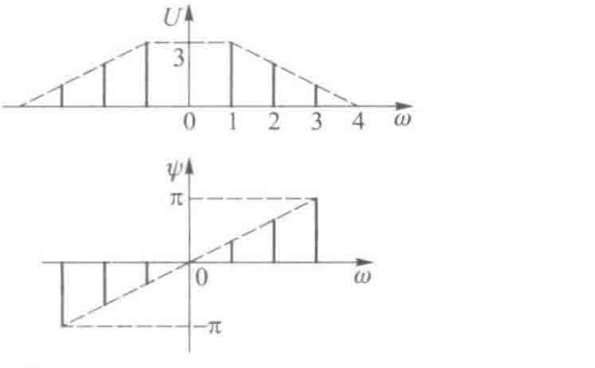

☰ 目录 课程讲义 / 电子电路
展开答案与拓展 打印 / 保存 PDF
CIRCUIT FUNDAMENTALS
电路模型、分析方法与正弦稳态
电子电路基础及实验 · 应迪清课程学习讲义（第 1、2、4、5 章与第
6 章 6.1）
定义 定理 结论 例题 易错
分析一个电路 ，归根结底只用两类约束 ：每个元件 自身的电压电流 关系，以及元件之间怎样连接 。前者由元件模型 给出，后者由基尔霍夫定律 给出。第
1、2
章建立这两类约束 ：什么时候能把真实装置 抽象成集总电路 ，电压、电流、功率 怎样记账，电阻、电容、电感 和各种电源 的模型，基尔霍夫定律 ，以及一个电路 到底能列出 几个互相独立 的方程。第
4
章在此基础 上讲等效变换 、支路电流法 、回路 电流法、节点电压法 和叠加、替代、戴维宁 、诺顿、最大功率传输 等定理。第
5
章把激励 换成正弦量 ，用相量把微分方程变成复数代数方程 ，讲阻抗 、正弦稳态 功率、功率因数 、谐振，再讲互感 、理想变压器 和三相电源。第
6 章开头 把非正弦周期 信号分解成傅里叶级数 ，讲频谱和帕塞瓦尔定理 。
本讲义按“真题驱动”组织：2025—2026
秋冬期中回忆卷里凡在范围内的题，都逐题独立求解 、用程序复核，放进对应小节的开头 ，标【真题】，第一行写出处、原卷分值和建议用时，解答末尾写考点或得分步骤。 然后是教材 和课堂的例题 ，从题里 讲出定义、定理 和推导，最后附同型的小节习题 （提示和解析 都折叠）。课堂作业题 全部作为小节习题 给出完整解答 ；教材范围内 其余的例题和章 末习题，要么在正文 里讲到，要么在小节 末“更多课本习题 ”里给出要点 和答案。第
0 单元 是考试地图，第 20
单元 是期中回忆卷的限时 自测。读的时候先遮住解答 ，按建议 用时自己做。
需要的准备 ：导数与积分 ，复数的代数式与指数式 ，高中电路 中的欧姆定律 与串并联；第
19 单元 用到三角函数 的积分。
学习路线
单元
内容
需要建立的能力
0
考试地图与备考方法
知道期中、期末考什么；按真题的题型安排复习
1
电路与集总模型
判断集总模型是否适用；理解模型只保留主要效应
2
参考方向与功率
用参考方向记电压电流；统一用吸收功率判断元件在吸收还是发出能量
3
电阻、电容、电感
由电流波形求电压波形；掌握记忆性与储能
4
独立电源与受控电源
区分理想源与实际源；认出四种受控源，先求控制量
5
基尔霍夫定律
正确列 KCL、KVL，沿路径求两点间电压
6
独立方程的个数
用树、基本回路、基本割集说明为什么有
n − 1 n-1 b − n + 1 b-n+1
7
等效变换
用串并联、等电位、Y-Δ、电源变换化简；求含受控源电路的输入电阻
8
支路电流法与回路电流法
按电流源位置选网孔或基本回路，列 KVL 方程
9
节点电压法
用自电导、互电导列方程；处理纯电压源支路与受控源
10
叠加定理与替代定理
拆成单个电源分别计算；用已知电压电流替换支路
11
戴维宁、诺顿与最大功率
求开路电压、短路电流、等效电阻；求负载最大功率
12
正弦量与相量
读出三要素；把正弦量和它的相量互相转换
13
元件的相量模型与相量形式的基尔霍夫定律
画相量图；用相量列 KCL、KVL
14
阻抗与导纳
用阻抗串并联、分压分流求正弦稳态响应；判断感性容性
15
正弦稳态功率
求有功、无功、视在、复功率；计算提高功率因数所需电容
16
谐振
求谐振频率、品质因数、通频带
17
互感与理想变压器
判断同名端，写互感电压；求耦合线圈串联、并联的等效阻抗，用去耦等效化简；用理想变压器变换电压、电流与阻抗
18
三相交流电路
写出对称三相电压；区分相电压与线电压、相电流与线电流，由相电压求线电压
19
非正弦周期信号的分解
求傅里叶级数，用对称性省去系数；画单边、双边频谱；用帕塞瓦尔定理求功率
20
期中回忆卷限时自测
按考试时间做完范围内的期中真题
21
综合练习与概念检查
跨章节综合题与概念判断
统一记号 ：大写
U , I U,I 有效值 ，小写
u , i u,i 变化 的量；带点的
U ̇ , I ̇ \dot U,\dot I 相量 。R 1 ∥ R 2 R_1\parallel R_2 电阻并联 后的等效电阻 。
0 考试地图与备考方法
这门课 的成绩由平时作业 、实验和期末考试 三部分组成 。本单元先说清楚考试考什么 ，再说这份讲义怎样配合备考 。 依据是光电学院本课 仅有的一年材料 ：2025—2026
秋冬的期中回忆 卷（两份回忆 ，一份排版 、一份手写 ）和期末计算题 回忆卷。这门课 从
24
级开始 开设，没有更早的卷子 ，也没有答案 卷；下面所有答案都是独立求解 、用程序 复核过的。
0.1 成绩构成与两次考试
本课 的成绩构成是：作业 25%，实验 15%，期末考试
60% 。期末一次考完 电路原理和模拟电子技术 两部分 。期中考试 是否计入成绩 没有公布；2025—2026
学年实际 举行了期中考试 ，题型 和分值如下（回忆卷记录 ）：
部分
题量与分值
回忆出的题
本讲义范围内
判断题
10 题 × 2 分
第 1 题
第 1 题，例 1
单项选择题
10 题 × 2 分
手写卷记下一道电阻网格题
例 15
基本题
4 题 × 6 分
全部
第 1、2、3 题：习题 20、习题 45、例 49；第 4
题（一阶电路的微分方程）第 7 章再做
综合题
3 题 × 12 分
全部
第 1、2 题：习题 27、习题 51；第 3 题（二阶电路换路）第 7
章再做
考试 时间 2 小时。回忆 者说“第六章基本未考 ”，即期中考 到第 5
章为止 。按本讲义 现在的范围 ，回忆 出的 64 分（判断 2、单选 2、基本题
24、综合题 36）里有 46 分能做 ；超出的两题 都是第 7
章的暂态分析 ，等讲到 那里再补。
期末卷只回忆出计算题 （15
个小问），判断、选择基本 忘光了。计算题全部属于模拟电子技术 ：放大电路 的频率响应与波特图 、长尾差分 放大器、运放减法器 与积分器、分压偏置 共射放大器 、负反馈的增益稳定性 、迟滞 比较器、反相 放大器和积分器 组成的方波—三角波发生器 。电路原理 部分在期末的分量 从回忆卷里看不出来 ，但两部分都在考试范围内 。这些题在讲到模电时 再放进讲义 ；本讲义 里只有一个地方已经用到 了它们的工具 ：期末第一题的网络函数 和第
14 单元 例 49 是同一类式子 。
0.2 常见的概念判断
期中的 10
道判断题 只回忆出一道。下面这些说法是判断题 常用的素材 ，每条都在讲义 里有对应 的位置：
说法
正确结论
讲义位置
给出最高频率和电路板尺寸，判断能否用集总模型（期中判断第 1
题就是它）
比较尺寸与最高频率对应的波长
1.1
四个电路图里哪个是非关联参考方向
只标一个量时默认关联
2.1
电压源、电流源的输出电阻应当大还是小
电压源越小越好，电流源越大越好
4.1、7.4
替代定理是否只适用于线性电路
线性、非线性、时变、时不变都适用；叠加定理只适用于线性电路
10.1、10.2
“一个电路只有一个谐振频率”
错，含多个储能元件时可以有几个
16.2
给出同名端，四个互感电压表达式哪个对
按电流、电压相对同名端的方向定正负号
17.2
“周期增大，零分量频率也变了”
错，零分量频率
2 π / τ 2\pi/\tau
19.3
三孔插座是不是三相电
不是：火线、零线、地线，只用了三相中的一根火线
18.1
0.3 怎样用这份讲义备考
凡是在范围 内的真题 ，都放在对应小节的开头 ，标【真题 】，第一行写出 处、原卷分值 （回忆 卷没记分值 的写明）和建议 用时；解答末尾写考点 （判断、选择）或得分步骤 （大题）。 回忆卷没有分步分值，所以只列步骤，不编分数 。
第一遍学 ：每一小节先遮住真题例的解答 ，按建议用时自己做，卡住再看；课本例题 和理论。写过程 ：大题 按“列方程 （标明 用的定律）→
代数解出未知量 → 代入数值 →
检验（功率平衡 、极限 情况、另一种方法 ）”四步 写。回忆卷的大题都是多问连环，第一问的控制量、开路电压算错，后面全错，所以第一步就要检验 。 考前 ：做第 20 单元的限时卷 （期中回忆卷范围 内的 46
分，建议 75 分钟），错的题回到 注明的小节 重做 那一节开头的真题 例；再过一遍
0.2 节的判断题 表。
1 电路与集总模型
电路 是由电气设备 和元器件相互连接 、为电荷流通提供路径 的总体。按用途大致分两类：强电电路实现电能的产生、传输和转换，例如电力网； 弱电电路对电信号进行加工处理，例如通信网络和光电探测电路。 本课程 第一部分做的是电路分析 ：已知电路结构、元件参数和输入 （激励），求输出 （响应）。它的逆问题 是电路设计 ：已知 期望的输入输出 关系，求电路结构 和元件参数，设计 时也要反复用分析方法 预测候选电路 的性能。
1.1 集总参数模型
例 1 · 【真题】光电探测器电路能否用集总模型
2025—2026 秋冬期中回忆卷 · 判断第 1 题（2 分）· 建议用时 1
分钟
判断：某光电探测器电路的最高工作频率
f max = 30 f_{\max}=30 5 cm × 5 cm 5\ \text{cm}\times5\ \text{cm}
解。 正确。最高频率 对应的最小波长
λ = c f max = 3 × 10 8 3 × 10 4 = 10 4 m = 10 km , \lambda=\frac{c}{f_{\max}}=\frac{3\times10^8}{3\times10^4}=10^4\ \text{m}=10\ \text{km}, 板子 的尺寸 5 cm 只有波长 的
0.05 10 4 = 1 2 × 10 5 \dfrac{0.05}{10^4}=\dfrac{1}{2\times10^5} 小于
λ / 10 \lambda/10 定义
2 的第 (3) 条。
考点 ：拿装置尺寸和最高频率对应的波长 比较，不是和频率本身比较 。回忆 卷只留下了
10 道判断题 中的这一道；同类 的题还有“10 kHz、2 cm × 2 cm
的电路板 能否用集总模型 ”。
例 2 · 哪些场合能用集总模型
信号在导线中以约
v = 3 × 10 8 v=3\times10^8 判断下列装置 能否把元件 之间的连线 看成没有尺寸的理想导线 ：(1) 50
Hz 电网 中一台 1 m 见方的配电柜 ，以及长 1000 km 的输电线 ；(2) 一块 10 cm
长的电路板 ，上面跑 500 MHz 的时钟 ；(3) 一块音频 放大板，长 20
cm，信号 最高 20 kHz。
解。 用下面的结论 1：比较装置 最大尺寸
ℓ \ell 信号 最小波长
λ = v / f max \lambda=v/f_{\max} 工程 判据是
ℓ < λ / 10 \ell<\lambda/10
(1) 求波长。
λ = 3 × 10 8 50 = 6 × 10 6 m = 6000 km \lambda=\dfrac{3\times10^8}{50}=6\times10^6\ \text{m}=6000\ \text{km} λ / 10 = 600 \lambda/10=600
比较。 配电柜
ℓ = 1 \ell=1 ℓ / λ = 1.7 × 10 − 7 \ell/\lambda=1.7\times10^{-7} ℓ = 1000 \ell=1000 ℓ / λ = 1000 6000 = 1 6 > 1 10 \ell/\lambda=\dfrac{1000}{6000}=\dfrac16>\dfrac1{10} 电压电流 不同时变化 ，要按分布参数电路 处理。
(2) 求波长。
λ = 3 × 10 8 5 × 10 8 = 0.6 m \lambda=\dfrac{3\times10^8}{5\times10^8}=0.6\ \text{m} λ / 10 = 6 \lambda/10=6
比较。
ℓ = 10 cm > 6 cm \ell=10\ \text{cm}>6\ \text{cm} ℓ / λ = 1 / 6 \ell/\lambda=1/6
(3) 求波长。
λ = 3 × 10 8 2 × 10 4 = 1.5 × 10 4 m = 15 km \lambda=\dfrac{3\times10^8}{2\times10^4}=1.5\times10^4\ \text{m}=15\ \text{km}
比较。
ℓ = 0.2 \ell=0.2 ℓ / λ = 1.3 × 10 − 5 ≪ 1 / 10 \ell/\lambda=1.3\times10^{-5}\ll1/10 集总模型 适用。
检验。 用时间形式复核 (2)：信号走过板子的时间
τ = ℓ / v = 0.1 3 × 10 8 ≈ 0.33 \tau=\ell/v=\dfrac{0.1}{3\times10^8}\approx0.33 T = 1 / f = 2 T=1/f=2 τ / T = 1 / 6 \tau/T=1/6 ℓ / λ \ell/\lambda
真实器件的电磁过程 很复杂 ：一个线圈 既有电感，也有导线电阻 ，匝与匝之间还有电容 。直接分析这样的对象是不可行的 ，所以先做模型化 ：由实际电路得到电路模型。
定义 1 · 理想元件与电路模型
(1)
理想元件 （课件也叫理想电路元件、模型元件）：只具有单一电磁性质、端口电压电流关系可以用精确数学式描述的元件。 教材把这一条列为集总参数元件抽象原则的第
(4) 条。
(2) 本课程的基本理想元件有五类：电阻
R R C C L L
(3)
电路模型 ：由理想元件用理想导线相互连接、用来近似实际电路的整体。 画出来就是电路图。
(4)
成立前提 ：电路模型只在所关心的频率与精度范围内成立。 范围变了，同一个器件要换模型； 集总参数的电路模型还要求满足定义
2。
实际元件（器件）
理想元件
电磁性质
同时有几种（电阻器有引线电感、分布电容）
只有一种
描述方式
只能近似，参数随频率、温度变化
精确的数学式，如
u = R i u=Ri i = C d u d t i=C\dfrac{du}{dt}
与模型的关系
一个器件可用一个或几个理想元件组合表示
组合成电路模型
建模分四步 ：抓住元件起主导作用的物理特性 ；忽略次要因素 （例如电池内阻很小时先不计，导线电阻忽略）；理想元件 的符号和数学 关系表示它；按实际的连接关系 把理想元件 组合起来。手电筒 就是最简单的例子 ：干电池
→ 理想电压源 （必要时串联内阻 ），小灯泡 → 电阻，开关 →
理想 开关（断开时电阻 无穷大，闭合时电阻 为零）。光电探测器 （光电二极管 ）在课件 里拆成电流源 、并联电容 、并联电阻 和串联电阻四个理想元件 。
同一个实物 在不同问题 里可以对应不同模型 。低频时线圈 只看成电感 ；频率升高后，匝间电容不能再忽略，模型要加一个并联电容。 模型是按所关心的问题保留主要效应的结果，不是器件本身。
本课程 所有的电路 都是集总参数电路 ：认为电磁过程集中在各元件内部 ，元件之间用没有尺寸的理想导线 连接，电路 的状态完全由各支路 的电压和电流 描述，不必逐点求电磁场 。
定义 2 · 集总抽象原则
教材 1.2.1
节先给三条基本假设：系统中每个元件的净增电荷总是零； 元件之间没有磁耦合（磁耦合可以发生在元件内部）； 电效应在瞬间贯穿整个系统。 满足这三条的系统叫集总参数系统 ，其中的元件叫集总参数元件 ； 不满足的叫分布参数系统 ，要用电磁场理论分析。 教材
1.2.3 节把集总条件也叫似稳条件 。
集总参数元件抽象原则 ：
(1)
在所有时刻，元件内部随时间变化的总电荷量为零，∂ q ∂ t = 0 \dfrac{\partial q}{\partial t}=0
(2)
在所有时刻，元件与外部任意闭合环路交链的磁链的变化率为零，∂ Ψ ∂ t = 0 \dfrac{\partial\Psi}{\partial t}=0
(3) 信号的时间范围远长于电磁波在元件内部传输的延迟，即元件最大尺寸
ℓ \ell λ \lambda ℓ ≪ λ \ell\ll\lambda
(4) 理想元件具有单一电磁特性，特征量之间的关系可以用数学式表述（定义
1）。
集总电路抽象原则 （由元件原则推广到整个电路）：
(1) 电路中任意节点上电荷的变化率在任何时刻都为零；
(2) 与电路任意部分交链的磁链的变化量在任何时刻都为零；
(3) 信号的时间范围远长于电磁波在整个电路中传输的延迟。
符号与取值 ：ℓ \ell λ = v / f max \lambda=v/f_{\max} v v c = 3 × 10 8 c=3\times10^8 “远小于”通常取
ℓ < λ / 10 \ell<\lambda/10 等价的时间形式：传播延迟
τ = ℓ / v \tau=\ell/v T = 1 / f max T=1/f_{\max} τ ≥ T \tau\ge T
第 (1) 条保证电流流进一个元件（或节点）多少就流出多少 ：教材图 1.2.1
的二端元件由全电流连续和
∂ q / ∂ t = 0 \partial q/\partial t=0 i a = − i b i_a=-i_b i = d q / d t i=dq/dt 第 (2) 条保证 两点之间的电压 与所走路径无关 ，电位 有单一值。第 5
单元 的 KCL（定理 1）和 KVL（定理
2）正是这两条的直接结论 ，所以集总条件是基尔霍夫定律成立的前提 。第
(3) 条就是例 2 用的尺寸 判据。
集总参数电路
分布参数电路
判据
ℓ < λ / 10 \ell<\lambda/10 τ ≪ T \tau\ll T ℓ \ell λ \lambda τ \tau T T
电磁过程
集中在元件内部，元件间是理想导线
沿导线连续分布，单位长度有电阻、电感、电容
电压电流
只是时间
t t
是时间
t t x x
描述方程
常微分方程（代数方程）
偏微分方程（传输线方程、麦克斯韦方程）
KCL、KVL
成立
对整段线不成立，只能用于足够短的一小段
例子
音频电路、实验板、50 Hz 配电设备
上千千米输电线、GHz 走线、微波谐振腔
条件不满足时错在哪里 ：
(1)
元件或节点积累电荷（如高频下导线与地之间的电容电流不能忽略），流入不再等于流出，KCL
失效；
(2)
元件外部有变化磁场与回路交链，回路电压之和等于感应电动势而不是零，两点间电压随路径变化，KVL
失效；
(3) 尺寸与波长 可比，导线 一端的变化 要延迟
τ \tau 另一端 ，同一根导线 上各点电流 不同，“支路电流 ”没有单一的值，要用传输线理论 或电磁场理论。
场合
频率
最小波长
结论
音频电路
20 kHz
15 km
集总模型适用
电力系统
50 Hz
6000 km
尺寸小于 600 km
的设备可用集总模型；上千千米的输电线按分布参数处理
光电探测（课件例）
1 kHz
300 km
0.1 m 的电路板满足集总条件
无线电通信
1 GHz
0.3 m
收发电路尺寸要小于 3 cm 才算集总
计算机主频
500 MHz
0.6 m
板上走线达到几厘米就要计入传输线效应
微波、高速光模块
3—300 GHz
0.1—10 cm
不能用集总模型，要用电磁场理论
结论 1 · 用尺寸与波长判断能否用集总模型的步骤
找出信号的最高重要频率
f max f_{\max} 数字脉冲要看上升沿里的高频成分，不能只看重复频率。 求最小波长
λ = v / f max \lambda=v/f_{\max} v = c = 3 × 10 8 v=c=3\times10^8 取整个电路（或所关心元件）的最大尺寸
ℓ \ell 比较：ℓ < λ / 10 \ell<\lambda/10 ℓ \ell λ / 10 \lambda/10 ℓ \ell λ \lambda
f max f_{\max} λ \lambda ℓ \ell
时间形式：比较
τ = ℓ / v \tau=\ell/v T = 1 / f max T=1/f_{\max} τ / T = ℓ / λ \tau/T=\ell/\lambda
光电 系统往往是混合 的：激光雷达 的收发前端处理纳秒信号 ，要按分布参数 设计；后端处理
MHz
以下的信号 ，又回到集总范围 。光学 里有同样的分界 ：孔径远大于 光波长时用几何光学 ，与波长 可比时出现衍射 ，要用电磁场理论 。
满足集总条件 并不保证模型 够用。教材 1.2.2 节指出，信号频率到 100 MHz
量级时，电阻和导线的寄生电容、电感已不能忽略，这时仍是集总电路，只是每个器件要换成含寄生元件的模型（定义
1 第 (4) 条），不是改用分布参数。
易错 · 比什么和什么
(1) 比的是尺寸与波长 ，不是频率本身的大小。 “30 kHz
很高”不构成理由 ，要算 出
λ = 10 \lambda=10 尺寸 比。
(2) 集总电路原则 第 (3)
条比的是整个电路 的尺寸。每个元件 都很小，但连线 长达几十厘米、频率 到几百
MHz 时，电路 仍不是集总的。
(3) 教材 写最大尺寸为
l l 讲义 写
ℓ \ell
测量 仪器接进电路 以后也是电路的一部分 。理想电压表 内阻无穷大 ，理想电流表 内阻为零；真实仪表 做不到，接上以后会改变原电路 。下面的习题 说明这一点。
习题 1 · 伏安法测电阻的两种接法
练习 · 先独立作答
用电压表（内阻
R V = 10 R_V=10 R A = 1 Ω R_A=1\ \Omega R = 1 R=1 (1) 电压表 只跨接
R R 电流表 在外侧（电流表 外接），测得的电阻 是多少？(2)
电压表 跨接
R R 串联 （电流表 内接），测得的电阻 是多少？(3) 被测电阻 为 10 Ω
时，哪种接法 误差小？
解析
外接时电流表 读到
R R 电压表 两路电流 之和，测得
R ∥ R V R\parallel R_V 电压表读数 多了电流表 的压降，测得
R + R A R+R_A − 9.1 % -9.1\% + 0.1 % +0.1\% 误差 小（− 0.1 % -0.1\% + 10 % +10\% R > R V R A ≈ 100 Ω R>\sqrt{R_VR_A}\approx100\ \Omega R < R V R A R<\sqrt{R_VR_A}
解答
外接的测得值。 电压表读数
U U R R 端电压 ，电流表读数 是两路之和：
I 读 = U R + U R V , R 测 = U I 读 = R R V R + R V , R 测 − R R = − R R + R V . I_{\text{读}}=\frac UR+\frac U{R_V},\qquad R_{\text{测}}=\frac U{I_{\text{读}}}=\frac{RR_V}{R+R_V},\qquad \frac{R_{\text{测}}-R}{R}=-\frac{R}{R+R_V}. 内接的测得值。 电流表读数
I I R R 电流 ，电压表读数 是两段压降 之和：
U 读 = I ( R + R A ) , R 测 = U 读 I = R + R A , R 测 − R R = R A R . U_{\text{读}}=I(R+R_A),\qquad R_{\text{测}}=\frac{U_{\text{读}}}{I}=R+R_A,\qquad \frac{R_{\text{测}}-R}{R}=\frac{R_A}{R}. (1)
R 测 = 1000 × 10000 1000 + 10000 = 10 7 11000 ≈ 909.1 Ω R_{\text{测}}=\dfrac{1000\times10000}{1000+10000}=\dfrac{10^7}{11000}\approx909.1\ \Omega 相对误差
− 1000 11000 ≈ − 9.1 % -\dfrac{1000}{11000}\approx-9.1\%
(2)
R 测 = 1000 + 1 = 1001 Ω R_{\text{测}}=1000+1=1001\ \Omega 相对误差
1 1000 = + 0.1 % \dfrac{1}{1000}=+0.1\%
(3) 外接
R 测 = 10 × 10000 10010 ≈ 9.990 Ω R_{\text{测}}=\dfrac{10\times10000}{10010}\approx9.990\ \Omega 相对误差
− 10 10010 ≈ − 0.1 % -\dfrac{10}{10010}\approx-0.1\% R 测 = 11 Ω R_{\text{测}}=11\ \Omega 相对误差
1 10 = + 10 % \dfrac1{10}=+10\% 误差 小。
判据。 两种接法 误差绝对值 相等时
R R + R V = R A R ⇒ R 2 − R A R − R A R V = 0 ⇒ R 0 = R A + R A 2 + 4 R A R V 2 . \frac{R}{R+R_V}=\frac{R_A}{R}\ \Longrightarrow\ R^2-R_AR-R_AR_V=0\ \Longrightarrow\ R_0=\frac{R_A+\sqrt{R_A^2+4R_AR_V}}{2}. R V ≫ R A R_V\gg R_A R 0 ≈ R V R A R_0\approx\sqrt{R_VR_A} R 0 = 1 + 40001 2 ≈ 100.5 Ω R_0=\dfrac{1+\sqrt{40001}}{2}\approx100.5\ \Omega R V R A = 100 Ω \sqrt{R_VR_A}=100\ \Omega R > R 0 R>R_0 误差
R R + R V \dfrac R{R+R_V} R < R 0 R<R_0 时用 外接。这种偏差 来自接线方式 ，是系统误差 ，多读几次不会消除 ，可以用上面两式修正 。
检验。 (1) 中 1 kΩ
> 100 Ω >100\ \Omega 误差
0.1% 小于 外接 9.1%；(3) 中 10 Ω
< 100 Ω <100\ \Omega 误差 小，与判据 一致。极限：R V → ∞ R_V\to\infty R 测 → R R_{\text{测}}\to R R A → 0 R_A\to0 R 测 → R R_{\text{测}}\to R 理想仪表 。另取
E = 10 E=10 理想电压源 接在外接电路 两端：R 总 = 1 + 909.09 = 910.09 Ω R_{\text{总}}=1+909.09=910.09\ \Omega I A = 10.988 I_A=10.988 U = 9.989 U=9.989 I R = 9.989 I_R=9.989 I V = 0.999 I_V=0.999 I R + I V = I A I_R+I_V=I_A U + I A R A = E U+I_AR_A=E U I R + U I V + I A 2 R A = E I A = 0.1099 UI_R+UI_V+I_A^2R_A=EI_A=0.1099 功率平衡 ）。
2 参考方向与功率
2.1 参考方向
例 3 · 同一组读数，两种参考关系
某元件两端电压的数值为
U = 5 U=5 I = − 1 I=-1 (a) 图中电流参考方向 从电压参考 “+”端流入元件 ；(b)
图中电流参考方向 从“+”端流出 元件。分别求元件吸收 的功率，并说明它实际上在吸收 还是发出 能量。（教材 例
2.1.1）
解。 用结论 2（2.2 小节）。
判断参考关系。 (a) 电流 从电压“+”端流入 ，关联；(b)
电流 从“+”端流出 ，非关联 。
列功率式。 (a)
关联，P = U I P=UI 吸收功率 ；(b)
非关联 ，P = U I P=UI 发出功率 。
代入并读符号。
(a)
P 吸 = U I = 5 × ( − 1 ) = − 5 P_{\text{吸}}=UI=5\times(-1)=-5 − 5 -5 发出 5 W。
(b)
P 发 = U I = 5 × ( − 1 ) = − 5 P_{\text{发}}=UI=5\times(-1)=-5 − 5 -5 吸收 5 W。
检验。 (a)
I < 0 I<0 实际电流 从“+”端流出 ；实际电压 降仍从“+”到“−”，电流 从高电位端流出 ，元件 对外做功，发出
5 W。(b)
I < 0 I<0 实际电流 从“+”端流入 ，从高电位 端流入，元件吸收
5 W。与上面一致。
同样的数值 ，参考方向 的配合不同 ，结论相反 。一个负号要连同参考方向一起读 。
例 3 里的
I = − 1 I=-1 不是“错了” ，而是说实际电流 与箭头相反 。分析 之前一般不知道电流实际朝 哪个方向流 ，交流电路 中实际方向还会不断改变 ，所以先假设一个方向 ，按它列方程 。
定义 3 · 参考方向
(1)
电流参考方向 ：分析前任意选定的电流正方向。 电流的大小和方向在分析前都未知，参考方向的作用相当于给它定一根坐标轴。
(2)
电压参考方向 （又称参考极性）：分析前任意选定的电压正方向，即假定的电位降低方向。
(3)
选定后不变 ：参考方向可以任意选，一旦选定，整个分析过程中不再改变。 算到一半改方向，前后方程的符号就对不上。
(4)
时变量 ：电压、电流随时间变化（例如交流电路）时，参考方向是每一瞬时共用的参考正方向，各瞬时都按这一个方向读正负。
(5)
离开参考方向只说电流（电压）的大小是不完整的，只说它的正负是没有意义的。
电路图上的三种标法：
标法
电流
i i
电压
u u
箭头
导线上（或元件旁）画箭头，标
i i
元件旁画箭头，从假定的高电位端指向低电位端，标
u u
正负极
不用
两端标“+”“−”，标
u u
双下标
i A B i_{AB} u A B u_{AB} u A B = φ A − φ B u_{AB}=\varphi_A-\varphi_B
算出的符号与实际方向：
计算结果
电流
i i
电压
u u
> 0 >0 实际方向与参考方向相同，实际从 A 流向 B
A 点电位比 B 点高
u u
< 0 <0 实际方向与参考方向相反，实际从 B 流向 A
A 点电位比 B 点低
| u | \lvert u\rvert
= 0 =0 无电流
两点等电位
双下标换顺序就换号：i B A = − i A B i_{BA}=-i_{AB} u B A = − u A B u_{BA}=-u_{AB}
电流箭头 从 a 指向 b，算出
i = − 2 i=-2 含义 是实际有 2 A 从 b 流向 a。这时不要把箭头倒过来后仍然把
− 2 -2 不需要事先猜对实际方向 ；选反 了，结果差一个负号 ，物理结论 不变。能一眼看出能量流向 的简单电路 ，按实际方向选参考方向 ，式子 最简（教材
2.1.2 节）。
参考方向 是给下面这些量记账 用的（教材 2.1 节）：
量
符号与单位
定义
方向
电荷
q q 描述电现象的源量；电荷量是
1.602 × 10 − 19 1.602\times10^{-19}
有正负两种极性
电流
i i I I i = d q d t i=\dfrac{dq}{dt} 实际方向规定为正电荷运动方向
电位（电势）
φ \varphi 单位正电荷从该点移到参考点（零电位点）时电场力做的功
标量，比参考点高为正
电压（电位差）
u u U U u A B = ∫ A B 𝐄 ⋅ d 𝐥 = φ A − φ B u_{AB}=\displaystyle\int_A^B\mathbf E\cdot d\mathbf l=\varphi_A-\varphi_B 实际方向从高电位指向低电位（电位降）
电动势
e e E E 电源内部非静电力把单位正电荷从负极移到正极所做的功
电源内部从低电位指向高电位（电位升）
功率
p p P P p = d w d t p=\dfrac{dw}{dt} 吸收/发出要结合参考方向判断（2.2 小节）
能量
w w W W w = ∫ t 0 t p d τ w=\displaystyle\int_{t_0}^{t}p\,d\tau 同上
电位、电压、电动势三者 的区别：
电位
φ \varphi
电压
u A B u_{AB}
电动势
e e
描述对象
一个点
两个点之间
电源
与参考点的关系
随参考点改变
与参考点无关
与参考点无关
做功的力
电场力
电场力
电源内部的非静电力
方向
无（标量，有正负）
高电位 → 低电位
电源内部低电位 → 高电位
成立前提
保守场；集总电路满足（1.1 节）
同左
只对电源定义
同一个电源 ，端电压
u u 指向负极 ，电动势
e e 负极指向 正极，两者方向 相反；理想 情况下数值 相等，按同一对端钮 写成
u + − = e u_{+-}=e 参考点 ，φ A = 5 \varphi_A=5 φ B = 0 \varphi_B=0 u A B = 5 u_{AB}=5 参考点 ，φ A = 0 \varphi_A=0 φ B = − 5 \varphi_B=-5 u A B u_{AB}
记号 约定（教材 2.1
节）：大写字母 表示直流量 （U U I I 小写字母 表示随时间变化 的量（u ( t ) u(t) i ( t ) i(t) 小信号 分析中的大小写下 标约定在后面用到 时再给。
同一个元件 的电压和电流 各有参考方向 ，两者 的配合要区分：
关联与非关联参考方向。(a)
电流从电压“+”端流入元件：关联；(b)
电流从“+”端流出：非关联。
定义 4 · 关联参考方向
(1)
关联参考方向 ：同一元件（或一端口）的电压和电流参考方向选为一致，即电流参考方向从电压参考“+”端流入、从“−”端流出。
(2)
非关联参考方向 ：两者参考方向选为相反，即电流参考方向从电压参考“+”端流出、从“−”端流入。
(3)
只标一个量 ：电路图上只标了电压或只标了电流中的一个时，约定另一个按关联方向理解。 这不是题目缺条件。
(4)
对象 ：关联与否是针对某一个元件或某一个端口说的。 串联回路里共用一个电流箭头时，对电阻关联、对电源可能非关联，要逐个元件判断。
关联
非关联
电流参考方向
从“+”端流入，“−”端流出
从“+”端流出，“−”端流入
两个箭头（u u
同向
反向
双下标
u A B u_{AB} i A B i_{AB} u A B u_{AB} i B A i_{BA}
电阻的欧姆定律
u = R i u=Ri u = − R i u=-Ri
p = u i p=ui 吸收功率（结论 2）
发出功率（结论 2）
只标一个量时
默认为关联
必须两个都标出才能是非关联
定义 5 · 端口与一端口电路
(1) 端钮 ：电路（或元件）向外引出的一个接线端。
(2)
端口 ：一对端钮，满足从一个端钮流入的电流等于从另一个端钮流出的电流。 一个端口由两个端钮构成。
(3)
一端口电路 （又称二端网络、单口网络）：只有两个引出端钮、且这两个端钮构成一个端口的电路。 它可以是一个元件，也可以是若干元件连成的电路。
(4) 每个二端元件都是一个一端口。 参考方向、关联与否和功率属性（结论
2）的说法对一端口同样适用，只看端口上的电压和电流。
端钮
端口
是什么
一个接线端
一对端钮
条件
无
两端钮电流一进一出、大小相等
一端口电路有几个
2 个
1 个
有两个端口的元件也存在，4.2
节的受控源就是一例，那里要分清输入端口与输出端口。
易错 · 参考方向的几处混淆
(1)
电源符号的极性不是参考极性 。 电压源符号旁的“+”“−”表示电源 本身的实际极性 ；元件端电压 的参考“+”“−”是另外选定 的，两者 可以相反。例如 只给电压 源标了一个电流箭头时 ，参考 电压按关联方向 取，可能正好与电源实际 极性相反，算出的端电压 就为负。
(2)
双下标换顺序要变号 ：u B A = − u A B u_{BA}=-u_{AB} i B A = − i A B i_{BA}=-i_{AB}
(3)
电位随参考点变，电压不变 。换参考点 后各点电位 同加一个常数，任意 两点的电压 不变。
(4) 改方向不改值是错的 。算出
i = − 2 i=-2 若想 把箭头倒过来，数值 要同时改成
+ 2 +2 差一个负号 。
2.2 功率
例 4 · 三个电路中元件的功率属性
计算下图各电路中每个元件的功率，并指出是吸收还是发出。 (a) 电压源
U s = 5 U_s=5 I = 1 I=1 流出 ；(b) 电流源
I s = 2 I_s=2 向下 流过，其端电压
U = 5 U=5 电压源
U U 电阻
R R 回路 ，电流
I I 电压源 “+”端流出 ，顺时针流经
R R
习题 2.2 的三个电路
(a)(b)(c)。
解。 每个元件先判关联，再用下面的结论 2
读出功率属性。
(a)
电流 从“+”端流出 ，非关联 ，U s I U_sI 发出功率 ：P = U s I = 5 × 1 = 5 P=U_sI=5\times1=5 发出 5 W。
(b) 电流 2 A
从“+”端流入 ，关联，U I s UI_s 吸收功率 ：P = U I s = 5 × 2 = 10 P=UI_s=5\times2=10 吸收 10
W。电流源 也可以吸收功率 ，这时它在别的电源 带动下充当负载 。
(c) 电压源 ：电流 从“+”端流出 ，非关联 ，发出
U I UI 电流 从上端流入，上端与电压源 “+”端相连、电位 高，关联，吸收
U I UI 欧姆定律
I = U / R I=U/R 吸收
U 2 / R U^2/R
检验 (c)：回路 只有这两个元件 ，吸收功率 代数和
− U I + U I = 0 -UI+UI=0 功率平衡 。
上面的判断 都基于功率 的定义。
定义 6 · 功率与能量
(1) 功率 （电功率）：设一端口电压
u u i i d t dt d q dq d w = u d q dw=u\,dq
p = d w d t = d w d q ⋅ d q d t = u i . p=\frac{dw}{dt}=\frac{dw}{dq}\cdot\frac{dq}{dt}=ui . (2) 能量 ：从
t 0 t_0 t t
w ( t 0 , t ) = ∫ t 0 t p ( ξ ) d ξ = ∫ t 0 t u ( ξ ) i ( ξ ) d ξ . w(t_0,t)=\int_{t_0}^{t}p(\xi)\,d\xi=\int_{t_0}^{t}u(\xi)\,i(\xi)\,d\xi . (3) 单位 ：功率为瓦特
W，1 W = 1 V ⋅ A = 1 J/s 1\ \text{W}=1\ \text{V}\cdot\text{A}=1\ \text{J/s} 能量为焦耳
J，工程上用千瓦时（度），1 kW ⋅ h = 1000 × 3600 J = 3.6 × 10 6 J 1\ \text{kW}\cdot\text{h}=1000\times3600\ \text{J}=3.6\times10^6\ \text{J}
(4)
符号与取值 ：p p w w 时变量写小写
p ( t ) = u ( t ) i ( t ) p(t)=u(t)i(t) 直流写大写
P = U I P=UI 正弦稳态下的平均功率、无功功率见第
15 单元。
(5)
成立前提 ：端口满足集总条件，即从一端流入的电流等于从另一端流出的电流（1.1
节）。 对线性、非线性、时变元件都适用。
(6) 非关联参考方向下电流反号，同一个端口吸收的功率是
− u i -ui u i ui
功率
p p
能量
w w
含义
某一时刻能量转移的速率
一段时间内转移的总量
两者关系
p = d w / d t p=dw/dt w = ∫ t 0 t p d ξ w=\int_{t_0}^{t}p\,d\xi
单位
W
J，kW·h
正负
吸收或发出，按参考方向读（结论 2）
w > 0 w>0
物理 上，关联方向 且
u > 0 u>0 i > 0 i>0 正电荷 顺着电场 从高电位移 到低电位，电场力 做正功，电势 能减少；减少的能量 被元件吸收 ，转成 热、光或储存起来 。
结论 2 · 功率属性的判断规则
(1) 关联参考方向下
p = u i p=ui 吸收 功率； 非关联参考方向下
p = u i p=ui 发出 功率。 代入带符号的
u u i i
参考关系
p = u i p=ui p > 0 p>0 p < 0 p<0
关联
吸收功率
吸收，起负载作用
发出，起电源作用
非关联
发出功率
发出，起电源作用
吸收，起负载作用
(2) 统一写成吸收功率：关联时
p 吸收 = u i p_{\text{吸收}}=ui p 吸收 = − u i p_{\text{吸收}}=-ui “吸收
− x -x x x p 发出 = − p 吸收 p_{\text{发出}}=-p_{\text{吸收}}
(3) 按实际方向判断（课件 0916）：算出
u u i i
实际电压降方向与实际电流方向
功率属性
相同（电流从实际高电位端流入）
吸收
相反（电流从实际高电位端流出）
发出
(4)
功率平衡 ：整个电路中所有元件吸收功率的代数和为零，
∑ k p k , 吸收 = 0 , 即 ∑ p 发出 = ∑ p 吸收 . \sum_k p_{k,\text{吸收}}=0,\qquad\text{即}\qquad\sum p_{\text{发出}}=\sum p_{\text{吸收}} . 成立前提 ：
集总电路 。它由 KCL、KVL（定理 1、2，第 5
单元）推出； 电路尺寸与波长可比时有电磁辐射，等式不成立（1.1 节）。 求和遍及电路中所有 元件，受控源、电源内阻都要计入； 漏掉一个，和就不为零。 单独一个一端口不满足，它和外部电路交换功率。 各项取同一时刻，按同一约定（都算吸收或都算发出）。 对任意时刻的瞬时功率都成立，与元件是否线性无关。
判断步骤 ：
看电流参考箭头从电压参考“+”端流入还是流出，定关联或非关联； 只标了一个量的按关联理解。 代入带符号的
u u i i p = u i p=ui 按 (1) 的表读出吸收或发出。 对整个电路求各元件吸收功率之和，检查是否为零。
不要把“电源”和“发出功率”画等号：电池被充电时吸收功率，例 4(b)
的电流源也在吸收功率，电容、电感在储能与释能之间来回切换。 功率属性 看的是当时的
u u i i 参考 关系，与元件 的名称无关。
易错 · 两处负号不要混
(1) 写支路电压时的负号来自 KVL：某段电压的参考方向与端电压
U U 读功率时 的负号来自 参考关系：非关联时吸收功率 是
− U I -UI 两者 各算各的，见习题
2。
(2)
教材 有时写“P = U I P=UI P = − U I P=-UI 括号 说明这个
P P 约定 算。本讲义 统一用结论 2 第 (2) 条：关联
p 吸收 = u i p_{\text{吸收}}=ui 关联
p 吸收 = − u i p_{\text{吸收}}=-ui
习题 2 · 同一支路的四种参考方向
练习 · 先独立作答
电阻
R = 5 Ω R=5\ \Omega U s = 10 U_s=10 按下图四种方式 选择端电压
U U 电流
I I 参考方向 ，(a)(b) 中
I = − 1 I=-1 I = 1 I=1 端电压 与电流的关系，并求 这个一端口 的功率。（教材 例 2.1.2，课件
0916）
四种参考方向：电压源都是左“+”右“−”；(a)(b)
电流箭头向右，(c)(d) 向左；(a)(c) 端电压左“+”，(b)(d)
右“+”。
解析
每种先沿端口 写
KVL：R I RI U s U_s U U 参考方向 一致取正，相反 取负；再按结论 2
读功率 。四种写法的式子 和中间正负号 都不同，结论都是这个一端口 向外发出 5
W。
解答
判关联。 (a) 电流 从“+”端流入 ，关联；(b)
从“−”端流入 ，非关联 ；(c) 从“+”端流出 ，非关联 ；(d)
从右端“+”流入，关联。
写端电压。
R I RI 方向 随
I I 箭头 ，U s U_s U U 参考方向 比较定号 ：
图
端电压
功率
P = U I P=UI
(a)
U = R I + U s U=RI+U_s R I 2 + U s I RI^2+U_sI
(b)
U = − R I − U s U=-RI-U_s − R I 2 − U s I -RI^2-U_sI
(c)
U = − R I + U s U=-RI+U_s − R I 2 + U s I -RI^2+U_sI
(d)
U = R I − U s U=RI-U_s R I 2 − U s I RI^2-U_sI
代入数值。
(a)
U = 5 × ( − 1 ) + 10 = 5 U=5\times(-1)+10=5 P = U I = 5 × ( − 1 ) = − 5 P=UI=5\times(-1)=-5 − 5 -5 发出 5 W。
(b)
U = − 5 × ( − 1 ) − 10 = − 5 U=-5\times(-1)-10=-5 P = U I = ( − 5 ) × ( − 1 ) = 5 P=UI=(-5)\times(-1)=5 关联 ，发出 5 W。
(c)
U = − 5 × 1 + 10 = 5 U=-5\times1+10=5 P = U I = 5 × 1 = 5 P=UI=5\times1=5 关联 ，发出 5 W。
(d)
U = 5 × 1 − 10 = − 5 U=5\times1-10=-5 P = U I = ( − 5 ) × 1 = − 5 P=UI=(-5)\times1=-5 − 5 -5 发出 5 W。
检验。 四种情形实际电流 都是 1 A
从右向左，在电压源 内部从“−”流到“+”。电压源发出
U s × 1 = 10 U_s\times1=10 吸收
R × 1 2 = 5 R\times1^2=5 一端口 向外发出
10 − 5 = 5 10-5=5 算法 一致。参考方向 可以任意 选，实际方向 和计算结果是唯一的。
更多课本习题 · 1 道
习题 2.1 按题图 2.1 所标参考方向写出各电路
U U I I u = R i u=Ri u = − R i u=-Ri
(a) 1 A
电流源 的箭头向左，I I 参考方向 向右：I = − 1 I=-1 U U
(b) 2 V
电压源 左“+”右“−”，U U 参考方向 左“−”右“+”，两者 相反：U = − 2 U=-2
(c) 2 A 向右从
U U 流入 5
Ω，关联：U = 5 × 2 = 10 U=5\times2=10
(d) 从左到右 ，经过
U S U_S 电位 升高
U S U_S R R I I 电位 降低
R I RI U = R I − U S U=RI-U_S U S = 0 U_S=0 退化 成
U = R I U=RI
3 电阻、电容、电感
以下都采用关联参考方向 、线性非时变 参数，R , C , L > 0 R,C,L>0 过原点的直线 ，“非时变 ”指这条曲线不随时间改变 ，两者是独立的分类维度 。
3.1 由电流波形求三种元件的电压
例 5 · 由电容电压波形求电流与功率
C = 2 μ C=2\ \mu 0 ∼ 1 0\sim1 线性 升到 10
V，1 ∼ 3 1\sim3 3 ∼ 5 3\sim5 线性 降到
0。求各段电流 ；t = 2 t=2 储能 ；t = 0.5 t=0.5 t = 4 t=4 吸收 的功率。
解。 关联参考方向下
i = C d u d t i=C\,\dfrac{du}{dt} 电压分段线性 ，每段的
d u d t \dfrac{du}{dt} 斜率 ，时间先换成 秒。
各段电流。
0 ∼ 1 ms : d u d t = 10 − 0 1 × 10 − 3 = 1 × 10 4 V/s , i = 2 × 10 − 6 × 10 4 = 2 × 10 − 2 A = 20 mA ; 0\sim1\ \text{ms}:\ \frac{du}{dt}=\frac{10-0}{1\times10^{-3}}=1\times10^{4}\ \text{V/s},\qquad i=2\times10^{-6}\times10^{4}=2\times10^{-2}\ \text{A}=20\ \text{mA}; 1 ∼ 3 ms : d u d t = 0 , i = 0 ; 1\sim3\ \text{ms}:\ \frac{du}{dt}=0,\qquad i=0; 3 ∼ 5 ms : d u d t = 0 − 10 2 × 10 − 3 = − 5 × 10 3 V/s , i = 2 × 10 − 6 × ( − 5 × 10 3 ) = − 1 × 10 − 2 A = − 10 mA . 3\sim5\ \text{ms}:\ \frac{du}{dt}=\frac{0-10}{2\times10^{-3}}=-5\times10^{3}\ \text{V/s},\qquad i=2\times10^{-6}\times(-5\times10^{3})=-1\times10^{-2}\ \text{A}=-10\ \text{mA}. t = 2 t=2 u = 10 u=10
W C = 1 2 C u 2 = 1 2 × 2 × 10 − 6 × 10 2 = 1 × 10 − 4 J = 100 μ J . W_C=\frac12Cu^2=\frac12\times2\times10^{-6}\times10^2=1\times10^{-4}\ \text{J}=100\ \mu\text{J}. 两个时刻的功率。 关联方向下
p = u i p=ui 吸收功率 。
t = 0.5 ms : u = 10 4 × 0.5 × 10 − 3 = 5 V , p = 5 × 0.02 = 0.1 W ( 吸收，充电 ) ; t=0.5\ \text{ms}:\ u=10^{4}\times0.5\times10^{-3}=5\ \text{V},\qquad p=5\times0.02=0.1\ \text{W}\ (\text{吸收，充电}); t = 4 ms : u = 10 − 5 × 10 3 × ( 4 − 3 ) × 10 − 3 = 5 V , p = 5 × ( − 0.01 ) = − 0.05 W ( 发出，放电 ) . t=4\ \text{ms}:\ u=10-5\times10^{3}\times(4-3)\times10^{-3}=5\ \text{V},\qquad p=5\times(-0.01)=-0.05\ \text{W}\ (\text{发出，放电}). 检验。 充入电荷
0.02 × 1 × 10 − 3 = 2 × 10 − 5 0.02\times1\times10^{-3}=2\times10^{-5} 电荷
0.01 × 2 × 10 − 3 = 2 × 10 − 5 0.01\times2\times10^{-3}=2\times10^{-5} 等于
C Δ u = 2 × 10 − 6 × 10 = 2 × 10 − 5 C\Delta u=2\times10^{-6}\times10=2\times10^{-5} 0 ∼ 1 0\sim1 吸收 的能量
∫ 0 10 − 3 0.02 × 10 4 t d t = 1 × 10 − 4 \displaystyle\int_0^{10^{-3}}0.02\times10^4t\,dt=1\times10^{-4} t = 2 t=2 储能 。
1 ∼ 3 1\sim3 电压 为 10 V
而电流 为零：电容电流 看的是电压的变化率 ，不是电压 本身。
例 6 · 分段电流驱动 RLC 串联支路
电阻、电感、电容与电流源串联，R = 10 Ω R=10\ \Omega L = 10 L=10 C = 0.1 C=0.1 电流波形：0 ∼ 1 0\sim1 1 ∼ 2 1\sim2 线性 上升到 2
A，2 ∼ 3 2\sim3 线性 下降到零，之后为零。求
t > 0 t>0 元件 的电压。（教材 例 2.3.1）
RLC 与电流源串联，电流
i s i_s t = 2 t=2
解。 按结论
3：电阻电压 用电流本身，电感电压 用电流的斜率 ，电容电压 用电流的积分并逐段接力 。t t i i
写分段表达式。 由波形 的三个转折点
t = 1 , 2 , 3 t=1,2,3
i ( t ) = { 0 , 0 ≤ t < 1 , 2 ( t − 1 ) , 1 ≤ t < 2 , − 2 ( t − 3 ) , 2 ≤ t < 3 , 0 , t ≥ 3 . i(t)=\begin{cases}0,&0\le t<1,\\2(t-1),&1\le t<2,\\-2(t-3),&2\le t<3,\\0,&t\ge3.\end{cases} 0 ∼ 1 0\sim1 电流 为零，u R = u L = 0 u_R=u_L=0 u C = u C ( 0 ) = 0 u_C=u_C(0)=0 u C ( 1 ) = 0 u_C(1)=0
1—2 s。 斜率
d i d t = 2 \dfrac{di}{dt}=2
u R = R i = 10 × 2 ( t − 1 ) = ( 20 t − 20 ) V , u L = L d i d t = 0.01 × 2 = 0.02 V , u_R=Ri=10\times2(t-1)=(20t-20)\ \text{V},\qquad u_L=L\frac{di}{dt}=0.01\times2=0.02\ \text{V}, u C = u C ( 1 ) + 1 C ∫ 1 t 2 ( ξ − 1 ) d ξ = 0 + 1 0.1 [ ( ξ − 1 ) 2 ] 1 t = 10 ( t − 1 ) 2 V . u_C=u_C(1)+\frac1C\int_1^t2(\xi-1)\,d\xi=0+\frac1{0.1}\Big[(\xi-1)^2\Big]_1^t=10(t-1)^2\ \text{V}. t = 2 t=2 u C ( 2 ) = 10 × 1 2 = 10 u_C(2)=10\times1^2=10 初值 。
2—3 s。 斜率
d i d t = − 2 \dfrac{di}{dt}=-2
u R = 10 × [ − 2 ( t − 3 ) ] = − 20 ( t − 3 ) V , u L = 0.01 × ( − 2 ) = − 0.02 V , u_R=10\times\left[-2(t-3)\right]=-20(t-3)\ \text{V},\qquad u_L=0.01\times(-2)=-0.02\ \text{V}, ∫ 2 t [ − 2 ( ξ − 3 ) ] d ξ = [ − ξ 2 + 6 ξ ] 2 t = − t 2 + 6 t − 8 , \int_2^t\left[-2(\xi-3)\right]d\xi=\Big[-\xi^2+6\xi\Big]_2^t=-t^2+6t-8, u C = u C ( 2 ) + 1 0.1 ( − t 2 + 6 t − 8 ) = [ 10 + 10 ( − t 2 + 6 t − 8 ) ] V = ( − 10 t 2 + 60 t − 70 ) V . u_C=u_C(2)+\frac1{0.1}\left(-t^2+6t-8\right)=\left[10+10(-t^2+6t-8)\right]\ \text{V}=\left(-10t^2+60t-70\right)\ \text{V}. 3 s 以后。
电流 为零，u R = u L = 0 u_R=u_L=0 u C ( 3 ) = − 90 + 180 − 70 = 20 u_C(3)=-90+180-70=20 保持 20 V 不变。
检验。
(1)
连续性 ：t = 2 t=2 u C u_C 等于 10
V（− 40 + 120 − 70 = 10 -40+120-70=10 t = 3 t=3 等于 20
V。u L u_L t = 1 , 2 , 3 t=1,2,3 i i 斜率 跳变而
i i 连续 。
(2) 电荷：三角形面积
Q = 1 2 × 2 × 2 = 2 Q=\frac12\times2\times2=2 Δ u C = Q / C = 2 / 0.1 = 20 \Delta u_C=Q/C=2/0.1=20 u C ( 3 ) u_C(3)
(3) 能量：电容最终储能
1 2 × 0.1 × 20 2 = 20 \frac12\times0.1\times20^2=20 电阻 耗能
R ∫ i 2 d t = 10 × 2 ∫ 1 2 4 ( t − 1 ) 2 d t = 10 × 8 3 = 80 3 R\displaystyle\int i^2dt=10\times2\int_1^2 4(t-1)^2dt=10\times\frac83=\frac{80}3 吸收
∫ u L i d t = 1 2 L [ i 2 ( 3 ) − i 2 ( 1 ) ] = 0 \displaystyle\int u_Li\,dt=\frac12L\left[i^2(3)-i^2(1)\right]=0 电流源 提供
∫ i ( u R + u L + u C ) d t = 140 3 \displaystyle\int i(u_R+u_L+u_C)\,dt=\frac{140}{3} = 20 + 80 3 + 0 =20+\frac{80}3+0 功率平衡 。
从结果 读出三种元件 的特点：
(1) 电阻电压 与电流同形，只与当时的电流 有关。
(2) 电感电压 在上升段为
+ 0.02 +0.02 下降段 为
− 0.02 -0.02 参考方向 没有变，电压的实际方向 在
t = 2 t=2 斜率变号 。电流 处处连续，只是斜率 跳变，所以电感电压只是有限的跳变 。
(3)
电容电压在第二段仍在上升 ：电流 在减小，但仍为正，d u C / d t = i / C > 0 du_C/dt=i/C>0 t > 3 t>3 电流 为零，电容 仍保持 20 V，这就是记忆 。
定义 7 · 线性电阻
(1) 名称与符号 ：线性非时变电阻，简称电阻，符号
R R 伏安特性（u u i i
(2) 关系式 ：关联参考方向下
u = R i u=Ri i = G u i=Gu G = 1 / R G=1/R 非关联参考方向下
u = − R i u=-Ri i = − G u i=-Gu
(3)
单位与取值 ：R R G G 无源线性电阻
R > 0 R>0 R = 0 R=0 G = ∞ G=\infty G = 0 G=0 R = ∞ R=\infty
(4) 功率 ：吸收功率
p = R i 2 = G u 2 ≥ 0 p=Ri^2=Gu^2\ge0 直流下
P = R I 2 P=RI^2 t t W = R I 2 t W=RI^2t
(5)
无记忆 ：u ( t ) u(t) i ( t ) i(t)
伏安特性不是过原点直线的电阻是非线性电阻 ，不能用一个确定的
R R u = f ( i ) u=f(i) i = g ( u ) i=g(u) 白炽灯电压 越高电流 越趋于饱和；稳压二极管 在击穿区电流 大幅变化 而电压几乎不变 ，用来稳压 。半导体器件 都是非线性元件 ，见后续 各章。特性曲线 随时间变化 的电阻是时变电阻 ，本课程 不涉及。
定义 8 · 线性电容
(1) 名称与符号 ：线性非时变电容，简称电容，符号
C C 它是体现电场储能的二端元件，特性曲线是
q q u u 库伏特性 。 线性非时变指库伏特性是过原点、不随时间改变的直线：
(2) 单位与取值 ：电荷
q q 法拉很大，常用
μ \mu 10 − 6 10^{-6} 10 − 12 10^{-12} 线性电容
C > 0 C>0
(3) 微分式 ：电流是电荷的变化率，关联参考方向下
i C = d q d t i_C=\dfrac{dq}{dt} q = C u C q=Cu_C
i C = C d u C d t . i_C=C\frac{du_C}{dt}. (4) 积分式 ：对上式从
t 0 t_0 t t
u C ( t ) = u C ( t 0 ) + 1 C ∫ t 0 t i C ( ξ ) d ξ . u_C(t)=u_C(t_0)+\frac1C\int_{t_0}^{t}i_C(\xi)\,d\xi . (5)
记忆性 ：t t u C ( t 0 ) u_C(t_0) t 0 t_0 记忆元件 ，记住的是电压。
(6) 连续性 ：若
i C i_C t 0 t_0 u C ( t 0 + ) = u C ( t 0 − ) u_C(t_0^+)=u_C(t_0^-) 只有冲激电流（或理想电压源直接加在电容上的跳变）才能使
u C u_C
(7)
直流稳态 ：u C u_C i C = 0 i_C=0 开路 （隔直）。
(8)
储能 ：W C = 1 2 C u C 2 = q 2 2 C = 1 2 q u C ≥ 0 W_C=\dfrac12Cu_C^2=\dfrac{q^2}{2C}=\dfrac12qu_C\ge0
储能推导。 关联方 向下电容吸收 的功率
p = u C i C = C u C d u C d t p=u_Ci_C=Cu_C\dfrac{du_C}{dt} t 0 t_0 t t 吸收 的能量
W = ∫ t 0 t C u C d u C d ξ d ξ = C ∫ u C ( t 0 ) u C ( t ) u C d u C = 1 2 C [ u C 2 ( t ) − u C 2 ( t 0 ) ] . W=\int_{t_0}^{t}Cu_C\frac{du_C}{d\xi}\,d\xi=C\int_{u_C(t_0)}^{u_C(t)}u_C\,du_C=\frac12C\left[u_C^2(t)-u_C^2(t_0)\right]. 取
u C ( t 0 ) = 0 u_C(t_0)=0 吸收 的能量全部存在电场 里，W C = 1 2 C u C 2 W_C=\dfrac12Cu_C^2 电容 本身不消耗能量 ：电压 回到原值，吸收 的净能量为零。i C < 0 i_C<0 u C i C < 0 u_Ci_C<0 | u C | |u_C|
定义 9 · 线性电感
(1) 名称与符号 ：线性非时变电感，简称电感，符号
L L 它是体现磁场储能的二端元件，特性曲线是
ψ \psi i i 韦安特性 。 磁链
ψ \psi 线性非时变指韦安特性是过原点、不随时间改变的直线：
(2) 单位与取值 ：磁链单位韦伯 Wb，电感单位亨利
H，常用
mH（10 − 3 10^{-3} 线性电感
L > 0 L>0
(3) 微分式 ：感应电压是磁链的变化率，关联参考方向下
u L = d ψ d t u_L=\dfrac{d\psi}{dt} ψ = L i L \psi=Li_L
u L = L d i L d t . u_L=L\frac{di_L}{dt}. (4) 积分式 ：
i L ( t ) = i L ( t 0 ) + 1 L ∫ t 0 t u L ( ξ ) d ξ . i_L(t)=i_L(t_0)+\frac1L\int_{t_0}^{t}u_L(\xi)\,d\xi . (5) 记忆性 ：电感也是记忆元件，记住的是电流。
(6) 连续性 ：若
u L u_L t 0 t_0 i L ( t 0 + ) = i L ( t 0 − ) i_L(t_0^+)=i_L(t_0^-)
(7)
直流稳态 ：i L i_L u L = 0 u_L=0 短路 （通直）。
(8)
储能 ：W L = 1 2 L i L 2 = ψ 2 2 L = 1 2 ψ i L ≥ 0 W_L=\dfrac12Li_L^2=\dfrac{\psi^2}{2L}=\dfrac12\psi i_L\ge0 推导与电容相同：∫ t 0 t L i L d i L d ξ d ξ = 1 2 L [ i L 2 ( t ) − i L 2 ( t 0 ) ] \displaystyle\int_{t_0}^{t}Li_L\frac{di_L}{d\xi}d\xi=\frac12L\left[i_L^2(t)-i_L^2(t_0)\right] i L ( t 0 ) = 0 i_L(t_0)=0
两个线圈 靠近时还有互感 ，见第 17 单元 。
参考方向。
三个公式 都是在关联参考方向 下写的；非关联时伏安 关系加负号 ，储能公式 不变：
元件
关联参考方向
非关联参考方向
电阻
u = R i u=Ri u = − R i u=-Ri
电容
i = C d u d t i=C\dfrac{du}{dt} u = u ( t 0 ) + 1 C ∫ t 0 t i d ξ u=u(t_0)+\dfrac1C\displaystyle\int_{t_0}^t i\,d\xi i = − C d u d t i=-C\dfrac{du}{dt} u = u ( t 0 ) − 1 C ∫ t 0 t i d ξ u=u(t_0)-\dfrac1C\displaystyle\int_{t_0}^t i\,d\xi
电感
u = L d i d t u=L\dfrac{di}{dt} i = i ( t 0 ) + 1 L ∫ t 0 t u d ξ i=i(t_0)+\dfrac1L\displaystyle\int_{t_0}^t u\,d\xi u = − L d i d t u=-L\dfrac{di}{dt} i = i ( t 0 ) − 1 L ∫ t 0 t u d ξ i=i(t_0)-\dfrac1L\displaystyle\int_{t_0}^t u\,d\xi
线性与时变。
线性 /非线性、时变 /非时变是两个独立的分类维度 。只有线性非时变 才能直接用
i = C d u / d t i=C\,du/dt u = L d i / d t u=L\,di/dt 情形 回到
i = d q / d t i=dq/dt u = d ψ / d t u=d\psi/dt
类型
电容（库伏特性）
i C i_C 电感（韦安特性）
u L u_L
线性非时变
q = C u q=Cu C d u d t C\dfrac{du}{dt} ψ = L i \psi=Li L d i d t L\dfrac{di}{dt}
线性时变
q = C ( t ) u q=C(t)u C d u d t + u d C d t C\dfrac{du}{dt}+u\dfrac{dC}{dt} ψ = L ( t ) i \psi=L(t)i L d i d t + i d L d t L\dfrac{di}{dt}+i\dfrac{dL}{dt}
非线性非时变
q = f ( u ) q=f(u) d f d u ⋅ d u d t \dfrac{df}{du}\cdot\dfrac{du}{dt} ψ = g ( i ) \psi=g(i) d g d i ⋅ d i d t \dfrac{dg}{di}\cdot\dfrac{di}{dt}
非线性时变
q = f ( u , t ) q=f(u,t) ∂ f ∂ u d u d t + ∂ f ∂ t \dfrac{\partial f}{\partial u}\dfrac{du}{dt}+\dfrac{\partial f}{\partial t} ψ = g ( i , t ) \psi=g(i,t) ∂ g ∂ i d i d t + ∂ g ∂ t \dfrac{\partial g}{\partial i}\dfrac{di}{dt}+\dfrac{\partial g}{\partial t}
非线性非时变 时
d f d u \dfrac{df}{du} d g d i \dfrac{dg}{di} 动态电容 、动态电感 ，随工作 点变化。本课程 只用线性非时变 元件。
光电中的四个应用。 (1)
i = C d u / d t i=C\,du/dt 电容 上加一个上升 很快的电压阶跃 ，得到很大的电流脉冲 ，用来 驱动激光器产生 陡峭的电流沿 。(2)
W = 1 2 C u 2 W=\frac12Cu^2 极短时间 内送给氙灯。 (3)
光电探测器电路 中，交流 输出支路 串电容，直流被隔断 ；直流偏置支路 串电感，对直流 相当于导线，对快速变化的信号产生 很大的电压 ，把信号挡在偏置电源之外 。(4)
激光器 和 LED
怕电流尖峰 ，驱动回路 串一个电感 ，电流 一旦变化很快，L d i / d t L\,di/dt 电压 ，抑制浪涌 。
元件
关联方向下的伏安关系
反过来的形式
储能
不能突变的量
稳恒直流时
记忆
电阻
u = R i u=Ri i = G u i=Gu 不储能，p = R i 2 ≥ 0 p=Ri^2\ge0
无
仍是电阻
无
电容
i = C d u d t i=C\,\dfrac{du}{dt} u = u ( t 0 ) + 1 C ∫ t 0 t i d ξ u=u(t_0)+\dfrac1C\displaystyle\int_{t_0}^t i\,d\xi 1 2 C u 2 \dfrac12Cu^2 u C u_C i C i_C 开路
记电压
电感
u = L d i d t u=L\,\dfrac{di}{dt} i = i ( t 0 ) + 1 L ∫ t 0 t u d ξ i=i(t_0)+\dfrac1L\displaystyle\int_{t_0}^t u\,d\xi 1 2 L i 2 \dfrac12Li^2 i L i_L u L u_L 短路
记电流
电容 和电感的公式 互为对偶 ：把
u ↔ i u\leftrightarrow i C ↔ L C\leftrightarrow L q ↔ ψ q\leftrightarrow\psi 元件 的关系就变成 另一个的。
结论 3 · 由分段波形求元件电压（电流）的步骤
分段写式 ：按波形的转折点分段，每段写成
t t 先确认参考方向是否关联，非关联时公式加负号。 逐段微分 ：u R = R i u_R=Ri u L = L d i d t u_L=L\,\dfrac{di}{dt} i C = C d u d t i_C=C\,\dfrac{du}{dt} 逐段积分接力 ：u C u_C i L i_L 检查 ：u C u_C i L i_L Δ u C = Q / C \Delta u_C=Q/C Q Q Δ i L = Λ / L \Delta i_L=\Lambda/L Λ \Lambda 储能变化等于
∫ u i d t \displaystyle\int ui\,dt
本节两道例题都按这四步做：开头一例只用第 2 步，例 6
用到全部四步。
易错 · 三个常见错误
(1)
非关联参考方向下公式要加负号：i C = − C d u C / d t i_C=-C\,du_C/dt u L = − L d i L / d t u_L=-L\,di_L/dt
(2)
“开路”“短路”只在稳恒直流 状态下成立，不能用来替换刚接通或刚断开时的暂态过程 。
(3)
参数 随时间变化时要用乘积法则 ：i = d ( C u ) d t = C d u d t + u d C d t i=\dfrac{d(Cu)}{dt}=C\dfrac{du}{dt}+u\dfrac{dC}{dt}
更多课本习题 · 1 道
习题 2.3 判断题图 2.3
各信号 属于确知 或随机、周期 或非周期、连续或离散信号 ：(1)
u = 5 cos ( t − 10 ) u=5\cos(t-10) u = 5 u=5 0 ≤ t ≤ 10 0\le t\le10 u = 0 u=0 t > 10 t>10 间隔 、等高的脉冲序列 （末尾 有“…”）；(4)
出现时刻 和高度都不规则 的几个脉冲 。
解答。
能写成确定时间函数 的是确知信号 ；按固定间隔 重复的是周期 信号；对任意时刻 都有函数值 的是连续信号 ，只在某些时刻有值 的是离散信号 。(1)
确知、周期（T = 2 π ≈ 6.28 T=2\pi\approx6.28 周期 、连续；(3)
确知、周期（按长时间 重复看作周期 信号的近似）、离散；(4)
随机、非周期 、离散。检验：(1)
5 cos ( t + 2 π − 10 ) = 5 cos ( t − 10 ) 5\cos(t+2\pi-10)=5\cos(t-10) 周期
2 π 2\pi
4 独立电源与受控电源
电阻、电容、电感都是无源元件 ，本身不产生电能 。电路中的能量来自电源 。独立电源 的输出由自身决定；受控电源 的输出受电路中别处 的电压或电流控制。
4.1 理想电源与实际电源
例 7 · 实际电压源带不同负载
一个电池的空载电压为 12 V，内阻
r = 0.5 Ω r=0.5\ \Omega 分别接
R L = 5.5 Ω R_L=5.5\ \Omega R L = 0.5 Ω R_L=0.5\ \Omega 负载 ，求负载电流 、端电压和负载功率 ；若把两端直接短路 ，电流 多大？
解。
建模。 电池 看作理想电压源
U s = 12 U_s=12 串联内阻
r r I I 流出 、经负载 流回，单回路
I = U s r + R L , U = U s − r I = R L I , P L = U I . I=\frac{U_s}{r+R_L},\qquad U=U_s-rI=R_LI,\qquad P_L=UI. R L = 5.5 Ω R_L=5.5\ \Omega I = 12 0.5 + 5.5 = 2 I=\dfrac{12}{0.5+5.5}=2 U = 12 − 0.5 × 2 = 11 U=12-0.5\times2=11 P L = 11 × 2 = 22 P_L=11\times2=22
R L = 0.5 Ω R_L=0.5\ \Omega I = 12 0.5 + 0.5 = 12 I=\dfrac{12}{0.5+0.5}=12 U = 12 − 0.5 × 12 = 6 U=12-0.5\times12=6 P L = 6 × 12 = 72 P_L=6\times12=72
短路（R L = 0 R_L=0
I = U s r = 12 0.5 = 24 I=\dfrac{U_s}{r}=\dfrac{12}{0.5}=24 U = 0 U=0 功率 为零；内阻消耗
I 2 r = 24 2 × 0.5 = 288 I^2r=24^2\times0.5=288 电池 发热，可能损坏 。
检验功率平衡。 理想电压源发出
U s I U_sI 内阻 与负载吸收 之和：12 × 2 = 24 = 2 2 × 0.5 + 22 12\times2=24=2^2\times0.5+22 12 × 12 = 144 = 12 2 × 0.5 + 72 12\times12=144=12^2\times0.5+72 12 × 24 = 288 12\times24=288 内阻 上。
例 7 的端电压 随负载变化 ，原因 是内阻。把内阻 去掉就得到理想电压源 。
能为电路 提供电能 的装置（电池、发电机 、稳压源 、稳流源 ）在电路理论里叫独立电源 ，简称独立 源。“独立”是相对
4.2
节的受控源 说的：独立 源的输出 由它自己决定，不受电路 中其他支路 的电压或电流 控制。独立 源分电压源与电流源 两类，各有理想模型 和实际模型。
定义 10 · 理想电压源
为外电路提供确定的电压
u = u s ( t ) u=u_s(t) 与流过它的电流无关 ； 流过它的电流由外电路决定 。
(1)
符号 ：圆圈，圆内一条与两端导线连通的竖线，旁标“+”“−”和
u s u_s U s U_s U s U_s 英美教材画圆圈内标“+”“−”； 电池组用长短线符号。 本书用第一种。
(2)
参数 ：u s ( t ) u_s(t) 直流时写
U s U_s “独立”不等于“恒定”。
(3) 伏安特性 ：在
U U I I I I U s U_s U = U s U=U_s 无论电流多大、什么方向，端电压都是
U s U_s
(4) 电流由外电路决定 ：接电阻
R R I = U s / R I=U_s/R R R
(5)
功率可正可负 ：电流从“+”端流出时，U s U_s I I P 发 = U s I P_{\text{发}}=U_sI I > 0 I>0 I < 0 I<0
(6)
零值 ：U s = 0 U_s=0 I I 叠加定理（第 10
单元）和戴维宁定理（第 11 单元）里“电压源置零”就是把它换成短路线。
(7) 能开路，不能短路 ：开路时
I = 0 I=0 U s U_s 非零值的理想电压源短路时，短路线要求端电压为零，与
U = U s ≠ 0 U=U_s\ne0 两个不等值的理想电压源也不能直接并联，见结论
9。
定义 11 · 理想电流源
为外电路提供确定的电流
i = i s ( t ) i=i_s(t) 与两端电压无关 ； 两端电压由外电路决定。
(1)
符号 ：圆圈，圆内一条与电流方向垂直 的横线（把圆隔断），旁边箭头表示
i s i_s 英美教材画圆圈内一个箭头。
(2)
参数 ：i s ( t ) i_s(t) 直流时写
I s I_s
(3) 伏安特性 ：横轴
I I U U I I I s I_s I = I s I=I_s 无论端电压是正是负、是大是小，输出电流都是
I s I_s
(4) 端电压由外电路决定 ：接电阻
R R U = R I s U=RI_s R R
(5) 功率可正可负 ：端电压
U U I s I_s U U I s I_s P 发 = U I s P_{\text{发}}=UI_s U < 0 U<0
(6)
零值 ：I s = 0 I_s=0 U U “电流源置零”就是把它断开。
(7) 能短路，不能开路 ：短路时
U = 0 U=0 I s I_s 非零值的理想电流源开路时，开路要求电流为零，与
I = I s ≠ 0 I=I_s\ne0 两个不等值的理想电流源也不能直接串联，见结论
9。
(a) 理想电流源的符号与参考方向；(b)
伏安特性：实线为理想电流源
I = I s I=I_s β \beta
定义 12 · 实际电压源与实际电流源
教材也叫非理想电压源（电流源） ，或简称电压源（电流源）。 实际电压源带负载时输出电压略低于开路电压，如蓄电池、稳压电源、发电机； 实际电流源带负载时输出电流略低于短路电流，如光电池、太阳能电池、稳流电源。
(1) 实际电压源 ：理想电压源
U s U_s 串联 内阻
r r I I
U s U_s U s / r U_s/r 伏安特性是斜向下的直线，与
I I α \alpha r = tan α r=\tan\alpha I I r r
(2) 实际电流源 ：理想电流源
I s I_s 并联 内阻
r r 输出电流
I I U U
I s I_s r I s rI_s 伏安特性是上图 b 的虚线，与
I I β \beta r = tan β r=\tan\beta 端电压越高（负载电阻越大），内阻分走的电流
U / r U/r
(3)
内阻要求 ：电压源的内阻越小越好，r ≪ R L r\ll R_L 电流源的内阻越大越好，r ≫ R L r\gg R_L
(4)
适用前提 ：U s U_s I s I_s r r 实际电源只在额定范围内近似符合这个模型。
理想电压源
实际电压源
理想电流源
实际电流源
模型
U s U_s U s U_s r r I s I_s I s I_s r r
伏安关系
U = U s U=U_s U = U s − r I U=U_s-rI I = I s I=I_s I = I s − U / r I=I_s-U/r
特性曲线（I I U U
水平线
斜线，r = tan α r=\tan\alpha
竖线
斜线，r = tan β r=\tan\beta
由外电路决定的量
电流
电流与端电压
端电压
端电压与电流
不允许的接法
短路（U s ≠ 0 U_s\ne0
无（短路电流
U s / r U_s/r
开路（I s ≠ 0 I_s\ne0
无（开路电压
r I s rI_s
置零后
短路线
只剩
r r
开路
只剩
r r
内阻要求
—
越小越好
—
越大越好
实际电流源：理想电流源
I s I_s r r I I U U
同一个实际电源 既可以画成电压源串电阻 ，也可以画成电流源 并电阻，两者 对外等效 的条件是
U s = r I s U_s=rI_s 内阻 相同，见定理
7（7.3 节）。
结论 4 · 实际电源带负载时的电压与电流
接负载
R L R_L
实际电压源： I = U s r + R L , U = R L r + R L U s ; 实际电流源： I = r r + R L I s , U = r R L r + R L I s . \text{实际电压源：}\ I=\frac{U_s}{r+R_L},\quad U=\frac{R_L}{r+R_L}U_s;\qquad \text{实际电流源：}\ I=\frac{r}{r+R_L}I_s,\quad U=\frac{rR_L}{r+R_L}I_s.
U s U_s I s I_s r r R L R_L I I U U 电压源一侧是分压公式，电流源一侧是分流公式。
情形
实际电压源
实际电流源
开路
R L → ∞ R_L\to\infty
I = 0 I=0 U = U s U=U_s I = 0 I=0 U = r I s U=rI_s
短路
R L = 0 R_L=0
I = U s / r I=U_s/r U = 0 U=0 I = I s I=I_s U = 0 U=0
R L = r R_L=r U = U s / 2 U=U_s/2 I = I s / 2 I=I_s/2
接近理想的条件
R L ≫ r R_L\gg r U ≈ U s U\approx U_s R L ≪ r R_L\ll r I ≈ I s I\approx I_s
信号发生器 的输出端口 通常标注内阻 50
Ω。接高阻负载时端电压 接近设定值 ；接 50 Ω 负载 时
R L = r R_L=r 端电压 只有空载电压 的一半，驱动 低阻负载 要考虑这部分分压。
实验室直流 稳压电源有两种模式 ：恒压模式 （CV）近似电压源 ，恒流模式 （CC）近似电流源 。说明书里的负载调节率 （例如电压
<0.1%+5 mV）说明负载从空载变到满载时输出的变化量：恒压 12 V
时电压可能变化
12 × 0.1 % + 0.005 = 0.017 12\times0.1\%+0.005=0.017 恒流模式 下的负载调节率 同样给出输出电流 随负载的变化 量。实际电源 都不是理想源 ，设定值 并不是绝对不变 的。线性电源纹波 小、成本高 ，适合 模拟和光电 测量；开关电源 纹波大、成本低 ，一般数字电路 用它即可。
易错 · 比较电流时先说清是哪一支电流
实际电流源外部开路时，外部电流为零，I s I_s 准确的说法 是：负载电阻 越小，负载 得到的电流 越接近
I s I_s 负载电阻 越大，输出电流 越小，端电压 越高。
易错 · 符号和置零规则不要记反
(1)
圆圈内连通 的竖线是电压源，圆圈内隔断 的横线是电流源。 英美教材 里圆内画箭头 的是电流源，圆内标 “+”“−”的是电压源 。
(2)
置零时电压源换短路线 ，电流源换开路 ，不是把元件 连同所在支路 一起删掉。受控源 不置零，见
4.2 节。
(3)
电压源 要内阻小，电流源 要内阻大。实际电压源串联内阻，实际电流源并联内阻，不要画反。
习题 3 · 实际电流源带不同负载
练习 · 先独立作答
实际电流源
I s = 10 I_s=10 r = 5 r=5 分别接
R L = 1 R_L=1 R L = 20 R_L=20 负载 ，求负载 电流和端电压 ；要使负载电流 不低于
0.95 I s 0.95I_s 负载电阻 最大为多少？
解析
用结论 4 的分流公式
I = r r + R L I s I=\dfrac{r}{r+R_L}I_s U = R L I U=R_LI R L = 1 R_L=1 I ≈ 8.33 I\approx8.33 U ≈ 8.33 U\approx8.33 R L = 20 R_L=20 I = 2 I=2 U = 40 U=40 R L ≤ r / 19 ≈ 263 Ω R_L\le r/19\approx263\ \Omega
解答
R L = 1 R_L=1
I = r r + R L I s = 5 5 + 1 × 10 = 25 3 ≈ 8.33 mA , U = R L I = 1 × 25 3 ≈ 8.33 V . I=\frac{r}{r+R_L}I_s=\frac{5}{5+1}\times10=\frac{25}{3}\approx8.33\ \text{mA},\qquad U=R_LI=1\times\frac{25}{3}\approx8.33\ \text{V}. 内阻分流
U / r = 25 / 3 5 = 5 3 ≈ 1.67 U/r=\dfrac{25/3}{5}=\dfrac53\approx1.67
R L = 20 R_L=20
I = 5 5 + 20 × 10 = 2 mA , U = 20 × 2 = 40 V , I=\frac{5}{5+20}\times10=2\ \text{mA},\qquad U=20\times2=40\ \text{V}, 内阻分流
U / r = 40 / 5 = 8 U/r=40/5=8
负载电阻上限。 要求
r r + R L ≥ 0.95 ⇒ R L ≤ r ( 1 0.95 − 1 ) = r 19 = 5000 19 ≈ 263 Ω . \frac{r}{r+R_L}\ge0.95\ \Longrightarrow\ R_L\le r\Big(\frac1{0.95}-1\Big)=\frac{r}{19}=\frac{5000}{19}\approx263\ \Omega. 检验。
KCL：8.33 + 1.67 = 10 8.33+1.67=10 2 + 8 = 10 2+8=10 功率平衡 ：R L = 1 R_L=1 理想电流源 发出
U I s = 25 3 × 10 ≈ 83.3 UI_s=\dfrac{25}{3}\times10\approx83.3 吸收
I 2 R L ≈ 69.4 I^2R_L\approx69.4 吸收
U 2 / r ≈ 13.9 U^2/r\approx13.9 R L = 20 R_L=20 40 × 10 = 400 40\times10=400 = 80 + 320 =80+320 实际电流源 只有在负载 远小于内阻时 才接近理想电流源 。
4.2 受控电源
例 8 · 求 CCCS 负载上的电压
图示电路中，独立电压源
U s = 10 U_s=10 R 1 = 100 Ω R_1=100\ \Omega R 2 = 50 Ω R_2=50\ \Omega α I 1 \alpha I_1 α = 0.9 \alpha=0.9 求
U 2 U_2 教材 例
2.3.2，课件 0923）
左边：U s U_s R 1 R_1 I 1 I_1 α I 1 \alpha I_1 R 2 R_2 U 2 U_2 R 2 R_2
解。
判类型、标控制量。 菱形内是箭头，输出是电流
α I 1 \alpha I_1 控制量 是左边回路 的电流
I 1 I_1
求控制量。 左边回路只有
U s U_s R 1 R_1 欧姆定律 ：
I 1 = U s R 1 = 10 100 = 0.1 A . I_1=\frac{U_s}{R_1}=\frac{10}{100}=0.1\ \text{A}. 求受控量。 右边
R 2 R_2 电流源 串成一个回路 ，R 2 R_2 电流 就是受控源 的输出电流：
I 2 = α I 1 = 0.9 × 0.1 = 0.09 A . I_2=\alpha I_1=0.9\times0.1=0.09\ \text{A}. 求
U 2 U_2
U 2 U_2 I 2 I_2 R 2 R_2
U 2 = R 2 I 2 = 50 × 0.09 = 4.5 V . U_2=R_2I_2=50\times0.09=4.5\ \text{V}. 检验功率平衡。
左边：U s U_s U s I 1 = 1 U_sI_1=1 R 1 R_1 R 1 I 1 2 = 1 R_1I_1^2=1 受控源 两端电压为
U 2 U_2 下负 ），输出电流
I 2 I_2 流出 ，发出
U 2 I 2 = 0.405 U_2I_2=0.405 R 2 R_2 R 2 I 2 2 = 0.405 R_2I_2^2=0.405 代数和 为 0。
本题控制量 在一个独立 回路中可以直接求出；一般情形 要把
I 2 = α I 1 I_2=\alpha I_1 附加方程 ，与 KCL、KVL 联立，见下面的结论 5。
例 8 右边的电源输出
0.9 I 1 0.9I_1
定义 13 · 受控源
输出电压或输出电流受电路中其他支路的电压或电流控制的电源，称为受控源 （教材
2.3.5 节叫受控电源 ）。
(1)
两个端口 ：输入端口（控制端口）是控制量所在的支路，输出端口（受控端口）是受控的电压源或电流源。 受控源是一种二端口元件（四端元件）。
(2) 控制量的取法 ：控制量是电压
u 1 u_1 i 1 = 0 i_1=0 控制量是电流
i 1 i_1 u 1 = 0 u_1=0
(3) 线性受控源 ：控制系数
g g μ \mu r r α \alpha 本课程的受控源都是线性的； 系数随控制量变化时是非线性受控源。
(4) 功率 ：输入端口
u 1 i 1 = 0 u_1i_1=0 p = u 2 i 2 p=u_2i_2 p p
(5)
不能单独激励 ：电路中没有独立源时，控制量为零，受控源输出也为零。
四种受控源 的电路符号与特性方程 （教材图 2.3.11，课件 0923）：
类型
英文缩写
控制量（输入端口）
输出（输出端口）
关系
系数名称与单位
电压控制电流源
VCCS
电压
u 1 u_1 i 1 = 0 i_1=0
受控电流源
i 2 = g u 1 i_2=gu_1 g g
电压控制电压源
VCVS
电压
u 1 u_1 i 1 = 0 i_1=0
受控电压源
u 2 = μ u 1 u_2=\mu u_1 μ \mu
电流控制电压源
CCVS
电流
i 1 i_1 u 1 = 0 u_1=0
受控电压源
u 2 = r i 1 u_2=ri_1 r r
电流控制电流源
CCCS
电流
i 1 i_1 u 1 = 0 u_1=0
受控电流源
i 2 = α i 1 i_2=\alpha i_1 α \alpha
缩写的第一个字母 是控制量（V = Voltage，C = Current），第二个 C 是
Controlled，第三个字母 是被控量，S 是
Source。系数 的名称由“输出量比控制量 ”的量纲 决定：电流比电压是电导 ，电压 比电流是电阻，同类量 之比无量纲。
四种受控源（a）VCCS、（b）VCVS、（c）CCVS、（d）CCCS。受控源用菱形表示；菱形内是横线的为受控电流源，带“+”“−”的为受控电压源。
受控源 与独立源的区别 ：
比较项
独立源
受控源
符号
圆形
菱形；内部画法与同类独立源相同（电流源一条横线或箭头，电压源标“+”“−”）
输出由谁决定
自身给定（U s U_s I s I_s
电路中另一支路的控制量
能否单独激励电路
能
不能；没有独立源时输出为零
叠加定理中
是激励，轮流单独作用，不作用时置零
不是激励，每个分电路都保留 （第 10 单元）
求等效电阻时
置零：电压源短路，电流源开路
保留 ，用加压法或加流法（第 7、11 单元）
功率
可发出也可吸收
只算输出端口
u 2 i 2 u_2i_2
物理来源
电池、发电机、信号源等
晶体管、运放等有源器件的电路模型，能量来自器件的直流电源
受控源不是纯粹的数学构造 。三极管工作在放大区 时，集电极电流 受基极电流控制 ，i c ≈ β i b i_c\approx\beta i_b u c e u_{ce} 模型 就是一个 CCCS。
(a) 三极管，基极电流
i b i_b i c i_c i b i_b i c i_c i c = β i b i_c=\beta i_b
特性曲线在
u c e u_{ce} 不在放大区 ，CCCS 模型不成立。 教材 2.3.6
节还介绍 了多端元件和二端口 电阻元件（用电阻参数矩阵 描述两个端口 的电压电流关系），课堂 没有展开，这里只记住 ：受控源就是最简单的二端口元件 。
结论 5 · 含受控源电路的求解步骤
(1) 标控制量 ：在图上标出控制量和它的参考方向。
(2) 当独立源列方程 ：把受控源暂时看成数值为
g u 1 gu_1 μ u 1 \mu u_1 r i 1 ri_1 α i 1 \alpha i_1
(3) 补控制方程 ：把控制量用第 (2)
步的未知量表示，每个受控源一个方程。
(4) 联立求解 ：方程数等于未知量数后一起解出。
(5) 检验功率平衡 ：受控源功率按输出端口
u 2 i 2 u_2i_2
第 8 单元结论 10
是这套步骤在支路电流法下的具体做法； 节点电压法、回路电流法中第 (2)(3)
步相同。
易错 · 控制量的方向与受控源置零
(1) 控制量的参考方向反过来，控制关系的符号也要反过来：图中
I 1 I_1 α I 1 \alpha I_1 I 1 ′ I_1' − α I 1 ′ -\alpha I_1'
(2)
不要像独立源那样把受控源“短路”或“开路”。 只有控制量 本身为零时，受控源 的输出才为零。
习题 4 · 含 VCVS 的电路与功率平衡
练习 · 先独立作答
输入回路：U s = 6 U_s=6 R 1 = 2 Ω R_1=2\ \Omega R 2 = 4 Ω R_2=4\ \Omega U 1 U_1 R 2 R_2 输出回路：VCVS
μ U 1 \mu U_1 μ = 3 \mu=3 R o = 1 Ω R_o=1\ \Omega 负载
R L = 5 Ω R_L=5\ \Omega 回路 之间没有导线 相连。求
U 1 U_1 电压
U L U_L 发出 的功率；若
U s U_s 结果 如何？
解析
两个回路 只通过控制关系 联系，先在输入回路 分压求控制量
U 1 U_1 回路 。答案
U 1 = 4 U_1=4 U L = 10 U_L=10 U s = 0 U_s=0 电压电流 为零。
解答
求控制量。 输入回路电流
I 1 = U s R 1 + R 2 = 6 2 + 4 = 1 I_1=\dfrac{U_s}{R_1+R_2}=\dfrac{6}{2+4}=1
U 1 = U s R 2 R 1 + R 2 = 6 × 4 6 = 4 V . U_1=U_s\frac{R_2}{R_1+R_2}=6\times\frac46=4\ \text{V}. 求受控量。
μ U 1 = 3 × 4 = 12 \mu U_1=3\times4=12
解输出回路。 回路 电流与负载电压
I = μ U 1 R o + R L = 12 1 + 5 = 2 A , U L = R L I = 5 × 2 = 10 V . I=\frac{\mu U_1}{R_o+R_L}=\frac{12}{1+5}=2\ \text{A},\qquad U_L=R_LI=5\times2=10\ \text{V}. 求 VCVS 功率。 电流
I I 流出 ，非关联 ，发出
P = μ U 1 ⋅ I = 12 × 2 = 24 P=\mu U_1\cdot I=12\times2=24
检验功率平衡。
输出回路 ：R o R_o R o I 2 = 4 R_oI^2=4 R L R_L R L I 2 = 20 R_LI^2=20 4 + 20 = 24 4+20=24 回路 ：U s U_s U s I 1 = 6 U_sI_1=6 R 1 R_1 R 2 R_2 代数和
− 24 + 4 + 20 − 6 + 2 + 4 = 0 -24+4+20-6+2+4=0
负载 得到的 20 W 大于输入回路 的 6
W：受控源 在模型里能发出功率 ，这部分能量 在实际器件中来自 放大器的直流电源 ，模型 里不画出来。
U s = 0 U_s=0 I 1 = 0 I_1=0 U 1 = 0 U_1=0 电压
μ U 1 = 0 \mu U_1=0 I = 0 I=0 U L = 0 U_L=0 元件功率 都为
0。电路中没有独立源时受控源不能单独产生响应（定义 13 (5)）。
5 基尔霍夫定律
元件约束 说明每个元件 自身的规律；连接方式 带来的约束只与电路 “怎样连 ”有关，与元件是什么无关 。基尔霍夫定律 （1845
年）给出 的就是这种约束 ，包括电流定律 （KCL）和电压定律 （KVL），它是后面所有分析方法的基础 。
5.1 电路的拓扑与 KCL
例 9 · 求中间短接线上的电流
图示电路中，U s 1 = 6 U_{s1}=6 U s 2 = 8 U_{s2}=8 R 1 = 3 Ω R_1=3\ \Omega R 2 = 4 Ω R_2=4\ \Omega R = 14 Ω R=14\ \Omega I 21 I_{21} （教材 例
2.4.1）
上方导线为节点
T，左中节点与中间节点由一段导线相连（电流
I 21 I_{21} U s 1 U_{s1} U s 2 U_{s2}
解。
I 21 I_{21} 导线 上，导线本身没有伏安关系 ，只能靠 “流进节点 的电流等于流出 的电流”求。对中间节点 ：I 21 = I 1 − I 2 I_{21}=I_1-I_2 节点 ：I 1 = − I 11 − I I_1=-I_{11}-I 先求
I I I 2 I_2 I 11 I_{11}
(1) 外回路 由
U s 1 U_{s1} U s 2 U_{s2} R R 顺时针 绕行一周，电阻上的电压降 等于两个电源电动势 之和：14 I = 6 + 8 14I=6+8 I = 1 I=1
(2)
R 2 R_2 U s 2 U_{s2} I 2 = U s 2 / R 2 = 2 I_2=U_{s2}/R_2=2 R 1 R_1 U s 1 U_{s1} I 11 = U s 1 / R 1 = 2 I_{11}=U_{s1}/R_1=2
于是
I 1 = − I 11 − I = − 3 I_1=-I_{11}-I=-3 I 21 = I 1 − I 2 = − 5 I_{21}=I_1-I_2=-5 实际电流 5 A 沿导线 从左流向右。
功率平衡检查。 设 B 点电位为零，则中间节点电位 8
V，上方节点 14
V。U s 1 U_{s1} 电流
I 1 = − 3 I_1=-3 参考 流入，吸收
6 × ( − 3 ) = − 18 6\times(-3)=-18 节点 的电流关系，U s 2 U_{s2} 电流 为
− ( I 2 + I ) = − 3 -(I_2+I)=-3 − 24 -24 吸收
6 × 2 + 8 × 2 + 14 × 1 = 42 6\times2+8\times2+14\times1=42 42 − 18 − 24 = 0 42-18-24=0 平衡 。
例 9
用了两种约束 ：节点处电流 的进出关系，和回路 一周的电压 关系。先把“节点”“回路”这些名词 说清楚。
(a) 电路图：6 条支路、4 个节点；(b)
对应的拓扑图，支路编号 1—6，箭头为支路电流的参考方向。
定义 14 · 支路、节点、回路、网孔
(1)
支路 ：单个或若干个元件串联组成的分支，同一支路中各元件流过的电流相等。
(2) 节点 ：三条或三条以上支路的连接点。
(3) 回路 ：由若干支路组成的闭合路径。
(4) 网孔 ：内部不含其他支路的回路。
对照上图
(a)：U s 1 U_{s1} R 1 R_1 分岔 ，仍是一条 支路，共 6
条支路 ；R 2 R_2 R 3 R_3 导线拐角不是节点 。R 2 R 4 R 6 R 3 R_2R_4R_6R_3 回路 ，但内部有
R 5 R_5 网孔 。把每条支路 画成线段 、节点 画成点，只保留 连接关系，得到拓扑图 ；支路标上电流参考方向 后称为有向图 。
定理 1 · 基尔霍夫电流定律（KCL）
在集总参数电路中，任一时刻流出任一节点的支路电流之和等于流入该节点的支路电流之和，即流经任一节点的支路电流代数和为零：
证明。 集总条件 (1)
要求节点 上电荷的变化率 在任何时刻为零。节点 上电荷的变化率 等于流入的电流 减去流出 的电流，所以两者 相等。KCL
是电荷守恒 的表现，不是能量守恒 。
列方程前先约定符号，例如流出为正 、流入为负。 对上面拓扑图，按流出为正 ：
节点 1: − i 1 − i 2 + i 3 = 0 , 节点 2: i 2 + i 4 − i 5 = 0 , \text{节点 1: }-i_1-i_2+i_3=0,\qquad\text{节点 2: }i_2+i_4-i_5=0, 节点 3: − i 4 + i 1 + i 6 = 0 , 节点 4: − i 3 + i 5 − i 6 = 0 . \text{节点 3: }-i_4+i_1+i_6=0,\qquad\text{节点 4: }-i_3+i_5-i_6=0 . KCL 的推广。
电荷守恒对任何闭合面 都成立：流出 任一闭合面 的支路电流代数和 为零。用闭合面把节点
②、④ 连同支路 5 一起包起来，支路 5 的电流 在面内进出抵消，得
i 2 + i 4 − i 3 − i 6 = 0 i_2+i_4-i_3-i_6=0 节点
2、4
两个方程相加 。一个常用推论 ：如果一部分电路与其余部分只通过一条支路相连，这条支路的电流必为零 。
习题 5 · 求各支路电流与各节点电位
练习 · 先独立作答
求下图各支路电流
I 1 I_1 I 6 I_6 d 点接地（电位 为零）；b 与 d 之间除经过 1 Ω、2 Ω
的上方支路 外，还有 一根导线 直接相连；4 V 源上“−”下“+”，2 V
源上“+”下“−”，7 V 源左“+”右“−”，6 V 源上“+”下“−”，5 A 电流源 由 e 指向
f。（作业 2.16）
习题 2.16 的电路。
提示 · 两个“零电流”
(1) b、d 被导线 短接，1 Ω 与 2 Ω 串联支路 两端电压为零。(2)
用一个闭合面 包住 e、f、g 所在的右半部分：它与左半部分只通过
I 5 I_5 一条 支路相连。
解析
左半部分。 b、d 同电位 ，1 Ω、2 Ω
支路 两端电压为零，I 1 = 0 I_1=0 φ c = φ b = φ d = 0 \varphi_c=\varphi_b=\varphi_d=0 φ a = 4 \varphi_a=4 I 2 I_2 I 2 = ( φ b − φ a ) / 2 = − 2 I_2=(\varphi_b-\varphi_a)/2=-2 源支路 （I 4 I_4 φ d − 2 I 4 − 2 = φ a \varphi_d-2I_4-2=\varphi_a I 4 = − 3 I_4=-3 节点 a 的
KCL：I 2 + I 3 + I 4 = 0 I_2+I_3+I_4=0 I 3 = 5 I_3=5
右半部分。 闭合面只截到
I 5 I_5 一条 支路，I 5 = 0 I_5=0 电流源 的电流只能在 e→f→g→e
回路 中循环，I 6 = 5 I_6=5 电流 ，φ e = − 7 \varphi_e=-7 电流 5 A 从 g 经 2 Ω 流向
e，φ g = φ e + 10 = 3 \varphi_g=\varphi_e+10=3 电流 从 f 向下流经 2 Ω 再到 6 V
源“+”端，φ f = φ g + 6 + 10 = 19 \varphi_f=\varphi_g+6+10=19
量
I 1 I_1 I 2 I_2 I 3 I_3 I 4 I_4 I 5 I_5 I 6 I_6
值 / A
0
− 2 -2 5
− 3 -3 0
5
节点
a
b
c
d
e
f
g
电位 / V
4
0
0
0
− 7 -7 19
3
5.2 KVL 与两点间电压
例 10 · 沿路径求端电压
U a d U_{ad}
图示电路由三段串接而成，R 1 = R 2 = R 3 = 10 Ω R_1=R_2=R_3=10\ \Omega U s 1 = U s 2 = U s 3 = 12 U_{s1}=U_{s2}=U_{s3}=12 I s 1 = 1 I_{s1}=1 I s 2 = 2 I_{s2}=2 I s 3 = 3 I_{s3}=3 U a d U_{ad} （教材 例
2.4.2）
三段电路从上到下串接：a–b 段、b–c 段、c–d
段各由一个电压源串电阻，与一个电流源并联构成。U 1 U_1 U 3 U_3 U 2 U_2
解。 a、d
两端开路 ，段与段之间的连线 上没有电流 ，每一段内部电流源 的电流全部流过同段 的电压源和电阻支路 。沿
a→b→c→d
取电压 降：U a d = U 1 − U 2 + U 3 U_{ad}=U_1-U_2+U_3 U 2 U_2 参考方向 与 a→d 相反，取负）。
a–b
段：I s 1 I_{s1} 电流 沿左支路 向下流过
U s 1 U_{s1} R 1 R_1 U 1 = U s 1 + I s 1 R 1 = 22 U_1=U_{s1}+I_{s1}R_1=22
b–c
段：I s 2 I_{s2} 电流 沿左支路 向下流过
U s 2 U_{s2} R 2 R_2 I 2 I_2 参考方向 与实际电流相反 ，I 2 = − 2 I_2=-2 U 2 = I 2 R 2 + U s 2 = − 8 U_2=I_2R_2+U_{s2}=-8
c–d
段：I s 3 I_{s3} 电流 沿左支路 向上流过
R 3 R_3 U s 3 U_{s3} U 3 = U s 3 − I s 3 R 3 = − 18 U_3=U_{s3}-I_{s3}R_3=-18
U a d = 22 − ( − 8 ) + ( − 18 ) = 12 V . U_{ad}=22-(-8)+(-18)=12\ \text{V}. 每一段的电压 都沿左支路 写；沿右边的电流源 走也可以，但电流源 的端电压未知 ，写不出来 。沿路径求电压时，要选电压能写出来的那条路。
例 11 · RLC 串联电路的电流方程
R、L、C 与电压源
u s ( t ) = cos t u_s(t)=\cos t i i （教材 例 2.4.4）
解。
沿回路 顺时针绕行，u R + u L + u C − u s = 0 u_R+u_L+u_C-u_s=0 代入元件 关系：
R i + L d i d t + u C ( 0 ) + 1 C ∫ 0 t i d ξ = cos t . Ri+L\frac{di}{dt}+u_C(0)+\frac1C\int_0^t i\,d\xi=\cos t . 两边对时间求导 ，消去积分 ：
L d 2 i d t 2 + R d i d t + 1 C i = − sin t . L\frac{d^2i}{dt^2}+R\frac{di}{dt}+\frac1C\,i=-\sin t . 这是二阶线性常系数 微分方程，确定 通解中的两个常数 需要
i ( 0 ) i(0) u C ( 0 ) u_C(0) 两个初始条件 。只给方程不给初始状态，电流不能唯一确定 ，这是元件记忆性 的体现。
例 10 是直流 ，例 11 是时变激励 ，用的都是同一条 定律。
定理 2 · 基尔霍夫电压定律（KVL）
在集总参数电路中，任一时刻沿任一回路，所有支路电压的代数和为零：
证明。 集总条件 (2)
要求与回路 交链的磁链 变化率为零，回路 上没有感应电动势 ，电场在回路 外部是保守 的，电位单值 。从回路 上某点出发 绕行一周回到原点 ，各段电位 降之和等于 终点与起点的电位差 ，即零。
列 KVL 的步骤：(1) 选定回路绕行方向 ； (2)
支路电压参考方向 与绕行方向 一致的取正 ，相反 的取负；(3)
再用元件关系写出每个支路电压，例如
u = R i + U s u=Ri+U_s 电源符号旁的“+”“−”是电源本身的极性，支路电压的参考方向另外标注，两者可以相反。
KVL 还有 两种常用写法：
(1)
沿任一回路 ，电阻上的电压降 代数和等于电压源电动势 代数和：∑ R I = ∑ U s \sum RI=\sum U_s 电阻电流 与绕行方向 一致时
R I RI 电动势方向 （电源 内部由“−”指向“+”）与绕行方向 一致时
U s U_s
(2) 两点 a、b 之间的电压 ，等于 从 a 到 b
沿任意路径 各段电压 降的代数和 。这是电位单值性 的直接表述，例
10 就是这样求的。
习题 6 · 由已知支路电压求其余支路电压
练习 · 先独立作答
下图中已标出若干支路电压：②①之间 2 V（②端为“−”），②⑤之间 8
V（②端为“−”），③④之间 3 V（③端为“+”），④⑤之间 8
V（④端为“+”）。 求待求电压
U 2 U_2 U 3 U_3 U 5 U_5 U 7 U_7
习题 2.5 的电路，节点 ①—⑤。
提示 · 用电位
取 ⑤
为参考点 ，沿已知 电压的支路 依次求出各节点电位 ，任何支路电压 都是两端电位 之差。这等价 于沿路径列
KVL。
解析
设
φ 5 = 0 \varphi_5=0 φ 2 = − 8 \varphi_2=-8 φ 1 = − 6 \varphi_1=-6 φ 4 = 8 \varphi_4=8 φ 3 = 11 \varphi_3=11
U 2 = φ 2 − φ 3 = − 19 V , U 3 = φ 4 − φ 1 = 14 V , U 5 = φ 3 = 11 V , U 7 = φ 1 = − 6 V . U_2=\varphi_2-\varphi_3=-19\ \text{V},\quad U_3=\varphi_4-\varphi_1=14\ \text{V},\quad U_5=\varphi_3=11\ \text{V},\quad U_7=\varphi_1=-6\ \text{V}. 检查：沿回路
③→④→①→②→③，3 + 14 + 2 − 19 = 0 3+14+2-19=0
习题 7 · 含电流源电路的电流与电压
练习 · 先独立作答
求下图电路中的
I 1 I_1 I 2 I_2 U a b U_{ab} 电路元件：左侧
2 Ω 电阻（电流
I 1 I_1 电流源 （向上）；3 V 电压源 （左“+”右“−”，电流
I 2 I_2 电压源 （上“−”下“+”）；14 V 电压源 （上“+”下“−”）；上方 2 Ω、6
Ω 串联，a 为两者连接点 ；5 Ω 接在 b 与右侧节点 之间。（作业 2.9）
习题 2.9 的电路。
提示 · 先找被电压源“钉死”的电位
取底边为参考点 。5 V 电压源 直接给出 b 点电位 ；3 V
电压源 接着给出左侧节点电位 ；14 V 电压源 给出右侧节点电位 。最后用 KCL 求
I 2 I_2
解析
设底边电位 为零，左侧中间节点 为 L，右侧节点 为
R。φ b = − 5 \varphi_b=-5 φ L = φ b + 3 = − 2 \varphi_L=\varphi_b+3=-2 φ R = 14 \varphi_R=14
左侧 2
Ω：I 1 = φ L / 2 = − 1 I_1=\varphi_L/2=-1 串联 于 L、R 之间，从 L 流向 R 的电流
I ′ = ( φ L − φ R ) / 8 = − 2 I'=(\varphi_L-\varphi_R)/8=-2 φ a = φ L − 2 I ′ = 2 \varphi_a=\varphi_L-2I'=2
U a b = φ a − φ b = 7 V . U_{ab}=\varphi_a-\varphi_b=7\ \text{V}. 节点 L 的 KCL：流入电流源 1 A 和
I 2 I_2 I 1 I_1 I ′ I' 1 + I 2 = I 1 + I ′ = − 3 1+I_2=I_1+I'=-3 I 2 = − 4 I_2=-4
更多课本习题 · 7 道
这几道题都只用 KCL、KVL 和欧姆定律 ，方法同例 9、例 10 和习题
5—7：先找被电压源 固定的电位 ，再用电阻 求电流，最后用 KCL 补齐 。
习题 2.4 求各支路电流：对每个节点 列
KCL，已知支路电流代入 后逐个解出。习题 2.6 6 A 电流源与 4 Ω、2 Ω
电阻组成的电路 ：电流源 所在支路电流 已知，用 KCL
求电阻 电流，再用欧姆定律 求电压。习题 2.7 20 V
电源 驱动的电桥：沿两条路径 分别写电压 降求两点间电压 。习题 2.8 已知
I 1 = 3 I_1=3 I 2 = 2 I_2=2 I 3 I_3 R 5 R_5 U s U_s I 3 I_3 R 5 R_5 回路 列 KVL。习题 2.11 求各电源功率与
U a b U_{ab} U b c U_{bc} 先求支路电流 ，再按关联 与否判断各电源吸收 还是发出 ，最后用功率平衡 检查。习题 2.12 求 a、b
两点电位 ：选定参考点 后沿路径 累加电压降。习题 2.13
电位器电路 （E 1 = 150 E_1=150 E 2 = 300 E_2=300 R = 150 R=150 滑动 端电位随位置线性 变化，写出端点电位 后按电阻比例插值 。
5.3 含晶体管的电路
例 12 · 晶体管偏置电路
晶体管工作在放大区，I C = β I B I_C=\beta I_B β = 100 \beta=100 U B E = 0.7 U_{BE}=0.7 基极回路由
U s = 5 U_s=5 R b = 215 R_b=215 基极 ，发射极 接地；集电极回路 由
U C C = 15 U_{CC}=15 R c = 5 R_c=5 集电极 。求
I B I_B I C I_C I E I_E U C E U_{CE} 教材 例
2.4.3）
解。 基极回路
KVL：U s = R b I B + U B E U_s=R_bI_B+U_{BE}
I B = 5 − 0.7 215 × 10 3 = 20 μ A , I C = β I B = 2 mA . I_B=\frac{5-0.7}{215\times10^3}=20\ \mu\text{A},\qquad I_C=\beta I_B=2\ \text{mA}. 把晶体管 看成一个广义节点 ，KCL：I E = I B + I C = ( 1 + β ) I B = 2.02 I_E=I_B+I_C=(1+\beta)I_B=2.02
集电极回路
KVL：U C E = U C C − R c I C = 15 − 2 × 5 = 5 U_{CE}=U_{CC}-R_cI_C=15-2\times5=5
例 12 的晶体管 内部怎样工作并不需要 知道，只要有
I C = β I B I_C=\beta I_B 条元件 关系，KCL、KVL 照样适用 。这正是第 4 单元把晶体管画成 CCCS
的好处：放大电路的分析就变成含受控源电路的分析，先求控制量，再求受控量 。
习题 8 · 含 VCCS 的放大电路
练习 · 先独立作答
下图是场效应管放大电路的小信号等效电路。 已知
Δ U I = 12 \Delta U_I=12 g m = 1.2 g_m=1.2 R 1 = 20 R_1=20 R 2 = 100 R_2=100 R 3 = 10 R_3=10 R 4 = 20 R_4=20 电流源
g m Δ U G S g_m\Delta U_{GS} 指向
S，Δ U O \Delta U_O R 3 R_3 R 4 R_4 电压 （上“+”下“−”）。求
Δ U O \Delta U_O
习题 2.21 的电路：输入回路
R 1 R_1 R 2 R_2 Δ U G S \Delta U_{GS} R 3 ∥ R 4 R_3\parallel R_4
提示 · 先求控制量
G
端开路 ，没有电流 流入，R 1 R_1 R 2 R_2 串联 分压。求出
Δ U G S \Delta U_{GS} 电流 在
R 3 ∥ R 4 R_3\parallel R_4 电压方向 。
解析
Δ U G S = R 2 R 1 + R 2 Δ U I = 10 V , g m Δ U G S = 12 mA . \Delta U_{GS}=\frac{R_2}{R_1+R_2}\Delta U_I=10\ \text{V},\qquad g_m\Delta U_{GS}=12\ \text{mA}. 受控电流 从上方节点经电流 源流到 S，流过
R 3 ∥ R 4 R_3\parallel R_4 电流 从下往上，上端电位 低：
R 3 ∥ R 4 = 20 3 k Ω , Δ U O = − 12 mA × 20 3 k Ω = − 80 V . R_3\parallel R_4=\frac{20}{3}\ \text{k}\Omega,\qquad \Delta U_O=-12\ \text{mA}\times\frac{20}{3}\ \text{k}\Omega=-80\ \text{V}. 负号 说明输出与输入反相 ，放大倍数
− 20 / 3 -20/3
更多课本习题 · 7 道
这几道题都含受控源 或晶体管，按例 12
的步骤 ：先求控制量 （基极电流 、控制电压 ），再求 受控量，最后用 KVL
求各电压 。
习题 2.10 含 CCVS
3 U 1 3U_1 电路 ：把
3 U 1 3U_1 电压 写进
KVL，再补 一个“U 1 U_1 电压 ”的方程 。习题 2.14 含 VCVS
μ U g k \mu U_{gk} 等效电路 ：先由输入回路 求
U g k U_{gk} 回路 。习题 2.15 晶体管电路求
u c e u_{ce} u c e = U C C − R c i c u_{ce}=U_{CC}-R_ci_c 习题 2.17
晶体管数字 开关：输入为高电平时 晶体管饱和导通 （u c e ≈ 0 u_{ce}\approx0 低电平时 截止（i c = 0 i_c=0 u c e = U C C u_{ce}=U_{CC} 习题 2.18 分压式偏置电路：已知
U C C = 6 U_{CC}=6 I C = 2 I_C=2 I B = 50 μ I_B=50\ \mu 工作 点数据，由
U C U_C U E U_E 电流 反推各电阻 ，每个电阻 都用“两端电压 ÷ 流过的电流 ”。习题 2.19
放大电路 （i c = 200 i b i_c=200i_b 回路 求
U b U_b i b i_b 回路 求
U c e U_{ce} 习题 2.20
含理想二极管的电路 ：先假设二极管导通 （短路）或截止 （开路），求出电流 或电压后检验 假设是否成立 。
6 独立方程的个数
一个电路 有很多节点 和很多回路，每个都能列
KCL、KVL，但它们并不都独立 ：第 5.1
小节 的四个节点方程相加 恒为零；外回路 的 KVL
也可以由两个内回路 相加得到。多余的方程不提供新信息 ，漏掉独立方程又解不出来 。
结论 6 · 电路分析的两类约束
(1)
元件约束 ：元件本身的电压电流关系，如欧姆定律、i = C d u / d t i=C\,du/dt
(2) 结构约束 ：由连接方式决定，遵循 KCL、KVL。
电路分析就是结合这两类约束 ，建立以支路电压、电流为变量的方程组。
剩下的问题 是：选哪些节点、哪些回路，列几个方程，才恰好独立而且够用。
答案来自图论 。
6.1 树与基本回路
例 13 · 选树、写基本回路
拓扑图有 4 个节点、6 条支路：支路 1 连 ①③，2 连 ①②，3 连 ①④，4 连
②③，5 连 ②④，6 连 ③④（即 5.1 小节的拓扑图）。 选支路 1、2、3
组成一个不含回路 、又把 4 个节点 都连起来的子图 。(1)
剩下的每条支路 ，加上 它两端之间在这个子图 上的路径 ，各组成什么回路 ？(2)
这几个回路 的 KVL 方程是否独立 ？
选支路 1、2、3 为树，连支 4、5、6
各确定一个单连支回路：{1,2,4}、{2,3,5}、{1,3,6}。
解。 (1) 支路 1、2、3 都以 ① 为一端，另一端 分别是
③、②、④。支路 4 连 ②③，子图 上 ② 到 ③ 的路径是 2、1，回路 {1, 2, 4}；支路
5 连 ②④，路径 2、3，回路 {2, 3, 5}；支路 6 连 ③④，路径 1、3，回路 {1, 3,
6}。
(2)
每个回路 各含一条“剩下的支路 ”，而这条支路 不出现在另外两个回路 里。另外两个方程 怎样组合 都消不出 这条支路的电压，所以三个方程相互独立 。
例 13
里的“不含回路 、把节点 都连起来的子图 ”就是树，“剩下的支路 ”是连支 。
定义 15 · 平面图与连通图
(1)
平面图 ：能够画在平面上，并且所有支路都可以 没有交叉点的图。
(2)
连通图 ：任意两个节点之间至少有一条由支路构成的路径。
“可以”二字很重要 ：画出来有交叉 ，但能改画成 没有交叉的样子，就是平面图 。
(a)
平面图：左边一张有交叉，改画成中间一张后没有交叉；(b)
非平面图，无论怎样改画都有交叉。
连通与非连通：(a)
中的耦合电感只通过磁场联系，两侧电路没有导线相连，对应的拓扑图 (b)
分成两部分，是非连通图。
定义 16 · 子图、树、树支、连支
(1) 子图 ：图
G 1 G_1 G G G G
(2) 树 ：连通图
G G 包含
G G 不含任何回路。
(3)
树支 ：组成树的支路。 连支 ：不在树上的支路。
图
G G G 1 G_1 G 4 G_4 G 1 G_1 G 2 G_2 G 3 G_3 G 4 G_4
定理 3 · 树支数与连支数
连通图有
n n b b n − 1 n-1 l = b − n + 1 l=b-n+1
证明。
从一个节点 出发，每加一条树支 ，恰好把一个新节点 连进来（若新支路 两端都已在树上，就会形成回路 ）。连进其余
n − 1 n-1 节点 ，正好 需要
n − 1 n-1 树支 。连支 数是剩下的
b − ( n − 1 ) b-(n-1)
定义 17 · 单连支回路（基本回路）
对选定的树，只包含一条 连支、其余都是树支的回路，称为单连支回路，也称基本回路。
每条连支 两端都在树上，树中任意两点之间恰有一条路径 ，所以单连支 回路与连支 一一对应 ，共
b − n + 1 b-n+1
定理 4 · 独立 KVL 方程数
按单连支回路列写的
b − n + 1 b-n+1 b − n + 1 b-n+1
证明。 独立性同例 13
(2)：每个方程含一条 其他方程 都没有的连支 电压。个数不能更多：任何回路的
KVL
都能由单连支回路方程组合出来，因为连支电压一旦给定，树支电压由这些方程唯一确定，任一回路的电压和随之为零。
对平面电路 还有更直观 的选法：网孔数
m = b − n + 1 m=b-n+1 网孔 也是一组独立 回路，在平面图 上直接数，不必先选树 。网孔 中有电流源时 要小心：电流源 的端电压不由它自身决定 ，是额外的未知量 ，处理方法 在第
8 单元 讲。
习题 9 · 换一棵树
练习 · 先独立作答
对例 13 的拓扑图，选支路 3、5、6 为树。 (1) 验证 它是树；(2)
写出 三个单连支 回路；(3) 独立 KCL、KVL 方程 各有几个？(4)
这个图的网孔 是哪几个？
提示 · 树的三个条件
连通、含全部节点 、无回路 。每条连支 加上它两端之间的树上路径 就是一个单连支 回路。
解析
(1) 支路 3、5、6 都以 ④ 为一端，另一端 分别是 ①、②、③：连通、含全部 4
个节点 、无回路 ，是树。
(2) 连支 1（①③）的单连支 回路 {1, 3, 6}；连支 2（①②）为 {2, 3,
5}；连支 4（②③）为 {4, 5, 6}。
(3) 独立 KCL
n − 1 = 3 n-1=3 b − n + 1 = 3 b-n+1=3 加上 6 个元件方程 共 12 个，等于
2 b 2b
(4) 平面画法 下三个网孔 为 {2, 3, 5}、{4, 5, 6}、{1, 3,
6}。这棵树的单连支 回路恰好就是网孔 ；例 13 那棵树的回路 {1, 2, 4}
就不是网孔 ，但同样独立 。
6.2 割集与独立 KCL 方程
例 14 · 写基本割集
另一张拓扑图有 4 个节点、6 条支路：支路 1 连 ①④，2 连 ④②，3 连 ②③，4
连 ①②，5 连 ③④，6 连 ①③。 选支路 1、2、3
为树。对每条树支 ，移去 它会把树断成 两块；再把跨在两块之间的连支 一起移去，图就分成两部分 。写出这三组支路 ，并说明对应 的
KCL 方程为什么独立 。
选支路 1、2、3 为树：割集 CS1 =
{1,4,6}，CS2 = {2,4,5,6}，CS3 =
{3,5,6}，每个割集只含一条树支。
解。 树是一条链 ①—④—②—③。
移去树支 1：① 与 {④, ②, ③} 分开，跨两块的连支 是
4（①②）、6（①③）：CS1 = {1, 4, 6}。
移去树支 2：{①, ④} 与 {②, ③} 分开，跨两块的连支 是
4（①②）、5（③④）、6（①③）：CS2 = {2, 4, 5, 6}。
移去树支 3：③ 与其余分开 ，跨两块的连支 是 5、6：CS3 = {3, 5,
6}。
把每组弧线 圈住的一侧看成 一个广义节点 ，流出 的电流只能经过割集 里的支路，所以每个割集 中各支路电流的代数和 为零，这是三个
KCL
方程。每个方程含一条树支 电流，而这条树支 不在另外两个割集 里，所以三个方程独立 。
定义 18 · 割集与单树支割集
(1) 割集 ：连通图
G G G G 少移去其中任何一条，图仍然连通。
(2)
单树支割集 （基本割集）：在选定树的连通图中，只含一条树支 、其余都是连支的割集。
条件“少移去一条 仍连通”说的是“刚好够 ”：多切一条 不是割集，少切一条切不开 。
(a) 弧线切过支路
2、6、9、4，构成一个割集；(b) 移去割集
{ 5 , 1 , 6 , 7 , 3 , 10 } \{5,1,6,7,3,10\}
上图 (a) 的割集 还有
{ 5 , 1 , 6 , 2 } \{5,1,6,2\} { 2 , 7 , 3 , 10 } \{2,7,3,10\} { 4 , 8 , 3 , 10 } \{4,8,3,10\} 一个节点连出的全部支路，正是把这个节点孤立出来的割集，所以割集上的
KCL 与对单个节点列 KCL 本质相同 。
定理 5 · 独立 KCL 方程数
按
n − 1 n-1 n − 1 n-1
证明。 独立性同例
14：每个方程含一条 其他方程 都没有的树支 电流。个数不能更多：全部
n n n n n − 1 n-1
结论 7 · 独立方程的完整计数
(1) KCL：去掉任意一个节点，对其余
n − 1 n-1 n − 1 n-1
(2) KVL：按单连支回路（平面电路可按网孔）列写，得到
b − n + 1 b-n+1
(3)
b b 2 b 2b b b ( n − 1 ) + ( b − n + 1 ) = b (n-1)+(b-n+1)=b 2 b 2b
以后的支路电流法 、回路 电流法、节点电压法 ，都是在这个计数 的基础上减少未知量 的不同方式。第
3 章（非线性电阻 元件）放到 模拟电路 部分再讲，下面直接进入 第 4 章。
7 等效变换
第 4
章讲线性电阻 电路的分析方法 和定理。先讲等效变换 ：把复杂电路换成简单电路，最后只需要列一个
KCL 或 KVL 方程 。
7.1 串并联与等电位点
例 15 · 【真题】4×4 节点方格网络的对角电阻
2025—2026 秋冬期中回忆卷（手写版）· 单选（2 分，选项未回忆出）·
建议用时 4 分钟
4 × 4 4\times4 节点 、3 × 3 3\times3 方格 组成的电阻网络 ，24 条边 的电阻都是
R R 等效电阻 。
解。 这道题比下面的例 17
多了一圈，只用一条 对称轴已经不够 ，要用两种对称性 。从 A 流入电流
I I
(1) 沿对角线 AB
翻转 ，网络 和电源都不变，所以互为镜像 的两个节点电位 相等，例如 A
右边的节点 与 A 下边的节点 。
(2) 绕网络中心转
180 ∘ 180^\circ ，A、B
互换，相当于把电源 反向。线性电路 里电源反向 ，所有电压 都变号（第 10
单元的齐次性 ）。所以对任一节点 P 和它转过 去的像 P′，有
U AP = U P ′ B U_{\text{AP}}=U_{\text{P}'\text{B}}
另一条 对角线上的四个节点 ，转
180 ∘ 180^\circ 正好 是它关于 AB 的镜像 ，由 (1) 与 P 等电位 ，于是
U AP = U PB U_{\text{AP}}=U_{\text{PB}} 节点 的电位都等于
A、B 电位的平均值 ，可以短接成一点 M。
M 把网络 分成完全相同 的两半，只算 A 到 M 这一半。再把 (1)
中成对的等电位点短接 ：
A 到“A 的两个邻点 ”：两个
R R R 2 \dfrac R2
从这对邻点 出发有两条路 到
M：经“第二层的两个边上节点 ”，R 2 + R 4 = 3 R 4 \dfrac R2+\dfrac R4=\dfrac{3R}{4} 并联 ，再四边并联 ）；经“中心节点 ”，R 2 + R 2 = R \dfrac R2+\dfrac R2=R 并联
3 4 R ⋅ R 7 4 R = 3 R 7 \dfrac{\frac34R\cdot R}{\frac74R}=\dfrac{3R}{7}
R AM = R 2 + 3 R 7 = 13 R 14 , R AB = 2 R AM = 13 7 R ≈ 1.857 R . R_{\text{AM}}=\frac R2+\frac{3R}{7}=\frac{13R}{14},\qquad R_{\text{AB}}=2R_{\text{AM}}=\frac{13}{7}R\approx1.857R . 用节点电压法 （第 9 单元 ）对 16 个节点 直接求解，结果 相同。
考点 ：用对称性 找等电位 点再短接；“中点电位 ”这一步来自线性电路 的齐次性。只用一条 对称轴会剩下 无法串并联 的结构。
例 16 · 设计 T 形衰减器
点画线框内是 T 形衰减器，负载电阻
R = 2 Ω R=2\ \Omega 要求：(1)
从输入 端看进去的等效电阻 等于
R R 电压 与输出电压 之比为 5。求
R 1 R_1 R 2 R_2 教材 例
4.1.1）
T 形衰减器：两个
R 1 R_1 R 2 R_2 R R
解。 要求 (1)：从 ab
看进去 ，R 1 R_1 R 2 R_2 ( R 1 + R ) (R_1+R) 并联 ：
R a b = R 1 + R 2 ( R 1 + 2 ) R 2 + R 1 + 2 = 2 . R_{ab}=R_1+\frac{R_2(R_1+2)}{R_2+R_1+2}=2 . 要求 (2)：设输入电流 为
I I U a b = 2 I U_{ab}=2I I I 分流 后流过
R 1 + R R_1+R R 2 R 2 + R 1 + 2 I \dfrac{R_2}{R_2+R_1+2}I U c d = 2 R 2 R 2 + R 1 + 2 I U_{cd}=\dfrac{2R_2}{R_2+R_1+2}I U a b = 5 U c d U_{ab}=5U_{cd} R 2 + R 1 + 2 = 5 R 2 R_2+R_1+2=5R_2 R 1 = 4 R 2 − 2 R_1=4R_2-2 代回 第一式解得
R 1 = 4 3 Ω , R 2 = 5 6 Ω . R_1=\frac43\ \Omega,\qquad R_2=\frac56\ \Omega . 检验：R 2 ∥ ( R 1 + R ) = 2 3 R_2\parallel(R_1+R)=\frac23 R a b = 4 3 + 2 3 = 2 R_{ab}=\frac43+\frac23=2 分流 比
5 / 6 25 / 6 = 1 5 \frac{5/6}{25/6}=\frac15 U a b / U c d = 5 U_{ab}/U_{cd}=5
例 17 · 对称网络的等效电阻
3×3 节点的方格网络，12 个电阻都为
R R R a b R_{ab} （教材 例
4.1.2）
3×3 节点的方格网络，12 个电阻都为
R R
解。 沿 a–b 对角线翻转，网络不变 。由对称性 ，c、d
电位 相等；e、f、g 电位 相等；h、i
电位 相等。把等电位点短接 ，网络变成四段串联 ：a 到 {c,d} 两个
R R R R R R R R
R a b = R 2 + R 4 + R 4 + R 2 = 3 R 2 . R_{ab}=\frac R2+\frac R4+\frac R4+\frac R2=\frac{3R}{2}. f 和 e、g 等电位不那么显然 ：沿对角线 把 f 拆成两个节点 ，一个连 c、h
一侧，一个连 d、i 一侧，两个半边电路完全对称 ，两个“半个
f”电位 相等，合回去不影响 电流；e、g 分别处在 对称位置 上。所以 e、f、g
都在中间那条反对角线 上，电位 相同。
两个例题 都在把“一大块电路 ”换成“一个电阻 ”，依据是等效 。
定义 19 · 一端口与等效
(1)
一端口电路 ：任何电路向外引出两个端钮，从一个端钮流入的电流等于从另一个流出的电流，这两个端钮构成一个端口。
(2)
无源一端口 ：内部没有独立电源 ，由
R、L、C、互感或受控源构成（含受控源仍叫无源）。 有源一端口 ：内部含独立电源。
(3)
等效 ：两个一端口，无论内部结构怎样不同，只要端口的电压电流关系相同，就相互等效。
一端口电路（上）与无源一端口电阻网络（下）：网络 P
可以用一个电阻 R 等效。
无源一端口 电阻网络的端口电压 与端口电流之比是常数 ，称为等效电阻 或输入电阻 。
易错 · 等效只对外部成立
等效变换后，外电路 的电压、电流、功率都可以在等效电路里算； 被替换掉的那部分内部的量不能在等效电路里算 ，必须回到原电路去求 。等效电路 由原电路本身决定 ，与外电路接什么无关 。
例 17 的关键是“等电位的两点可以短接”。 最常见的情形 是电桥。
桥型电阻电路：R5 跨接在 a、b
之间。
定理 6 · 电桥平衡条件
当
R 1 R 3 = R 2 R 4 R_1R_3=R_2R_4 自然等电位点 ），二者之间可以开路也可以短路，等效电阻不变：
开路： R c d = ( R 1 + R 4 ) ∥ ( R 2 + R 3 ) , 短路： R c d = ( R 1 ∥ R 2 ) + ( R 4 ∥ R 3 ) . \text{开路：}R_{cd}=(R_1+R_4)\parallel(R_2+R_3),\qquad \text{短路：}R_{cd}=(R_1\parallel R_2)+(R_4\parallel R_3).
证明。 先把
R 5 R_5 电压
U U 支路 各自分压：φ a − φ d = R 4 R 1 + R 4 U \varphi_a-\varphi_d=\dfrac{R_4}{R_1+R_4}U φ b − φ d = R 3 R 2 + R 3 U \varphi_b-\varphi_d=\dfrac{R_3}{R_2+R_3}U 两者 相等
⇔ R 4 ( R 2 + R 3 ) = R 3 ( R 1 + R 4 ) ⇔ R 2 R 4 = R 1 R 3 \iff R_4(R_2+R_3)=R_3(R_1+R_4)\iff R_2R_4=R_1R_3 接上
R 5 R_5 导线 ），其两端无电压 ，没有电流 ，其余各支路电流 不变。
应用：惠斯通电桥。 在 a、b
间接检流计 ，调节 已知电阻使检流计 示数为零 ，由
R 1 = R 2 R 4 / R 3 R_1=R_2R_4/R_3 电阻 。
习题 10 · 先认节点再串并联
练习 · 先独立作答
求下图中的
R a b R_{ab} R a c R_{ac} 连在一起 的导线是同一个节点 ：左上导线为节点
c；中间那条横导线 把右侧两只 4 Ω 的中点 也接到了 c；上方 4 Ω 右端为节点
X；左下导线为节点 a；3 Ω 右端为节点 b。（作业 4.1）
习题 4.1 的电阻网络。
提示 · 列出每个电阻接在哪两个节点之间
c–a：2 Ω、2 Ω；c–X：4 Ω、4 Ω；c–b：4 Ω；X–b：2 Ω；a–b：3
Ω。化简 前必须先把节点 认清。
解析
R c X = 4 ∥ 4 = 2 Ω R_{cX}=4\parallel4=2\ \Omega R c b = 2 Ω R_{cb}=2\ \Omega R c a = 2 ∥ 2 = 1 Ω R_{ca}=2\parallel2=1\ \Omega 三角形 ：a–c
1 Ω，c–b 2 Ω，a–b 3 Ω。
R a b = ( 1 + 2 ) ∥ 3 = 1.5 Ω , R a c = 1 ∥ ( 2 + 3 ) = 5 6 Ω ≈ 0.83 Ω . R_{ab}=(1+2)\parallel3=1.5\ \Omega,\qquad R_{ac}=1\parallel(2+3)=\frac56\ \Omega\approx0.83\ \Omega .
习题 11 · 无限梯形网络
练习 · 先独立作答
下图网络向右无限延伸，所有电阻都是
R R 记第
k k 节点 为
T k T_k B k B_k T 0 = a T_0=a B 0 = b B_0=b 每节 中
T k + 1 T_{k+1} R R T k T_k B k B_k B k + 1 B_{k+1} 还有 一根竖电阻
R R R a b R_{ab}
习题 4.6 的网络。
提示 · 上下对称
在 a、b 间加电压
U U V a = U / 2 V_a=U/2 V b = − U / 2 V_b=-U/2 对称 ，V T 1 = − V B 1 V_{T_1}=-V_{B_1} 对
T 1 T_1
解析
设
V T 1 = u / 2 V_{T_1}=u/2 V B 1 = − u / 2 V_{B_1}=-u/2 T 0 T_0 B 0 B_0 T 1 T_1 电流 合计
U / 2 − u / 2 R + − U / 2 − u / 2 R = − u R \dfrac{U/2-u/2}{R}+\dfrac{-U/2-u/2}{R}=-\dfrac uR 等于 流进后面网络 的电流，而后面网络两端电压 为
u u 结构 只能在
u = 0 u=0 成立 。所以
T 1 T_1 B 1 B_1 电位 ，后面整段网络没有电流 。a 经两个
R R 电位 为
R / 2 R/2 竖电阻
R R
R a b = R ∥ ( R 2 + R 2 ) = R 2 . R_{ab}=R\parallel\Big(\frac R2+\frac R2\Big)=\frac R2 .
更多课本习题 · 4 道
方法同例 16、例 17 和习题
10：先给每个节点 起名，列出每个电阻 接在哪两个节点 之间，再找串并联 和等电位 点。
习题 4.2
R = 20 Ω R=20\ \Omega 求等效电阻 ：被导线 短接的电阻 直接去掉，再逐级串并联 。习题 4.3 求等效电阻：先找有没有
R 1 R 3 = R 2 R 4 R_1R_3=R_2R_4 平衡 电桥，平衡则中间支路 开路处理 ，不平衡 则用 Y-Δ 变换。习题 4.4
求开关 断开、闭合 两种情况的等效电阻 ：闭合 时开关两端是同一节点 。习题 4.5
电桥电路求两点间电压 ：两条桥臂 各自分压，求出两点对同一参考点 的电位再相减 。
7.2 Y-Δ 变换
例 18 · Δ 换成 Y 后再看电桥
下图 (a) 中 5 Ω、5 Ω、2.5 Ω 组成三角形，3 Ω 接在 a 端，求
R a b R_{ab} （教材 例
4.1.3）
(a) 原电路，5 Ω、5 Ω、2.5 Ω 组成 Δ；(b)
变换为 2 Ω、1 Ω、1 Ω 的 Y。
解。 电路既不是串并联，(a) 中也看不出平衡 电桥，先把
Δ 换成 Y （公式 见下）。Δ 三个电阻 之和
12.5 Ω 12.5\ \Omega 端钮 夹着两个 5
Ω：5 × 5 12.5 = 2 Ω \frac{5\times5}{12.5}=2\ \Omega 端钮 各夹一个
5 Ω 和 2.5
Ω：5 × 2.5 12.5 = 1 Ω \frac{5\times2.5}{12.5}=1\ \Omega
在 (b) 中，从 3 Ω 右端到 b 有两条路 ：经 Y 的中心 是 2 Ω 再 1
Ω；经右侧竖线 是 2 Ω 再 1 Ω。两路之间跨着 1 Ω、1 Ω
串联 的支路，2 × 1 = 2 × 1 2\times1=2\times1 平衡 ，中间支路 开路：
R a b = 3 + ( 2 + 1 ) ∥ ( 2 + 1 ) = 4.5 Ω . R_{ab}=3+(2+1)\parallel(2+1)=4.5\ \Omega .
三角形（Δ）联结与星形（Y）联结。
结论 8 · Y-Δ 变换公式
Δ→Y： R 1 = R 12 R 31 R 12 + R 23 + R 31 , R 2 = R 23 R 12 R 12 + R 23 + R 31 , R 3 = R 31 R 23 R 12 + R 23 + R 31 ; \text{Δ→Y：}\ R_1=\frac{R_{12}R_{31}}{R_{12}+R_{23}+R_{31}},\quad R_2=\frac{R_{23}R_{12}}{R_{12}+R_{23}+R_{31}},\quad R_3=\frac{R_{31}R_{23}}{R_{12}+R_{23}+R_{31}}; Y→Δ： R 12 = R 1 R 2 + R 2 R 3 + R 3 R 1 R 3 , R 23 = R 1 R 2 + R 2 R 3 + R 3 R 1 R 1 , R 31 = R 1 R 2 + R 2 R 3 + R 3 R 1 R 2 . \text{Y→Δ：}\ R_{12}=\frac{R_1R_2+R_2R_3+R_3R_1}{R_3},\quad R_{23}=\frac{R_1R_2+R_2R_3+R_3R_1}{R_1},\quad R_{31}=\frac{R_1R_2+R_2R_3+R_3R_1}{R_2}. Δ→Y：星形某端的电阻等于“夹着这个端钮的两个 Δ 电阻之积 / Δ
电阻之和”。 三个电阻相等时
R Y = R Δ / 3 R_Y=R_\Delta/3
推导。
两种联结对外等效 ，必须在任何一个端钮悬空 时，另外两个端钮 之间的电阻 相同。端钮
3 悬空时 ：
R 12 ( R 23 + R 31 ) Σ = R 1 + R 2 , Σ = R 12 + R 23 + R 31 . \frac{R_{12}(R_{23}+R_{31})}{\Sigma}=R_1+R_2,\qquad \Sigma=R_{12}+R_{23}+R_{31}. 端钮 1、2 悬空各得一式 。三式相加 除以 2 得
R 1 + R 2 + R 3 = R 12 R 23 + R 23 R 31 + R 31 R 12 Σ R_1+R_2+R_3=\dfrac{R_{12}R_{23}+R_{23}R_{31}+R_{31}R_{12}}{\Sigma} 减去 “端钮
1
悬空”那一式（R 2 + R 3 = R 23 ( R 12 + R 31 ) / Σ R_2+R_3=R_{23}(R_{12}+R_{31})/\Sigma R 1 = R 12 R 31 / Σ R_1=R_{12}R_{31}/\Sigma 同理 。Y→Δ
由这三式 反解。
习题 12 · 不做变换，直接找平衡电桥
练习 · 先独立作答
对例 18 的图 (a)，3 Ω 右端记为 P，Δ 中间顶点记为 Q，b 端记为
B，右侧竖线记为 R：P 到 B 有两条路 P–Q–B（5 Ω、2.5 Ω）与 P–R–B（2 Ω、1
Ω），Q、R 之间是 1 Ω，P、B 之间还有一个 5 Ω。 不做 Y-Δ 变换，求
R a b R_{ab}
提示 · 比较两条路的电阻比
两条路 的电阻比相等 时，Q、R 是自然等电位点 。
解析
5 × 1 = 2.5 × 2 5\times1=2.5\times2 两条路 的电阻比都是
2 : 1 2:1 没有电流 ，去掉。P–B
之间三条支路并联 ：7.5 7.5 3 3 5 Ω 5\ \Omega
1 R P B = 1 7.5 + 1 3 + 1 5 = 2 3 , R a b = 3 + 1.5 = 4.5 Ω , \frac1{R_{PB}}=\frac1{7.5}+\frac13+\frac15=\frac23,\qquad R_{ab}=3+1.5=4.5\ \Omega , 与例 18 一致。
更多课本习题 · 1 道
习题 4.7 无限长梯形电路从 AB
端口向右看的输入电阻 ：去掉 第一节后，剩下的网络 与原网络完全相同 ，设输入电阻 为
x x 接上
x x 等效电阻 仍为
x x x x 二次方程 取正根。
例 19 · 用电源变换求
I 3 I_3
已知
R 1 = 10 Ω R_1=10\ \Omega R 3 = 20 Ω R_3=20\ \Omega U S 1 = 10 U_{S1}=10 U S 3 = 80 U_{S3}=80 I S 2 = 3 I_{S2}=3 I 3 I_3 （教材 例
4.1.4）
(a) 原电路：左支路
R 1 R_1 U S 1 U_{S1} I S 2 I_{S2} U S 3 U_{S3} R 3 R_3
解。 把电压源串电阻换成 电流源并电阻 （定理
7）：I S 1 = U S 1 / R 1 = 1 I_{S1}=U_{S1}/R_1=1 I S 3 = U S 3 / R 3 = 4 I_{S3}=U_{S3}/R_3=4 电流源 与两个电阻全部并联 ，合成电流
I S 2 + I S 3 − I S 1 = 6 I_{S2}+I_{S3}-I_{S1}=6 电阻分流 ，流过
R 3 R_3 电流
I 3 ′ = R 1 R 1 + R 3 × 6 = 2 A . I_3'=\frac{R_1}{R_1+R_3}\times6=2\ \text{A}. I 3 I_3 支路 的电流，图 (b) 里已经没有它 。对 (b) 中
R 3 R_3 I S 3 I_{S3} 连接点 用
KCL：I 3 = I 3 ′ − I S 3 = − 2 I_3=I_3'-I_{S3}=-2
例 20 · 含受控电压源的变换
已知
I s = 1.5 I_s=1.5 R 1 = R 2 = 8 Ω R_1=R_2=8\ \Omega r = 4 Ω r=4\ \Omega r I 2 rI_2 R 1 R_1 I 2 I_2 R 2 R_2 求
I 1 I_1 I 2 I_2 教材 例
4.1.5）
(a) 电流控制的电压源
r I 2 rI_2 R 1 R_1 r I 2 / R 1 rI_2/R_1 R 1 R_1
解。 CCVS
r I 2 rI_2 R 1 R_1 变换 成 CCCS
r I 2 / R 1 rI_2/R_1 R 1 R_1 控制量
I 2 I_2 R 2 R_2 支路 上，变换后仍然存在 ，所以可以变换 。(b) 中四条支路并联 ，端电压 是
R 2 I 2 R_2I_2
I s + r I 2 R 1 = R 2 I 2 R 1 + I 2 , 1.5 + 0.5 I 2 = 2 I 2 , I 2 = 1 A . I_s+\frac{rI_2}{R_1}=\frac{R_2I_2}{R_1}+I_2,\qquad 1.5+0.5I_2=2I_2,\qquad I_2=1\ \text{A}. 求
I 1 I_1 回到 (a)：对上方节点 用
KCL，I 1 = I s − I 2 = 0.5 I_1=I_s-I_2=0.5 流过
R 1 R_1 R 2 I 2 / R 1 = 1 R_2I_2/R_1=1 I 1 I_1 就错了 。
两个例题 都用了“电压源串电阻 ⇄ 电流源 并电阻”。先看理想电源 。
理想电压源串联、理想电流源并联、电压源与其他电路并联、电流源与其他支路串联的等效。
结论 9 · 理想电源的串并联
(1)
理想电压源串联：u s = ∑ u s k u_s=\sum u_{sk} u s u_s 理想电流源并联：i s = ∑ i s k i_s=\sum i_{sk}
(2)
理想电压源与任何电路并联 ，对外等效为这个电压源； 理想电流源与任何支路串联 ，对外等效为这个电流源。
(3)
只有大小相等、极性相同的电压源才能并联； 只有大小相等、方向相同的电流源才能串联。
(2)
的道理 ：电压源并联时 端电压被它钉死 ，并联上什么都改变不了端口电压 。谁被钉死，就等效为谁。
被并联 掉的电阻 里仍然有电流、仍然消耗功率 ，只是外电路看不到 。
实际电流源（左）与实际电压源（右）。
定理 7 · 电源等效变换
实际电压源（U s U_s R e R_e I s I_s R i R_i
R e = R i , U s = R i I s . R_e=R_i,\qquad U_s=R_iI_s . 电流源箭头指向电压源的“+”端。 理想电压源与理想电流源不能互相转换 。 变换对受控源同样适用，但控制变量不能在变换中消失 。
证明。 两者的端口特性 分别是
U = U s − R e I U=U_s-R_eI U = ( I s − I ) R i = R i I s − R i I U=(I_s-I)R_i=R_iI_s-R_iI 要求 对任何
I I 给出 相同的
U U 比较常数项 和
I I 系数 即得。R e = 0 R_e=0 R i = 0 R_i=0 电流源被短路 ，不再是电流源，所以理想源之间不能转换。
习题 13 · 被变换支路的电流
练习 · 先独立作答
在例 19 中，求左支路
R 1 R_1 R 1 R_1
提示 · 先求两节点间电压
由图 (b) 求出上下两节点 间的电压
U U 回到 图
(a) 的左支路 列 KVL。
解析
图 (b) 中流过
R 3 R_3 电流 是 2 A，上节点 对下节点电压
U = − R 3 × 2 = − 40 U=-R_3\times2=-40 支路
U = U S 1 − R 1 I U=U_{S1}-R_1I I = 10 − ( − 40 ) 10 = 5 I=\dfrac{10-(-40)}{10}=5
图 (b) 中
R 1 R_1 电流 是
U / R 1 U/R_1 取反 即
− 4 -4 I S 1 = 1 I_{S1}=1 原支路 ：1 − ( − 4 ) = 5 1-(-4)=5 变换 后的
R 1 R_1 数学 上相等，不是原支路 中的那个电阻 。
更多课本习题 · 3 道
习题 4.8 求电压
U U 电源等效变换 把电路化成单回路 或两节点电路 ，方法同例
19，最后回到原电路 求被变换支路 的量。习题 4.9
求输入电阻 ：电路含受控源 时用加压法，在端口 加
U U 端口电流 写成
U U 倍数 。习题 4.10 晶体管 微变等效电路 求电压放大倍数 ：同例
22，先用
i b i_b 电压 ，再写输入电压 ，相除。
例 21 · 受控源使总电阻变为零
已知
U S = 3 U_S=3 R 1 = 10 Ω R_1=10\ \Omega R 2 = 20 Ω R_2=20\ \Omega β I \beta I R 1 R_1 β = 2 \beta=2 I I β \beta 增加 到 2.9、2.99、3
时，I I 教材 例 4.1.6）
(a) CCCS
β I \beta I R 1 R_1 β R 1 I \beta R_1I R 1 R_1
解。
β I \beta I R 1 R_1 变换 成
β R 1 I \beta R_1I R 1 R_1 顺时针 列 KVL：
( R 1 + R 2 ) I = U S + β R 1 I , I = U S R 1 + R 2 − β R 1 = 3 30 − 10 β . (R_1+R_2)I=U_S+\beta R_1I,\qquad I=\frac{U_S}{R_1+R_2-\beta R_1}=\frac{3}{30-10\beta}.
β \beta 2
2.9
2.99
3
I I 0.3
3
30
→ ∞ \to\infty
(b)
中受控 电压源的实际电压 与电流方向相反 ，它在发出功率 ，相当于一个负电阻
− β R 1 -\beta R_1 β = 3 \beta=3 − 30 Ω -30\ \Omega 抵消
R 1 + R 2 = 30 Ω R_1+R_2=30\ \Omega 电压源 看出去总电阻 为零，等于短路 。
例 22 · 射极输出器的
A u A_u r i r_i r o r_o
下图左为射极输出器的微变等效电路：信号源
u s u_s R S R_S R b R_b r b e r_{be} β i b \beta i_b R e ∥ R L R_e\parallel R_L R L R_L 求电压放大倍数、输入电阻 与输出电阻。（教材 例 4.1.7）
左：射极输出器微变等效电路；右：求输出电阻的等效电路，u s u_s u o ′ u_o'
解。 (1)
i b i_b β i b \beta i_b 流入
R e ∥ R L R_e\parallel R_L
u o = ( 1 + β ) i b ( R e ∥ R L ) , u i = i b [ r b e + ( 1 + β ) ( R e ∥ R L ) ] , A u = ( 1 + β ) ( R e ∥ R L ) r b e + ( 1 + β ) ( R e ∥ R L ) . u_o=(1+\beta)i_b(R_e\parallel R_L),\qquad u_i=i_b\big[r_{be}+(1+\beta)(R_e\parallel R_L)\big],\qquad A_u=\frac{(1+\beta)(R_e\parallel R_L)}{r_{be}+(1+\beta)(R_e\parallel R_L)} . A u A_u 小于 1 而接近 1，输出 跟随输入。
(2) 输入电流 是
R b R_b i i i_i 不是
i b i_b i i = u i / R b + i b i_i=u_i/R_b+i_b
r i = u i i i = R b ∥ [ r b e + ( 1 + β ) ( R e ∥ R L ) ] . r_i=\frac{u_i}{i_i}=R_b\parallel\big[r_{be}+(1+\beta)(R_e\parallel R_L)\big]. (3)
u s u_s R L R_L 输出 端加
u o ′ u_o' u o ′ → r b e → ( R b ∥ R S ) u_o'\to r_{be}\to(R_b\parallel R_S) 回路 列
KVL：i b = − u o ′ r b e + R b ∥ R S i_b=\dfrac{-u_o'}{r_{be}+R_b\parallel R_S} 发射极节点
KCL：
i o ′ = u o ′ R e − ( 1 + β ) i b = u o ′ R e + ( 1 + β ) u o ′ r b e + R b ∥ R S , r o = R e ∥ r b e + R b ∥ R S 1 + β . i_o'=\frac{u_o'}{R_e}-(1+\beta)i_b=\frac{u_o'}{R_e}+\frac{(1+\beta)u_o'}{r_{be}+R_b\parallel R_S},\qquad r_o=R_e\parallel\frac{r_{be}+R_b\parallel R_S}{1+\beta}.
两个例题 求的都是“从某个端口 看进去的电阻 ”，而电路里有受控源 。
定义 20 · 输入电阻与输出电阻
(1)
一端口的输入电阻 ：内部不含独立电源时，端口电压与端口电流之比（关联参考方向）。 有源一端口先把独立源置零：独立电压源短路，独立电流源开路，受控源保留 。
(2) 双口网络的输入电阻 ：从输入口看进去的等效电阻
R i = U i / I i R_i=U_i/I_i
(3)
双口网络的输出电阻 ：独立源置零后，从输出口去掉负载 看进去的等效电阻
R o = U o / I o R_o=U_o/I_o
双口网络：左边接信号源
U S U_S R S R_S R L R_L
含受控源时不能直接串并联 ，要用加压（加流）法 ：在端口外加电压源（或电流源），用
KCL、KVL 和元件关系求端口电压与电流之比，例 22 (3)
就是这样做的。 输入电阻 衡量放大器 从信号源取多少电流 ，电压放大器 希望它大；输出电阻衡量带负载能力 ，电压 输出的放大器 希望它小。
习题 14 · 负电阻
练习 · 先独立作答
在例 21 中，求从
U S U_S R e q R_{eq} β \beta β = 4 \beta=4 I I
提示 · 端口电压除以端口电流
R e q = U S / I R_{eq}=U_S/I
解析
R e q = R 1 + R 2 − β R 1 = 30 − 10 β ( Ω ) R_{eq}=R_1+R_2-\beta R_1=30-10\beta\ (\Omega) β < 3 \beta<3 β = 3 \beta=3 β > 3 \beta>3 β = 4 \beta=4 R e q = − 10 Ω R_{eq}=-10\ \Omega I = − 0.3 I=-0.3 电流 反向，外电路 向电压源输送功率 。含受控源的无源一端口 可以有负的等效电阻 。
习题 15 · 射极输出器的数值
练习 · 先独立作答
在例 22 中取
β = 50 \beta=50 r b e = 1 r_{be}=1 R b = 100 R_b=100 R S = 1 R_S=1 R e = R L = 2 R_e=R_L=2 A u A_u r i r_i r o r_o
提示 · 先算
R e ∥ R L R_e\parallel R_L R b ∥ R S R_b\parallel R_S
R e ∥ R L = 1 R_e\parallel R_L=1 R b ∥ R S ≈ 0.990 R_b\parallel R_S\approx0.990
解析
( 1 + β ) ( R e ∥ R L ) = 51 (1+\beta)(R_e\parallel R_L)=51
A u = 51 52 ≈ 0.981 , r i = 100 ∥ 52 ≈ 34.2 k Ω . A_u=\frac{51}{52}\approx0.981,\qquad r_i=100\parallel52\approx34.2\ \text{k}\Omega . r b e + R b ∥ R S 1 + β = 1.990 51 ≈ 39.0 Ω \dfrac{r_{be}+R_b\parallel R_S}{1+\beta}=\dfrac{1.990}{51}\approx39.0\ \Omega r o = 2000 ∥ 39.0 ≈ 38.3 Ω r_o=2000\parallel39.0\approx38.3\ \Omega 输入电阻 几十千欧、输出电阻 几十欧，正是射极 输出器的特点 。
更多课本习题 · 1 道
习题 4.11
两个放大 电路的输入电阻 、输出电阻 和电压放大倍数 ：完全按例 22
的三步做；求输出电阻 时信号源置零、去掉负载 ，受控源 保留。
8 支路电流法与回路电流法
等效变换 让电路变简单 ；分析法让过程系统化 。第 6 单元 已经知道独立 KCL
有
n − 1 n-1 独立 KVL 有
b − n + 1 b-n+1 方法 都以此为基础 ，靠选择变量减少联立方程数 。
方法
列写哪些方程
未知量
方程数
支路电流法
全部独立 KCL 和 KVL
支路电流
b b
回路电流法
仅 KVL
回路电流
b − n + 1 b-n+1
节点电压法
仅 KCL
节点电压
n − 1 n-1
8.1 支路电流法
例 23 · 写出支路电流方程
下图电路有 4 个节点、6
条支路，各支路电阻和电压源如图。 写出 求全部支路电流所需 的方程。（教材图
4.2.1）
4 个节点、6 条支路；选支路 1、2、3
为树，l 1 l_1 l 2 l_2 l 3 l_3
解。 KCL：任去一个节点 ，比如 ④：
① : − I 1 + I 2 + I 3 = 0 , ② : − I 3 + I 4 + I 5 = 0 , ③ : − I 2 − I 4 + I 6 = 0 . \text{①}:\ -I_1+I_2+I_3=0,\qquad \text{②}:\ -I_3+I_4+I_5=0,\qquad \text{③}:\ -I_2-I_4+I_6=0 . KVL：选支路 1、2、3 为树，连支 4、5、6 各确定 一个单连支 回路：
l 1 : R 3 I 3 + R 4 I 4 − R 2 I 2 = − U S 2 , l 2 : R 3 I 3 + R 5 I 5 = U S 1 , l 3 : R 2 I 2 + R 6 I 6 = U S 1 + U S 2 . l_1:\ R_3I_3+R_4I_4-R_2I_2=-U_{S2},\qquad l_2:\ R_3I_3+R_5I_5=U_{S1},\qquad l_3:\ R_2I_2+R_6I_6=U_{S1}+U_{S2}. 6 个方程 、6 个未知量 。
例 24 · 含理想电流源
把例 23 的支路 3 换成理想电流源
I S 3 I_{S3} （教材图
4.2.2）
支路 3 换成理想电流源
I S 3 I_{S3}
解。 电流源 两端的电压 事先不知道，写进 KVL
会多一个未知数 。所以选支路 2、4、6 为树，让电流源支路 3
成为连支 。节点方程 与例 23 相同，回路 方程：
l 1 : I 3 = I S 3 , l 2 : − R 4 I 4 + R 5 I 5 − R 6 I 6 = 0 , l 3 : R 2 I 2 + R 6 I 6 = U S 1 + U S 2 . l_1:\ I_3=I_{S3},\qquad l_2:\ -R_4I_4+R_5I_5-R_6I_6=0,\qquad l_3:\ R_2I_2+R_6I_6=U_{S1}+U_{S2}. l 1 l_1 不出 KVL，换成 “该支路电流 等于电流源电流 ”。
定义 21 · 支路电流法
以支路电流为变量，对
n − 1 n-1 b − n + 1 b-n+1
结论 10 · 含电流源与受控源的支路电流法
(1)
选树时不把电流源支路选进树 ，让它成为连支； 以电流源为连支的单连支回路不列
KVL ，代之以“该支路电流等于电流源电流”。
(2)
受控源先当作独立源列方程，再对它的控制量 列附加方程，用支路电流表示。
习题 16 · 含 VCCS 的支路电流方程
练习 · 先独立作答
把例 24 的电流源换成电压控制的电流源
g U 6 gU_6 U 6 U_6 R 6 R_6 I 6 I_6 写出支路电流方程。（教材图 4.2.3）
支路 3 是电压控制的电流源
g U 6 gU_6 R 6 R_6 U 6 U_6
提示 · 两条规则叠加
受控源当独立源 看待；它是电流源 ，就选为连支 。
解析
仍选支路 2、4、6 为树。节点方程 不变，回路 方程
l 1 : I 3 = g U 6 , l 2 : − R 4 I 4 + R 5 I 5 − R 6 I 6 = 0 , l 3 : R 2 I 2 + R 6 I 6 = U S 1 + U S 2 , l_1:\ I_3=gU_6,\qquad l_2:\ -R_4I_4+R_5I_5-R_6I_6=0,\qquad l_3:\ R_2I_2+R_6I_6=U_{S1}+U_{S2}, 附加方程
U 6 = R 6 I 6 U_6=R_6I_6
习题 17 · 两个节点的电路
练习 · 先独立作答
下图只有上、下两个节点。 U S 1 = 10 U_{S1}=10 R 1 = 10 Ω R_1=10\ \Omega I 1 I_1 电流源
I S 2 = 3 I_{S2}=3 节点 流出，R 3 = 20 Ω R_3=20\ \Omega U S 3 = 20 U_{S3}=20 I 3 I_3 U S 3 U_{S3} I 1 I_1 I 3 I_3
习题 4.12 的电路。
提示 · 一个 KCL 加一个 KVL
上节点
KCL：I 1 + I 3 = I S 2 I_1+I_3=I_{S2} 电压源支路 的端电压都等于 上下节点 间电压
V V
解析
左支路
V = U S 1 − R 1 I 1 V=U_{S1}-R_1I_1 支路
V = − R 3 I 3 − U S 3 V=-R_3I_3-U_{S3} 10 − 10 I 1 = − 20 I 3 − 20 10-10I_1=-20I_3-20 I 1 − 2 I 3 = 3 I_1-2I_3=3 I 1 + I 3 = 3 I_1+I_3=3
I 3 = 0 , I 1 = 3 A . I_3=0,\qquad I_1=3\ \text{A}. 验算：V = 10 − 30 = − 20 V=10-30=-20 = − 0 − 20 =-0-20
8.2 网孔电流法
例 25 · 网孔电流法求各支路电流
U S 1 = 100 U_{S1}=100 U S 2 = 140 U_{S2}=140 R 1 = 15 Ω R_1=15\ \Omega R 2 = 5 Ω R_2=5\ \Omega R 3 = 10 Ω R_3=10\ \Omega R 4 = 4 Ω R_4=4\ \Omega R 5 = 50 Ω R_5=50\ \Omega 教材 例
4.2.1）
三个网孔：上方
R 1 R_1 U S 1 U_{S1} R 4 R_4 R 3 R_3 R 4 R_4 R 5 R_5 R 5 R_5 R 2 R_2 U S 2 U_{S2}
解。 设三个网孔电流
I m 1 I_{m1} I m 2 I_{m2} I m 3 I_{m3} 顺时针 。每个网孔 的 KVL
中，本网孔电流乘本网孔全部电阻 ，相邻网孔电流 乘公共电阻 （方向相反取负 ）：
{ 19 I m 1 − 4 I m 2 = − 100 − 4 I m 1 + 64 I m 2 − 50 I m 3 = 0 − 50 I m 2 + 55 I m 3 = 140 \begin{cases}19I_{m1}-4I_{m2}=-100\\-4I_{m1}+64I_{m2}-50I_{m3}=0\\-50I_{m2}+55I_{m3}=140\end{cases} 解得
I m 1 = − 4 I_{m1}=-4 I m 2 = 6 I_{m2}=6 I m 3 = 8 I_{m3}=8 边界支路 的电流就是网孔电流 ，公共支路 做减法：
I 1 = − 4 A , I 2 = 8 A , I 3 = 6 A , I 4 = I m 2 − I m 1 = 10 A , I 5 = I m 3 − I m 2 = 2 A . I_1=-4\ \text{A},\quad I_2=8\ \text{A},\quad I_3=6\ \text{A},\quad I_4=I_{m2}-I_{m1}=10\ \text{A},\quad I_5=I_{m3}-I_{m2}=2\ \text{A}.
例 26 · 外围电流源与受控电压源
U S 1 = 11 U_{S1}=11 U S 3 = 6 U_{S3}=6 R 1 = 3 Ω R_1=3\ \Omega R 2 = 2 Ω R_2=2\ \Omega R 3 = 3 Ω R_3=3\ \Omega R 4 = 2 Ω R_4=2\ \Omega α I 2 \alpha I_2 α = − 1 Ω \alpha=-1\ \Omega I S = 6 I_S=6 I 2 I_2 教材 例
4.2.2）
三个网孔都取顺时针；右边外围支路是电流源
I S I_S α I 2 \alpha I_2
解。 电流源在外围，只属于网孔
3，I m 3 = I S I_{m3}=I_S 不列
KVL 。受控源先当独立源 ，再用网孔电流表示控制量：
m 1 : ( R 1 + R 2 ) I m 1 − R 2 I m 2 = U S 1 m 2 : − R 2 I m 1 + ( R 2 + R 3 + R 4 ) I m 2 − R 3 I m 3 = U S 3 − α I 2 附加 : I 2 = I m 1 − I m 2 \begin{aligned}m_1:&\ (R_1+R_2)I_{m1}-R_2I_{m2}=U_{S1}\\ m_2:&\ -R_2I_{m1}+(R_2+R_3+R_4)I_{m2}-R_3I_{m3}=U_{S3}-\alpha I_2\\ \text{附加}:&\ I_2=I_{m1}-I_{m2}\end{aligned} 代入数据 得
5 I m 1 − 2 I m 2 = 11 5I_{m1}-2I_{m2}=11 − 3 I m 1 + 8 I m 2 = 24 -3I_{m1}+8I_{m2}=24 I m 1 = 4 I_{m1}=4 I m 2 = 4.5 I_{m2}=4.5
I 2 = I m 1 − I m 2 = − 0.5 A . I_2=I_{m1}-I_{m2}=-0.5\ \text{A}. 检验：m 2 m_2 − 8 + 31.5 − 18 = 5.5 -8+31.5-18=5.5 6 − ( − 1 ) ( − 0.5 ) = 5.5 6-(-1)(-0.5)=5.5 教材 此处印作
I 2 = − 2.5 I_2=-2.5 解出 的
I m 1 = 4 I_{m1}=4 I m 2 = 4.5 I_{m2}=4.5 应为
− 0.5 -0.5
例 25 的方程 有固定的样子 ，这就是网孔电流法 。
三个网孔的电路，网孔电流
I m 1 I_{m1} I m 2 I_{m2} I m 3 I_{m3}
推导。
上图中边界 支路电流就是所在网孔 的网孔电流，公共支路电流 是两个网孔电流 之差：I 5 = I m 1 − I m 2 I_5=I_{m1}-I_{m2} I 4 = I m 3 − I m 1 I_4=I_{m3}-I_{m1} I 6 = I m 3 − I m 2 I_6=I_{m3}-I_{m2} 网孔电流在每个节点“流进去又流出来”，自动满足
KCL ，所以只需列 KVL 。 各网孔 KVL：
m 1 : R 1 I 1 + R 5 I 5 − U S 1 + U S 4 = 0 , m 2 : R 2 I 2 − R 6 I 6 − R 5 I 5 + U S 2 = 0 , m 3 : R 6 I 6 + R 3 I 3 − U S 4 − U S 3 = 0 , m_1:\ R_1I_1+R_5I_5-U_{S1}+U_{S4}=0,\quad m_2:\ R_2I_2-R_6I_6-R_5I_5+U_{S2}=0,\quad m_3:\ R_6I_6+R_3I_3-U_{S4}-U_{S3}=0 , 代入支路电流 与网孔电流的关系，电压 源移到右边：
{ ( R 1 + R 5 ) I m 1 − R 5 I m 2 = U S 1 − U S 4 − R 5 I m 1 + ( R 2 + R 6 + R 5 ) I m 2 − R 6 I m 3 = − U S 2 − R 6 I m 2 + ( R 6 + R 3 ) I m 3 = U S 4 + U S 3 \begin{cases}(R_1+R_5)I_{m1}-R_5I_{m2}=U_{S1}-U_{S4}\\ -R_5I_{m1}+(R_2+R_6+R_5)I_{m2}-R_6I_{m3}=-U_{S2}\\ -R_6I_{m2}+(R_6+R_3)I_{m3}=U_{S4}+U_{S3}\end{cases}
定理 8 · 网孔电流方程的一般式
𝐑 𝐈 m = 𝐔 s , ∑ j R k j I m j = ∑ m k U S . \mathbf R\,\mathbf I_m=\mathbf U_s,\qquad \sum_{j}R_{kj}I_{mj}=\sum_{m_k}U_S . (1) 自电阻
R k k R_{kk} k k
(2) 互电阻
R j k R_{jk} j j k k 网孔电流都取顺时针时互电阻全为负。
(3)
右边 ：网孔中电压源的代数和，沿网孔方向从“−”到“+”经过电压源（电位升高）取正。
求出网孔电流后，最后一步不要忘 ：还原成支路电流 。 外围 支路含电流源时 ，该网孔电流就等于电流源电流 ；含受控源时，先当独立源，再用网孔电流表示控制量（例
26）。
更多课本习题 · 3 道
习题 4.13 用网孔电流法 求各支路电流 ：同例
25，自电阻 、互电阻 套一般式，最后还原支路电流 。习题 4.14 含外围 电流源的网孔方程 ：同例
26，电流源 所在网孔 的网孔电流直接已知 。习题 4.15
含受控源 的网孔方程：补一个用网孔电流 表示控制量的附加方程 。
8.3 基本回路电流法
例 27 · 两个电流源都在中间支路
R 1 = 1 Ω R_1=1\ \Omega R 2 = 2 Ω R_2=2\ \Omega R 3 = 3 Ω R_3=3\ \Omega R 5 = 4 Ω R_5=4\ \Omega R 6 = 6 Ω R_6=6\ \Omega I S 3 = 5 I_{S3}=5 I S 4 = 6 I_{S4}=6 U S 6 = 50 U_{S6}=50 教材 例 4.2.4）
电流源
I S 3 I_{S3} I S 4 I_{S4} R 2 R_2 R 5 R_5 R 6 R_6 U S 6 U_{S6}
解。
两个电流源 都被两个网孔 共有，用网孔 要多设电流 源电压为未知量。改用基本回路 ：选
R 2 R_2 R 5 R_5 R 6 R_6 U S 6 U_{S6} R 1 R_1 I S 3 I_{S3} I S 4 I_{S4}
l 1 : I l 1 = I S 3 = 5 A , l 2 : I l 2 = I S 4 = 6 A , l 3 : ( R 1 + R 2 + R 6 ) I l 3 + R 2 I l 1 + R 6 I l 2 = − U S 6 . l_1:\ I_{l1}=I_{S3}=5\ \text{A},\qquad l_2:\ I_{l2}=I_{S4}=6\ \text{A},\qquad l_3:\ (R_1+R_2+R_6)I_{l3}+R_2I_{l1}+R_6I_{l2}=-U_{S6}. l 3 l_3 l 1 l_1 R 2 R_2 l 2 l_2 R 6 R_6 方向 都一致取正；沿
l 3 l_3 U S 6 U_{S6} 9 I l 3 = − 50 − 10 − 36 9I_{l3}=-50-10-36 I l 3 = − 32 3 I_{l3}=-\dfrac{32}{3} 支路电流 （I 6 I_6 取向 上流过
R 6 R_6
I 1 = − 32 3 A , I 3 = − 5 A , I 4 = 6 A , I 2 = − ( I l 1 + I l 3 ) = 17 3 A , I 5 = I l 2 − I l 1 = 1 A , I 6 = − ( I l 2 + I l 3 ) = 14 3 A . I_1=-\frac{32}{3}\ \text{A},\quad I_3=-5\ \text{A},\quad I_4=6\ \text{A},\quad I_2=-(I_{l1}+I_{l3})=\frac{17}{3}\ \text{A},\quad I_5=I_{l2}-I_{l1}=1\ \text{A},\quad I_6=-(I_{l2}+I_{l3})=\frac{14}{3}\ \text{A}. 检验 上方节点：− 32 3 + 6 + 14 3 = 0 -\frac{32}{3}+6+\frac{14}{3}=0
例 28 · 中间支路含受控电流源
R 1 = R 3 = R 4 = R 6 = 2 Ω R_1=R_3=R_4=R_6=2\ \Omega I S 2 = 1 I_{S2}=1 g U 6 gU_6 g = 0.5 g=0.5 U 6 U_6 R 6 R_6 U S 4 = U S 6 = 2 U_{S4}=U_{S6}=2 教材 例 4.2.5）
独立电流源
I S 2 I_{S2} g U 6 gU_6 R 1 R_1 R 4 R_4 U S 4 U_{S4} R 3 R_3
解。 选
R 1 R_1 R 4 R_4 U S 4 U_{S4} R 3 R_3 支路 为树，连支
I S 2 I_{S2} g U 6 gU_6 R 6 R_6
I 2 = I S 2 , I 5 = g U 6 , ( R 1 + R 4 + R 6 ) I 6 + ( R 1 + R 4 ) I 2 + R 4 I 5 = U S 4 − U S 6 , U 6 = R 6 I 6 . I_2=I_{S2},\qquad I_5=gU_6,\qquad (R_1+R_4+R_6)I_6+(R_1+R_4)I_2+R_4I_5=U_{S4}-U_{S6},\qquad U_6=R_6I_6 . 第三个回路 的电流直接标成
I 6 I_6 R 6 R_6 连支 ，回路电流就等于连支电流 。代入：6 I 6 + 4 + 2 I 6 = 0 6I_6+4+2I_6=0
I 2 = 1 A , I 6 = − 0.5 A , I 5 = − 0.5 A , I 1 = − I 2 − I 6 = − 0.5 A , I 3 = I S 2 + I 5 = 0.5 A , I 4 = − I 3 − I 6 = 0 . I_2=1\ \text{A},\quad I_6=-0.5\ \text{A},\quad I_5=-0.5\ \text{A},\quad I_1=-I_2-I_6=-0.5\ \text{A},\quad I_3=I_{S2}+I_5=0.5\ \text{A},\quad I_4=-I_3-I_6=0 .
结论 11 · 网孔还是基本回路
(1)
网孔 ：平面电路，不含电流源，或电流源在外围 （只属于一个网孔）。 直观，优先选取 。
(2)
基本回路 ：电流源（独立或受控）在中间支路 上。 选树时把电流源选为连支 ，回路方向取连支电流方向； 含电流源的回路，回路电流直接等于电流源电流。 每个基本回路的环流就是它那条连支的实际电流 。
教材 例 4.2.3 是用基本回路 列一般电路方程 的练习：选
R 2 R_2 支路 为树后，三个回路 方程为
( R 1 + R 2 ) I l 1 − R 2 I l 2 − R 2 I l 3 = U S 1 (R_1+R_2)I_{l1}-R_2I_{l2}-R_2I_{l3}=U_{S1} − R 2 I l 1 + ( R 2 + R 4 ) I l 2 + R 2 I l 3 = − U S 4 -R_2I_{l1}+(R_2+R_4)I_{l2}+R_2I_{l3}=-U_{S4} − R 2 I l 1 + R 2 I l 2 + ( R 2 + R 3 + R 5 ) I l 3 = 0 -R_2I_{l1}+R_2I_{l2}+(R_2+R_3+R_5)I_{l3}=0 互电阻 的正负由两个回路 在公共支路 上的方向 是否一致决定。
习题 18 · 两个电流源的回路方程
练习 · 先独立作答
下图记上顶点 P、左下 L、右下 Q、中心
O。 R 1 = 1 Ω R_1=1\ \Omega R 2 = 2 Ω R_2=2\ \Omega R 3 = 3 Ω R_3=3\ \Omega R 4 R_4 电流源
I S 5 = 5 I_{S5}=5 流向
P，I S 6 = 6 I_{S6}=6 流向 Q。求
I 1 I_1 I 4 I_4
习题 4.16 的电路。
提示 · 让每个电流源只在一个回路里
回路 1：O→P→L→O（含
I S 5 I_{S5} I S 6 I_{S6} R 3 R_3 R 2 R_2 R 1 R_1 回路
3 的电流 未知。
解析
I l 1 = 5 I_{l1}=5 I l 2 = 6 I_{l2}=6 回路 在
R 1 R_1 方向 相同，回路 2 与回路 3 在
R 2 R_2 方向 相同：
( R 1 + R 2 + R 3 ) I l 3 + R 2 I l 2 + R 1 ( I l 1 + I l 2 ) = 0 ⇒ 6 I l 3 + 12 + 11 = 0 , I l 3 = − 23 6 A . (R_1+R_2+R_3)I_{l3}+R_2I_{l2}+R_1(I_{l1}+I_{l2})=0\ \Rightarrow\ 6I_{l3}+12+11=0,\qquad I_{l3}=-\frac{23}{6}\ \text{A}. I 3 = − 23 6 ≈ − 3.83 A , I 2 = I l 3 + 6 = 13 6 ≈ 2.17 A , I 1 = I l 3 + 11 = 43 6 ≈ 7.17 A , I 4 = 11 A . I_3=-\frac{23}{6}\approx-3.83\ \text{A},\quad I_2=I_{l3}+6=\frac{13}{6}\approx2.17\ \text{A},\quad I_1=I_{l3}+11=\frac{43}{6}\approx7.17\ \text{A},\quad I_4=11\ \text{A}. R 4 R_4 回路 1、2
上，I 4 = I l 1 + I l 2 I_4=I_{l1}+I_{l2} 阻值 不影响结果 。
更多课本习题 · 2 道
习题 4.17 含中间电流源的电路 ：同例
27，把电流源选为连支 ，只对剩下的回路 列 KVL。习题 4.18 含中间受控电流源：同例
28，再补 控制量的附加方程 。
9 节点电压法
回路 法以回路 电流为未知量，自动 满足 KCL，只列
KVL；节点 法反过来，以节点电压 为未知量，自动满足 KVL ，只列 KCL 。独立节点
n − 1 n-1 b − n + 1 b-n+1 更省 。
9.1 节点电压方程
例 29 · 只有一个未知节点的电路：求各支路电流
（作业 4.22，教材习题 4.22）下图中
R 3 = 3 Ω R_3=3\ \Omega R 4 = 4 Ω R_4=4\ \Omega R 5 = 12 Ω R_5=12\ \Omega R 6 = 64 Ω R_6=64\ \Omega U S 1 = 3 U_{S1}=3 U S 2 = 5 U_{S2}=5 U S 1 U_{S1} U S 2 U_{S2} 节点电压法 求各支路电流 ，电流方向 按图中箭头 。
习题 4.22 的电路：左节点
L、R 3 R_3 R 4 R_4 R 5 R_5
解。
取下方导线为参考节点 ，左节点 、中间交点 、右上节点 的电压记
U L U_L U M U_M U N U_N
电压源定下的节点电压。
U S 1 U_{S1} 参考节点 之间，“+”在
L：U L = U S 1 = 3 U_L=U_{S1}=3 U S 2 U_{S2} U N = U L + U S 2 = 8 U_N=U_L+U_{S2}=8
列方程。 只剩 M 未知。M 的自电导 是
R 3 R_3 R 4 R_4 R 5 R_5 电导 之和，与 L、N 的互电导 分别是
− 1 R 3 -\dfrac1{R_3} − 1 R 4 -\dfrac1{R_4} 电源 ：
( 1 R 3 + 1 R 4 + 1 R 5 ) U M − 1 R 3 U L − 1 R 4 U N = 0 . \Big(\frac1{R_3}+\frac1{R_4}+\frac1{R_5}\Big)U_M-\frac1{R_3}U_L-\frac1{R_4}U_N=0 . 代入求解。
( 1 3 + 1 4 + 1 12 ) U M − 1 3 × 3 − 1 4 × 8 = 0 ⇒ 2 3 U M = 3 , U M = 4.5 V . \Big(\frac13+\frac14+\frac1{12}\Big)U_M-\frac13\times3-\frac14\times8=0\ \Rightarrow\ \frac23U_M=3,\qquad U_M=4.5\ \text{V}. 求电阻支路电流。
I 3 = U L − U M R 3 = − 0.5 A , I 4 = U N − U M R 4 = 0.875 A , I 5 = U M R 5 = 0.375 A , I 6 = U N R 6 = 0.125 A . I_3=\frac{U_L-U_M}{R_3}=-0.5\ \text{A},\quad I_4=\frac{U_N-U_M}{R_4}=0.875\ \text{A},\quad I_5=\frac{U_M}{R_5}=0.375\ \text{A},\quad I_6=\frac{U_N}{R_6}=0.125\ \text{A}. 求电压源支路电流。
电压源的电流不能由节点电压直接写出，用 KCL。I 2 + I 4 + I 6 = 0 I_2+I_4+I_6=0 I 2 = − 1 I_2=-1 I 2 = I 1 + I 3 I_2=I_1+I_3 I 1 = − 0.5 I_1=-0.5
检验。 两个电压源发出
− U S 1 I 1 − U S 2 I 2 = 1.5 + 5 = 6.5 -U_{S1}I_1-U_{S2}I_2=1.5+5=6.5 I 1 I_1 I 2 I_2 流入 ，关联方向 ，发出功率 取负号）；四个电阻吸收
0.75 + 3.0625 + 1.6875 + 1 = 6.5 0.75+3.0625+1.6875+1=6.5 功率平衡 。
例 30 · 节点电压法求
I 4 I_4 I 6 I_6
U S 1 = 20 U_{S1}=20 U S 3 = 40 U_{S3}=40 U S 6 = 10 U_{S6}=10 I S 2 = 10 I_{S2}=10 I S 5 = 5 I_{S5}=5 R 1 = 1 Ω R_1=1\ \Omega R 3 = R 4 = 2 Ω R_3=R_4=2\ \Omega R 6 = 10 Ω R_6=10\ \Omega I 4 I_4 I 6 I_6 教材 例
4.2.6）
节点 ④ 为参考节点；电流源
I S 5 I_{S5}
解。 电流源
I S 5 I_{S5} 中间支路 ，网孔 法要另设电流 源电压；独立节点 只有 3 个，用节点 法。
选参考节点。 选 ④ 为参考节点，节点 ①②③ 的电压记
U 1 U_1 U 2 U_2 U 3 U_3
写左边。 ① 接
R 4 R_4 R 1 R_1 I S 2 I_{S2} 支路 不算电导；② 接
R 4 R_4 R 3 R_3 R 1 R_1 支路 和
R 6 R_6 I S 5 I_{S5} 互电导 。
写右边。
U S 1 U_{S1} R 1 R_1 U S 3 U_{S3} U S 6 U_{S6} 经电阻 对着
②、③，取负。I S 2 I_{S2} I S 5 I_{S5}
① : ( 1 R 4 + 1 R 1 ) U 1 − 1 R 4 U 2 − 1 R 1 U 3 = − U S 1 R 1 + I S 2 ② : ( 1 R 4 + 1 R 3 ) U 2 − 1 R 4 U 1 = − U S 3 R 3 + I S 5 ③ : ( 1 R 1 + 1 R 6 ) U 3 − 1 R 1 U 1 = U S 1 R 1 − U S 6 R 6 − I S 5 \begin{aligned}\text{①}:&\ \Big(\frac1{R_4}+\frac1{R_1}\Big)U_1-\frac1{R_4}U_2-\frac1{R_1}U_3=-\frac{U_{S1}}{R_1}+I_{S2}\\ \text{②}:&\ \Big(\frac1{R_4}+\frac1{R_3}\Big)U_2-\frac1{R_4}U_1=-\frac{U_{S3}}{R_3}+I_{S5}\\ \text{③}:&\ \Big(\frac1{R_1}+\frac1{R_6}\Big)U_3-\frac1{R_1}U_1=\frac{U_{S1}}{R_1}-\frac{U_{S6}}{R_6}-I_{S5}\end{aligned} 代入数据。
1.5 U 1 − 0.5 U 2 − U 3 = − 10 , − 0.5 U 1 + U 2 = − 15 , − U 1 + 1.1 U 3 = 14 . 1.5U_1-0.5U_2-U_3=-10,\qquad -0.5U_1+U_2=-15,\qquad -U_1+1.1U_3=14 . 求解。 由第二式
U 2 = 0.5 U 1 − 15 U_2=0.5U_1-15 U 3 = U 1 + 14 1.1 U_3=\dfrac{U_1+14}{1.1} 代入 第一式：
1.5 U 1 − 0.5 ( 0.5 U 1 − 15 ) − U 1 + 14 1.1 = − 10 ⇒ ( 1.25 − 1 1.1 ) U 1 = − 17.5 + 14 1.1 , 1.5U_1-0.5(0.5U_1-15)-\frac{U_1+14}{1.1}=-10\ \Rightarrow\ \Big(1.25-\frac1{1.1}\Big)U_1=-17.5+\frac{14}{1.1}, U 1 = − 14 V , U 2 = − 22 V , U 3 = 0 . U_1=-14\ \text{V},\quad U_2=-22\ \text{V},\quad U_3=0 . 求支路电流。
I 4 I_4 流向
②；I 6 I_6 取图 中向上流入 ③
的方向 ，R 6 R_6 U S 6 U_{S6} − U S 6 -U_{S6}
I 4 = U 1 − U 2 R 4 = 4 A , I 6 = − U S 6 − U 3 R 6 = − 1 A . I_4=\frac{U_1-U_2}{R_4}=4\ \text{A},\qquad I_6=\frac{-U_{S6}-U_3}{R_6}=-1\ \text{A}. 检验。 对 ③ 回代
KCL。R 1 R_1 支路 从 ① 流向 ③ 的电流是
U 1 − ( U 3 − U S 1 ) R 1 = 6 \dfrac{U_1-(U_3-U_{S1})}{R_1}=6 I S 5 = 5 I_{S5}=5 R 6 R_6 − I 6 = 1 -I_6=1 6 = 5 + 1 6=5+1
例 30
的三个方程 左边有固定的样子 ：对角线 是“与本节点 相连的电导 之和”，其余是“两节点 之间电导 之和”取负。下面在一般电路 上推出这个规律 。
定义 22 · 节点电压与节点电压法
任选一个节点作参考节点 （电位记为
0，图中常画接地符号），其余各节点对参考节点的电压称为节点电压 ，记
U a U_a U b U_b U 1 U_1 U 2 U_2 以节点电压为未知量，对参考节点以外的节点列
KCL，求出节点电压再求其他量，称为节点电压法 （又称节点电位法）。
独立节点 ：n n n − 1 n-1 n − 1 n-1 KVL 自动满足 ：任一支路电压都等于两端节点电压之差
U k − U j U_k-U_j 沿任一回路把这些差加起来，每个节点电压一加一减，和恒为零。 所以只需列
KCL。 参考节点怎么选 ：结果与选择无关，只影响计算量。一般选连接支路最多的节点； 有纯电压源支路时选它的一端（9.2
节结论 13）。
节点电压法
回路电流法（第 8 单元）
未知量
n − 1 n-1 b − n + 1 b-n+1
所列方程
KCL
KVL
自动满足的定律
KVL（支路电压是节点电压之差）
KCL（回路电流流入又流出每个节点）
电源好处理的一类
电流源（直接进右边）
电压源（直接进右边）
适用电路
平面、非平面都可以
网孔法只限平面电路
什么时候选它
n − 1 < b − n + 1 n-1<b-n+1 b − n + 1 < n − 1 b-n+1<n-1
两种方法比较方程个数，哪个少用哪个。
节点 d 为参考节点，节点电压为
U a U_a U b U_b U c U_c R 3 R_3 I S 3 I_{S3} R 6 R_6 U S 6 U_{S6}
推导。 三个独立节点的
KCL（各电流方向 按图中箭头 ，n c n_c 电流 都流入 c）：
n a : I 1 + I 2 − I 3 = 0 , n b : I 3 + I 4 − I 5 = 0 , n c : I 1 + I 4 + I 6 = 0 . n_a:\ I_1+I_2-I_3=0,\qquad n_b:\ I_3+I_4-I_5=0,\qquad n_c:\ I_1+I_4+I_6=0 . 每个支路电流 都用节点电压 表示：
I 1 = G 1 ( U a − U c ) , I 2 = G 2 U a , I 3 = − I S 3 , I 4 = G 4 ( U b − U c ) , I 5 = − G 5 U b , I 6 = G 6 ( U S 6 − U c ) . I_1=G_1(U_a-U_c),\quad I_2=G_2U_a,\quad I_3=-I_{S3},\quad I_4=G_4(U_b-U_c),\quad I_5=-G_5U_b,\quad I_6=G_6(U_{S6}-U_c). I 6 I_6 流过
R 6 R_6 U S 6 U_{S6} R 6 R_6 电位
U c − U S 6 U_c-U_{S6} 电源 项移到右边：
{ ( G 1 + G 2 ) U a − G 1 U c = − I S 3 ( G 4 + G 5 ) U b − G 4 U c = I S 3 − G 1 U a − G 4 U b + ( G 1 + G 4 + G 6 ) U c = G 6 U S 6 \begin{cases}(G_1+G_2)U_a-G_1U_c=-I_{S3}\\(G_4+G_5)U_b-G_4U_c=I_{S3}\\-G_1U_a-G_4U_b+(G_1+G_4+G_6)U_c=G_6U_{S6}\end{cases} R 3 R_3 电流源串联 ，支路电流恒 为
I S 3 I_{S3} R 3 R_3
定理 9 · 节点电压方程的一般式
G k k U k + ∑ j ≠ k G k j U j = ∑ ( k ) G U S + ∑ ( k ) I S , k = 1 , … , n − 1 . G_{kk}U_k+\sum_{j\ne k}G_{kj}U_j=\sum_{(k)}GU_S+\sum_{(k)}I_S,\qquad k=1,\dots,n-1 . (1) 自电导
G k k G_{kk} k k 与电流源串联的电导除外 ，恒为正。
(2) 互电导
G k j G_{kj} k k j j G k j = G j k G_{kj}=G_{jk} 两节点之间没有电阻支路时
G k j = 0 G_{kj}=0
(3)
∑ G U S \sum GU_S k k k k
(4)
∑ I S \sum I_S k k
各类支路在方程里的位置：
支路（接在
k k j j j j
左边
右边（节点
k k
电阻
G G
G G G k k G_{kk} G j j G_{jj} − G -G G k j G_{kj} 无
电阻
G G U S U_S
同上
“+”端对着
k k + G U S +GU_S k k − G U S -GU_S
电流源
I S I_S
不进
流入
k k + I S +I_S k k − I S -I_S
纯电压源（无串联电阻）
电导为无穷大，写不出
用 9.2 节结论 13
受控源
不能直接套
先当独立源写，再补控制量方程，9.2 节结论 13
成立条件。
线性电阻电路。 正弦稳态把
G G Y Y U U I I 每条电压源支路都串有电阻。 纯电压源支路的电流不能用两端节点电压表示，方程缺一项，要另设电流（9.2
节）。 不含受控源。 含受控源时互电导不再对称，规则 (1)(2)
的“恒为正、恒取负”不一定成立（9.2 节）。
证明。 把节点
k k 一条 支路写成一般形式 ：接在
k k j j G G 电压源
U S U_S U S U_S k k k k 流出 该支路的电流 是
I = G ( U k − U j − U S ) = G U k − G U j − G U S . I=G\big(U_k-U_j-U_S\big)=GU_k-GU_j-GU_S . 对节点
k k 流出 的电流之和 = 流入的电流源 之和”。每条电阻支路贡献
G U k GU_k 自电导 ）、− G U j -GU_j 互电导 ，接参考节点 时
U j = 0 U_j=0 − G U S -GU_S 成为
+ G U S +GU_S 背着
k k U S U_S 电流源支路 的电流与两端电压无关 ，串联电导 不进入左边，直接把电流 源移到右边。▫ \square
米尔曼公式。
电路只有两个节点 时，取其一为参考节点 ，只剩一个节点电压
U U 方程 ：
U = ∑ G U S + ∑ I S ∑ G . U=\frac{\sum GU_S+\sum I_S}{\sum G}.
分母
∑ G \sum G 节点 之间各支路 的电导之和，与电流源串联的电导 不算；
分子
∑ G U S \sum GU_S 电导 ，“+”端对着非参考节点 取正；
分子
∑ I S \sum I_S 参考节点 的电流源取 正；
条件 与定理 9
相同。某条支路 是纯电压源时 不用公式，U U 电压源 。
结论 12 · 用节点电压法列方程的步骤
选参考节点 ：选连接支路最多的节点，有纯电压源支路时选它的一端；标出其余
n − 1 n-1 写左边 ：对角线填自电导，其余填负的互电导，与电流源串联的电导一律不写。写右边 ：电流源流入为正、流出为负；电压源乘串联电导，“+”端对着本节点为正。 求解 ：解
n − 1 n-1 求支路量并检验 ：电阻支路电流 =（两端节点电压差 −
支路电压源）× 电导，电压源支路电流用 KCL；回代一个节点的 KCL
或核对功率平衡。
易错 · 与电流源串联的电阻
电流源可以看成电导为零的元件，与它串联的整条支路电导为零。 那个电阻 再大再小都不改变支路电流 ，不进自电导，也不进互电导 。它只影响电流源 两端的电压 ，求电流源功率时 才用到。
易错 · 节点电压的记号
本讲义节点电压一律记
U U 作业答案（如作业
4.22）用
V L V_L V M V_M 节点电位 ，两者 是同一个量：V k V_k U k U_k
习题 19 · 用节点法重做网孔例题
练习 · 先独立作答
下图
U S 1 = 100 U_{S1}=100 U S 2 = 140 U_{S2}=140 R 1 = 15 Ω R_1=15\ \Omega R 2 = 5 Ω R_2=5\ \Omega R 3 = 10 Ω R_3=10\ \Omega R 4 = 4 Ω R_4=4\ \Omega R 5 = 50 Ω R_5=50\ \Omega 网孔法要解
3 个方程 ，得到
I 4 = 10 I_4=10 独立节点 有几个？用节点电压法 求
I 4 I_4
三个网孔：上方
R 1 R_1 U S 1 U_{S1} R 4 R_4 R 3 R_3 R 4 R_4 R 5 R_5 R 5 R_5 R 2 R_2 U S 2 U_{S2}
解析
右侧竖线 是导线，电路 只有 3 个节点，独立节点 2 个，比 3
个网孔 少。取左下角为参考节点 ，列 2 个节点方程 ，得
U L = − 60 U_L=-60 U R = − 100 U_R=-100 I 4 = 10 I_4=10
解答
数节点。 左侧竖线 上端与上方两条横线 的左端是同一节点
L；右侧竖线 是导线，把右上、右下连成同一节点 R；左下角是第三个节点 B。取
B 为参考节点 ，未知量
U L U_L U R U_R
列方程。 L、R
之间有两条支路 ：R 1 R_1 U S 1 U_{S1} R 1 R_1 R 4 R_4 R 3 R_3 R 5 R_5 R 2 R_2 U S 2 U_{S2} R 2 R_2
L : ( 1 R 1 + 1 R 4 + 1 R 3 ) U L − ( 1 R 1 + 1 R 4 ) U R = U S 1 R 1 , \text{L}:\ \Big(\frac1{R_1}+\frac1{R_4}+\frac1{R_3}\Big)U_L-\Big(\frac1{R_1}+\frac1{R_4}\Big)U_R=\frac{U_{S1}}{R_1}, R : − ( 1 R 1 + 1 R 4 ) U L + ( 1 R 1 + 1 R 4 + 1 R 5 + 1 R 2 ) U R = − U S 1 R 1 − U S 2 R 2 . \text{R}:\ -\Big(\frac1{R_1}+\frac1{R_4}\Big)U_L+\Big(\frac1{R_1}+\frac1{R_4}+\frac1{R_5}+\frac1{R_2}\Big)U_R=-\frac{U_{S1}}{R_1}-\frac{U_{S2}}{R_2}. 代入数据。
5 12 U L − 19 60 U R = 20 3 , − 19 60 U L + 161 300 U R = − 104 3 . \frac{5}{12}U_L-\frac{19}{60}U_R=\frac{20}3,\qquad -\frac{19}{60}U_L+\frac{161}{300}U_R=-\frac{104}3 . 求解。
U L = − 60 U_L=-60 U R = − 100 U_R=-100
I 4 = U L − U R R 4 = 40 4 = 10 A , I_4=\frac{U_L-U_R}{R_4}=\frac{40}4=10\ \text{A}, 与网孔 法一致，只解了 2 个方程 。
检验。 对 B 回代
KCL：R 3 R_3 电流
U L R 3 = − 6 \dfrac{U_L}{R_3}=-6 R 5 R_5 U R R 5 = − 2 \dfrac{U_R}{R_5}=-2 R 2 R_2 支路 流入
U R + U S 2 R 2 = 8 \dfrac{U_R+U_{S2}}{R_2}=8
习题 20 ·
【真题】两个电流源的梯形网络：负载的功率
练习 · 先独立作答
2025—2026 秋冬期中回忆卷 · 基本题第 1 题（6 分）· 建议用时 8
分钟
左侧 1 A 电流源从地向上流入节点 1；顶部 1
A 电流源从节点 1 流向节点 3；节点 1 对地 10 Ω，1—2 间 10 Ω，节点 2 对地
5 Ω，2—3 间 5 Ω，节点 3 对地接
R L R_L
图中电路 ，分别求
R L = 5 Ω R_L=5\ \Omega R L = 10 Ω R_L=10\ \Omega R L R_L 吸收 的功率。（回忆者记不清 图中各电阻 是 5 Ω 还是 10
Ω，这里按手写版图 上的数值 。）
解析
三个节点方程 ，电流源 直接进右边：节点 1 一进一出右边为零，逐个消元 得
U 3 = 9 R L 9 + R L U_3=\dfrac{9R_L}{9+R_L} R L = 5 Ω R_L=5\ \Omega P = 405 196 ≈ 2.07 P=\dfrac{405}{196}\approx2.07 R L = 10 Ω R_L=10\ \Omega P = 810 361 ≈ 2.24 P=\dfrac{810}{361}\approx2.24
解答
选参考节点。 取底线为参考节点，节点 1、2、3 的电压 为
U 1 , U 2 , U 3 U_1,U_2,U_3
列方程。 电流源 直接写进方程 右边，流入 为正：
节点 1 : ( 1 10 + 1 10 ) U 1 − 1 10 U 2 = 1 − 1 = 0 节点 2 : ( 1 10 + 1 5 + 1 5 ) U 2 − 1 10 U 1 − 1 5 U 3 = 0 节点 3 : ( 1 5 + 1 R L ) U 3 − 1 5 U 2 = 1 \begin{aligned}\text{节点 1}:&\ \Big(\frac1{10}+\frac1{10}\Big)U_1-\frac1{10}U_2=1-1=0\\ \text{节点 2}:&\ \Big(\frac1{10}+\frac15+\frac15\Big)U_2-\frac1{10}U_1-\frac15U_3=0\\ \text{节点 3}:&\ \Big(\frac15+\frac1{R_L}\Big)U_3-\frac15U_2=1\end{aligned} 消元。 节点 1 的两个电流源 一进一出，右边为零，得
U 1 = U 2 2 U_1=\dfrac{U_2}{2} 代入节点
2：0.45 U 2 = 0.2 U 3 0.45U_2=0.2U_3 U 2 = 4 9 U 3 U_2=\dfrac49U_3 代入节点
3：
( 1 5 − 4 45 + 1 R L ) U 3 = ( 1 9 + 1 R L ) U 3 = 1 , U 3 = 9 R L 9 + R L . \Big(\frac15-\frac{4}{45}+\frac1{R_L}\Big)U_3=\Big(\frac19+\frac1{R_L}\Big)U_3=1,\qquad U_3=\frac{9R_L}{9+R_L}. 代入两种负载。
R L = 5 Ω : U 3 = 45 14 V , P = U 3 2 R L = 405 196 ≈ 2.07 W ; R L = 10 Ω : U 3 = 90 19 V , P = 810 361 ≈ 2.24 W . R_L=5\ \Omega:\ U_3=\frac{45}{14}\ \text{V},\quad P=\frac{U_3^2}{R_L}=\frac{405}{196}\approx2.07\ \text{W};\qquad R_L=10\ \Omega:\ U_3=\frac{90}{19}\ \text{V},\quad P=\frac{810}{361}\approx2.24\ \text{W}. 检验。
U 3 = 1 × ( 9 ∥ R L ) U_3=1\times(9\parallel R_L) R L R_L 进去 ，左边的网络等效 为 1 A 电流源 并 9
Ω（( 10 + 10 ) ∥ 5 = 4 (10+10)\parallel5=4 单元 的诺顿等效 ；照此还可以看出
R L = 9 Ω R_L=9\ \Omega 时功率 最大，P max = 9 2 4 × 9 = 2.25 P_{\max}=\dfrac{9^2}{4\times9}=2.25 小于 它。
得分步骤 （原卷 未给分步分值）：选参考节点 、列三个节点方程 （电流源进右边 ）；解出
U 3 U_3 P = U 3 2 / R L P=U_3^2/R_L 两种情况各算一次 。
考点：电流源 直接进方程 右边，流入 为正、流出 为负；同一节点 一进一出的两个电流源 相互抵消 。
更多课本习题 · 3 道
习题 4.19 节点 a
与参考节点 之间有四条支路 ：R 1 R_1 U S 1 U_{S1} R 2 R_2 R 3 R_3 接到 中间点 M，M 与参考节点 之间是
U S 3 U_{S3} R 4 R_4 电流源
I S I_S R 5 R_5 流入
a。U S 1 = 6 U_{S1}=6 U S 3 = 8 U_{S3}=8 I S = 1.8 I_S=1.8 R 1 = 30 Ω R_1=30\ \Omega R 2 = 60 Ω R_2=60\ \Omega R 3 = R 4 = R 5 = 20 Ω R_3=R_4=R_5=20\ \Omega U a U_a I S I_S U S 3 U_{S3} 发出 的功率。 解。
U S 3 U_{S3} 电压 定为 8
V，R 3 R_3 支路 相当于
R 3 R_3 米尔曼公式 ，R 5 R_5 分母 ：
U a = 6 30 + 8 20 + 1.8 1 30 + 1 60 + 1 20 = 2.4 0.1 = 24 V . U_a=\frac{\frac{6}{30}+\frac{8}{20}+1.8}{\frac1{30}+\frac1{60}+\frac1{20}}=\frac{2.4}{0.1}=24\ \text{V}. I S I_S 端电压
U a + R 5 I S = 24 + 36 = 60 U_a+R_5I_S=24+36=60 60 × 1.8 = 108 60\times1.8=108 R 3 R_3 电流
24 − 8 20 = 0.8 \dfrac{24-8}{20}=0.8 R 4 R_4 0.4 0.4 U S 3 U_{S3} 流出
0.4 − 0.8 = − 0.4 0.4-0.8=-0.4 8 × ( − 0.4 ) = − 3.2 8\times(-0.4)=-3.2 吸收 3.2
W）。检验：R 1 R_1 R 2 R_2 R 3 R_3 R 4 R_4 R 5 R_5 10.8 + 9.6 + 12.8 + 3.2 + 64.8 = 101.2 10.8+9.6+12.8+3.2+64.8=101.2 U S 1 U_{S1} 6 × 0.6 = 3.6 6\times0.6=3.6 U S 3 U_{S3} 习题 4.20
R 1 = R 2 = R 3 = 6 Ω R_1=R_2=R_3=6\ \Omega R 4 = R 5 = 12 Ω R_4=R_5=12\ \Omega R 6 = R 7 = 4 Ω R_6=R_7=4\ \Omega R 8 = 1 Ω R_8=1\ \Omega U S = 24 U_S=24 I S = 3 2 I_S=\tfrac32 节点电压
U a U_a U b U_b U c U_c R 1 R_1 R 2 R_2 U S U_S 参考节点 d；a—b 间
R 3 R_3 R 6 R_6 R 5 R_5 R 4 R_4 R 8 R_8 I S I_S R 7 R_7 流出 到 d。 解。
R 7 R_7 电流源串联 ，不写：
a : ( 1 12 + 1 6 + 1 4 ) U a − 1 6 U b − 1 4 U c = 24 12 = 2 b : − 1 6 U a + ( 1 6 + 1 12 + 1 12 ) U b − 1 12 U c = 0 c : − 1 4 U a − 1 12 U b + ( 1 4 + 1 12 + 1 ) U c = − 3 2 \begin{aligned}\text{a}:&\ \Big(\frac1{12}+\frac16+\frac14\Big)U_a-\frac16U_b-\frac14U_c=\frac{24}{12}=2\\ \text{b}:&\ -\frac16U_a+\Big(\frac16+\frac1{12}+\frac1{12}\Big)U_b-\frac1{12}U_c=0\\ \text{c}:&\ -\frac14U_a-\frac1{12}U_b+\Big(\frac14+\frac1{12}+1\Big)U_c=-\frac32\end{aligned} U a = 90 19 ≈ 4.74 U_a=\dfrac{90}{19}\approx4.74 U b = 312 133 ≈ 2.35 U_b=\dfrac{312}{133}\approx2.35 U c = − 12 133 ≈ − 0.090 U_c=-\dfrac{12}{133}\approx-0.090 回代 b 的
KCL，U a − U b 6 = U b 12 + U b − U c 12 \dfrac{U_a-U_b}6=\dfrac{U_b}{12}+\dfrac{U_b-U_c}{12} 习题 4.21 以 d 为参考节点 列节点方程（不求解 ）。a 经
U S 1 U_{S1} R 1 R_1 R 1 R_1 电流
I 1 I_1 R 2 R_2 电流 控制电压源
α I 1 \alpha I_1 R 3 R_3 电流源
I S 3 I_{S3} R 4 R_4 电压源
U S 5 U_{S5} U S 6 U_{S6} R 6 R_6 电流源
β I 1 \beta I_1 流入
c）的支路 。 解。 a—b、c—d 是纯电压源支路 ，要用 9.2
节结论 13。c 的电压 直接已知；a—b 间受控电压源 的电流设为
I I R 3 R_3 R 6 R_6 U S 6 U_{S6} 电流源串联 ，不写：
U c = U S 5 , ( G 1 + G 2 ) U a + I = G 1 U S 1 , G 4 U b − G 4 U c − I = − I S 3 , U_c=U_{S5},\qquad (G_1+G_2)U_a+I=G_1U_{S1},\qquad G_4U_b-G_4U_c-I=-I_{S3}, U a − U b = α I 1 , I 1 = G 1 ( U S 1 − U a ) . U_a-U_b=\alpha I_1,\qquad I_1=G_1(U_{S1}-U_a). β I 1 \beta I_1 影响
U S 5 U_{S5} 电流 。消去
I I 节点 {a, b} 的方程
( G 1 + G 2 ) U a + G 4 U b − G 4 U S 5 = G 1 U S 1 − I S 3 (G_1+G_2)U_a+G_4U_b-G_4U_{S5}=G_1U_{S1}-I_{S3}
9.2 纯电压源支路与受控源
例 31 · 参考节点选在纯电压源一端
U S 1 = U S 2 = 4 U_{S1}=U_{S2}=4 U S 4 = 10 U_{S4}=10 I S 3 = 1 I_{S3}=1 R 1 = R 4 = R 5 = 2 Ω R_1=R_4=R_5=2\ \Omega I 4 I_4 教材 例
4.2.7）
支路 2 只有电压源
U S 2 U_{S2}
解。 支路 2
只有电压源 、没有电阻 ，电导 无穷大，节点方程 里写不出它的电流 。
选参考节点。 选
U S 2 U_{S2} 参考节点 ，节点 ① 的电压 直接由电源给出：
U 1 = U S 2 = 4 V , U_1=U_{S2}=4\ \text{V}, 节点 ① 不必列方程。
列节点 ② 的方程。 与 ② 相连的电阻是
R 4 R_4 U S 4 U_{S4} R 5 R_5 自电导
1 R 4 + 1 R 5 \frac1{R_4}+\frac1{R_5} 互电导
− 1 R 4 -\frac1{R_4} U S 4 U_{S4} R 4 R_4 − U S 4 R 4 -\frac{U_{S4}}{R_4} I S 3 I_{S3} 流出 ，取
− I S 3 -I_{S3}
( 1 R 4 + 1 R 5 ) U 2 − 1 R 4 U 1 = − U S 4 R 4 − I S 3 . \Big(\frac1{R_4}+\frac1{R_5}\Big)U_2-\frac1{R_4}U_1=-\frac{U_{S4}}{R_4}-I_{S3}. 代入求解。
( 1 2 + 1 2 ) U 2 − 1 2 × 4 = − 10 2 − 1 ⇒ U 2 − 2 = − 6 , U 2 = − 4 V . \Big(\frac12+\frac12\Big)U_2-\frac12\times4=-\frac{10}2-1\ \Longrightarrow\ U_2-2=-6,\quad U_2=-4\ \text{V}. 求
I 4 I_4
I 4 I_4 U S 4 U_{S4} R 4 R_4 支路 4 的电压关系：
I 4 = U 2 − U 1 + U S 4 R 4 = − 4 − 4 + 10 2 = 1 A . I_4=\frac{U_2-U_1+U_{S4}}{R_4}=\frac{-4-4+10}{2}=1\ \text{A}. 检验。 节点 ②：流出 的电流
U 2 R 5 + I S 3 + I 4 = − 2 + 1 + 1 = 0 \frac{U_2}{R_5}+I_{S3}+I_4=-2+1+1=0 U S 1 U_{S1} R 1 R_1 支路 与
U S 2 U_{S2} 影响
U S 2 U_{S2} 电流 ，对节点电压 没有影响 。
例 32 · 含 VCCS 的节点方程
图中 4 V、6 V 电压源各串 2 Ω，4 A、1 A 电流源各串 6 Ω，另有三个 2 Ω
电阻； 左边是电压 控制的电流源
2 U 2U 控制量
U U 电阻 上的电压 。以 d 为参考节点 ，求各节点电压 和电流
I I 教材 例
4.2.8）
节点 d 为参考节点；左边是电压控制的电流源
2 U 2U U U
解。 按结论 13 处理受控源。
受控源先当独立源。 VCCS
2 U 2U 流入 a，在节点 a 的右边取
+ 2 U +2U 电流源串联 的
6 Ω 不影响电流源 的电流，电导 不计入。
列节点方程。
节点 a：4 V 支路 的 2 Ω 和 a、b 间的 2 Ω，自电导
1 2 + 1 2 \frac12+\frac12 电压源 “−”端经 2 Ω 对着 a，取
− 4 2 -\frac42 流出 ，取
− 4 -4 受控源 流入，取
+ 2 U +2U
节点 b：接三个 2 Ω 支路 （到 a、到 d、经 6 V 到 c），自电导
1 2 + 1 2 + 1 2 \frac12+\frac12+\frac12 + 6 2 +\frac62
节点 c：经 6 V 到 b 的 2 Ω 和到 d 的 2 Ω，自电导
1 2 + 1 2 \frac12+\frac12 流入 取
+ 4 +4 流出 取
− 1 -1 − 6 2 -\frac62
a : ( 1 2 + 1 2 ) U a − 1 2 U b = − 4 2 − 4 + 2 U b : − 1 2 U a + ( 1 2 + 1 2 + 1 2 ) U b − 1 2 U c = 6 2 c : − 1 2 U b + ( 1 2 + 1 2 ) U c = 4 − 6 2 − 1 \begin{aligned}\text{a}:&\ \Big(\frac12+\frac12\Big)U_a-\frac12U_b=-\frac42-4+2U\\ \text{b}:&\ -\frac12U_a+\Big(\frac12+\frac12+\frac12\Big)U_b-\frac12U_c=\frac62\\ \text{c}:&\ -\frac12U_b+\Big(\frac12+\frac12\Big)U_c=4-\frac62-1\end{aligned} 用节点电压表示控制量。
U U 电阻 上的电压，电阻 下端是 4 V 电源的“−”端，电位
− 4 -4
附加 : U = U a − ( − 4 ) = U a + 4 . \text{附加}:\ U=U_a-(-4)=U_a+4 . 消去控制量。 代入节点 a
的方程 ：U a − 1 2 U b = − 6 + 2 ( U a + 4 ) U_a-\frac12U_b=-6+2(U_a+4) 整理 得
− U a − 1 2 U b = 2 . -U_a-\frac12U_b=2 . 节点 c 的方程右边为 0，得
U b = 2 U c U_b=2U_c 代入节点
b：− 1 2 U a + 3 U c − 1 2 U c = 3 -\frac12U_a+3U_c-\frac12U_c=3 − 1 2 U a + 5 2 U c = 3 -\frac12U_a+\frac52U_c=3 − U a − U c = 2 -U_a-U_c=2
U a = − 8 3 V , U b = 4 3 V , U c = 2 3 V , U = 4 3 V . U_a=-\frac83\ \text{V},\qquad U_b=\frac43\ \text{V},\qquad U_c=\frac23\ \text{V},\qquad U=\frac43\ \text{V}. 求
I I
I I 电阻 的电流（从 a 流向 b）：
I = U a − U b 2 = − 8 3 − 4 3 2 = − 2 A . I=\frac{U_a-U_b}{2}=\frac{-\frac83-\frac43}{2}=-2\ \text{A}. 检验。 节点 c 的方程左边
− 2 3 + 2 3 = 0 -\frac23+\frac23=0 4 − 3 − 1 = 0 4-3-1=0 流出 的电流
U a + 4 2 + I + 4 − 2 U = 2 3 − 2 + 4 − 8 3 = 0 \frac{U_a+4}{2}+I+4-2U=\frac23-2+4-\frac83=0
电路 中有多条纯电压源支路时 ，参考节点 只能选在其中一条 的一端，其余的还是写不出节点方程 。
节点 a、b 间的支路 3 只有理想电压源
U S 3 U_{S3}
结论 13 · 改进的节点电压法
在结论 12 的基础上，处理写不出电导的支路：
选参考节点 ：有纯电压源支路时，参考节点选在其中一条的一端，另一端的节点电压直接等于电源电压（带正负号）。设电流 ：其余每条纯电压源支路（包括没有串电阻的受控电压源支路）设一个支路电流为未知量，列方程时把它当作电流源。受控源当独立源 ：受控电流源当独立电流源、受控电压源当独立电压源，按前两步写进方程。补方程 ：每条设了电流的电压源支路补一个“两端节点电压之差
= 电源电压”；每个控制量补一个“控制量用节点电压表示”的方程。 求解 ：未知量个数 =
方程个数，联立求出节点电压，再回到支路求所要的电流、功率。
电路的情形
怎么处理
方程个数
纯电压源支路一条
参考节点选在它的一端，另一端电压已知
少一个
纯电压源支路多条（不共一个节点）
一条用参考节点；其余设支路电流，补电压约束
每条多一个未知量、多一个方程
含受控源
先当独立源列方程，再补控制量方程
每个控制量多一个方程
上图以 c 为参考节点 ，按结论 13 处理：
设电流。
U S 3 U_{S3} 设电流
I 3 I_3 当作 流入 a、流出 b 的电流源。
列节点方程。 节点 a 接
R 1 R_1 R 2 R_2 U S 2 U_{S2} R 2 R_2 节点 b 接
R 4 R_4 U S 4 U_{S4} R 4 R_4 R 5 R_5
a : ( 1 R 1 + 1 R 2 ) U a = U S 2 R 2 + I 3 , b : ( 1 R 4 + 1 R 5 ) U b = − U S 4 R 4 − I 3 . \text{a}:\ \Big(\frac1{R_1}+\frac1{R_2}\Big)U_a=\frac{U_{S2}}{R_2}+I_3,\qquad \text{b}:\ \Big(\frac1{R_4}+\frac1{R_5}\Big)U_b=-\frac{U_{S4}}{R_4}-I_3 . a、b 之间没有电阻 相连，互电导 为 0。
补电压约束。
U a − U b = U S 3 . U_a-U_b=U_{S3}. 三个方程 、三个未知量 （U a U_a U b U_b I 3 I_3 相加 消去
I 3 I_3 代入 约束：
U b = U S 2 R 2 − U S 4 R 4 − ( 1 R 1 + 1 R 2 ) U S 3 1 R 1 + 1 R 2 + 1 R 4 + 1 R 5 , U a = U b + U S 3 . U_b=\frac{\frac{U_{S2}}{R_2}-\frac{U_{S4}}{R_4}-\Big(\frac1{R_1}+\frac1{R_2}\Big)U_{S3}}{\frac1{R_1}+\frac1{R_2}+\frac1{R_4}+\frac1{R_5}},\qquad U_a=U_b+U_{S3}. 图中最右边的电阻应为
R 5 R_5 电流 是
I 5 I_5
应用：数/模转换。 教材 例 4.2.9 用节点法分析 三位 D/A
解码电路 （教材图 4.2.14）：三个节点 a、b、c 依次由电阻
R R 节点 各经
2 R 2R 开关 ，第
k k 代码
b k b_k 开关 接
U S U_S 接地 ；a 另经
2 R 2R 输出 c 经
2 R 2R 负载 接地，U o = U c U_o=U_c R = 10 Ω R=10\ \Omega U S = 12 U_S=12
列方程。 开关接
U S U_S 支路 在右边贡献
U S 2 R \frac{U_S}{2R} 贡献
0。两边乘
R R
a : ( 1 2 + 1 2 + 1 ) U a − U b = 2 U a − U b = b 0 ⋅ 1 2 U S b : − U a + ( 1 + 1 + 1 2 ) U b − U c = b 1 ⋅ 1 2 U S c : − U b + ( 1 + 1 2 + 1 2 ) U c = b 2 ⋅ 1 2 U S \begin{aligned}\text{a}:&\ \Big(\tfrac12+\tfrac12+1\Big)U_a-U_b=2U_a-U_b=b_0\cdot\tfrac12U_S\\ \text{b}:&\ -U_a+\Big(1+1+\tfrac12\Big)U_b-U_c=b_1\cdot\tfrac12U_S\\ \text{c}:&\ -U_b+\Big(1+\tfrac12+\tfrac12\Big)U_c=b_2\cdot\tfrac12U_S\end{aligned} 逐位求解。 方程线性，三个右边分别单独存在 时的
U c U_c 相加 即为总的
U c U_c b 0 = 1 b_0=1 U b = 2 U c U_b=2U_c U a = 4 U c U_a=4U_c 6 U c = 1 2 U S 6U_c=\frac12U_S U c = U S 12 U_c=\frac{U_S}{12} 同理 只有
b 1 = 1 b_1=1 U c = 2 U S 12 U_c=\frac{2U_S}{12} b 2 = 1 b_2=1 U c = 4 U S 12 U_c=\frac{4U_S}{12}
U o = U S 12 ( 4 b 2 + 2 b 1 + b 0 ) = 4 b 2 + 2 b 1 + b 0 ( V ) , U_o=\frac{U_S}{12}\big(4b_2+2b_1+b_0\big)=4b_2+2b_1+b_0\ \ (\text{V}), 输出电压 正比于二进制数
b 2 b 1 b 0 b_2b_1b_0 十进制 值：代码 111 输出 7 V，代码 100 输出 4 V。结果 与
R R 取值 无关。
结论 14 · 方法选择的顺序
(1)
先看能不能等效化简 （串并联、平衡电桥、Y-Δ、电源变换）。
(2) 比较
n − 1 n-1 b − n + 1 b-n+1 再算上电流源、电压源能直接省掉的方程。
(3)
回路法：没有电流源或电流源在外围，用网孔； 电流源在中间支路，用基本回路，并把电流源选为连支。
(4)
节点法：纯电压源支路的一端选为参考节点； 多条纯电压源支路用改进节点法（结论
13）。
(5)
含受控源，无论哪种方法：先当独立源，再用本方法的未知量（支路电流、回路电流或节点电压）表示控制量。
方法
未知量
方程个数
电流源能省方程的情形
电压源能省方程的情形
支路电流法
支路电流
b b 电流源支路电流已知
无
网孔法
网孔电流
b − n + 1 b-n+1 电流源在外围
无（电压源直接进 KVL）
基本回路法
连支电流
b − n + 1 b-n+1 电流源选为连支
无
节点法
节点电压
n − 1 n-1 无（电流源直接进 KCL）
纯电压源一端为参考节点
易错 · 改进节点法里漏设的电流和控制量
受控电压源支路如果没有串电阻，和独立的纯电压源一样写不出电导，也要设支路电流，再补“两端电压差
= 受控源电压”（习题 21 的
R m I 1 R_mI_1 控制量必须用节点电压表示后才能代入，不能留着支路电流或别的电压当未知量。 控制电压 所在电阻如果串着电压源 ，要算上电源 那一端的电位 （例
32 的
U = U a + 4 U=U_a+4 电压源串电阻的支路 ，电源项
U S R \frac{U_S}{R} 符号 看“+”端：“+”端经电阻 对着本节点 取正，“−”端对着本节点 取负，与电压源 在电阻的哪一侧无关 。
与电流源串联 的电阻不计入自电导 和互电导。
习题 21 · 同时含 CCVS 和 VCCS
练习 · 先独立作答
U S = 10 U_S=10 R 1 = 1 Ω R_1=1\ \Omega g m = 1.5 g_m=1.5 R 2 = 2 Ω R_2=2\ \Omega R m = 3 Ω R_m=3\ \Omega R 3 = 6 Ω R_3=6\ \Omega U S U_S R 1 R_1 I 1 I_1 流向 ②），②、④ 之间是
R 2 R_2 U = U 2 U=U_2 电压源
R m I 1 R_mI_1 电流源
g m U g_mU R 3 R_3 电压源
U S U_S 发出 的功率。（教材 例 4.2.10）
节点 ④ 为参考节点；②、③ 之间是受控电压源
R m I 1 R_mI_1 g m U g_mU
解析
选 ④
为参考节点 ，U 1 = U S U_1=U_S 电压源 没有电阻 ，按结论 13 设电流
I I 电压 约束和两个控制量 方程。答案：U S U_S 212.5 212.5
解答
选参考节点。 ④
为参考节点 ，U S U_S U 1 = U S U_1=U_S
设电流。 受控 电压源支路设电流
I I 流出 ②、流入 ③ 的电流源 。受控电流源
g m U g_mU 流入 ③，① 的电压 已知，只需写进 ③ 的方程 。
列节点方程和补充方程。
② : − 1 R 1 U 1 + ( 1 R 1 + 1 R 2 ) U 2 = − I ③ : 1 R 3 U 3 = I + g m U 补充 : U 2 − U 3 = R m I 1 , U = U 2 , I 1 = U 1 − U 2 R 1 \begin{aligned}\text{②}:&\ -\frac1{R_1}U_1+\Big(\frac1{R_1}+\frac1{R_2}\Big)U_2=-I\\ \text{③}:&\ \frac1{R_3}U_3=I+g_mU\\ \text{补充}:&\ U_2-U_3=R_mI_1,\qquad U=U_2,\qquad I_1=\frac{U_1-U_2}{R_1}\end{aligned} 代入数值。
U 1 = 10 U_1=10
− 10 + 1.5 U 2 = − I , U 3 6 = I + 1.5 U 2 , U 2 − U 3 = 3 ( 10 − U 2 ) . -10+1.5U_2=-I,\qquad \frac{U_3}{6}=I+1.5U_2,\qquad U_2-U_3=3(10-U_2). 第三式得
U 3 = 4 U 2 − 30 U_3=4U_2-30 相加 消去
I I U 3 6 = 10 \frac{U_3}6=10 U 3 = 60 U_3=60
U 2 = U = 45 2 V , I 1 = 10 − 45 2 = − 25 2 A , I = 10 − 1.5 × 45 2 = − 95 4 A . U_2=U=\frac{45}{2}\ \text{V},\qquad I_1=10-\frac{45}2=-\frac{25}{2}\ \text{A},\qquad I=10-1.5\times\frac{45}2=-\frac{95}{4}\ \text{A}. 求功率。
U S U_S 流出 的电流是
I 1 + g m U I_1+g_mU R 1 R_1 电流源 ），与
U S U_S 关联方向 ：
P = U S ( I 1 + g m U ) = 10 × ( − 25 2 + 135 4 ) = 212.5 W ( 发出 ) . P=U_S(I_1+g_mU)=10\times\Big(-\frac{25}{2}+\frac{135}{4}\Big)=212.5\ \text{W}\ (\text{发出}). 检验功率平衡。 电阻吸收
R 1 I 1 2 + U 2 2 R 2 + U 3 2 R 3 = 156.25 + 253.125 + 600 = 1009.375 R_1I_1^2+\frac{U_2^2}{R_2}+\frac{U_3^2}{R_3}=156.25+253.125+600=1009.375 R m I 1 ⋅ I = ( − 37.5 ) × ( − 23.75 ) = 890.625 R_mI_1\cdot I=(-37.5)\times(-23.75)=890.625 ( U 1 − U 3 ) g m U = ( − 50 ) × 33.75 = − 1687.5 (U_1-U_3)\,g_mU=(-50)\times33.75=-1687.5 1009.375 + 890.625 − 1687.5 = 212.5 1009.375+890.625-1687.5=212.5 U S U_S 发出 的功率。
习题 22 · 选哪种方法
练习 · 先独立作答
对例 30 的电路（6
条支路：I S 2 I_{S2} R 1 R_1 U S 1 U_{S1} R 4 R_4 I S 5 I_{S5} R 3 R_3 U S 3 U_{S3} R 6 R_6 U S 6 U_{S6} 4
个节点），如果改用回路电流法，应该用网孔还是基本回路？ 实际要解几个 KVL
方程？
解析
I S 5 I_{S5} 网孔 共有，在中间支路 ，用基本回路 并把
I S 2 I_{S2} I S 5 I_{S5} 选为连支 。答案：基本回路 ，只解 1 个 KVL 方程 。
解答
数方程。
b = 6 b=6 n = 4 n=4 b − n + 1 = 3 b-n+1=3 n − 1 = 3 n-1=3 方程个数 分不出优劣 。
看电流源的位置。
I S 5 I_{S5} 网孔 共有，在中间支路 ；用网孔法时它两侧的网孔电流都不等于电流源电流，还要设电流源两端电压、补约束（结论
11）。
选基本回路。 把
I S 2 I_{S2} I S 5 I_{S5} 选为连支 ，这两个回路 电流直接等于电流源电流 ，只需对剩下 的一个基本回路 列
KVL。回路 法实际只解 1 个方程 ，比节点 法的 3 个还少。
检验。 按结论 14 (2)，比较
n − 1 n-1 b − n + 1 b-n+1 电流源 、电压 源能直接省掉的方程 ：回路 法
3 − 2 = 1 3-2=1 节点 法
3 − 0 = 3 3-0=3 电压源支路 ）。
更多课本习题 · 3 道
习题 4.23 （题图
4.23）U S = 12 U_S=12 节点 a 与地之间；a 经
R 2 = 5 Ω R_2=5\ \Omega 节点 m；m 经
R 1 = 10 Ω R_1=10\ \Omega I 1 I_1 控制量 ），经
R 3 = 10 Ω R_3=10\ \Omega 节点 c；c 经
R 4 = 5 Ω R_4=5\ \Omega I S = 1 I_S=1 注入 c；顶部是 CCCS
α I 1 \alpha I_1 α = 2.8 \alpha=2.8 I 1 I_1 电压源
U S U_S 发出 的功率。解：
U a = 12 U_a=12 受控源当独立源 ，补
I 1 = U m 10 I_1=\frac{U_m}{10} m : ( 1 5 + 1 10 + 1 10 ) U m − 1 10 U c = 12 5 , c : − 1 10 U m + ( 1 10 + 1 5 ) U c = 1 + 2.8 ⋅ U m 10 . \text{m}:\ \Big(\tfrac15+\tfrac1{10}+\tfrac1{10}\Big)U_m-\tfrac1{10}U_c=\tfrac{12}5,\qquad \text{c}:\ -\tfrac1{10}U_m+\Big(\tfrac1{10}+\tfrac15\Big)U_c=1+2.8\cdot\tfrac{U_m}{10}. U m = 10 U_m=10 U c = 16 U_c=16 I 1 = 1 I_1=1 U S U_S 流出 电流
12 − 10 5 + 2.8 × 1 = 3.2 \frac{12-10}5+2.8\times1=3.2 P = 12 × 3.2 = 38.4 P=12\times3.2=38.4 吸收
0.8 + 10 + 3.6 + 51.2 = 65.6 0.8+10+3.6+51.2=65.6 I S I_S 16 16 ( 12 − 16 ) × 2.8 = − 11.2 (12-16)\times2.8=-11.2 65.6 − 11.2 = 38.4 + 16 65.6-11.2=38.4+16 习题 4.24 （题图 4.24）四个节点 ：左上 L、上中
a、左下 D、下中 b（右下角与 b
是同一节点 ）。U S 1 = 5 U_{S1}=5 R 1 = 1 Ω R_1=1\ \Omega R 2 = 2 Ω R_2=2\ \Omega R 3 = 3 Ω R_3=3\ \Omega U 3 U_3 g U 3 gU_3 流入 a；右边
U S 5 = 1 U_{S5}=1 R 5 = 5 Ω R_5=5\ \Omega 串联 在 a、b 之间。要使
U a b = 0 U_{ab}=0 g g 解：
以 b 为参考节点 ，把
U a = U a b = 0 U_a=U_{ab}=0 条件 ，g g 未知量 （结论 13 第 3、4 步）。L 只接
U S 1 U_{S1} R 1 R_1 U L = U a + U S 1 = 5 U_L=U_a+U_{S1}=5 D : ( 1 R 1 + 1 R 2 + 1 R 3 ) U D − 1 R 1 U L − 1 R 2 U a = 0 ⇒ 11 6 U D = 5 , U D = U 3 = 30 11 V . \text{D}:\ \Big(\tfrac1{R_1}+\tfrac1{R_2}+\tfrac1{R_3}\Big)U_D-\tfrac1{R_1}U_L-\tfrac1{R_2}U_a=0\ \Longrightarrow\ \tfrac{11}6U_D=5,\quad U_D=U_3=\tfrac{30}{11}\ \text{V}. 节点 a 的 KCL（流出为正 ）：经
U S 1 U_{S1} 流向 L 的电流等于
R 1 R_1 电流
U L − U D R 1 = 25 11 \frac{U_L-U_D}{R_1}=\frac{25}{11} R 2 R_2 U a − U D R 2 = − 15 11 \frac{U_a-U_D}{R_2}=-\frac{15}{11} R 5 R_5 支路 流出
U a − U S 5 R 5 = − 1 5 \frac{U_a-U_{S5}}{R_5}=-\frac15 受控源 流入
g U 3 gU_3 25 11 − 15 11 − 1 5 − g ⋅ 30 11 = 0 ⇒ g = 39 150 = 0.26 S . \tfrac{25}{11}-\tfrac{15}{11}-\tfrac15-g\cdot\tfrac{30}{11}=0\ \Longrightarrow\ g=\tfrac{39}{150}=0.26\ \text{S}. 检验 节点
b（流出为正 ）：− U 3 R 3 + 1 5 + g U 3 = − 50 55 + 11 55 + 39 55 = 0 -\frac{U_3}{R_3}+\frac15+gU_3=-\frac{50}{55}+\frac{11}{55}+\frac{39}{55}=0 习题 4.25 （题图
4.25）左边竖线 是导线，左上、左下是同一节点 L；另有顶部节点
T、底部中间节点 M、右下节点
B。U S 1 = 1 U_{S1}=1 R 2 = 2 Ω R_2=2\ \Omega U S 2 = 2 U_{S2}=2 串联 在 T、L
之间；R 3 = 3 Ω R_3=3\ \Omega R 4 = 4 Ω R_4=4\ \Omega U S 5 = 5 U_{S5}=5 I S 6 = 6 I_{S6}=6 流向
T；R 7 = 7 Ω R_7=7\ \Omega 电流源
I S 6 I_{S6} 发出 的功率。解： 两条纯电压源支路。参考节点 选
L，U T = U S 1 = 1 U_T=U_{S1}=1 U S 5 U_{S5} 设电流
I 5 I_5 约束
U B − U M = U S 5 U_B-U_M=U_{S5} R 2 R_2 U S 2 U_{S2} 支路 并在
U S 1 U_{S1} 节点电压 ：
M : ( 1 3 + 1 4 ) U M − 1 4 U T = − I 5 , B : 1 7 U B − 1 7 U T = I 5 − 6 . \text{M}:\ \Big(\tfrac13+\tfrac14\Big)U_M-\tfrac14U_T=-I_5,\qquad \text{B}:\ \tfrac17U_B-\tfrac17U_T=I_5-6 . 相加 消去
I 5 I_5 U T = 1 U_T=1 U B = U M + 5 U_B=U_M+5 61 84 U M = − 177 28 \frac{61}{84}U_M=-\frac{177}{28} U M = − 531 61 ≈ − 8.70 U_M=-\frac{531}{61}\approx-8.70 U B = − 226 61 ≈ − 3.70 U_B=-\frac{226}{61}\approx-3.70 I S 6 I_{S6} 端电压 （T 对
B）U T − U B = 287 61 ≈ 4.70 U_T-U_B=\frac{287}{61}\approx4.70 高电位 的 T 端流出 ，发出
P = 287 61 × 6 = 1722 61 ≈ 28.2 P=\frac{287}{61}\times6=\frac{1722}{61}\approx28.2 I 5 = 325 61 I_5=\frac{325}{61} 节点 B 流出
U B − 1 7 + 6 − I 5 = − 41 61 + 366 61 − 325 61 = 0 \frac{U_B-1}7+6-I_5=-\frac{41}{61}+\frac{366}{61}-\frac{325}{61}=0
10 叠加定理与替代定理
前面的方法 都是“列方程 、解方程 ”。从这一单元 起讨论电路 定理：利用线性电路 的性质，把复杂电路 拆开，或把一部分 换成简单 的东西。
10.1 叠加定理
例 33 · 两个电源分别作用
菱形电路的四个顶点记上 T、左 L、右 N、下
B。 R 1 = 2 Ω R_1=2\ \Omega R 2 = 4 Ω R_2=4\ \Omega R 3 = 4 Ω R_3=4\ \Omega R 4 = 8 Ω R_4=8\ \Omega 电流源
I S = 3 I_S=3 流向 T；电压源
U S = 9 U_S=9 U 1 U_1 R 1 R_1 电压 ，“+”在 L 端，即
U 1 = V L − V T U_1=V_L-V_T U 1 U_1 教材 例
4.3.1，课件 1010）
左：原电路；中：电压源单独作用，电流源开路；右：电流源单独作用，电压源短路。R 1 R_1
解。 用叠加定理（定理 10），步骤见结论 15。U 1 ′ U_1' U 1 ″ U_1'' U 1 U_1 参考方向 （“+”在 L）。
U S U_S I S I_S 开路 （中图）。T 点只剩
R 1 R_1 R 2 R_2 支路 ，二者串联 接在
U S U_S R 3 R_3 R 4 R_4 影响
U 1 U_1 分压
U 1 ′ = R 1 R 1 + R 2 U S = 2 2 + 4 × 9 = 3 V . U_1'=\frac{R_1}{R_1+R_2}U_S=\frac{2}{2+4}\times9=3\ \text{V}. I S I_S U S U_S 短路 （右图），L 与 N
成为 同一点。I S I_S 流出 ，经并联 的
R 1 R_1 R 2 R_2 经并联 的
R 3 R_3 R 4 R_4 电阻 为
R 1 ∥ R 2 = R 1 R 2 R 1 + R 2 = 2 × 4 6 = 4 3 Ω , R_1\parallel R_2=\frac{R_1R_2}{R_1+R_2}=\frac{2\times4}{6}=\frac43\ \Omega, T 点电位 比 L 高
4 3 × 3 = 4 \frac43\times3=4 R 1 R_1 流向 L 的电流
R 2 R 1 + R 2 I S = 2 \dfrac{R_2}{R_1+R_2}I_S=2 2 × 2 = 4 2\times2=4
U 1 ″ = V L − V T = − R 1 R 2 R 1 + R 2 I S = − 4 V . U_1''=V_L-V_T=-\frac{R_1R_2}{R_1+R_2}I_S=-4\ \text{V}. 叠加。
U 1 = U 1 ′ + U 1 ″ = 3 − 4 = − 1 V . U_1=U_1'+U_1''=3-4=-1\ \text{V}. 检验。 用节点电压法 直接解原电路 ：以 N
为参考点 ，V L = U S = 9 V_L=U_S=9 I S I_S
( 1 R 1 + 1 R 2 ) V T − V L R 1 = I S ⇒ 3 4 V T = 3 + 4.5 , V T = 10 V , \Big(\frac1{R_1}+\frac1{R_2}\Big)V_T-\frac{V_L}{R_1}=I_S\ \Rightarrow\ \frac34V_T=3+4.5,\quad V_T=10\ \text{V}, U 1 = V L − V T = − 1 U_1=V_L-V_T=-1 叠加 结果一致。
例 34 · 含受控源的叠加
R 1 = 20 Ω R_1=20\ \Omega R 2 = 5 Ω R_2=5\ \Omega R 3 = 2 Ω R_3=2\ \Omega β = 10 \beta=10 U S = 10 U_S=10 I S = 1 I_S=1 U S U_S R 1 R_1 节点
N，R 2 R_2 接地 （电流
I 2 I_2 R 3 R_3 I 3 I_3 电流源
β I 2 \beta I_2 支路 到右节点
M；电流源
I S I_S 流入 M。用叠加定理 求
I 3 I_3 教材 例
4.3.3，课件 1010）
(a) 原电路；(b) 电压源单独作用；(c)
电流源单独作用。受控源
β I 2 \beta I_2
解。
受控源 不是激励，每个分电路里都保留 ，控制量 也取该分电路 中的分量（β I 2 ′ \beta I_2' β I 2 ″ \beta I_2'' R 3 R_3 受控源 、I S I_S 支路 ，电流 都流入 M。
U S U_S I S I_S
I 3 ′ + β I 2 ′ = 0 , I_3'+\beta I_2'=0, 从 N 流向 M
的总电流为零 ，R 1 R_1 R 2 R_2 同一电流 ，相当于串联 ：
I 2 ′ = U S R 1 + R 2 = 10 25 = 0.4 A , I 3 ′ = − β I 2 ′ = − 4 A . I_2'=\frac{U_S}{R_1+R_2}=\frac{10}{25}=0.4\ \text{A},\qquad I_3'=-\beta I_2'=-4\ \text{A}. I S I_S U S U_S R 1 R_1 支路 。M 点 KCL：
I 3 ″ + β I 2 ″ + I S = 0 , I_3''+\beta I_2''+I_S=0, 即 N 到 M 的两条支路 合起来把
I S I_S 送回
N。I S I_S 进入 N 后分到
R 1 R_1 R 2 R_2 支路 ，按分流
I 2 ″ = R 1 R 1 + R 2 I S = 20 25 × 1 = 0.8 A , I 3 ″ = − ( I S + β I 2 ″ ) = − ( 1 + 8 ) = − 9 A . I_2''=\frac{R_1}{R_1+R_2}I_S=\frac{20}{25}\times1=0.8\ \text{A},\qquad I_3''=-(I_S+\beta I_2'')=-(1+8)=-9\ \text{A}. 叠加。
I 3 = I 3 ′ + I 3 ″ = − 4 − 9 = − 13 A . I_3=I_3'+I_3''=-4-9=-13\ \text{A}. 检验。 节点电压法直接解：以地为参考点 。N、M
之间两条支路 的电流和由 M 点 KCL 定为
I 3 + β I 2 = − I S I_3+\beta I_2=-I_S
U S − V N R 1 = V N R 2 − I S ⇒ ( 1 20 + 1 5 ) V N = 0.5 + 1 , V N = 6 V , \frac{U_S-V_N}{R_1}=\frac{V_N}{R_2}-I_S\ \Rightarrow\ \Big(\frac1{20}+\frac15\Big)V_N=0.5+1,\quad V_N=6\ \text{V}, I 2 = V N / R 2 = 1.2 I_2=V_N/R_2=1.2 = 0.4 + 0.8 =0.4+0.8 I 3 = − ( β I 2 + I S ) = − 13 I_3=-(\beta I_2+I_S)=-13
定义 23 · 激励与响应、线性电路
激励 （也叫输入）：电路中的独立电源，即独立电压源的
U S U_S I S I_S 响应 （也叫输出）：由激励引起的任一支路电压、支路电流（包括节点电压）。线性电路 ：由线性电阻（u = R i u=Ri R R 含二极管、非线性电阻等非线性元件的电路不是线性电路。
哪些元件算激励：
元件
是不是激励
理由
独立电压源、独立电流源
是
输出由自身给定，与电路其余部分无关
受控源
不是
输出由控制量决定，控制量为零时输出为零
电阻（包括实际电源的内阻）
不是
无源元件
定理 10 · 叠加定理
在含有若干个独立电源的线性电路中，任一支路电压（电流）都等于各个独立电源分别单独作用时在该支路产生的电压（电流）的代数和：
x = x ( 1 ) + x ( 2 ) + ⋯ + x ( m ) , x=x^{(1)}+x^{(2)}+\cdots+x^{(m)}, x ( k ) x^{(k)} k k
成立条件 ：
线性电路 。含非线性元件时，响应不是激励的线性组合，分开算再相加的结果是错的。 电路有唯一解 （节点电压方程系数行列式
Δ ≠ 0 \Delta\neq0 只对电压和电流成立 。功率是电压、电流的二次式，不能叠加（见易错）。
“单独作用”时其余元件的处理：
元件
置零（不作用）时
作用时
独立电压源
U S = 0 U_S=0 原样保留
独立电流源
I S = 0 I_S=0 原样保留
受控源
不置零，每个分电路都保留
—
电阻、电源内阻
保留，结构和参数不变
—
各分量的参考方向与原响应相同时直接相加，相反时取负号，所以叫代数和 。 独立源可以分组 作用：一次让几个源同时作用，其余置零，各组结果再相加。
证明。 列节点电压方程（定理 9），系数矩阵
𝐆 \mathbf G 受控源 系数决定 ；受控源先当独立源列写，再把控制量用节点电压表示后移到左边，右边只剩独立源：
𝐆 𝐔 = 𝐛 , b i = ∑ ( i ) G U S + ∑ ( i ) I S . \mathbf G\,\mathbf U=\mathbf b,\qquad b_i=\sum_{(i)}GU_S+\sum_{(i)}I_S . 设方程有唯一解 （Δ = det 𝐆 ≠ 0 \Delta=\det\mathbf G\ne0 克莱姆法则
U k = Δ 1 k Δ b 1 + Δ 2 k Δ b 2 + ⋯ + Δ n − 1 , k Δ b n − 1 , U_k=\frac{\Delta_{1k}}{\Delta}b_1+\frac{\Delta_{2k}}{\Delta}b_2+\cdots+\frac{\Delta_{n-1,k}}{\Delta}b_{n-1}, Δ i k \Delta_{ik} Δ \Delta ( i , k ) (i,k) 代数余子式 。每个
b i b_i 独立 源的线性组合 ，展开 合并后
U k = α 1 U S 1 + ⋯ + α p U S p + β 1 I S 1 + ⋯ + β q I S q , U_k=\alpha_1U_{S1}+\cdots+\alpha_pU_{Sp}+\beta_1I_{S1}+\cdots+\beta_qI_{Sq}, 系数 只由电路结构和参数 决定。第
m m m m 电源 、其余为零时的
U k U_k 节点电压 之差，支路电流 是支路电压的线性组合 ，所以它们也满足 同样的叠加 关系。受控源的系数进了
𝐆 \mathbf G ▫ \square
定理 11 · 齐次性与可加性
(1)
齐次性 （比例性）：线性电路中只有一个激励时，各响应与该激励成正比； 激励乘
K K K K 激励反向相当于
K = − 1 K=-1
(2) 可加性 ：一组激励产生响应
x a x_a x b x_b x a + x b x_a+x_b
叠加定理就是这两条性质的合写。 由它们，任一响应可以写成
x = a U S + b I S + c , x=aU_S+bI_S+c,
U S U_S I S I_S a a b b x x a a b b x x a a b b c c 保持不变 的独立源产生的分量，合成一个常数。
用法：未知常数有几个，就要几组已知的“激励–响应”数据。
情形
设
需要的数据组数
只有一个激励，没有别的源
x = k U S x=kU_S 1
一个激励可变，方框内电源不变
x = k U S + c x=kU_S+c 2
两个外加激励，方框内无独立源
x = a U S + b I S x=aU_S+bI_S 2
两个外加激励，方框内电源不变
x = a U S + b I S + c x=aU_S+bI_S+c 3
证明。 由定理 10
的展开式 ，响应 是各激励 的线性组合，系数 与激励无关：把所有激励 乘
K K 响应 乘
K K 激励 放在一起，系数 不变，两组的项直接相加 。保持不变 的那些源的项合 起来是常数
c c ▫ \square
结论 15 · 用叠加定理求响应的步骤
定响应 ：标出待求电压或电流及其参考方向，各分量都用这个方向。画分电路 ：每次只留一个（或一组）独立源，其余置零：电压源短路，电流源开路；受控源和电阻保留。 求分量 ：在每个分电路中用分压、分流或节点电压法求分量；有受控源时控制量也取本分电路的分量。 叠加 ：各分量代数相加；需要功率时，用合成后的电压、电流计算。 检验 ：把结果代回原电路验
KCL/KVL，或用节点电压法直接解一次。
易错 · 功率不能叠加
功率是电流（电压）的二次式。 R R 电流
I = I ′ + I ″ I=I'+I''
P = R ( I ′ + I ″ ) 2 ≠ R I ′ 2 + R I ″ 2 , P=R(I'+I'')^2\ne RI'^2+RI''^2, 多出交叉项
2 R I ′ I ″ 2RI'I'' 叠加 出电流或电压 ，再算功率 。另外，受控源 在每个分电路 中都要保留；它不是激励，不能单独作用。
易错 · 叠加定理的适用范围（判断题常考）
说法
对错
原因
线性电路中任一支路电流、电压可以叠加
对
定理 10
含二极管等非线性元件的电路也可以叠加
错
只限线性电路
各电源单独作用时的功率之和等于总功率
错
功率是二次式
受控源可以像独立源一样单独作用
错
受控源不是激励，每次都保留
电压源置零是开路，电流源置零是短路
错
正好相反：电压源短路，电流源开路
置零时可以把电源内阻一起去掉
错
内阻是电阻，要保留
可以几个电源一组同时作用再相加
对
可加性
10.2 节的替代定理对非线性电路也成立，这一点与叠加定理不同。
习题一 · 分别作用：电压源短路、电流源开路（结论
15）
习题 23 · 菱形电路求
U 1 U_1
练习 · 先独立作答
结构与例 33 相同：四个顶点上 T、左 L、右 N、下
B，R 1 R_1 R 2 R_2 R 3 R_3 R 4 R_4 I S I_S U S U_S U 1 = V L − V T U_1=V_L-V_T 现在
I S = 2 I_S=2 U S = 20 U_S=20 R 1 = 10 Ω R_1=10\ \Omega R 2 = R 3 = 20 Ω R_2=R_3=20\ \Omega R 4 = 40 Ω R_4=40\ \Omega 叠加定理 求
U 1 U_1
习题 4.29 的电路。
解析
与例 33
同步：U S U_S 作用 时
R 1 R_1 R 2 R_2 串联 分压；I S I_S 作用 时 L、N
合为 一点，I S I_S R 1 ∥ R 2 R_1\parallel R_2 回到
L/N，R 3 R_3 R 4 R_4 影响
U 1 U_1 U 1 = − 20 3 ≈ − 6.67 U_1=-\dfrac{20}{3}\approx-6.67
解答
U S U_S I S I_S
U 1 ′ = R 1 R 1 + R 2 U S = 10 30 × 20 = 20 3 V . U_1'=\frac{R_1}{R_1+R_2}U_S=\frac{10}{30}\times20=\frac{20}{3}\ \text{V}. I S I_S U S U_S 合为 一点）：R 1 ∥ R 2 = 10 × 20 30 = 20 3 Ω R_1\parallel R_2=\dfrac{10\times20}{30}=\dfrac{20}{3}\ \Omega
U 1 ″ = − R 1 R 2 R 1 + R 2 I S = − 20 3 × 2 = − 40 3 V . U_1''=-\frac{R_1R_2}{R_1+R_2}I_S=-\frac{20}{3}\times2=-\frac{40}{3}\ \text{V}. 叠加 ：
U 1 = 20 3 − 40 3 = − 20 3 ≈ − 6.67 V . U_1=\frac{20}{3}-\frac{40}{3}=-\frac{20}{3}\approx-6.67\ \text{V}. 检验：以 N
为参考点 ，V L = 20 V_L=20 ( 1 10 + 1 20 ) V T = 2 + 20 10 \big(\frac1{10}+\frac1{20}\big)V_T=2+\frac{20}{10} V T = 80 3 V_T=\frac{80}{3} U 1 = 20 − 80 3 = − 20 3 U_1=20-\frac{80}{3}=-\frac{20}{3}
习题 24 · 三个电源的叠加
练习 · 先独立作答
I S = 1 I_S=1 E 1 = E 2 = 9 E_1=E_2=9 R = 6 Ω R=6\ \Omega R R 左向右 ，节点记 A、B、C、D（A 在最左，B、C 在两电阻 之间，D
在最右）：I 1 I_1 I 2 I_2 I 3 I_3 支路经
E 1 E_1 I 4 I_4 V C − V A = E 1 V_C-V_A=E_1 支路经
E 2 E_2 I 5 I_5 V B − V D = E 2 V_B-V_D=E_2 R R I S I_S 一条 支路，I S I_S 抽出 、注入 D。用叠加定理 求各支路电流 。（作业 4.28）
习题 4.28
的电路（右侧竖电阻在图外）。
解析
与电流源串联 的两个竖
R R 电流 就是
I S I_S 支路 。三个源各作用 一次：I S I_S 作用 时 A=C、B=D，三个
R R E 1 E_1 作用 时
B=D；E 2 E_2 作用 时
A=C。答案（A）I 1 = 11 6 I_1=\frac{11}{6} I 2 = 1 3 I_2=\frac13 I 3 = − 7 6 I_3=-\frac76 I 4 = 5 6 I_4=\frac56 I 5 = 13 6 I_5=\frac{13}{6}
解答
I S I_S E 1 E_1 E 2 E_2 R R 并联 在 {B,D} 与 {A,C} 之间，各分
I S 3 \dfrac{I_S}{3} I 4 ′ = I 1 ′ − I S I_4'=I_1'-I_S I 5 ′ = I S − I 3 ′ I_5'=I_S-I_3'
I 1 ′ = I 2 ′ = I 3 ′ = 1 3 , I 4 ′ = 1 3 − 1 = − 2 3 , I 5 ′ = 1 − 1 3 = 2 3 . I_1'=I_2'=I_3'=\tfrac13,\qquad I_4'=\tfrac13-1=-\tfrac23,\qquad I_5'=1-\tfrac13=\tfrac23 . E 1 E_1 E 2 E_2 短路 使
B=D，I S I_S V A = 0 V_A=0 V C = E 1 = 9 V_C=E_1=9 R R R R
V B R + 2 ( V B − E 1 ) R = 0 ⇒ V B = 2 E 1 3 = 6 V , \frac{V_B}{R}+\frac{2(V_B-E_1)}{R}=0\ \Rightarrow\ V_B=\frac{2E_1}{3}=6\ \text{V}, I 1 ″ = V B R = 1 , I 2 ″ = I 3 ″ = V B − E 1 R = − 0.5 , I 4 ″ = I 1 ″ = 1 , I 5 ″ = I 1 ″ + I 2 ″ = 0.5 . I_1''=\frac{V_B}{R}=1,\quad I_2''=I_3''=\frac{V_B-E_1}{R}=-0.5,\quad I_4''=I_1''=1,\quad I_5''=I_1''+I_2''=0.5 . E 2 E_2 E 1 E_1 短路 使 A=C
为零电位 ，I S I_S V B = V D + E 2 V_B=V_D+E_2 R R R R 电位 ）：
2 V B R + V D R = 0 ⇒ V D = − 2 E 2 3 = − 6 V , V B = 3 V , \frac{2V_B}{R}+\frac{V_D}{R}=0\ \Rightarrow\ V_D=-\frac{2E_2}{3}=-6\ \text{V},\quad V_B=3\ \text{V}, I 1 ‴ = I 2 ‴ = V B R = 0.5 , I 3 ‴ = V D R = − 1 , I 4 ‴ = I 1 ‴ = 0.5 , I 5 ‴ = I 1 ‴ + I 2 ‴ = 1 . I_1'''=I_2'''=\frac{V_B}{R}=0.5,\quad I_3'''=\frac{V_D}{R}=-1,\quad I_4'''=I_1'''=0.5,\quad I_5'''=I_1'''+I_2'''=1 . 叠加 （单位 A）：
I 1 = 1 3 + 1 + 1 2 = 11 6 , I 2 = 1 3 − 1 2 + 1 2 = 1 3 , I 3 = 1 3 − 1 2 − 1 = − 7 6 , I_1=\tfrac13+1+\tfrac12=\frac{11}{6},\quad I_2=\tfrac13-\tfrac12+\tfrac12=\frac13,\quad I_3=\tfrac13-\tfrac12-1=-\frac76, I 4 = − 2 3 + 1 + 1 2 = 5 6 , I 5 = 2 3 + 1 2 + 1 = 13 6 , I_4=-\tfrac23+1+\tfrac12=\frac56,\quad I_5=\tfrac23+\tfrac12+1=\frac{13}{6}, 两个竖
R R 中均 为
I S = 1 I_S=1
检验：C 点 KCL
I 2 + I 3 + I 4 = 1 3 − 7 6 + 5 6 = 0 I_2+I_3+I_4=\frac13-\frac76+\frac56=0 I 1 = I 4 + I S I_1=I_4+I_S 11 6 = 5 6 + 1 \frac{11}{6}=\frac56+1
习题二 · 齐次性与可加性：设线性关系定系数（定理
11）
习题 25 · 只改变一个电源
练习 · 先独立作答
方框 A 是任意线性有源电路，方框内电源保持不变，只改变外面电压源
U S U_S 已知
U S = 10 U_S=10 电流
I = 1 I=1 U S = 20 U_S=20 I = 1.5 I=1.5 U S = 30 U_S=30 I I 教材 例 4.3.2，课件 1010）
解析
I I U S U_S 产生 的部分（正比于
U S U_S 方框内 全部电源产生 的部分（常数），设
I = g U S + I A I=gU_S+I_A 数据 定两个常数 。答案
I = 2 I=2
解答
由叠加定理 和齐次性，I = g U S + I A I=gU_S+I_A g g 电导 ，I A I_A 方框 A 内所有电源产生 的分量。代入 两组数据：
1 = 10 g + I A , 1.5 = 20 g + I A . 1=10g+I_A,\qquad 1.5=20g+I_A . 两式相减
10 g = 0.5 10g=0.5 g = 0.05 g=0.05 I A = 1 − 10 × 0.05 = 0.5 I_A=1-10\times0.05=0.5 U S = 30 U_S=30
I = 30 × 0.05 + 0.5 = 2 A . I=30\times0.05+0.5=2\ \text{A}. 检验：U S U_S 增加 10
V，I I 1.5 + 0.5 = 2 1.5+0.5=2
更多课本习题 · 4 道
习题 4.26 题图
4.26：E 1 E_1 R 1 R_1 节点 A，A 经
R 5 R_5 并联
R 2 R_2 R 3 R_3 R X R_X R 4 R_4 E 2 E_2 E 2 E_2 接地 。R 2 = R 4 = R 5 = 20 Ω R_2=R_4=R_5=20\ \Omega R 3 = 40 Ω R_3=40\ \Omega E 1 = 100 E_1=100 E 2 = − 30 E_2=-30 R X R_X 端电压 为零，求
R 1 R_1 U X = 0 U_X=0 V B = 0 V_B=0 R X R_X 电流 ，R X R_X 叠加 的说法，E 1 E_1 E 2 E_2 作用 时在 B 点产生 的电位互相抵消 ；直接用
V B = 0 V_B=0 R 4 R_4 流向
E 2 E_2 电流
0 − E 2 R 4 = 1.5 \dfrac{0-E_2}{R_4}=1.5 R 2 ∥ R 3 = 40 3 Ω R_2\parallel R_3=\frac{40}{3}\ \Omega V A = 1.5 × 40 3 = 20 V_A=1.5\times\frac{40}{3}=20 E 1 − V A R 1 = V A R 5 + 1.5 = 2.5 \dfrac{E_1-V_A}{R_1}=\dfrac{V_A}{R_5}+1.5=2.5 R 1 = 80 2.5 = 32 Ω R_1=\dfrac{80}{2.5}=32\ \Omega R 1 = 32 Ω R_1=32\ \Omega 任意
R X R_X 节点方程 都得
V A = 20 V_A=20 V B = 0 V_B=0 习题 4.27 题图 4.27：左上节点 L 经
R 4 R_4 U S 2 U_{S2} 中节点 M（“−”）之间，M 经
R 3 R_3 I 3 I_3 R 1 R_1 节点
N，R 5 R_5 I S 6 I_{S6} 流入地 。U S 2 = 4 U_{S2}=4 I S 6 = 2 I_{S6}=2 R 1 = R 5 = 10 Ω R_1=R_5=10\ \Omega R 3 = R 4 = 20 Ω R_3=R_4=20\ \Omega 叠加定理 求
I 3 I_3 U S 2 U_{S2} I S 6 I_{S6} V M = x V_M=x V L = x + 4 V_L=x+4 广义节点 ，R 1 R_1 R 5 R_5 串联支路 的电流在两端相消 ，KCL 为
x + 4 20 + x 20 = 0 \dfrac{x+4}{20}+\dfrac{x}{20}=0 x = − 2 x=-2 I 3 ′ = − 0.1 I_3'=-0.1 I S 6 I_{S6} U S 2 U_{S2} 合为 一点）：R 1 ∥ R 5 = 5 Ω R_1\parallel R_5=5\ \Omega R 3 ∥ R 4 = 10 Ω R_3\parallel R_4=10\ \Omega I S 6 I_{S6} 地经
R 3 ∥ R 4 R_3\parallel R_4 流上来 ，V M = − 2 × 10 = − 20 V_M=-2\times10=-20 I 3 ″ = − 1 I_3''=-1 叠加 ：I 3 = − 0.1 − 1 = − 1.1 I_3=-0.1-1=-1.1 原电路 直接列节点方程 得
V M = − 22 V_M=-22 V N = − 30 V_N=-30 I 3 = − 22 / 20 = − 1.1 I_3=-22/20=-1.1 习题 4.30 方框 内为任意线性有源电路 。已知
U S = 5 U_S=5 I S = 1 I_S=1 U = 15 U=15 U S U_S 反向 时
U = 25 U=25 U S U_S I S I_S 反向 时
U = 5 U=5 I S I_S 反向 时
U U U = a U S + b I S + c U=aU_S+bI_S+c c c 方框内电源 的贡献），三组数据 给出
5 a + b + c = 15 , − 5 a + b + c = 25 , − 5 a − b + c = 5 . 5a+b+c=15,\qquad -5a+b+c=25,\qquad -5a-b+c=5 . 相减
10 a = − 10 10a=-10 a = − 1 a=-1 相减
2 b = 20 2b=20 b = 10 b=10 代回 第一式
c = 10 c=10 I S I_S U = 5 a − b + c = − 5 − 10 + 10 = − 5 U=5a-b+c=-5-10+10=-5 组合 满足
U ( + , + ) + U ( − , − ) = U ( − , + ) + U ( + , − ) = 2 c U(+,+)+U(-,-)=U(-,+)+U(+,-)=2c 15 + 5 = 25 − 5 = 20 15+5=25-5=20 习题 4.31 P
为无独立 源的电阻网络 （可以含受控源 ）。E S = 1 E_S=1 I S = 0 I_S=0 测得
I = 4 I=4 E S = 3 E_S=3 I S = 0 I_S=0 I I 激励 ，I = a E S + b I S I=aE_S+bI_S I S = 0 I_S=0 激励 ，由齐次性
I = a E S I=aE_S a = 4 1 = 4 a=\dfrac41=4 E S = 3 E_S=3 I = 4 × 3 = 12 I=4\times3=12
10.2 替代定理
例 35 · 替代后求未知电阻
左边电压源
U S U_S R R I I 电桥上顶点
T、左顶点 B、右顶点 A、下顶点 接回电源：T–B 为 1 Ω，T–A 为 0.5 Ω，B–下 为
0.5 Ω，A–下 为 0.5
Ω，R X R_X I X I_X 流向 B。要使
I X = 1 8 I I_X=\frac18I R X R_X 应为 多少？（教材 例 4.3.4）
(a) 原电路；(b) 把
U S U_S R R I I R X R_X I X I_X
替代。
U S U_S R R 未知 ，但这条支路 的电流是
I I R X R_X 应为
1 8 I \frac18I 电流 ，所以用替代定理 把两条支路 换成电流源 ：U S U_S R R 支路 换成电流为
I I 电流源 （由下顶点流向
T），R X R_X 支路 换成电流为
1 8 I \frac18I 电流源 （由 A 流向 B），得图 (b)。图 (b)
中没有只由电流源 构成的割集 ，有唯一解 。
选参考节点、列方程。
以下顶点为参考节点 。各电阻的电导 ：T–B 为 1 S，T–A、B–下、A–下 都是 2
S。对 T、B、A
列节点方程 （I I 1 8 I \frac18I
T : ( 1 + 2 ) V T − V B − 2 V A = I B : ( 1 + 2 ) V B − V T = 1 8 I A : ( 2 + 2 ) V A − 2 V T = − 1 8 I \begin{aligned}\text{T}:&\ (1+2)V_T-V_B-2V_A=I\\ \text{B}:&\ (1+2)V_B-V_T=\tfrac18I\\ \text{A}:&\ (2+2)V_A-2V_T=-\tfrac18I\end{aligned} 求解。 由 B、A 两式 用
V T V_T V B V_B V A V_A
V B = 1 3 ( V T + 1 8 I ) , V A = 1 4 ( 2 V T − 1 8 I ) . V_B=\frac13\Bigl(V_T+\frac18I\Bigr),\qquad V_A=\frac14\Bigl(2V_T-\frac18I\Bigr). 代入 T 式并两边乘 6：
18 V T − 2 ( V T + 1 8 I ) − 3 ( 2 V T − 1 8 I ) = 6 I ⇒ 10 V T + 1 8 I = 6 I ⇒ V T = 47 80 I . 18V_T-2\Bigl(V_T+\frac18I\Bigr)-3\Bigl(2V_T-\frac18I\Bigr)=6I\ \Longrightarrow\ 10V_T+\frac18I=6I\ \Longrightarrow\ V_T=\frac{47}{80}I. 回代 得
V B = 1 3 ⋅ 47 + 10 80 I = 19 80 I , V A = 1 4 ⋅ 94 − 10 80 I = 21 80 I . V_B=\frac13\cdot\frac{47+10}{80}I=\frac{19}{80}I,\qquad V_A=\frac14\cdot\frac{94-10}{80}I=\frac{21}{80}I. 求
R X R_X
R X R_X 端电压 （A 为正）
U X = V A − V B = 2 80 I = 0.025 I , R X = U X I X = 0.025 I I / 8 = 0.2 Ω . U_X=V_A-V_B=\frac{2}{80}I=0.025I,\qquad R_X=\frac{U_X}{I_X}=\frac{0.025I}{I/8}=0.2\ \Omega. 结果 与
I I 无关 ，所以
U S U_S R R
检验。 把
R X = 0.2 Ω R_X=0.2\ \Omega 原电桥 ，从 T 注入电流
I I 节点方程 为
T : 3 V T − V B − 2 V A = I B : ( 1 + 2 + 5 ) V B − V T − 5 V A = 0 A : ( 2 + 2 + 5 ) V A − 2 V T − 5 V B = 0 \begin{aligned}\text{T}:&\ 3V_T-V_B-2V_A=I\\ \text{B}:&\ (1+2+5)V_B-V_T-5V_A=0\\ \text{A}:&\ (2+2+5)V_A-2V_T-5V_B=0\end{aligned} 代入
V T = 47 80 I V_T=\frac{47}{80}I V B = 19 80 I V_B=\frac{19}{80}I V A = 21 80 I V_A=\frac{21}{80}I 152 − 47 − 105 80 I = 0 \frac{152-47-105}{80}I=0 189 − 94 − 95 80 I = 0 \frac{189-94-95}{80}I=0 141 − 19 − 42 80 I = I \frac{141-19-42}{80}I=I 成立 ，且
I X = 5 ( V A − V B ) = 1 8 I I_X=5(V_A-V_B)=\frac18I 电桥 入端电阻
V T / I = 47 80 Ω V_T/I=\frac{47}{80}\ \Omega 任意
U S U_S R R I = U S R + 47 / 80 I=\dfrac{U_S}{R+47/80} I X / I = 1 8 I_X/I=\frac18 功率平衡 ：四个电阻吸收
28 2 ⋅ 1 + 26 2 ⋅ 2 + 19 2 ⋅ 2 + 21 2 ⋅ 2 80 2 I 2 = 3740 6400 I 2 = 187 320 I 2 , \frac{28^2\cdot1+26^2\cdot2+19^2\cdot2+21^2\cdot2}{80^2}I^2=\frac{3740}{6400}I^2=\frac{187}{320}I^2, 电流源
I I V T I = 47 80 I 2 V_TI=\frac{47}{80}I^2 电流源
1 8 I \frac18I 1 8 I ⋅ U X = 1 320 I 2 \frac18I\cdot U_X=\frac{1}{320}I^2 原电路 中
R X R_X 吸收 的
I X 2 R X I_X^2R_X 47 80 − 1 320 = 187 320 \frac{47}{80}-\frac1{320}=\frac{187}{320} 回路 电流法（两个电流源作连支 ）得到同一结果 。
定理 12 · 替代定理
设一个电路有唯一解，第
k k u k u_k i k i_k 不论该支路由什么元件组成，都可以替代为：
电压源形式 ：电压
u S = u k u_S=u_k u k u_k 电流源形式 ：电流
i S = i k i_S=i_k i k i_k
替代后，电路其余部分的支路电压和支路电流都不变。 替代后的电压源电流仍为
i k i_k u k u_k
成立条件 ：
替代前后电路都有唯一解。
否则替代后得不到原来的解。例如被替代支路与一个理想电压源并联，换成电压源后两个电压源并联，它们各自的电流定不下来； 被替代支路与一个理想电流源串联，换成电流源后两个电流源串联，它们各自的电压定不下来。 这时改用另一种形式替代。 被替代的可以是单一元件支路，也可以是一个一端口。
一端口整体换成电压源或电流源，另一部分的各量不变，被替代一端口内部的各量不再求得。被替代部分与其余部分没有耦合。
受控源和它的控制量不能分属被替代部分和其余部分。控制量在被替代部分里而受控源在外面时，替代后控制量所在的元件不在了，受控源的约束写不出来，其余部分的方程不再完整。 受控源在被替代部分里而控制量在外面的情形，教材和课件也同样排除。 对线性、非线性、时变、非时变电路都成立。
证明只用了基尔霍夫定律和解的唯一性，没有用元件的线性。叠加定理只适用于线性电路，这是判断题常考的区别。
替代定理与等效变换、叠加定理的对比：
替代定理
等效变换（串并联、电源变换、戴维宁）
叠加定理（定理 10）
换上去的是什么
电压
u k u_k i k i_k
端口伏安关系相同的电路
不换，各独立源分别作用
对外电路的要求
只在原来这一组
u k u_k i k i_k
对任意外电路都成立
—
适用电路
线性、非线性、时变、非时变
串并联对非线性元件也成立；戴维宁、诺顿要求线性含源一端口
只适用于线性电路
需要事先知道
u k u_k i k i_k 被等效部分的结构参数
各独立源的值
证明。 设一端口 N 外接支路
k k u a b = u k u_{ab}=u_k 支路
k k 串入 一对方向 相反、大小都等于
u k u_k 电压源 （端点 依次为
a、c、d、b，两个源合 起来电压 为零），电路 中各处电压电流 都不变。此时 c、b
之间是“支路
k k u k u_k u k − u k = 0 u_k-u_k=0 短接后从 N 看出去 只剩一个电压 为
u k u_k 电压源 ，即用电压源替代了支路
k k 替代 前后，按基尔霍夫定律 列出的方程 没有改变 ，由唯一性 ，解也不变 。用电流源替代 的情形同理，并联 一对方向相反、大小为
i k i_k 电流源 即可。▫ \square
结论 16 · 用替代定理求未知元件的步骤
找出约束已知的支路：已知电流就用电流源替代，已知电压就用电压源替代； 未知元件本身和“未知电源串未知电阻”的支路都可以这样换。 检查替代后有唯一解：没有只由电流源构成的割集、没有只由电压源构成的回路，受控源和控制量都在未被替代的部分。 对替代后的电路用节点法或回路法，求未知元件上另一个量（已知电流时求电压，已知电压时求电流）。 由元件约束求参数，例如
R X = U X / I X R_X=U_X/I_X 把求得的参数放回原电路，验证给定的约束成立。
替代定理 的作用是“把已知 的量当作源”：例 35
中电阻 未知，但它的电流 已知，就把它换成 电流源。改进的节点电压法 （结论
13）已经用过它：把理想电压源 支路当作电流 为未知量的电流源支路 列方程。下一单元证明戴维宁定理时，也要先用替代定理把负载换成电流源，再用叠加定理。
11 戴维宁定理、诺顿定理与最大功率
只关心一条 支路时，没必要把整个电路 解一遍。把这条支路 以外的部分看成 一个含源一端口 ，换成“电压源串电阻 ”或“电流源 并电阻”，问题就变成单回路 。
11.1 戴维宁定理
例 36 · 用戴维宁定理求负载电流
R 1 = R 2 = R 3 = 6 Ω R_1=R_2=R_3=6\ \Omega R 4 = 3 Ω R_4=3\ \Omega U S = 12 U_S=12 I S = 2 I_S=2 U S U_S R 1 R_1 节点 M，M 对地接
R 3 R_3 电流源
I S I_S R 2 R_2 端口 a；负载
R 4 R_4 R 4 R_4 电流
I I 教材 例
4.3.5）
(a) 原电路；(b) 断开
R 4 R_4 U 0 U_0 R 0 R_0 R 4 R_4
解。 只要
R 4 R_4 U 0 U_0 R 0 R_0
断开负载。 拿掉
R 4 R_4 U 0 U_0 参考方向 取 a 为“+”。
求开路电压。 a
开路，R 2 R_2 没有电流 ，R 2 R_2 压降 ，U 0 U_0 电压 。M 点由
U S U_S I S I_S 决定 ，用叠加 （定理 10）。
U S U_S 作用 （I S I_S R 1 R_1 R 3 R_3 串联 分压，
U 0 ′ = R 3 R 1 + R 3 U S = 6 6 + 6 × 12 = 6 V . U_0'=\frac{R_3}{R_1+R_3}U_S=\frac{6}{6+6}\times12=6\ \text{V}. I S I_S 作用 （U S U_S I S I_S 经并联 的
R 1 R_1 R 3 R_3 回到 地，
U 0 ″ = R 1 R 3 R 1 + R 3 I S = 6 × 6 6 + 6 × 2 = 3 × 2 = 6 V . U_0''=\frac{R_1R_3}{R_1+R_3}I_S=\frac{6\times6}{6+6}\times2=3\times2=6\ \text{V}. 两项相加 ：
U 0 = U 0 ′ + U 0 ″ = 6 + 6 = 12 V . U_0=U_0'+U_0''=6+6=12\ \text{V}. 求等效电阻。
电路里没有受控源 ，独立 源置零后用串并联 （结论 17
方法 一）：U S U_S I S I_S 进去 是
R 1 ∥ R 3 R_1\parallel R_3 R 2 R_2
R 0 = R 2 + R 1 R 3 R 1 + R 3 = 6 + 3 = 9 Ω . R_0=R_2+\frac{R_1R_3}{R_1+R_3}=6+3=9\ \Omega. 接回负载。 等效电路 12 V 串 9 Ω，接回
R 4 R_4 回路 ：
I = U 0 R 0 + R 4 = 12 9 + 3 = 1 A . I=\frac{U_0}{R_0+R_4}=\frac{12}{9+3}=1\ \text{A}. 检验。
回到原电路 ：I = 1 I=1 R 2 R_2 R 4 R_4 V M = 1 × ( 6 + 3 ) = 9 V_M=1\times(6+3)=9 R 1 R_1 电流
12 − 9 6 = 0.5 \dfrac{12-9}{6}=0.5 R 3 R_3 9 6 = 1.5 \dfrac96=1.5 0.5 + 2 = 1.5 + 1 0.5+2=1.5+1 U S U_S 12 × 0.5 = 6 12\times0.5=6 I S I_S 9 × 2 = 18 9\times2=18 吸收
1.5 + 13.5 + 6 + 3 = 24 1.5+13.5+6+3=24
例 37 · 含受控源的戴维宁等效
4 V 电压源（“+”在上）下面串 1 Ω，上面经 CCVS
2 I 2 2I_2 A 对 B 接 3 Ω 电阻，电流
I 2 I_2 戴维宁等效电路 。（教材 例 4.3.6）
(a) 原电路，端口开路；(b) 端口短路；(c)
独立源置零后外加电压
U U
解。
含受控源，R 0 R_0
求开路电压。 端口开路（图
a），全电路 只有一个回路 ，回路 电流就是
I 2 I_2 回路
KVL，电源 的电压升等于电阻 的电压降：
4 + 2 I 2 = ( 1 + 3 ) I 2 ⇒ I 2 = 2 A , U 0 = 3 I 2 = 6 V . 4+2I_2=(1+3)I_2\ \Rightarrow\ I_2=2\ \text{A},\qquad U_0=3I_2=6\ \text{V}. 求等效电阻：开路短路法。 A、B 短接（图
b），独立源不 置零。3 Ω
被短路 ，I 2 = 0 I_2=0 电压源
2 I 2 = 0 2I_2=0 相当于短路 。短路电流
I d I_d 经短路线流向 B：
I d = 4 1 = 4 A , R 0 = U 0 I d = 6 4 = 1.5 Ω . I_d=\frac{4}{1}=4\ \text{A},\qquad R_0=\frac{U_0}{I_d}=\frac64=1.5\ \Omega. 求等效电阻：加压法。 4 V
短路，受控源保留 （图 c）。端口 加
U U 电流 为
I I I 2 = U 3 I_2=\dfrac U3 支路电流
I 1 I_1 受控源 、1 Ω 向下，KVL：
U = 2 I 2 + 1 ⋅ I 1 ⇒ I 1 = U − 2 3 U = U 3 . U=2I_2+1\cdot I_1\ \Rightarrow\ I_1=U-\frac23U=\frac U3 . A 点 KCL：
I = I 1 + I 2 = U 3 + U 3 = 2 3 U , R 0 = U I = 1.5 Ω . I=I_1+I_2=\frac U3+\frac U3=\frac23U,\qquad R_0=\frac UI=1.5\ \Omega . 画等效电路。 6 V 电压源（A 为“+”）串 1.5 Ω（图
d）。
检验。 开路时回路电流 2 A：4 V 电源发出
4 × 2 = 8 4\times2=8 受控源 中电流从“−”流到“+”，发出
2 I 2 × 2 = 8 2I_2\times2=8 4 + 12 = 16 4+12=16 方法 求得的
R 0 R_0
例 36
中，R 4 R_4 U 0 U_0 R 0 R_0 这就是下面的定理。
定理 13 · 戴维宁定理
任何线性含源一端口电阻电路 A，对端口外部而言，可以用一个电压源
U 0 U_0 R 0 R_0 戴维宁等效电路 ，定理也叫等效电压源定理 ）：
(1)
U 0 U_0 开路电压 ；
(2)
R 0 R_0 独立 电源置零（电压源短路、电流源开路）后，从端口看进去的等效电阻（入端电阻，定义
20），受控源保留。
端口方程 。端口电压
U U
端口电流
I I
对 A 是
端口方程
从 a 流出 A，进入外电路
非关联
U = U 0 − R 0 I U=U_0-R_0I
从外电路流入 A 的 a 端
关联
U = U 0 + R 0 I U=U_0+R_0I
I = 0 I=0 U = U 0 U=U_0 U = 0 U=0 I = ± U 0 / R 0 I=\pm U_0/R_0
成立条件 ：
(1) A
是线性的 ：由线性电阻、线性受控源、独立源组成。 证明用到叠加定理，A
内有二极管之类的非线性元件时，端口特性不是直线，不能用一个电压源串一个电阻表示。
(2)
外电路任意 ：可以是非线性的，也可以是另一个含源网络。 证明里外电路先被替代定理换成电流源，替代定理对非线性电路同样成立。
(3) A 与外电路没有耦合 ：A
内受控源的控制量不能在外电路，外电路受控源的控制量也不能在 A 内。 否则 A
的端口特性随外电路的状态变化，开路时求出的
U 0 U_0 R 0 R_0 把受控源和它的控制量划在同一侧，再做等效。
(4)
端接任意电流源时解唯一 ：证明要把外电路替代成电流源，替代后的电路必须有唯一解。 端口只能等效为理想电流源时（结论
19
(2)，G 0 = 0 G_0=0
推广 。正弦稳态下电压、电流换成相量，R 0 R_0 Z 0 Z_0 U ̇ 0 \dot U_0 Z 0 Z_0 U ̇ = U ̇ 0 − Z 0 I ̇ \dot U=\dot U_0-Z_0\dot I 求法与直流完全相同（第
14 单元结论 27 (3)），负载取共轭匹配
Z L = Z 0 * Z_L=Z_0^*
证明。 A 外接任意支路，端口电流 为
I I 替代定理 （定理 12），把外接支路 换成电流 为
I I 电流源 ，A 内各量不变 。对这个电路用叠加定理 （定理
10），端口电压 分成两部分 ：
(1) A 内独立 源作用、外加电流源开路 ：端口开路 ，电压 为
U 0 U_0
(2) 外加电流源 单独作用 、A 内独立 源置零：A 变成无源一端口
P，等效 为电阻
R 0 R_0 I I 端口 a 流出 P，对 P 是非关联方向 ，端口电压 为
− R 0 I -R_0I
两者相加
U = U 0 − R 0 I U=U_0-R_0I 电压源
U 0 U_0 电阻
R 0 R_0 伏安 关系。外接支路 是任意的，所以对外等效 。▫ \square
含源与无源一端口 （定义 19）在端口 上的区别：
无源一端口
含源一端口
内部
无独立源（可以有受控源）
有独立源
开路电压
0 0 U 0 U_0
端口伏安关系
U = R e q I U=R_{eq}I U = U 0 − R 0 I U=U_0-R_0I
对外等效
一个电阻
R e q R_{eq}
电压源串电阻（本节）或电流源并电阻（11.2 节）
含源一端口 的
R 0 R_0 独立 源置零后得到的那个无源一端口 的
R e q R_{eq}
结论 17 · 求等效电阻
R 0 R_0
方法
适用情形
独立源
受控源
注意
(1) 串并联
A 中不含受控源
置零：电压源短路，电流源开路
—
可用 Y-Δ（结论 8）、电桥平衡
(2) 加压法（加流法）
含受控源；或
U 0 = 0 U_0=0
置零
保留 端口加
U U I I I I U U R 0 = U / I R_0=U/I U = 1 U=1 I = 1 I=1
(3) 开路短路法
含受控源，且
U 0 ≠ 0 U_0\ne0 I d ≠ 0 I_d\ne0
不 置零保留
R 0 = U 0 / I d R_0=U_0/I_d I d I_d U 0 U_0
(1) 三种方法对应实验测量：开路电压与短路电流在通电时测（方法
3）； 断电后用万用表的电阻挡直接测，就是方法
2（表内电池给端口加了电压）。
(2) 含受控源时
R 0 R_0 R 0 < 0 R_0<0
(3) 先求
U 0 U_0 R 0 R_0 用开路短路法时
U 0 U_0 I d I_d 电路短接后更简单（例
37）时用它，否则用加压法。
易错 · 开路短路法的方向
R 0 = U 0 / I d R_0=U_0/I_d I d I_d U 0 U_0 R 0 R_0 差一个负号 。U 0 = 0 U_0=0 I d = 0 I_d=0 R 0 → ∞ R_0\to\infty 等效 不存在。求
R 0 R_0
结论 18 · 用戴维宁定理求一条支路电流的步骤
断开负载 ：拿掉待求支路，标出端口 a、b 和
U 0 U_0 受控源与它的控制量要在同一侧。 求开路电压 ：对剩下的电路用叠加、节点法等（结论
14）求
U 0 U_0 求等效电阻 ：按结论 17 选方法求
R 0 R_0 接回负载 ：U 0 U_0 R 0 R_0 I = U 0 R 0 + R I=\dfrac{U_0}{R_0+R} I I 检验 ：被等效掉的那部分内部的量（如电源功率）要回原电路求；用原电路的
KCL 或功率平衡核对结果。
应用：晶体管偏置电路。 教材例 4.3.7
中，晶体管基极 接分压电阻
R b 1 R_{b1} V C C V_{CC} R b 2 R_{b2} 集电极 接
R c R_c 发射极 接
R e R_e 晶体管 的基极—发射极 之间按电压
U B E U_{BE} 集电极电流
I C = β I B I_C=\beta I_B 结论
18：
(1) 断开基极 ，分压 电路的开路电压 与等效电阻为
V B B = R b 2 R b 1 + R b 2 V C C , R b = R b 1 ∥ R b 2 . V_{BB}=\frac{R_{b2}}{R_{b1}+R_{b2}}V_{CC},\qquad R_b=R_{b1}\parallel R_{b2}. (2)
接回基极回路 ，R e R_e 流过
I E = ( 1 + β ) I B I_E=(1+\beta)I_B 回路
KVL：
V B B = R b I B + U B E + ( 1 + β ) R e I B ⇒ I B = V B B − U B E R b + ( 1 + β ) R e . V_{BB}=R_bI_B+U_{BE}+(1+\beta)R_eI_B\ \Rightarrow\ I_B=\frac{V_{BB}-U_{BE}}{R_b+(1+\beta)R_e}. (3) 求集电极量 ：
I C = β I B , U C E = V C C − R c I C − R e ( 1 + β ) I B . I_C=\beta I_B,\qquad U_{CE}=V_{CC}-R_cI_C-R_e(1+\beta)I_B . 受控源
β I B \beta I_B 集电极 一侧、控制量
I B I_B 基极 一侧，但两者都在被等效 的分压电路 之外，所以可以只把分压电路化简 。
习题 26 · 负的等效电阻
练习 · 先独立作答
左边电流源
I S 1 = 1 I_{S1}=1 R 2 = 2 Ω R_2=2\ \Omega R 2 R_2 U 2 U_2 上节点经
R 3 = 3 Ω R_3=3\ \Omega 端口 a，a 与 b 之间接 VCCS
g m U 2 g_mU_2 电流 由
a 向下流 到
b），g m = − 1 g_m=-1 戴维宁等效电路 。（作业 4.37）
习题 4.37 的电路。
解析
含受控源 ，用开路短路 法：开路时
R 3 R_3 电流 全部流进受控源 ，短路时
R 2 R_2 R 3 R_3 节点 与地之间。答案
U 0 = − 8 U_0=-8 R 0 = − 5 Ω R_0=-5\ \Omega
解答
上节点记 N，b
为参考点 ，U 2 = V N U_2=V_N
求开路电压。 a
开路，R 3 R_3 流向 a
的电流 全部流进受控源 ：I R 3 = g m U 2 I_{R3}=g_mU_2
I S 1 = U 2 R 2 + g m U 2 ⇒ 1 = U 2 ( 1 2 − 1 ) , U 2 = − 2 V . I_{S1}=\frac{U_2}{R_2}+g_mU_2\ \Rightarrow\ 1=U_2\Big(\frac12-1\Big),\quad U_2=-2\ \text{V}. I R 3 = g m U 2 = ( − 1 ) × ( − 2 ) = 2 A , U 0 = U 2 − R 3 I R 3 = − 2 − 6 = − 8 V . I_{R3}=g_mU_2=(-1)\times(-2)=2\ \text{A},\qquad U_0=U_2-R_3I_{R3}=-2-6=-8\ \text{V}. 求短路电流。 a、b
短接，V a = 0 V_a=0 I d I_d 经短路线流向 b。N 点 KCL：
1 = U 2 2 + U 2 3 ⇒ U 2 = 1.2 V , I R 3 = U 2 3 = 0.4 A . 1=\frac{U_2}{2}+\frac{U_2}{3}\ \Rightarrow\ U_2=1.2\ \text{V},\qquad I_{R3}=\frac{U_2}{3}=0.4\ \text{A}. a 点 KCL（流入
I R 3 I_{R3} 受控源 电流
g m U 2 g_mU_2 I d I_d
I d = I R 3 − g m U 2 = 0.4 − ( − 1.2 ) = 1.6 A . I_d=I_{R3}-g_mU_2=0.4-(-1.2)=1.6\ \text{A}. 求等效电阻。
R 0 = U 0 I d = − 8 1.6 = − 5 Ω . R_0=\frac{U_0}{I_d}=\frac{-8}{1.6}=-5\ \Omega . 等效电路 是
− 8 -8 − 5 Ω -5\ \Omega 等效电阻 为负。
检验（加压法 ）：I S 1 I_{S1} 端加
U U U 2 2 = U − U 2 3 \dfrac{U_2}{2}=\dfrac{U-U_2}{3} U 2 = 2 5 U U_2=\dfrac25U 电流
I = g m U 2 + U − U 2 3 = − 0.4 U + 0.2 U = − 0.2 U I=g_mU_2+\dfrac{U-U_2}{3}=-0.4U+0.2U=-0.2U R 0 = U / I = − 5 Ω R_0=U/I=-5\ \Omega 开路时功率 ：I S 1 I_{S1} 2 2 R 2 R_2 R 3 R_3 受控源 两端电压
− 8 -8 − 16 -16 代数和 为 0。
习题 27 ·
【真题】晶体管等效电路的戴维宁等效、放大倍数与最大功率
练习 · 先独立作答
2025—2026 秋冬期中回忆卷 · 综合题第 1 题（12 分）· 建议用时 15
分钟
左起：U s U_s R s R_s R b R_b U 1 U_1 r b e r_{be} I B I_B R e R_e β I B \beta I_B R c R_c
U s = 10 U_s=10 R s = R b = R e = R c = 1 k Ω R_s=R_b=R_e=R_c=1\ \text{k}\Omega r b e = 10 Ω r_{be}=10\ \Omega β = 100 \beta=100 戴维宁等效电路 ；(2) 电压 放大倍数
U o / U 1 U_o/U_1 端接 负载后能得到的最大功率 。（两份回忆 卷的元件 标注不同，回忆 者事后更正：左边竖着的电阻 是
R b R_b R e R_e 读法 。）
解析
先由左半部分求控制量
I B I_B U o c = − β I B R c U_{oc}=-\beta I_BR_c U s U_s I B = 0 I_B=0 R 0 = R c R_0=R_c 问用 11.3 节的定理 15。答案：(1)
U o c ≈ − 4.926 U_{oc}\approx-4.926 ≈ − 0.990 \approx-0.990 ≈ 6.07 \approx6.07
解答
求控制量。 受控源把
β I B \beta I_B 节点 e，连同
r b e r_{be} I B I_B R e R_e 流到 地，所以
U e = ( 1 + β ) R e I B U_e=(1+\beta)R_eI_B
U 1 = r b e I B + ( 1 + β ) R e I B = [ r b e + ( 1 + β ) R e ] I B = 101010 I B . U_1=r_{be}I_B+(1+\beta)R_eI_B=\big[r_{be}+(1+\beta)R_e\big]I_B=101010\,I_B . 节点 x 的
KCL：U s − U 1 R s = U 1 R b + I B \dfrac{U_s-U_1}{R_s}=\dfrac{U_1}{R_b}+I_B 10 − U 1 1000 = U 1 1000 + U 1 101010 \dfrac{10-U_1}{1000}=\dfrac{U_1}{1000}+\dfrac{U_1}{101010}
U 1 = 50505 10151 ≈ 4.975 V , I B = U 1 101010 = 1 20302 ≈ 4.926 × 10 − 5 A . U_1=\frac{50505}{10151}\approx4.975\ \text{V},\qquad I_B=\frac{U_1}{101010}=\frac1{20302}\approx4.926\times10^{-5}\ \text{A}. (1) 开路电压。 a、b 开路时节点 a 只连着受控源 和
R c R_c β I B \beta I_B R c R_c 电流 只能从地流向 a：
U o c = − β I B R c = − 100 × 4.926 × 10 − 5 × 1000 ≈ − 4.926 V . U_{oc}=-\beta I_BR_c=-100\times4.926\times10^{-5}\times1000\approx-4.926\ \text{V}. 等效电阻。
U s U_s 独立 源。用加压法 ：a
端加电压 ，左半部分的节点方程 是齐次的，I B = 0 I_B=0 受控源 电流
β × 0 = 0 \beta\times0=0 开路 ：
R 0 = R c = 1 k Ω . R_0=R_c=1\ \text{k}\Omega . 等效电路 ：− 4.926 -4.926 电压源串 1 kΩ（“+”在 a 端的写法下电压 为负值，也就是 b 端电位 比 a 高
4.926 V）。
(2) 放大倍数 （a、b
开路，U o = U o c U_o=U_{oc}
U o U 1 = − β R c I B [ r b e + ( 1 + β ) R e ] I B = − 100 × 1000 10 + 101 × 1000 ≈ − 0.990 . \frac{U_o}{U_1}=\frac{-\beta R_cI_B}{\big[r_{be}+(1+\beta)R_e\big]I_B}=-\frac{100\times1000}{10+101\times1000}\approx-0.990 . (3) 最大功率。 由 11.3 节的最大功率传输 定理（定理
15），负载
R L = R 0 = 1 k Ω R_L=R_0=1\ \text{k}\Omega
P max = U o c 2 4 R 0 = 4.926 2 4000 ≈ 6.07 mW . P_{\max}=\frac{U_{oc}^2}{4R_0}=\frac{4.926^2}{4000}\approx6.07\ \text{mW}. 检验：a、b 接 1 kΩ
后重解原电路 ，I B I_B 电流源 把左右两半隔开 ），a 点电压
− β I B ( R c ∥ R L ) ≈ − 2.463 -\beta I_B(R_c\parallel R_L)\approx-2.463 功率
2.463 2 / 1000 ≈ 6.07 2.463^2/1000\approx6.07
得分步骤 （原卷 未给分步分值）：由 KCL、KVL 求出控制量
I B I_B 开路电压
− β I B R c -\beta I_BR_c 独立 源置零后
I B = 0 I_B=0 R 0 = R c R_0=R_c 倍数 中
I B I_B P max = U o c 2 / ( 4 R 0 ) P_{\max}=U_{oc}^2/(4R_0)
易错 ：受控源的方向（箭头指向 e）决定
U o c U_{oc} 求
R 0 R_0
考点：含受控源 一端口的开路电压 与等效电阻（结论
17）；最大功率匹配 （定理
15）。这个电路 就是带发射极电阻 的共射放大器的小信号模型 ，第 3
章（模电 部分）再讲它的来历 。
更多课本习题 · 5 道
习题 4.32 A
为线性有源网络 ，R R 电流
I 1 = 2 I_1=2 支路
I 2 = 1 3 I_2=\frac13 R R 增加 10 Ω 后
I 1 = 1.5 I_1=1.5 I 2 = 0.5 I_2=0.5 R R 电流 。把
R R 戴维宁电路 ：2 ( R 0 + R ) = 1.5 ( R 0 + R + 10 ) 2(R_0+R)=1.5(R_0+R+10) R 0 + R = 30 Ω R_0+R=30\ \Omega U 0 = 60 U_0=60 R R I 1 = 60 / 20 = 3 I_1=60/20=3 替代定理
I 2 = a + b I 1 I_2=a+bI_1 数据 得
I 2 = 1 − 1 3 I 1 I_2=1-\frac13I_1 I 2 = 0 I_2=0 习题 4.33
三个电压源 、五个电阻的电路 求戴维宁等效 ：同例
36，开路电压 用叠加或节点 法，独立 源置零后串并联 求
R 0 R_0 习题 4.35
晶体管直流 偏置：U C C = 12 U_{CC}=12 U B E = 0.7 U_{BE}=0.7 电阻
R 2 = 50 R_2=50 U C C U_{CC} R 1 = 10 R_1=10 压点经
R b = 1 R_b=1 基极 ，R c = 1 R_c=1 R e = 100 Ω R_e=100\ \Omega β = 50 \beta=50 I B I_B U C E U_{CE} 偏置电路 三步：V B B = 10 60 × 12 = 2 V_{BB}=\dfrac{10}{60}\times12=2 等效电阻
R 1 ∥ R 2 + R b = 25 3 + 1 = 28 3 R_1\parallel R_2+R_b=\dfrac{25}3+1=\dfrac{28}3 I B = 2 − 0.7 28 / 3 + 51 × 0.1 ≈ 0.0901 I_B=\dfrac{2-0.7}{28/3+51\times0.1}\approx0.0901 I C = 50 I B ≈ 4.50 I_C=50I_B\approx4.50 U C E = 12 − 1 × 4.50 − 0.1 × 51 × 0.0901 ≈ 7.04 U_{CE}=12-1\times4.50-0.1\times51\times0.0901\approx7.04 习题 4.36
U S 1 = 10 U_{S1}=10 R 1 = 2 Ω R_1=2\ \Omega 节点 a，a 对地接
R 2 = 4 Ω R_2=4\ \Omega 开关 S（闭合时电流
I 3 I_3 有源一端口 A（电流
I 2 I_2 流入 A）。S 打开 时
I 2 = 0 I_2=0 闭合 时
I 3 = 8 I_3=8 戴维宁等效电路 。A
的端口方程 （I 2 I_2 U = U 0 + R 0 I 2 U=U_0+R_0I_2 I 2 = 0 I_2=0 U = U 0 U=U_0 分压
U = 4 2 + 4 × 10 = 20 3 U=\dfrac{4}{2+4}\times10=\dfrac{20}3 U 0 = 20 3 U_0=\dfrac{20}3 U = 0 U=0 R 2 R_2 电流 ，R 1 R_1 10 2 = 5 \dfrac{10}{2}=5 5 = I 2 + 8 5=I_2+8 I 2 = − 3 I_2=-3 0 = 20 3 + R 0 × ( − 3 ) 0=\dfrac{20}3+R_0\times(-3) R 0 = 20 9 ≈ 2.22 Ω R_0=\dfrac{20}9\approx2.22\ \Omega 短路电流
U 0 / R 0 = 3 U_0/R_0=3 − I 2 -I_2 习题 4.38 线性有源电路 的端口伏安特性 是一条直线 ，接
3 kΩ 电阻 求
i i u u 电压轴 上的截距 是
U 0 U_0 绝对值 是
R 0 R_0 回路 。
11.2 诺顿定理
例 38 · 用诺顿定理求负载电流
左边 12 V 电压源与 4 Ω 并联，上端 P、下端 Q。 P 经 3 Ω 到 A，Q 经 3 Ω
到 B；两条 6 Ω 交叉 连接：一条 P–B，一条 Q–A。A、B 之间接 4 Ω，再接负载 2
Ω（电流
I I 诺顿定理 求
I I 教材 例
4.3.8，课件 1010）
(a) 原电路；(b) AB 短路求
I d I_d R 0 R_0
解。 把 2 Ω 负载以外的部分化为电流源
I d I_d R 0 R_0
短接端口求短路电流。 （图 b）断开 2 Ω，A、B
短接。右边 4 Ω 两端被短路线连 起来，电流 为零，可以去掉 。A、B 成为 同一点
X。P 到 X 有两路：P–A 的 3 Ω 和 P–B 的 6 Ω，并联 为
3 ∥ 6 = 2 Ω 3\parallel6=2\ \Omega 2 Ω 2\ \Omega 电压源 上，不影响
V P = 12 V_P=12 V Q = 0 V_Q=0 串联 分压：
V X = 2 2 + 2 × 12 = 6 V . V_X=\frac{2}{2+2}\times12=6\ \text{V}. 再把 A、B 分开 看。流入 A 的是 P–A 的 3 Ω 电流 ，流出 A 的是 A–Q 的 6 Ω
电流：
I 2 = 12 − 6 3 = 2 A ( P → A ) , I 3 = 6 − 0 6 = 1 A ( A → Q ) , I_2=\frac{12-6}{3}=2\ \text{A}\ (\text{P}\to\text{A}),\qquad I_3=\frac{6-0}{6}=1\ \text{A}\ (\text{A}\to\text{Q}), A 点 KCL，短路线 中由 A 流向 B 的电流
I d = I 2 − I 3 = 1 A . I_d=I_2-I_3=1\ \text{A}. （B 点核对 ：P–B 的 6 Ω 流入 1 A，短路线 流入 1 A，B–Q 的 3 Ω 流出
6 / 3 = 2 6/3=2
独立源置零求 R0。 （图 c）12 V 短路，P、Q 合为 一点
O，左边 4 Ω 两端同电位 ，被短路 。A 到 O 是 3 Ω 并 6 Ω，B 到 O 是 6 Ω 并 3
Ω，两者串联 后再并右边 4 Ω：
R 0 = [ ( 3 ∥ 6 ) + ( 6 ∥ 3 ) ] ∥ 4 = ( 2 + 2 ) ∥ 4 = 2 Ω . R_0=\big[(3\parallel6)+(6\parallel3)\big]\parallel4=(2+2)\parallel4=2\ \Omega . 接回负载分流。 （图
d）I d I_d 流出 ，在
R 0 R_0 分流 ：
I = R 0 R 0 + 2 I d = 2 2 + 2 × 1 = 0.5 A . I=\frac{R_0}{R_0+2}I_d=\frac{2}{2+2}\times1=0.5\ \text{A}. 检验：换成 戴维宁形式，U 0 = R 0 I d = 2 U_0=R_0I_d=2 I = 2 2 + 2 = 0.5 I=\dfrac{2}{2+2}=0.5 I d I_d 去掉 的右边 4 Ω，求
R 0 R_0 回来 。
例 39 · 只有戴维宁、没有诺顿
R 1 = 25 Ω R_1=25\ \Omega R 2 = 100 Ω R_2=100\ \Omega U S = 10 U_S=10 α = 10 \alpha=10 U S U_S R 1 R_1 节点
N，R 2 R_2 接地 （电流
I I R 3 R_3 端口 a；CCCS
α I \alpha I 端口 接可变负载
R R R R 任意 变化时端口电压
U U 不变 ，R 3 R_3 应取 多大？U U 教材 例 4.3.10）
(a) 原电路；(b) 戴维宁等效；(c)
独立源置零后在端口加电流源
I S I_S
解。
端口电压与负载无关 ，端口 就相当于理想电压源 ，所以要求 戴维宁等效电阻
R 0 = 0 R_0=0
独立源置零求 R0。 （图 c，加流 法，结论
17）U S U_S 受控源 保留，端口 加
I S = 1 I_S=1 R 3 R_3 电流 是
I S − α I I_S-\alpha I 流入 N 的是这股电流 加上受控源 送回的
α I \alpha I I S I_S U S U_S 短路 后
R 1 R_1 R 2 R_2 分流
I = R 1 R 1 + R 2 I S = 25 125 × 1 = 0.2 A . I=\frac{R_1}{R_1+R_2}I_S=\frac{25}{125}\times1=0.2\ \text{A}. 端口电压 沿 a→N→地：
U 1 = ( I S − α I ) R 3 + I R 2 = ( 1 − 2 ) R 3 + 0.2 × 100 = 20 − R 3 . U_1=(I_S-\alpha I)R_3+IR_2=(1-2)R_3+0.2\times100=20-R_3 . R 0 = U 1 / I S = 20 − R 3 R_0=U_1/I_S=20-R_3 R 0 = 0 R_0=0 R 3 = 20 Ω R_3=20\ \Omega
端口开路求 U0。 开路时 a 点
KCL：R 3 R_3 流向 a 的电流全部进入受控源 ，等于
α I \alpha I 受控源 再把
α I \alpha I 流出 给右边的电流 为零，R 1 R_1 R 2 R_2 串联 ：
I = U S R 1 + R 2 = 10 125 = 0.08 A , V N = I R 2 = 8 V . I=\frac{U_S}{R_1+R_2}=\frac{10}{125}=0.08\ \text{A},\qquad V_N=IR_2=8\ \text{V}. U 0 = V N − R 3 ⋅ α I = 8 − 20 × 10 × 0.08 = − 8 V . U_0=V_N-R_3\cdot\alpha I=8-20\times10\times0.08=-8\ \text{V}. 结论。
R 3 = 20 Ω R_3=20\ \Omega 时等效电路 是
− 8 -8 理想电压源 ，R R U = − 8 U=-8 端口 短接要求
U = 0 U=0 U = − 8 U=-8 短路电流 不存在，I d = U 0 / R 0 I_d=U_0/R_0 意义 。这个一端口没有诺顿等效电路 （结论 19）。
定理 14 · 诺顿定理
任何线性含源一端口电阻电路 A，对端口外部而言，可以用一个电流源
I d I_d R 0 R_0
(1)
I d I_d 短路电流 ，参考方向取由 a
端经外部短路线流到 b 端； 等效电路中电流源箭头指向 a 端；
(2)
R 0 R_0 独立 电源置零（电压源短路、电流源开路）后，从端口看进去的等效电阻，受控源保留，与戴维宁定理中的
R 0 R_0 也可以写成电导
G 0 = 1 / R 0 G_0=1/R_0
端口电压
U U I I
I = I d − U R 0 = I d − G 0 U . I=I_d-\frac{U}{R_0}=I_d-G_0U . 与戴维宁定理的关系。 两者都存在时
I d = U 0 R 0 I_d=\dfrac{U_0}{R_0} U 0 = R 0 I d U_0=R_0I_d U 0 U_0 I d I_d
戴维宁等效
诺顿等效
等效元件
电压源
U 0 U_0 R 0 R_0
电流源
I d I_d R 0 R_0 G 0 G_0
要求的量
端口开路电压
U 0 U_0
端口短路电流
I d I_d
端口伏安关系（I I
U = U 0 − R 0 I U=U_0-R_0I I = I d − G 0 U I=I_d-G_0U
不存在的情形
G 0 = 0 G_0=0 R 0 → ∞ R_0\to\infty R 0 = 0 R_0=0
方向对应
U 0 U_0 I d I_d
成立条件 （与戴维宁定理相同，缺一条就不能用）：
线性 ：A 由线性电阻、线性受控源和独立源组成。A
含二极管等非线性元件时，端口伏安特性不是直线，不能用一个
I d I_d R 0 R_0 外电路可以是任意的，包括非线性元件。 与外部无耦合 ：A
内受控源的控制量不在外电路，外电路受控源的控制量也不在 A
内。否则外电路一变，A
内的源跟着变，I d I_d R 0 R_0 唯一解 ：A
端接任意电压源（或电流源）时电路有唯一解。端接后有多个解或无解，定理不适用。 等效电阻有限 ：R 0 = 0 R_0=0 G 0 = 0 G_0=0 两个定理互为补充。
推广。 正弦稳态电路中把
I d I_d R 0 R_0 I ̇ d \dot I_d Z 0 Z_0
证明。 由定理 13，A 等效 为
U 0 U_0 R 0 R_0 R 0 ≠ 0 R_0\ne0 电源等效变换 （定理 7）把它换成 电流源
U 0 / R 0 U_0/R_0 R 0 R_0 伏安 关系
U = U 0 − R 0 I U=U_0-R_0I 改写 为
I = U 0 R 0 − U R 0 I=\dfrac{U_0}{R_0}-\dfrac{U}{R_0} U = 0 U=0 短路电流 就是
U 0 / R 0 U_0/R_0 I d = U 0 / R 0 I_d=U_0/R_0 ▫ \square
也可以直接证：A 外接支路 用端口电压
U U 电压源替代 （定理 12），再叠加 （定理 10）。A
内独立 源单独作用、外加电压源短路 ，端口电流 为
I d I_d 电压源 单独作用 、A
内独立 源置零，A 是电阻
R 0 R_0 流出 的电流为
− U / R 0 -U/R_0 相加 得
I = I d − U / R 0 I=I_d-U/R_0
求
I d I_d R 0 R_0 路径 ，课上讲的实验 做法与理论 做法对应：
量
实验（通电条件下）
理论
I d I_d 电流表短接端口，测短路电流
端口短接，用电路分析方法求短路线中的电流
R 0 R_0 独立源不置零，测开路电压，R 0 = U 0 / I d R_0=U_0/I_d
开路短路法（结论 17 (3)）
R 0 R_0 独立源置零，万用表直接测端口电阻
串并联或加压法（结论 17 (1)(2)）
结论 19 · 等效电路的存在性
情形
戴维宁等效
诺顿等效
端口等效为
0 < R 0 < ∞ 0<R_0<\infty 有
有
实际电压源或实际电流源，I d = U 0 / R 0 I_d=U_0/R_0
R 0 = 0 R_0=0 有
无
理想电压源
U 0 U_0
G 0 = 1 / R 0 = 0 G_0=1/R_0=0 无
有
理想电流源
I d I_d
与外部有耦合，或端接电源后解不唯一
无
无
两个定理都不能用
R 0 R_0 G 0 G_0 R 0 = − 5 Ω R_0=-5\ \Omega 不含受控源的电阻网络，R 0 R_0
结论 20 · 用诺顿定理求等效电路的步骤
断开负载、标端口、最后接回负载的做法同结论 18，诺顿特有的是：
短接端口求
I d I_d ：用短路线连
a、b，与短路线并联的元件电流为零，可以去掉；用电路分析方法求短路线中由 a
流向 b 的电流。 求
R 0 R_0 ：独立源置零，把第
1 步去掉的元件放回来，用结论 17
的方法求；含受控源时也可以再求开路电压，用
R 0 = U 0 / I d R_0=U_0/I_d 画等效电路 ：电流源
I d I_d R 0 R_0 接回负载后按分流
I = R 0 R 0 + R L I d I=\dfrac{R_0}{R_0+R_L}I_d
易错 · 短路电流的方向与
R 0 = 0 R_0=0
I d I_d 负载 电流就差一个负号 。短接端口时被短路 的元件（例 38 右边 4 Ω）不影响
I d I_d R 0 R_0 回来 。
R 0 = 0 R_0=0 I d = U 0 / R 0 I_d=U_0/R_0 U 0 = 0 U_0=0 I d = 0 I_d=0 R 0 R_0 作业答案 用
I s c I_{sc} U o c U_{oc} R e q R_{eq} 讲义 的
I d I_d U 0 U_0 R 0 R_0 一一对应 。
习题 28 · 诺顿等效电路
练习 · 先独立作答
E = 10 E=10 R 1 = R 2 = 1 R_1=R_2=1 R 1 R_1 R 2 R_2 端口 a，电流
I I 流向电源 （图中箭头 向左）；CCCS
0.5 I 0.5I R 2 R_2 方向 由 a 一侧流向
R 1 R_1 R 2 R_2 电压源 下端。求诺顿等效电路 。（作业 4.40）
习题 4.40 的电路。
解析
R 1 R_1 R 2 R_2 交点 X 的 KCL 说明端口 流入电流就是
I I R 2 R_2 0.5 I 0.5I 端口伏安 关系
U = E + ( R 1 + 0.5 R 2 ) I U=E+(R_1+0.5R_2)I I d ≈ 6.67 I_d\approx6.67 箭头指向 a）并
R 0 = 1.5 R_0=1.5
解答
写端口伏安关系。 设外电路 从 a 流入电流
I a I_a R 1 R_1 R 2 R_2 受控源 ；流出 X 的只有
R 1 R_1 I I R 2 R_2 受控源 两路的和，而这两路的电流 都来自 a，所以
I a = I I_a=I R 2 R_2 电流
I − 0.5 I = 0.5 I I-0.5I=0.5I 受控源 ）。沿
a→X→电源 上端→b：
U a b = R 2 ⋅ 0.5 I + R 1 I + E = E + ( R 1 + R 2 2 ) I a . U_{ab}=R_2\cdot0.5I+R_1I+E=E+\Big(R_1+\frac{R_2}{2}\Big)I_a . 读出参数。 与
U = U 0 + R 0 I a U=U_0+R_0I_a I a I_a
U 0 = E = 10 V , R 0 = R 1 + R 2 2 = 1.5 k Ω , I d = U 0 R 0 = 10 1.5 × 10 3 ≈ 6.67 mA . U_0=E=10\ \text{V},\qquad R_0=R_1+\frac{R_2}{2}=1.5\ \text{k}\Omega,\qquad I_d=\frac{U_0}{R_0}=\frac{10}{1.5\times10^3}\approx6.67\ \text{mA}. 诺顿等效 ：6.67 mA 电流源 （箭头指向 a，短路时电流 从 a 经短路线流向
b）并 1.5 kΩ。
检验（端口短路直接求
I d I_d
a、b
短接，V a = 0 V_a=0 0 − V X R 2 + 0.5 I = I \dfrac{0-V_X}{R_2}+0.5I=I V X = − 0.5 R 2 I V_X=-0.5R_2I R 1 R_1 V X − E = R 1 I V_X-E=R_1I
− 500 I − 10 = 1000 I , I = − 10 1500 ≈ − 6.67 mA , -500I-10=1000I,\qquad I=-\frac{10}{1500}\approx-6.67\ \text{mA}, I I 实际电流 由电源经 a、短路线流向 b，大小 6.67 mA，与上面一致。此时
V X = 3.33 V_X=3.33 E E 10 × 6.67 = 66.7 10\times6.67=66.7 R 1 R_1 44.4 44.4 R 2 R_2 11.1 11.1 受控源 吸收
( V a − V X ) ⋅ 0.5 I = 11.1 (V_a-V_X)\cdot0.5I=11.1
更多课本习题 · 5 道
例 4.3.9 含受控源
3 I 3I 电路 求诺顿等效。短路电流 ：a、b
短接后，沿不含受控源 的回路 KVL，6 Ω 上
6 I = 2 6I=2 I = 1 3 I=\frac13 I d + 1 = I + 3 I I_d+1=I+3I I d = 4 I − 1 = 1 3 I_d=4I-1=\frac13 等效电阻 ：2 V 电压源短路 、1 A
电流源开路 ，受控源 保留，加压法 ：U a b = − 6 I U_{ab}=-6I I I U a b U_{ab} 方向 相反），端口电流
I a b = − I − 3 I = − 4 I I_{ab}=-I-3I=-4I R 0 = − 6 I − 4 I = 1.5 Ω R_0=\dfrac{-6I}{-4I}=1.5\ \Omega 等效 为
1 3 \frac13 习题 4.39
R 1 = R 2 = R 3 = 20 Ω R_1=R_2=R_3=20\ \Omega β = 0.75 \beta=0.75 μ = 0.5 \mu=0.5 U S = 10 U_S=10 I S = 1 I_S=1 等效 。按题图 ：U S U_S R 1 R_1 节点
M，I S I_S R 2 R_2 控制量
U U R 3 R_3 β U \beta U 串联 到地；N 经 VCVS
μ U \mu U 端口
a，U a = V N − μ U U_a=V_N-\mu U 短路电流 ：U a = 0 U_a=0 V N = μ U V_N=\mu U U S − V M R 1 + I S = U R 2 \frac{U_S-V_M}{R_1}+I_S=\frac U{R_2} U R 2 = V N − β U R 3 + I d \frac U{R_2}=\frac{V_N-\beta U}{R_3}+I_d V M = 18 V_M=18 V N = 6 V_N=6 U = 12 U=12 I d = 0.6 − ( − 0.15 ) = 0.75 I_d=0.6-(-0.15)=0.75 等效电阻 ：开路时
V M = 22 V_M=22 V N = 14 V_N=14 U = 8 U=8 U 0 = 14 − 4 = 10 U_0=14-4=10 R 0 = U 0 / I d = 40 3 ≈ 13.3 Ω R_0=U_0/I_d=\frac{40}{3}\approx13.3\ \Omega 独立 源置零加压法 得同样的
40 3 Ω \frac{40}3\ \Omega 等效 为
0.75 A 并
13.3 Ω 13.3\ \Omega 习题 4.46 多个电压源 和一个电流源的电路 求
I 2 I_2 R 1 = 10 Ω R_1=10\ \Omega R 2 = 20 Ω R_2=20\ \Omega U S 1 = 16 U_{S1}=16 U S 2 = 12 U_{S2}=12 U S 3 = 24 U_{S3}=24 U S 4 = U S 5 = 20 U_{S4}=U_{S5}=20 I S = 2 I_S=2 U S = 40 U_S=40 I 2 I_2 支路 以外化为 戴维宁或诺顿电路 ，再接回 。习题 4.47 左右对称的电路 求电压源电流
I I 功率 。6 V 电压源串 1 Ω
在中间竖支路 （I I 中点 各经 1 Ω 接到 左、右两侧节点 ；每侧上下节点 间是 6 Ω 并 3
Ω；左右上节点 之间跨 7 Ω。对称性 ：左右上节点 等电位，7 Ω
中无电流 ，可以去掉 。每侧一条 通路
1 + ( 6 ∥ 3 ) + 1 = 4 Ω 1+(6\parallel3)+1=4\ \Omega 并联
2 Ω，再串电源 内的 1
Ω：I = 6 1 + 2 = 2 I=\dfrac{6}{1+2}=2 发出功率
6 × 2 = 12 6\times2=12 吸收
2 2 × 1 + 2 × ( 1 2 × 4 ) = 12 2^2\times1+2\times(1^2\times4)=12 习题 4.41—4.45 特勒根 定理与互易定理 ，属于教材
4.3.5，本讲义范围 之外。
11.3 最大功率传输
例 40 · 负载获得最大功率与效率
网络
N 1 N_1 I I I 1 I_1 N 1 N_1 可变 负载
R L R_L I L I_L R L R_L 值时 获得最大功率 ；(2) 最大功率 ；(3) 此时 10 V
电压源的功率 传输效率 。（教材 例 4.3.11）
(a) 原电路，虚线框为
N 1 N_1 N 1 N_1
解。 用最大功率传输定理（定理 15），步骤按结论
21。
断开负载，求戴维宁参数。
R L R_L 断开 后两个 2 Ω 串联 分压；电压源短路 后两个 2 Ω 并联 ：
U 0 = 2 2 + 2 × 10 = 5 V , R 0 = 2 ∥ 2 = 2 × 2 2 + 2 = 1 Ω . U_0=\frac{2}{2+2}\times10=5\ \text{V},\qquad R_0=2\parallel2=\frac{2\times2}{2+2}=1\ \Omega . (1) 匹配条件。 电源一侧固定，可调 的是
R L R_L R L = R 0 = 1 Ω R_L=R_0=1\ \Omega 功率 。
(2) 最大功率。
P max = U 0 2 4 R 0 = 5 2 4 × 1 = 6.25 W . P_{\max}=\frac{U_0^2}{4R_0}=\frac{5^2}{4\times1}=6.25\ \text{W}. (3) 回到原电路求电源功率。 戴维宁等效只对
N 1 N_1 成立 ，电压源发出 的功率要在原电路 里算。R L = 1 Ω R_L=1\ \Omega
I L = U 0 R 0 + R L = 5 1 + 1 = 2.5 A , U L = R L I L = 2.5 V . I_L=\frac{U_0}{R_0+R_L}=\frac{5}{1+1}=2.5\ \text{A},\qquad U_L=R_LI_L=2.5\ \text{V}. U L U_L 原电路 中 2 Ω 并联电阻 上的电压：
I 1 = U L 2 = 1.25 A , I = I 1 + I L = 1.25 + 2.5 = 3.75 A . I_1=\frac{U_L}{2}=1.25\ \text{A},\qquad I=I_1+I_L=1.25+2.5=3.75\ \text{A}. KVL
回代：10 − 2 × 3.75 = 2.5 V = U L 10-2\times3.75=2.5\ \text{V}=U_L 发出
P S = 10 × 3.75 = 37.5 W , η = P max P S = 6.25 37.5 = 1 6 ≈ 16.7 % . P_S=10\times3.75=37.5\ \text{W},\qquad \eta=\frac{P_{\max}}{P_S}=\frac{6.25}{37.5}=\frac16\approx16.7\% . 检验功率平衡。 串联 2 Ω 吸收
2 × 3.75 2 = 28.125 2\times3.75^2=28.125 并联 2 Ω 吸收
2 × 1.25 2 = 3.125 2\times1.25^2=3.125 吸收 6.25 W，合计
28.125 + 3.125 + 6.25 = 37.5 28.125+3.125+6.25=37.5 等于 电源发出 的功率。
在图 (b) 中，5 V 电源发出
5 × 2.5 = 12.5 5\times2.5=12.5 效率 是 50%；原电路 中 10 V 电源 的效率只有
16.7%。等效电路 内部的功率 与原网络内部的功率 不相等。
例 41 · 由测量求最大功率
两个有源一端口
A 1 A_1 A 2 A_2 R R R R ∞ \infty 测得
R = 0 R=0 I = 0.2 I=0.2 R = 50 Ω R=50\ \Omega I = 0.1 I=0.1 R R 获得 最大功率 ？最大功率 多少？(2) 把
R R 换成 图 (b)
的电路 ：R 1 = R 2 = R 3 = 20 Ω R_1=R_2=R_3=20\ \Omega R 1 R_1 R 2 R_2 串联 接在 A、B
间（U 2 U_2 R 2 R_2 电压 ，上“+”），另一条 支路是 VCVS
μ U 2 \mu U_2 μ = 3.6 \mu=3.6 R 3 R_3 端口电压
U A B U_{AB} 教材 例
4.3.12）
(a)
A 1 A_1 A 2 A_2 R R R R
解。
(1) 化为戴维宁电路。
两个有源一端口串联仍是一个有源一端口，化为
U 0 U_0 R 0 R_0
I ( R + R 0 ) = U 0 . I(R+R_0)=U_0 . 代入两组测量。
0.2 × ( 0 + R 0 ) = U 0 , 0.1 × ( 50 + R 0 ) = U 0 . 0.2\times(0+R_0)=U_0,\qquad 0.1\times(50+R_0)=U_0 . 两式相减 ，0.2 R 0 − 0.1 R 0 − 5 = 0 0.2R_0-0.1R_0-5=0 R 0 = 50 Ω R_0=50\ \Omega U 0 = 0.2 × 50 = 10 U_0=0.2\times50=10
匹配。
R = R 0 = 50 Ω R=R_0=50\ \Omega 时功率 最大：
P max = U 0 2 4 R 0 = 10 2 4 × 50 = 0.5 W . P_{\max}=\frac{U_0^2}{4R_0}=\frac{10^2}{4\times50}=0.5\ \text{W}. (2) 列节点方程。 图 (b) 接到 图 (c) 的 A、B 上，A、B
之间并着三条支路 ：U 0 U_0 R 0 R_0 R 1 R_1 R 2 R_2 μ U 2 \mu U_2 R 3 R_3 只有两个节点 ，以
B 为参考点用米尔曼公式 ，受控源先当独立源 ：
U A B = U 0 R 0 + μ U 2 R 3 1 R 0 + 1 R 1 + R 2 + 1 R 3 . U_{AB}=\frac{\dfrac{U_0}{R_0}+\dfrac{\mu U_2}{R_3}}{\dfrac1{R_0}+\dfrac1{R_1+R_2}+\dfrac1{R_3}} . 代入数值。 分子
10 50 = 0.2 \dfrac{10}{50}=0.2 3.6 U 2 20 = 0.18 U 2 \dfrac{3.6U_2}{20}=0.18U_2 1 50 + 1 40 + 1 20 = 0.02 + 0.025 + 0.05 = 0.095 \dfrac1{50}+\dfrac1{40}+\dfrac1{20}=0.02+0.025+0.05=0.095
U A B = 0.2 + 0.18 U 2 0.095 . U_{AB}=\frac{0.2+0.18U_2}{0.095}. 补控制量方程。
U 2 U_2 R 1 R_1 R 2 R_2 串联分压 中
R 2 R_2 电压 ：
U 2 = R 2 R 1 + R 2 U A B = 1 2 U A B , 0.18 U 2 = 0.09 U A B . U_2=\frac{R_2}{R_1+R_2}U_{AB}=\frac12U_{AB},\qquad 0.18U_2=0.09U_{AB}. 求解。
0.095 U A B = 0.2 + 0.09 U A B 0.095U_{AB}=0.2+0.09U_{AB} 0.005 U A B = 0.2 0.005U_{AB}=0.2
U A B = 40 V . U_{AB}=40\ \text{V}. 检验 KCL 与功率平衡。
U 2 = 20 U_2=20 μ U 2 = 72 \mu U_2=72 电流 ：U 0 U_0 10 − 40 50 = − 0.6 \dfrac{10-40}{50}=-0.6 受控源 支路
72 − 40 20 = 1.6 \dfrac{72-40}{20}=1.6 流出 A 进入
R 1 R 2 R_1R_2 40 40 = 1 \dfrac{40}{40}=1 − 0.6 + 1.6 = 1 -0.6+1.6=1 受控源 发出
72 × 1.6 = 115.2 72\times1.6=115.2 U 0 U_0 10 × ( − 0.6 ) = − 6 10\times(-0.6)=-6 吸收 6 W）；电阻吸收
50 × 0.6 2 + 40 × 1 2 + 20 × 1.6 2 = 18 + 40 + 51.2 = 109.2 50\times0.6^2+40\times1^2+20\times1.6^2=18+40+51.2=109.2 = 115.2 − 6 =115.2-6
例 40 中把
R L R_L 很大 ：R L = 0 R_L=0 电流最大但电压为零 ，R L → ∞ R_L\to\infty 时电压 最大但电流 为零，功率 都是零。中间一定有一个最大值 。在测量 、电子与信息工程 中，常常要求 负载从给定 的电源或信号源 取得尽可能大的功率 ，这就是最大功率传输 问题。它是戴维宁定理的直接应用：先把负载以外化成
U 0 U_0 R 0 R_0 R L R_L
定理 15 · 最大功率传输定理
线性含源一端口的戴维宁参数为
U 0 U_0 R 0 R_0 R L R_L 当
时负载获得最大功率
P max = U 0 2 4 R 0 ( 诺顿形式： P max = I d 2 R 0 4 ) . P_{\max}=\frac{U_0^2}{4R_0}\qquad\Big(\text{诺顿形式：}P_{\max}=\frac{I_d^2R_0}{4}\Big). R L = R 0 R_L=R_0 最大功率匹配 （简称匹配）。
U 0 U_0 R 0 R_0 I d I_d I d = U 0 / R 0 I_d=U_0/R_0 P max P_{\max}
成立条件 ：
(1) 电源一侧固定 ：一端口内部的电源和电阻不变，即
U 0 U_0 R 0 R_0
(2) 可调的是负载 ：只有
R L R_L 若
R L R_L R 0 R_0
(3)
R 0 > 0 R_0>0 含受控源时
R 0 R_0 ≤ 0 \le0 R 0 = 0 R_0=0 P = U 0 2 / R L P=U_0^2/R_L R L R_L R 0 < 0 R_0<0 R L → − R 0 R_L\to-R_0 P → ∞ P\to\infty 只有诺顿等效（G 0 = 0 G_0=0 P = I d 2 R L P=I_d^2R_L R L R_L
(4) 效率 50% 只对等效电路 ：匹配时
R 0 R_0 R L R_L U 0 U_0 η = R L R 0 + R L = 50 % \eta=\dfrac{R_L}{R_0+R_L}=50\% U 0 / 2 U_0/2 原网络中独立源的效率要回原电路算，可能更低（例
40 只有 16.7%）。
三种“最大”（U 0 U_0 R 0 R_0 R L R_L
要使负载的…最大
R L R_L 最大值
此时另外两个量
功率
P = U 0 2 R L ( R 0 + R L ) 2 P=\dfrac{U_0^2R_L}{(R_0+R_L)^2}
R 0 R_0 U 0 2 4 R 0 \dfrac{U_0^2}{4R_0} I = U 0 2 R 0 I=\dfrac{U_0}{2R_0} U = U 0 2 U=\dfrac{U_0}{2}
电流
I = U 0 R 0 + R L I=\dfrac{U_0}{R_0+R_L}
0 0 U 0 R 0 = I d \dfrac{U_0}{R_0}=I_d U = 0 U=0 P = 0 P=0
电压
U = R L U 0 R 0 + R L U=\dfrac{R_LU_0}{R_0+R_L}
∞ \infty U 0 U_0 I = 0 I=0 P = 0 P=0
哪个可调、哪个固定：
情形
负载功率最大的条件
最大功率
依据
U 0 U_0 R 0 R_0 R L R_L R L = R 0 R_L=R_0 U 0 2 4 R 0 \dfrac{U_0^2}{4R_0} 本定理
R L R_L U S U_S R 0 R_0 R 0 = 0 R_0=0 U S 2 R L \dfrac{U_S^2}{R_L} P P R 0 R_0
两侧都固定
接匹配电路，使负载折算到电源侧的电阻等于
R 0 R_0
U 0 2 4 R 0 \dfrac{U_0^2}{4R_0} 理想变压器（例 69）
推广：
正弦稳态 ：一端口等效为
U ̇ 0 \dot U_0 Z 0 = R 0 + j X 0 Z_0=R_0+jX_0 Z L = R L + j X L Z_L=R_L+jX_L Z L = Z 0 * Z_L=Z_0^* 共轭匹配 ），P max = U 0 2 4 R 0 P_{\max}=\dfrac{U_0^2}{4R_0} U 0 U_0 第 21 单元
P2 ）。负载只能是纯电阻时，取
R L = | Z 0 | R_L=|Z_0| 理想变压器匹配 ：电源与负载都固定时，接匝数比为
n n n 2 R L n^2R_L 取
n 2 R L = R 0 n^2R_L=R_0 U 0 2 4 R 0 \dfrac{U_0^2}{4R_0} 17.5 节 例 69、结论 51）。
证明。 负载功率
P = I 2 R L = ( U 0 R 0 + R L ) 2 R L . P=I^2R_L=\Big(\frac{U_0}{R_0+R_L}\Big)^2R_L . 对
R L R_L
d P d R L = U 0 2 ( R 0 + R L ) 2 − 2 R L ( R 0 + R L ) ( R 0 + R L ) 4 = U 0 2 R 0 − R L ( R 0 + R L ) 3 . \frac{dP}{dR_L}=U_0^2\frac{(R_0+R_L)^2-2R_L(R_0+R_L)}{(R_0+R_L)^4}=U_0^2\frac{R_0-R_L}{(R_0+R_L)^3}. R 0 > 0 R_0>0 时分母为正 。R L < R 0 R_L<R_0 时导数 为正，R L > R 0 R_L>R_0 R L = R 0 R_L=R_0 最大值点 。代入 得
P max = U 0 2 4 R 0 P_{\max}=\dfrac{U_0^2}{4R_0} P P
P = U 0 2 ( R 0 − R L ) 2 R L + 4 R 0 , P=\frac{U_0^2}{\dfrac{(R_0-R_L)^2}{R_L}+4R_0}, 分母 在
R L = R 0 R_L=R_0 最小值
4 R 0 4R_0 结论 相同。诺顿形式 把
U 0 = I d R 0 U_0=I_dR_0 代入 即得。▫ \square
匹配 与效率的要求 相反。η = R L R 0 + R L \eta=\dfrac{R_L}{R_0+R_L} R L R_L 增大 而增大，要效率高 就要
R L ≫ R 0 R_L\gg R_0 电压 接近
U 0 U_0 要求 一致。电网远距离 输送大功率 ，看重效率 ，不采用匹配 ；通信、传感器 、测量电路从微弱信号 中取功率 ，能量 本来很少，看重信号强度 ，才采用匹配 。最大功率传输 定理不是最大效率 传输定理 。
结论 21 · 用最大功率传输定理求最大功率的步骤
断开负载 ：把可调负载从电路中拿掉，剩下的部分是一个线性含源一端口。求
U 0 U_0 R 0 R_0 ：按结论
18
求开路电压，R 0 R_0 确认可调的是负载 ：U 0 U_0 R 0 R_0 R L R_L R 0 > 0 R_0>0 内阻可调时直接写
P P 匹配 ：R L = R 0 R_L=R_0 P max = U 0 2 4 R 0 P_{\max}=\dfrac{U_0^2}{4R_0} 问电源功率或效率时回原电路 ：用
R L = R 0 R_L=R_0
易错 · 匹配的前提与效率
(1)
定理的前提是电源参数不变、负载可调 。 负载固定而内阻可调 时，P = ( U S R 0 + R L ) 2 R L P=\big(\frac{U_S}{R_0+R_L}\big)^2R_L R 0 R_0 减小 而增大，应取
R 0 = 0 R_0=0 R 0 = R L R_0=R_L
(2) 匹配 时
R 0 R_0 R L R_L 功率 相等，对等效电压源而言效率只有 50% ，对原网络 中的电源 可能更低（例 40
只有
16.7%）。电力系统 追求效率，不用匹配 ；通信、测量从微弱信号 中取功率，才用匹配 。
(3)
P max = U 0 2 4 R 0 P_{\max}=\dfrac{U_0^2}{4R_0} U 0 U_0 开路电压 ，不是原电路 中某个电源 的电压；求电源发出的功率不能用戴维宁等效电路，要回原电路。
习题 29 · 负载固定，内阻可选
练习 · 先独立作答
电压源
U S = 20 U_S=20 R 0 R_0 R L = 100 Ω R_L=100\ \Omega R 0 R_0 功率 最大？最大功率 多少？（教材 例 4.3.13）
解析
这里可调的是内阻，不是负载，不能用匹配条件。 P P R 0 R_0 单调 减小，R 0 = 0 R_0=0 最大 。答案
R 0 = 0 R_0=0 P max = 4 P_{\max}=4
解答
负载功率
P = ( U S R 0 + R L ) 2 R L . P=\Big(\frac{U_S}{R_0+R_L}\Big)^2R_L . U S U_S R L R_L 分子 不变，分母 随
R 0 R_0 增大 而增大，所以
P P R 0 R_0 单调 减小，R 0 = 0 R_0=0 最大 ：
P max = U S 2 R L = 20 2 100 = 4 W . P_{\max}=\frac{U_S^2}{R_L}=\frac{20^2}{100}=4\ \text{W}. 此时
I = 20 100 = 0.2 I=\dfrac{20}{100}=0.2 U = 20 U=20 电流 、电压、功率 同时最大。内阻 可调时，内阻越小越 好，零值 最佳。
检验：若误用匹配 条件取
R 0 = 100 Ω R_0=100\ \Omega P = ( 20 200 ) 2 × 100 = 1 P=\big(\frac{20}{200}\big)^2\times100=1 答案 的四分之一；取中间值
R 0 = 10 Ω R_0=10\ \Omega P = ( 20 110 ) 2 × 100 ≈ 3.31 P=\big(\frac{20}{110}\big)^2\times100\approx3.31 两者之间 ，与单调 减小一致。
习题 30 · 三种“最大”
练习 · 先独立作答
R 1 = 40 Ω R_1=40\ \Omega R 2 = 8 Ω R_2=8\ \Omega R 3 = 3 Ω R_3=3\ \Omega R 4 = 16 Ω R_4=16\ \Omega I S = 1 I_S=1 R R I S I_S 供电 ；P 经
R 1 R_1 节点 M，经上方
R 4 R_4 节点 Q；M 经
R 2 R_2 R 3 R_3 R R R R 功率 最大？P max P_{\max} R R 电流 最大？(3)
R R 电压 最大？（作业 4.34）
习题 4.34 的电路。
解析
把
R R 戴维宁电路 ：R R 断开 后
I S I_S R 3 R_3 回到 地，V M = 3 V_M=3 R 2 R_2 分流 得
U 0 = 8 U_0=8 R 0 = ( R 1 + R 4 ) ∥ R 2 + R 3 = 10 Ω R_0=(R_1+R_4)\parallel R_2+R_3=10\ \Omega 对应 定理
15 第一张表的三行 。答案：(1)
R = 10 Ω R=10\ \Omega P max = 1.6 P_{\max}=1.6 R = 0 R=0 I max = 0.8 I_{\max}=0.8 R → ∞ R\to\infty U max = 8 U_{\max}=8
解答
开路电压。
R R 断开 后，Q 只连着
R 4 R_4 R 2 R_2 流出 的电流最后都要经
R 3 R_3 回到 地，所以
V M = I S R 3 = 1 × 3 = 3 V . V_M=I_SR_3=1\times3=3\ \text{V}. P 到 M
有两路并联 ：R 1 = 40 Ω R_1=40\ \Omega R 4 + R 2 = 24 Ω R_4+R_2=24\ \Omega 并联分流 ，后一路电流
I ′ = I S R 1 R 1 + R 4 + R 2 = 1 × 40 64 = 0.625 A , I'=I_S\frac{R_1}{R_1+R_4+R_2}=1\times\frac{40}{64}=0.625\ \text{A}, 它从 Q 经
R 2 R_2
U 0 = V Q = V M + I ′ R 2 = 3 + 0.625 × 8 = 8 V . U_0=V_Q=V_M+I'R_2=3+0.625\times8=8\ \text{V}. 等效电阻。
I S I_S 进去 ：R 1 R_1 R 4 R_4 处串联 ，与
R 2 R_2 R 3 R_3
R 0 = ( R 1 + R 4 ) ∥ R 2 + R 3 = 56 × 8 56 + 8 + 3 = 7 + 3 = 10 Ω . R_0=(R_1+R_4)\parallel R_2+R_3=\frac{56\times8}{56+8}+3=7+3=10\ \Omega . (1) 功率最大。
电源一侧固定 ，R R R = R 0 = 10 Ω R=R_0=10\ \Omega
P max = U 0 2 4 R 0 = 8 2 4 × 10 = 1.6 W . P_{\max}=\frac{U_0^2}{4R_0}=\frac{8^2}{4\times10}=1.6\ \text{W}. (2) 电流最大。
I = U 0 R 0 + R I=\dfrac{U_0}{R_0+R} R R 减小 而增大，R = 0 R=0 I max = 8 10 = 0.8 I_{\max}=\dfrac{8}{10}=0.8
(3) 电压最大。
U = R R 0 + R U 0 U=\dfrac{R}{R_0+R}U_0 R R 增大 而增大，R → ∞ R\to\infty U max = U 0 = 8 U_{\max}=U_0=8
检验。 用开路短路法复核
R 0 R_0 地短路 后，P、M 两点的节点方程
1 = V P − V M 40 + V P 16 , V P − V M 40 = V M 8 + V M 3 , 1=\frac{V_P-V_M}{40}+\frac{V_P}{16},\qquad \frac{V_P-V_M}{40}=\frac{V_M}{8}+\frac{V_M}{3}, 解得
V P = 11.6 V_P=11.6 V M = 0.6 V_M=0.6 0.275 + 0.725 = 1 0.275+0.725=1 0.275 = 0.075 + 0.2 0.275=0.075+0.2 短路电流
I d = 11.6 16 + 0.6 8 = 0.725 + 0.075 = 0.8 I_d=\dfrac{11.6}{16}+\dfrac{0.6}{8}=0.725+0.075=0.8 R 0 = U 0 I d = 10 Ω R_0=\dfrac{U_0}{I_d}=10\ \Omega I max I_{\max} 原电路 接
R = 10 Ω R=10\ \Omega 节点方程 ，得
V P = 14.8 V_P=14.8 V M = 1.8 V_M=1.8 V Q = 4 V_Q=4 P = 4 2 10 = 1.6 P=\dfrac{4^2}{10}=1.6 发出
14.8 × 1 = 14.8 14.8\times1=14.8 等于 五个电阻吸收 的功率之和。R R P ( 8 ) = 64 × 8 18 2 ≈ 1.580 P(8)=\dfrac{64\times8}{18^2}\approx1.580 P ( 12 ) = 64 × 12 22 2 ≈ 1.587 P(12)=\dfrac{64\times12}{22^2}\approx1.587 小于 1.6 W。
12 正弦量与相量
从这一单元 起进入第 5
章。电源换成 正弦交流电，电路 中有电感、电容，各处电压电流 都按同一频率 作正弦变化 （正弦稳态 ）。用相量把正弦量 变成复数 ，第
4 章的全部方法就能原样搬过来 。
12.1 正弦量的三要素与相位差
例 42 · 工频的角频率与周期
我国电力系统用的正弦交流电源频率
f = 50 f=50 （课件 1010，教材 例 5.1.1）
解。 正弦量 每经过一个周期
T T 相位 增加
2 π 2\pi
ω = 2 π f = 2 π × 50 ≈ 314 rad/s , T = 1 f = 0.02 s = 20 ms . \omega=2\pi f=2\pi\times50\approx314\ \text{rad/s},\qquad T=\frac1f=0.02\ \text{s}=20\ \text{ms}. 所以工频电压 常写成
u ( t ) = 2 U sin ( 314 t + φ u ) u(t)=\sqrt2U\sin(314t+\varphi_u)
例 43 · 谁超前
两个同频率正弦电压
u 1 ( t ) = 2 U 1 sin ( ω t + 135 ∘ ) u_1(t)=\sqrt2U_1\sin(\omega t+135^\circ) u 2 ( t ) = 2 U 2 sin ( ω t − 90 ∘ ) u_2(t)=\sqrt2U_2\sin(\omega t-90^\circ) 哪个超前？超前 多少？（课件
1010，教材 例 5.1.2）
解。 按结论 23 做。两式同频率 ，都是正振幅 的
sin \sin 初相 可以直接相减。
求初相差。
φ = φ 1 − φ 2 = 135 ∘ − ( − 90 ∘ ) = 225 ∘ . \varphi=\varphi_1-\varphi_2=135^\circ-(-90^\circ)=225^\circ . 修正到
( − 180 ∘ , 180 ∘ ] (-180^\circ,180^\circ]
225 ∘ > 180 ∘ 225^\circ>180^\circ 360 ∘ 360^\circ
φ = 225 ∘ − 360 ∘ = − 135 ∘ . \varphi=225^\circ-360^\circ=-135^\circ . 判超前滞后。
φ \varphi u 1 u_1 u 2 u_2 结果 ，φ < 0 \varphi<0 u 1 u_1 u 2 u_2 135 ∘ 135^\circ u 2 u_2 u 1 u_1 135 ∘ 135^\circ
检验。 把
u 2 u_2 波形右移
135 ∘ 135^\circ 3 π / 4 ω \dfrac{3\pi/4}{\omega} sin ( ω t − 90 ∘ − 135 ∘ ) = sin ( ω t − 225 ∘ ) = sin ( ω t + 135 ∘ ) \sin(\omega t-90^\circ-135^\circ)=\sin(\omega t-225^\circ)=\sin(\omega t+135^\circ) 正好 与
u 1 u_1 波形 重合（振幅 不计）。说“u 1 u_1 225 ∘ 225^\circ 数学 上也对，但不合
| φ | ≤ 180 ∘ |\varphi|\le180^\circ 约定 。
电路 中按正弦（或余弦 ）规律 变化的电压、电流叫做正弦交流电量 ，简称正弦量 。第
5 章研究 的是“线性动态电路的正弦稳态 分析”：
线性 ：电路 满足叠加性。正弦电源 激励的线性电路 ，稳态时 各处电压、电流都是与电源同频率 的正弦量。50
Hz 的电源在线性电路 里不可能产生 60 Hz
的响应 ；出现了别的频率 ，电路 就含有非线性元件 。动态 ：电路 含电感、电容。它们的伏安 关系是微分 、积分 关系，响应 与过去的状态 有关，电路 有暂态和稳态 之分（纯电阻电路的响应 随激励按比例 立即变化 ，没有这种区分 ）。正弦稳态 ：激励为正弦量 ，接通后暂态响应 已完全消失 ，只剩稳定 、持续的正弦响应 。接通、断开 瞬间的暂态过程 不在本章范围内 。
正弦量 是分析其他周期 信号和非周期 信号的基础 ：非正弦周期 信号（如方波 ）可以分解为正弦函数 的无穷级数 （傅里叶级数 ），按叠加 原理逐个频率用正弦稳态 方法计算 （第
19 单元）。电力工程 中的大多数问题 也按正弦电路 处理。
定义 24 · 正弦量的三要素
在给定的参考方向下，正弦电流、正弦电压写成
i ( t ) = I m sin ( ω t + φ i ) = 2 I sin ( ω t + φ i ) , u ( t ) = U m sin ( ω t + φ u ) = 2 U sin ( ω t + φ u ) . i(t)=I_m\sin(\omega t+\varphi_i)=\sqrt2I\sin(\omega t+\varphi_i),\qquad u(t)=U_m\sin(\omega t+\varphi_u)=\sqrt2U\sin(\omega t+\varphi_u).
振幅 （幅值、最大值）I m I_m U m U_m 也可以用有效值
I = I m / 2 I=I_m/\sqrt2 角频率
ω \omega 与频率
f f 周期
T T
ω = 2 π f = 2 π T , f = 1 T . \omega=2\pi f=\frac{2\pi}{T},\qquad f=\frac1T .
相位 （相角）ω t + φ i \omega t+\varphi_i 初相 （初相位）φ i \varphi_i t = 0 t=0 | φ i | ≤ π |\varphi_i|\le\pi | φ i | ≤ 180 ∘ |\varphi_i|\le180^\circ 算出的初相超出这个范围，加减
2 π 2\pi 360 ∘ 360^\circ
振幅、角频率、初相三个量确定后，正弦量就完全确定 ，所以叫正弦量的三要素 。
要素
符号
单位
决定波形的
振幅（或有效值）
I m I_m I I A
大小
角频率（或频率、周期）
ω \omega f f T T rad/s（Hz、s）
变化快慢
初相
φ i \varphi_i rad 或
∘ ^\circ
起始位置
记号：小写
u u i i U U I I U m U_m I m I_m
sin \sin cos \cos sin \sin 遇到余弦或带负号的振幅，先化成正振幅的
sin \sin
cos ( ω t + θ ) = sin ( ω t + θ + 90 ∘ ) , − sin ( ω t + θ ) = sin ( ω t + θ ± 180 ∘ ) , \cos(\omega t+\theta)=\sin(\omega t+\theta+90^\circ),\qquad -\sin(\omega t+\theta)=\sin(\omega t+\theta\pm180^\circ), ± \pm ( − 180 ∘ , 180 ∘ ] (-180^\circ,180^\circ]
正负与参考方向。
瞬时值的正负相对于参考方向而言：i ( t 1 ) > 0 i(t_1)>0 t 1 t_1 i ( t 1 ) < 0 i(t_1)<0 不给参考方向，正弦量的初相就没有意义。
角度单位。
ω t \omega t 314 t + 60 ∘ 314t+60^\circ 代入数值时先把
ω t \omega t 180 ∘ π \dfrac{180^\circ}{\pi}
定义 25 · 有效值
周期电流
i i R R 放出的热量 与直流电流
I I I I i i 有效值 ：
∫ 0 T i 2 ( t ) R d t = I 2 R T ⇒ I = 1 T ∫ 0 T i 2 ( t ) d t . \int_0^Ti^2(t)R\,dt=I^2RT\quad\Longrightarrow\quad I=\sqrt{\frac1T\int_0^Ti^2(t)\,dt}.
又名 ：方均根值 （root mean
square，RMS）。计算顺序是先平方、再在一个周期内平均、最后开方。 适用范围 ：任意周期量，不限于正弦量；电压同样定义
U = 1 T ∫ 0 T u 2 d t U=\sqrt{\dfrac1T\displaystyle\int_0^Tu^2\,dt} 积分区间 ：任取一个完整周期，结果相同。
结论 22 · 正弦量的有效值
I = I m 2 ≈ 0.707 I m , U = U m 2 , i ( t ) = 2 I sin ( ω t + φ i ) . I=\frac{I_m}{\sqrt2}\approx0.707I_m,\qquad U=\frac{U_m}{\sqrt2},\qquad i(t)=\sqrt2I\sin(\omega t+\varphi_i).
I m I_m I I 两者之比
2 \sqrt2 ω \omega φ i \varphi_i 交流电压表、电流表的读数和铭牌上的 220 V 都是有效值 。 220 V
市电的振幅是
220 2 ≈ 311 220\sqrt2\approx311 2 \sqrt2 只对正弦量成立 。其他周期波形要回到定义 25
积分：
波形（一个周期内）
有效值
正弦，振幅
I m I_m
I m / 2 I_m/\sqrt2
直流
I 0 I_0
I 0 I_0
矩形波，时间占比
D D I m I_m
D I m \sqrt D\,I_m
证明。
i 2 = I m 2 sin 2 ( ω t + φ i ) = I m 2 2 [ 1 − cos ( 2 ω t + 2 φ i ) ] i^2=I_m^2\sin^2(\omega t+\varphi_i)=\dfrac{I_m^2}{2}\big[1-\cos(2\omega t+2\varphi_i)\big] 余弦 项在一个周期 内积分为零，
1 T ∫ 0 T i 2 d t = I m 2 2 , I = I m 2 . \frac1T\int_0^Ti^2\,dt=\frac{I_m^2}{2},\qquad I=\frac{I_m}{\sqrt2}. 矩形 波：1 T ∫ 0 T i 2 d t = I m 2 ⋅ D T T = D I m 2 \dfrac1T\displaystyle\int_0^Ti^2\,dt=\dfrac{I_m^2\cdot DT}{T}=DI_m^2 I = D I m I=\sqrt D\,I_m ▫ \square
定义 26 · 相位差
两个正弦量的相位之差叫做相位差 。 两个同频率 正弦量
u = 2 U sin ( ω t + φ u ) u=\sqrt2U\sin(\omega t+\varphi_u) i = 2 I sin ( ω t + φ i ) i=\sqrt2I\sin(\omega t+\varphi_i)
φ = ( ω t + φ u ) − ( ω t + φ i ) = φ u − φ i , \varphi=(\omega t+\varphi_u)-(\omega t+\varphi_i)=\varphi_u-\varphi_i , 等于初相之差，不随时间变化，取
| φ | ≤ 180 ∘ |\varphi|\le180^\circ 360 ∘ 360^\circ
前提 ：同频率。频率不同时相位差
( ω 1 − ω 2 ) t + φ 1 − φ 2 (\omega_1-\omega_2)t+\varphi_1-\varphi_2 顺序 ：φ u i = φ u − φ i \varphi_{ui}=\varphi_u-\varphi_i u u i i φ i u = − φ u i \varphi_{iu}=-\varphi_{ui} 形式 ：两式都要先化成正振幅的
sin \sin
φ = φ u − φ i \varphi=\varphi_u-\varphi_i 称呼
波形上
0 < φ < 180 ∘ 0<\varphi<180^\circ u u 超前
i i φ \varphi i i u u φ \varphi u u
− 180 ∘ < φ < 0 -180^\circ<\varphi<0 u u 滞后
i i | φ | \lvert\varphi\rvert i i
φ = 0 \varphi=0 同相 同时过零、同时到最大
φ = 180 ∘ \varphi=180^\circ 反相 一个最大时另一个最小
φ = ± 90 ∘ \varphi=\pm90^\circ 正交 一个过零时另一个在最大或最小
初相与相位差的区别。
初相
φ u \varphi_u
相位差
φ u − φ i \varphi_u-\varphi_i
描述
一个正弦量在
t = 0 t=0
两个同频率正弦量的先后
与计时起点
有关：起点后移
t 0 t_0 ω t 0 \omega t_0
无关：两个初相减同一个数，差不变
范围
| φ u | ≤ 180 ∘ \lvert\varphi_u\rvert\le180^\circ | φ | ≤ 180 ∘ \lvert\varphi\rvert\le180^\circ
参考正弦量。
计时起点可以任选，通常选某一个正弦量的初相为
0，叫做参考正弦量 ；其余正弦量的初相就等于它们与参考量的相位差。 参考量怎么选见结论
26。
结论 23 · 比较两个正弦量相位的步骤
核对频率 ：两个正弦量的
ω \omega 化标准形式 ：都化成正振幅的
sin \sin cos ( ω t + θ ) = sin ( ω t + θ + 90 ∘ ) \cos(\omega t+\theta)=\sin(\omega t+\theta+90^\circ) ± 180 ∘ \pm180^\circ 相减 ：φ 12 = φ 1 − φ 2 \varphi_{12}=\varphi_1-\varphi_2 修正 ：φ 12 \varphi_{12} ( − 180 ∘ , 180 ∘ ] (-180^\circ,180^\circ] 360 ∘ 360^\circ 读结论 ：按定义 26
的表，φ 12 > 0 \varphi_{12}>0 φ 12 < 0 \varphi_{12}<0 0 0 180 ∘ 180^\circ ± 90 ∘ \pm90^\circ
易错 · 比较相位前先统一形式
只有同频率、同为
sin \sin 才能直接相减 。 − sin ( ω t + θ ) = sin ( ω t + θ ± 180 ∘ ) -\sin(\omega t+\theta)=\sin(\omega t+\theta\pm180^\circ) 负号要先吸收进初相 ；cos \cos 90 ∘ 90^\circ sin \sin 相位差 的符号取决于相减 顺序。φ 1 − φ 2 < 0 \varphi_1-\varphi_2<0 最终结果 必须在
| φ | ≤ 180 ∘ |\varphi|\le180^\circ 225 ∘ 225^\circ 修正 为
− 135 ∘ -135^\circ 结论 随之从“超前”变为“滞后”。
习题 31 · 负号藏着的相位
练习 · 先独立作答
两个同频率正弦量
f = 50 f=50 U ̇ 1 = 40 ∠ 30 ∘ \dot U_1=40\angle30^\circ U ̇ 2 = − 100 ∠ − 150 ∘ \dot U_2=-100\angle-150^\circ (1) 写出
u 1 ( t ) u_1(t) u 2 ( t ) u_2(t) 相位差 。（作业 5.3）
解析
− 1 = 1 ∠ 180 ∘ -1=1\angle180^\circ U ̇ 2 \dot U_2 化成 正模：U ̇ 2 = 100 ∠ 30 ∘ \dot U_2=100\angle30^\circ 结论 23
相减。答案：u 1 = 40 2 sin ( 314 t + 30 ∘ ) u_1=40\sqrt2\sin(314t+30^\circ) u 2 = 100 2 sin ( 314 t + 30 ∘ ) u_2=100\sqrt2\sin(314t+30^\circ) 相位差
0 0 同相 。
解答
角频率。
ω = 2 π f = 2 π × 50 = 100 π ≈ 314 \omega=2\pi f=2\pi\times50=100\pi\approx314
化正模。 相量 的模必须是正数 ，负号 相当于转
180 ∘ 180^\circ
U ̇ 2 = − 100 ∠ − 150 ∘ = 100 ∠ ( − 150 ∘ + 180 ∘ ) = 100 ∠ 30 ∘ V . \dot U_2=-100\angle-150^\circ=100\angle(-150^\circ+180^\circ)=100\angle30^\circ\ \text{V}. （− 150 ∘ − 180 ∘ = − 330 ∘ -150^\circ-180^\circ=-330^\circ ( − 180 ∘ , 180 ∘ ] (-180^\circ,180^\circ] 取加 。）
(1) 写瞬时值。 有效值相量
U ̇ = U ∠ φ u \dot U=U\angle\varphi_u u = 2 U sin ( ω t + φ u ) u=\sqrt2U\sin(\omega t+\varphi_u)
u 1 ( t ) = 40 2 sin ( 314 t + 30 ∘ ) V , u 2 ( t ) = 100 2 sin ( 314 t + 30 ∘ ) V . u_1(t)=40\sqrt2\sin(314t+30^\circ)\ \text{V},\qquad u_2(t)=100\sqrt2\sin(314t+30^\circ)\ \text{V}. (2) 相位差。
φ 12 = φ 1 − φ 2 = 30 ∘ − 30 ∘ = 0 , \varphi_{12}=\varphi_1-\varphi_2=30^\circ-30^\circ=0, 两者同相 。直接拿
− 150 ∘ -150^\circ 相会 得到
30 ∘ − ( − 150 ∘ ) = 180 ∘ 30^\circ-(-150^\circ)=180^\circ 反相 。
检验。 不化正模时
u 2 = − 100 2 sin ( 314 t − 150 ∘ ) u_2=-100\sqrt2\sin(314t-150^\circ) t = 0 t=0 等于
− 100 2 × ( − 0.5 ) = 70.7 -100\sqrt2\times(-0.5)=70.7 100 2 sin 30 ∘ = 70.7 100\sqrt2\sin30^\circ=70.7 t = 1 t=1 314 t ≈ 18 ∘ 314t\approx18^\circ 两式 都约为
100 2 sin 48 ∘ ≈ 105.1 100\sqrt2\sin48^\circ\approx105.1
更多课本习题 · 4 道
习题 5.1 画
u = 10 2 sin ( 2 t + 60 ∘ ) u=10\sqrt2\sin(2t+60^\circ) 波形 ，分别以
t t ω t \omega t 横轴 ，比较两种画法 。以
ω t \omega t 一个周期 是
2 π 2\pi t t 一个周期 是
T = 2 π ω = π T=\dfrac{2\pi}{\omega}=\pi 画法形状 相同，只是横轴刻度 差一个因子
ω = 2 \omega=2 60 ∘ 60^\circ 波形 相对
sin \sin ω t \omega t 左移
π 3 \dfrac\pi3 t t 左移
π / 3 2 = π 6 \dfrac{\pi/3}{2}=\dfrac\pi6 t = 0 t=0 u = 10 2 sin 60 ∘ ≈ 12.2 u=10\sqrt2\sin60^\circ\approx12.2 ω t = 30 ∘ \omega t=30^\circ t = π 12 t=\dfrac\pi{12} 最大值
10 2 ≈ 14.1 10\sqrt2\approx14.1 习题 5.2 幅值 380 V、频率 50 Hz、初相
60 ∘ 60^\circ 正弦电压 ：(1) 写表达式 ；(2) 求
t = 0 , 2.5 , 7.5 , 10 , 12.5 , 17.5 t=0,\ 2.5,\ 7.5,\ 10,\ 12.5,\ 17.5 瞬时值 ；(3)
画波形 。ω = 2 π × 50 = 314 \omega=2\pi\times50=314 u = 380 sin ( 314 t + 60 ∘ ) u=380\sin(314t+60^\circ) ω t \omega t 换成 度为
360 ∘ × 50 t 360^\circ\times50t 时刻
ω t = 0 ∘ , 45 ∘ , 135 ∘ , 180 ∘ , 225 ∘ , 315 ∘ \omega t=0^\circ,45^\circ,135^\circ,180^\circ,225^\circ,315^\circ 相位 依次为
60 ∘ , 105 ∘ , 195 ∘ , 240 ∘ , 285 ∘ , 375 ∘ 60^\circ,105^\circ,195^\circ,240^\circ,285^\circ,375^\circ 瞬时值 依次为
329.1 , 367.1 , − 98.4 , − 329.1 , − 367.1 , 98.4 329.1,\ 367.1,\ -98.4,\ -329.1,\ -367.1,\ 98.4 波形 在
314 t + 60 ∘ = 90 ∘ 314t+60^\circ=90^\circ t = 1 600 t=\dfrac{1}{600} ≈ 1.67 \approx1.67 最大值 380 V，周期 20 ms。习题 5.4
u = 10 2 sin ( 314 t − 20 ∘ ) u=10\sqrt2\sin(314t-20^\circ) i = 2 2 sin ( 314 t − 50 ∘ ) i=2\sqrt2\sin(314t-50^\circ) 相量图 并求相位差 。相量
U ̇ = 10 ∠ − 20 ∘ \dot U=10\angle-20^\circ I ̇ = 2 ∠ − 50 ∘ \dot I=2\angle-50^\circ 相量图 上
U ̇ \dot U I ̇ \dot I 逆时针方向
30 ∘ 30^\circ 相位差
φ = − 20 ∘ − ( − 50 ∘ ) = 30 ∘ \varphi=-20^\circ-(-50^\circ)=30^\circ u u i i 30 ∘ 30^\circ 习题 5.5 求题图 5.5 矩形波的有效值 ：电流 在
0.1 0.1 0.5 0.5 0.5 0.5 0.6 0.6 T = 0.5 T=0.5 高电平 占
0.4 0.4 定义 25 在
0.1 0.1 0.6 0.6 I = 1 T ∫ 0 T i 2 d t = 1 2 × 0.4 0.5 = 0.8 ≈ 0.894 I=\sqrt{\dfrac1T\displaystyle\int_0^Ti^2\,dt}=\sqrt{\dfrac{1^2\times0.4}{0.5}}=\sqrt{0.8}\approx0.894 结论 22 表中的
D I m \sqrt D\,I_m D = 0.8 D=0.8 1 / 2 1/\sqrt2
12.2 相量
例 44 · 正弦量与相量互写
(1) 写出
i 1 ( t ) = 2 × 100 sin ( ω t − 30 ∘ ) i_1(t)=\sqrt2\times100\sin(\omega t-30^\circ) i 2 ( t ) = − 2 × 5 sin ( ω t − 110 ∘ ) i_2(t)=-\sqrt2\times5\sin(\omega t-110^\circ) (2) 已知 某正弦电压的相量
U ̇ = 115 ∠ − 45 ∘ \dot U=115\angle-45^\circ ω = 500 \omega=500 u ( t ) u(t) 教材 例
5.1.3、5.1.4）
解。 (1) 相量的模取有效值 ，辐角 取初相：
I ̇ 1 = 100 ∠ − 30 ∘ A , I ̇ 2 = − 5 ∠ − 110 ∘ = 5 ∠ 70 ∘ A . \dot I_1=100\angle-30^\circ\ \text{A},\qquad \dot I_2=-5\angle-110^\circ=5\angle70^\circ\ \text{A}. i 2 i_2 相位 加
180 ∘ 180^\circ − 110 ∘ + 180 ∘ = 70 ∘ -110^\circ+180^\circ=70^\circ
(2) 相量 不含频率，频率 要另外给出：
u ( t ) = 115 2 sin ( 500 t − 45 ∘ ) V . u(t)=115\sqrt2\sin(500t-45^\circ)\ \text{V}.
例 45 · 用相量求两个正弦量的和
u 1 ( t ) = 10 2 sin ( ω t + 60 ∘ ) u_1(t)=10\sqrt2\sin(\omega t+60^\circ) u 2 ( t ) = 5 2 sin ω t u_2(t)=5\sqrt2\sin\omega t u 1 + u 2 u_1+u_2 教材 例
5.1.5）
解。 三角函数 法
展开。 用
sin ( x + 60 ∘ ) = sin x cos 60 ∘ + cos x sin 60 ∘ \sin(x+60^\circ)=\sin x\cos60^\circ+\cos x\sin60^\circ
u 1 + u 2 = 2 ( 10 sin ω t cos 60 ∘ + 10 cos ω t sin 60 ∘ + 5 sin ω t ) . u_1+u_2=\sqrt2\big(10\sin\omega t\cos60^\circ+10\cos\omega t\sin60^\circ+5\sin\omega t\big). 合并同类项。
10 cos 60 ∘ + 5 = 10 10\cos60^\circ+5=10 10 sin 60 ∘ = 8.66 10\sin60^\circ=8.66
u 1 + u 2 = 2 ( 10 sin ω t + 8.66 cos ω t ) . u_1+u_2=\sqrt2\big(10\sin\omega t+8.66\cos\omega t\big). 合成一个正弦量。
A sin x + B cos x = A 2 + B 2 sin ( x + arctan B A ) A\sin x+B\cos x=\sqrt{A^2+B^2}\,\sin\!\big(x+\arctan\frac BA\big) A > 0 A>0
10 2 + 8.66 2 = 13.23 , arctan 8.66 10 = 40.89 ∘ , u 1 + u 2 = 13.23 2 sin ( ω t + 40.89 ∘ ) V . \sqrt{10^2+8.66^2}=13.23,\qquad \arctan\frac{8.66}{10}=40.89^\circ,\qquad u_1+u_2=13.23\sqrt2\sin(\omega t+40.89^\circ)\ \text{V}. 相量 法
写相量。
U ̇ 1 = 10 ∠ 60 ∘ \dot U_1=10\angle60^\circ U ̇ 2 = 5 ∠ 0 ∘ \dot U_2=5\angle0^\circ
化成代数式相加。
U ̇ = U ̇ 1 + U ̇ 2 = ( 5 + j 8.66 ) + ( 5 + j 0 ) = 10 + j 8.66 V . \dot U=\dot U_1+\dot U_2=(5+j8.66)+(5+j0)=10+j8.66\ \text{V}. 化回极坐标式。 实部为正，辐角 直接取反正切：
| U ̇ | = 10 2 + 8.66 2 = 13.23 V , arctan 8.66 10 = 40.89 ∘ , U ̇ = 13.23 ∠ 40.89 ∘ V . |\dot U|=\sqrt{10^2+8.66^2}=13.23\ \text{V},\qquad \arctan\frac{8.66}{10}=40.89^\circ,\qquad \dot U=13.23\angle40.89^\circ\ \text{V}. 写回时域。 乘
2 \sqrt2 ω \omega
u 1 + u 2 = 13.23 2 sin ( ω t + 40.89 ∘ ) V . u_1+u_2=13.23\sqrt2\sin(\omega t+40.89^\circ)\ \text{V}. 两种方法结果 相同。注意
13.23 ≠ 10 + 5 13.23\ne10+5 有效值不能直接相加 ，初相也不是
60 ∘ + 0 ∘ 60^\circ+0^\circ 在复平面上，两个相量按平行四边形法则 相加。
例 45 中，正弦量 相加变成了复数相加 。原因在欧拉公式
e j θ = cos θ + j sin θ e^{j\theta}=\cos\theta+j\sin\theta
2 U e j ( ω t + φ u ) = 2 U cos ( ω t + φ u ) + j 2 U sin ( ω t + φ u ) , \sqrt2Ue^{j(\omega t+\varphi_u)}=\sqrt2U\cos(\omega t+\varphi_u)+j\sqrt2U\sin(\omega t+\varphi_u), u ( t ) = 2 U sin ( ω t + φ u ) = Im [ 2 U e j φ u e j ω t ] . u(t)=\sqrt2U\sin(\omega t+\varphi_u)=\operatorname{Im}\big[\sqrt2\,Ue^{j\varphi_u}\,e^{j\omega t}\big]. e j ω t e^{j\omega t} 旋转因子 ：模为 1，辐角
ω t \omega t 增大 。复数
2 U e j φ u e j ω t \sqrt2\,Ue^{j\varphi_u}e^{j\omega t} 平面 上以角速度
ω \omega 逆时针 旋转，它在虚轴 上的投影 就是
u ( t ) u(t) 电路 中
ω \omega e j ω t e^{j\omega t} 公共因子 ，真正区分 各个正弦量 的只有复数
U e j φ u Ue^{j\varphi_u}
定义 27 · 相量
正弦量
u ( t ) = 2 U sin ( ω t + φ u ) u(t)=\sqrt2U\sin(\omega t+\varphi_u) 相量 是复数
U ̇ = U e j φ u = U ∠ φ u , u ( t ) = Im [ 2 U ̇ e j ω t ] . \dot U=Ue^{j\varphi_u}=U\angle\varphi_u ,\qquad u(t)=\operatorname{Im}\big[\sqrt2\,\dot Ue^{j\omega t}\big].
模 是有效值
U U 辐角 是初相
φ u \varphi_u ( − 180 ∘ , 180 ∘ ] (-180^\circ,180^\circ] 电流同样记
I ̇ = I ∠ φ i \dot I=I\angle\varphi_i 对应的时域形式是
sin \sin ：U ∠ φ u U\angle\varphi_u 2 U sin ( ω t + φ u ) \sqrt2U\sin(\omega t+\varphi_u) cos \cos 给出的是
cos \cos cos x = sin ( x + 90 ∘ ) \cos x=\sin(x+90^\circ) sin \sin 振幅前有负号时先用
− sin x = sin ( x ± 180 ∘ ) -\sin x=\sin(x\pm180^\circ) 成立前提 ：电路处于正弦稳态，所有电压、电流与激励同频率。相量只记有效值和初相，不含
ω \omega ，ω \omega 频率不同的量不能放在同一组相量里运算。 相量不等于正弦量 ：u ( t ) u(t) U ̇ \dot U u ( t ) ↔ U ̇ u(t)\leftrightarrow\dot U u ( t ) = U ̇ u(t)=\dot U 旋转相量
2 U ̇ e j ω t \sqrt2\dot Ue^{j\omega t} ω \omega u ( t ) u(t) 相量图 ：把相量画成复平面上从原点出发的有向线段，长度按模、角度从正实轴逆时针量为正。电压、电流单位不同，各用各的比例，图上有意义的是它们之间的夹角。 记号 ：电工中虚数单位记为
j j i i “相量”与几何中的“向量”不同：相量是复数，相加按平行四边形，相乘按复数乘法。
有效值相量与振幅相量（课件和本讲义用有效值相量）：
有效值相量
U ̇ \dot U
振幅相量
U ̇ m \dot U_m
模
有效值
U U
振幅
U m = 2 U U_m=\sqrt2U
辐角
初相
φ u \varphi_u
初相
φ u \varphi_u
还原时域
u = Im [ 2 U ̇ e j ω t ] u=\operatorname{Im}\big[\sqrt2\,\dot Ue^{j\omega t}\big] u = Im [ U ̇ m e j ω t ] u=\operatorname{Im}\big[\dot U_me^{j\omega t}\big]
关系
U ̇ m = 2 U ̇ \dot U_m=\sqrt2\,\dot U
两种相量满足同样的 KCL、KVL 和元件关系，只是整体差一个
2 \sqrt2 同一个式子里不能混用。
同一个相量有四种写法：
U ̇ = a + j b = U ( cos φ + j sin φ ) = U e j φ = U ∠ φ . \dot U=a+jb=U(\cos\varphi+j\sin\varphi)=Ue^{j\varphi}=U\angle\varphi .
a a b b U U φ \varphi 极坐标 →
代数 ：a = U cos φ a=U\cos\varphi b = U sin φ b=U\sin\varphi 代数 →
极坐标 ：U = a 2 + b 2 U=\sqrt{a^2+b^2} arctan b a \arctan\dfrac ba ( − 90 ∘ , 90 ∘ ) (-90^\circ,90^\circ) a a b b
所在象限
辐角
φ \varphi
例
a > 0 a>0 arctan b a \arctan\dfrac ba 3 + j 4 = 5 ∠ 53.13 ∘ 3+j4=5\angle53.13^\circ 3 − j 4 = 5 ∠ − 53.13 ∘ 3-j4=5\angle-53.13^\circ
a < 0 , b ≥ 0 a<0,\ b\ge0 arctan b a + 180 ∘ \arctan\dfrac ba+180^\circ − 3 + j 4 = 5 ∠ 126.87 ∘ -3+j4=5\angle126.87^\circ
a < 0 , b < 0 a<0,\ b<0 arctan b a − 180 ∘ \arctan\dfrac ba-180^\circ − 3 − j 4 = 5 ∠ − 126.87 ∘ -3-j4=5\angle-126.87^\circ
a = 0 a=0 b > 0 b>0 90 ∘ 90^\circ b < 0 b<0 − 90 ∘ -90^\circ j 4 = 4 ∠ 90 ∘ j4=4\angle90^\circ − j 10 = 10 ∠ − 90 ∘ -j10=10\angle-90^\circ
加减用代数式 ：实部与实部、虚部与虚部分别加减。乘除用极坐标式 ：模相乘除，辐角相加减，
U 1 ∠ φ 1 ⋅ U 2 ∠ φ 2 = U 1 U 2 ∠ ( φ 1 + φ 2 ) , U 1 ∠ φ 1 U 2 ∠ φ 2 = U 1 U 2 ∠ ( φ 1 − φ 2 ) . U_1\angle\varphi_1\cdot U_2\angle\varphi_2=U_1U_2\angle(\varphi_1+\varphi_2),\qquad \frac{U_1\angle\varphi_1}{U_2\angle\varphi_2}=\frac{U_1}{U_2}\angle(\varphi_1-\varphi_2).
乘以
极坐标式
相量的变化
对应的正弦量
j j 1 ∠ 90 ∘ 1\angle90^\circ 逆时针转
90 ∘ 90^\circ
超前
90 ∘ 90^\circ
− j = 1 j -j=\dfrac1j 1 ∠ − 90 ∘ 1\angle-90^\circ 顺时针转
90 ∘ 90^\circ
滞后
90 ∘ 90^\circ
− 1 -1 1 ∠ 180 ∘ 1\angle180^\circ 转
180 ∘ 180^\circ
反相
e j θ e^{j\theta} 1 ∠ θ 1\angle\theta 逆时针转
θ \theta
初相加
θ \theta
四种写法由欧拉公式
e j φ = cos φ + j sin φ e^{j\varphi}=\cos\varphi+j\sin\varphi U 1 e j φ 1 ⋅ U 2 e j φ 2 = U 1 U 2 e j ( φ 1 + φ 2 ) U_1e^{j\varphi_1}\cdot U_2e^{j\varphi_2}=U_1U_2e^{j(\varphi_1+\varphi_2)} 同理 。j = e j 90 ∘ j=e^{j90^\circ} 1 j = j j 2 = − j = e − j 90 ∘ \dfrac1j=\dfrac{j}{j^2}=-j=e^{-j90^\circ} − 1 = e j 180 ∘ -1=e^{j180^\circ} 代入乘法公式 即得旋转 表。象限 表：a < 0 a<0 U ̇ \dot U − U ̇ = − a − j b -\dot U=-a-jb 方向 相反，后者 在一、四象限 ，辐角 为
arctan b a \arctan\frac ba 180 ∘ 180^\circ + 180 ∘ +180^\circ − 180 ∘ -180^\circ ( − 180 ∘ , 180 ∘ ] (-180^\circ,180^\circ]
定理 16 · 相量运算的三条性质
设同频率正弦量
u 1 , u 2 u_1,u_2 U ̇ 1 , U ̇ 2 \dot U_1,\dot U_2 a , b a,b
(1)
唯一性 ：u 1 ( t ) = u 2 ( t ) u_1(t)=u_2(t) t t U ̇ 1 = U ̇ 2 \dot U_1=\dot U_2
(2)
线性 ：a u 1 + b u 2 au_1+bu_2 a U ̇ 1 + b U ̇ 2 a\dot U_1+b\dot U_2
(3)
微分 ：d u d t \dfrac{du}{dt} j ω U ̇ j\omega\dot U 积分
∫ u d t \int u\,dt U ̇ j ω \dfrac{\dot U}{j\omega}
成立条件 ：
同频率 。各量的
ω \omega e j ω t e^{j\omega t} 频率不同的正弦量之和不是正弦量，不能用一个相量表示，也不能把相量相加； 这时对每个频率分别用相量法，再在时域相加（叠加定理，第
19 单元的非正弦周期信号就这样处理）。 系数为实数 。a , b a,b Im \operatorname{Im} 相量乘复数
Z Z | Z | |Z| arg Z \arg Z Z Z u ( t ) u(t) 积分取稳态 。∫ u d t \int u\,dt 相量
U ̇ j ω \dfrac{\dot U}{j\omega} 统一用
sin \sin （或统一用
cos \cos 混用时
(1)(2) 给出错误的初相。
证明。 记
u ( t ) = Im [ 2 U ̇ e j ω t ] u(t)=\operatorname{Im}\big[\sqrt2\dot Ue^{j\omega t}\big]
(1) 若
Im [ 2 ( U ̇ 1 − U ̇ 2 ) e j ω t ] = 0 \operatorname{Im}[\sqrt2(\dot U_1-\dot U_2)e^{j\omega t}]=0 t t ω t = 0 \omega t=0 ω t = π 2 \omega t=\frac\pi2 U ̇ 1 − U ̇ 2 \dot U_1-\dot U_2 虚部 与实部都为零。
(2)
Im \operatorname{Im} 实系数线性 ：a u 1 + b u 2 = Im [ 2 ( a U ̇ 1 + b U ̇ 2 ) e j ω t ] au_1+bu_2=\operatorname{Im}[\sqrt2(a\dot U_1+b\dot U_2)e^{j\omega t}]
(3)
d d t Im [ 2 U ̇ e j ω t ] = Im [ 2 ( j ω U ̇ ) e j ω t ] \dfrac{d}{dt}\operatorname{Im}[\sqrt2\dot Ue^{j\omega t}]=\operatorname{Im}[\sqrt2(j\omega\dot U)e^{j\omega t}] 求导 与取虚部 可交换。积分是微分 的逆运算，稳态时 没有常数项。▫ \square
性质 (3) 说明：乘
j j 逆时针转
90 ∘ 90^\circ 求导 后的正弦量 超前
90 ∘ 90^\circ 幅值 乘
ω \omega
结论 24 · 用相量求同频正弦量和差的步骤
统一形式 ：确认同频率，把每个量写成
2 U sin ( ω t + φ ) \sqrt2U\sin(\omega t+\varphi) cos \cos sin \sin 写相量 ：模取有效值，辐角取初相，U ̇ k = U k ∠ φ k \dot U_k=U_k\angle\varphi_k 化代数式加减 ：U ̇ k = U k cos φ k + j U k sin φ k \dot U_k=U_k\cos\varphi_k+jU_k\sin\varphi_k U ̇ 2 \dot U_2 − U ̇ 2 = U 2 ∠ ( φ 2 ± 180 ∘ ) -\dot U_2=U_2\angle(\varphi_2\pm180^\circ) 化回极坐标式 ：U = a 2 + b 2 U=\sqrt{a^2+b^2} 写回时域并检验 ：u = 2 U sin ( ω t + φ ) u=\sqrt2U\sin(\omega t+\varphi) ω \omega 取
t = 0 t=0
易错 · 相加时初相不能相加
教材第 181 页写两个正弦量之和的初相
φ u = φ u 1 + φ u 2 \varphi_u=\varphi_{u1}+\varphi_{u2} 这是错的 （例
45：40.89 ∘ ≠ 60 ∘ 40.89^\circ\ne60^\circ 和的初相要由复数
U ̇ 1 + U ̇ 2 \dot U_1+\dot U_2 辐角 求出。
易错 · 模、辐角与记号
模是有效值：4 2 sin ( ω t + 30 ∘ ) 4\sqrt2\sin(\omega t+30^\circ) 4 ∠ 30 ∘ 4\angle30^\circ 4 2 ∠ 30 ∘ 4\sqrt2\angle30^\circ 写成
− 5 ∠ − 110 ∘ -5\angle-110^\circ 5 ∠ 70 ∘ 5\angle70^\circ a < 0 a<0 arctan b a \arctan\frac ba 180 ∘ 180^\circ − 3 + j 4 -3+j4 辐角 是
126.87 ∘ 126.87^\circ − 53.13 ∘ -53.13^\circ 有的教材 和答案用振幅 相量
U ̇ m \dot U_m cos \cos 写相量 。对应 关系：U ̇ m = 2 U ̇ \dot U_m=\sqrt2\dot U sin ( ω t + φ ) = cos ( ω t + φ − 90 ∘ ) \sin(\omega t+\varphi)=\cos(\omega t+\varphi-90^\circ) cos \cos 辐角 比本讲义 的小
90 ∘ 90^\circ 全题 统一，结果写回时域 后相同。
习题 32 · 写相量
练习 · 先独立作答
写出下列正弦量的相量：(1)
i = 4 2 sin ( ω t + 30 ∘ ) i=4\sqrt2\sin(\omega t+30^\circ) (2)
i = 10 2 sin ( ω t − 90 ∘ ) i=10\sqrt2\sin(\omega t-90^\circ) u = 100 2 sin ( ω t + 60 ∘ ) u=100\sqrt2\sin(\omega t+60^\circ) u = 220 2 sin ( ω t − 45 ∘ ) u=220\sqrt2\sin(\omega t-45^\circ)
解析
振幅 去掉
2 \sqrt2 初相 就是辐角。答案
4 ∠ 30 ∘ 4\angle30^\circ 10 ∠ − 90 ∘ = − j 10 10\angle-90^\circ=-j10 100 ∠ 60 ∘ 100\angle60^\circ 220 ∠ − 45 ∘ 220\angle-45^\circ
解答
2 I sin ( ω t + φ i ) ↔ I ̇ = I ∠ φ i \sqrt2I\sin(\omega t+\varphi_i)\leftrightarrow\dot I=I\angle\varphi_i 电压同理 ：
I ̇ 1 = 4 ∠ 30 ∘ A , I ̇ 2 = 10 ∠ − 90 ∘ = 10 cos ( − 90 ∘ ) + j 10 sin ( − 90 ∘ ) = − j 10 A , \dot I_1=4\angle30^\circ\ \text{A},\qquad \dot I_2=10\angle-90^\circ=10\cos(-90^\circ)+j10\sin(-90^\circ)=-j10\ \text{A}, U ̇ 3 = 100 ∠ 60 ∘ V , U ̇ 4 = 220 ∠ − 45 ∘ V . \dot U_3=100\angle60^\circ\ \text{V},\qquad \dot U_4=220\angle-45^\circ\ \text{V}. 教材 (3)(4) 写作
i ( t ) = ⋯ V i(t)=\cdots\ \text{V} 符号 与单位不一致，按单位 应为电压。
检验：写回时域 ，Im [ 2 ( − j 10 ) e j ω t ] = − 10 2 cos ω t = 10 2 sin ( ω t − 90 ∘ ) \operatorname{Im}\big[\sqrt2(-j10)e^{j\omega t}\big]=-10\sqrt2\cos\omega t=10\sqrt2\sin(\omega t-90^\circ)
习题 33 · 相量的和与差
练习 · 先独立作答
u 1 = 220 2 sin ( ω t + 30 ∘ ) u_1=220\sqrt2\sin(\omega t+30^\circ) u 2 = 100 2 sin ( ω t − 60 ∘ ) u_2=100\sqrt2\sin(\omega t-60^\circ) u 1 + u 2 u_1+u_2 u 1 − u 2 u_1-u_2
解析
按结论
24，化成代数式 后加减。U ̇ 1 \dot U_1 U ̇ 2 \dot U_2 90 ∘ 90^\circ 差的模 都是
220 2 + 100 2 \sqrt{220^2+100^2} u 1 + u 2 = 241.66 2 sin ( ω t + 5.56 ∘ ) u_1+u_2=241.66\sqrt2\sin(\omega t+5.56^\circ) u 1 − u 2 = 241.66 2 sin ( ω t + 54.44 ∘ ) u_1-u_2=241.66\sqrt2\sin(\omega t+54.44^\circ)
解答
写相量并化成代数式。
U ̇ 1 = 220 ∠ 30 ∘ = 220 cos 30 ∘ + j 220 sin 30 ∘ = 190.53 + j 110 V , \dot U_1=220\angle30^\circ=220\cos30^\circ+j220\sin30^\circ=190.53+j110\ \text{V}, U ̇ 2 = 100 ∠ − 60 ∘ = 100 cos 60 ∘ − j 100 sin 60 ∘ = 50 − j 86.60 V . \dot U_2=100\angle-60^\circ=100\cos60^\circ-j100\sin60^\circ=50-j86.60\ \text{V}. 加减。
U ̇ 1 + U ̇ 2 = 240.53 + j 23.40 V , U ̇ 1 − U ̇ 2 = 140.53 + j 196.60 V . \dot U_1+\dot U_2=240.53+j23.40\ \text{V},\qquad \dot U_1-\dot U_2=140.53+j196.60\ \text{V}. 化回极坐标式。
两个实部 都为正，辐角 直接取反正切：
240.53 2 + 23.40 2 = 241.66 , arctan 23.40 240.53 = 5.56 ∘ ; 140.53 2 + 196.60 2 = 241.66 , arctan 196.60 140.53 = 54.44 ∘ . \sqrt{240.53^2+23.40^2}=241.66,\quad \arctan\frac{23.40}{240.53}=5.56^\circ;\qquad \sqrt{140.53^2+196.60^2}=241.66,\quad \arctan\frac{196.60}{140.53}=54.44^\circ. U ̇ 1 + U ̇ 2 = 241.66 ∠ 5.56 ∘ V , U ̇ 1 − U ̇ 2 = 241.66 ∠ 54.44 ∘ V . \dot U_1+\dot U_2=241.66\angle5.56^\circ\ \text{V},\qquad \dot U_1-\dot U_2=241.66\angle54.44^\circ\ \text{V}. 写回时域。
u 1 + u 2 = 241.66 2 sin ( ω t + 5.56 ∘ ) V , u 1 − u 2 = 241.66 2 sin ( ω t + 54.44 ∘ ) V . u_1+u_2=241.66\sqrt2\sin(\omega t+5.56^\circ)\ \text{V},\qquad u_1-u_2=241.66\sqrt2\sin(\omega t+54.44^\circ)\ \text{V}. 检验：(1) 和与差的模相等 ，因为
U ̇ 1 ⟂ U ̇ 2 \dot U_1\perp\dot U_2 30 ∘ − ( − 60 ∘ ) = 90 ∘ 30^\circ-(-60^\circ)=90^\circ 平行四边形 是矩形，两条对角线 等长，都等于
220 2 + 100 2 = 241.66 \sqrt{220^2+100^2}=241.66 t = 0 t=0 u 1 ( 0 ) + u 2 ( 0 ) = 2 ( 110 − 86.60 ) = 23.40 2 u_1(0)+u_2(0)=\sqrt2(110-86.60)=23.40\sqrt2 241.66 2 sin 5.56 ∘ = 23.40 2 241.66\sqrt2\sin5.56^\circ=23.40\sqrt2
13 元件的相量模型与相量形式的基尔霍夫定律
13.1 R、L、C 的相量模型
例 46 · 纯电感中的电流
某线圈电感
L = 0.1 L=0.1 10 6 10^6 30 ∘ 30^\circ 求线圈电流 并写出瞬时值 表达式。（教材 例
5.1.6，课件 1012）
解。 用结论 25 的电感关系
U ̇ L = j ω L I ̇ L \dot U_L=j\omega L\,\dot I_L 关联参考方向 。
写电压相量。 有效值 10 V、初相
30 ∘ 30^\circ U ̇ L = 10 ∠ 30 ∘ \dot U_L=10\angle30^\circ
求感抗。
X L = ω L = 10 6 × 0.1 = 10 5 Ω X_L=\omega L=10^6\times0.1=10^5\ \Omega j ω L = 10 5 ∠ 90 ∘ Ω j\omega L=10^5\angle90^\circ\ \Omega
求电流相量。
I ̇ L = U ̇ L j ω L = 10 ∠ 30 ∘ 10 5 ∠ 90 ∘ = 10 − 4 ∠ − 60 ∘ A . \dot I_L=\frac{\dot U_L}{j\omega L}=\frac{10\angle30^\circ}{10^5\angle90^\circ}=10^{-4}\angle-60^\circ\ \text{A}. 回到时域。 模乘
2 \sqrt2 振幅 ，辐角 是初相：
i L ( t ) = 2 × 10 − 4 sin ( 10 6 t − 60 ∘ ) A . i_L(t)=\sqrt2\times10^{-4}\sin(10^6t-60^\circ)\ \text{A}. 检验。
X L I L = 10 5 × 10 − 4 = 10 X_LI_L=10^5\times10^{-4}=10 U L U_L 初相
− 60 ∘ -60^\circ 初相
30 ∘ 30^\circ 90 ∘ 90^\circ 滞后 电压
90 ∘ 90^\circ 频率 这么高，0.1
H 的电感几乎不让电流通过 。
元件的电压电流 关系是微分 关系，用定理 16 (3)
换成相量就成了代数关系 。
结论 25 · 三种元件的相量形式（关联参考方向）
电阻 : U ̇ R = R I ̇ R , 电感 : U ̇ L = j ω L I ̇ L , 电容 : I ̇ C = j ω C U ̇ C . \text{电阻}:\ \dot U_R=R\dot I_R,\qquad \text{电感}:\ \dot U_L=j\omega L\,\dot I_L,\qquad \text{电容}:\ \dot I_C=j\omega C\,\dot U_C .
U ̇ R , I ̇ R \dot U_R,\dot I_R 两边同乘
2 \sqrt2 ω \omega R R L L C C j = 1 ∠ 90 ∘ j=1\angle90^\circ j j 90 ∘ 90^\circ j j − j -j 90 ∘ 90^\circ 前提：正弦稳态； 元件线性；电压、电流取关联参考方向 （电流从电压“+”端流入）。
(1)
电阻：电压与电流同相，U R = R I R U_R=RI_R
(2) 电感：电压超前电流
90 ∘ 90^\circ U L = ω L I L U_L=\omega LI_L
(3) 电容：电流超前电压
90 ∘ 90^\circ 90 ∘ 90^\circ U C = 1 ω C I C U_C=\dfrac{1}{\omega C}I_C
电阻
R R
电感
L L
电容
C C
时域关系
u = R i u=Ri u = L d i d t u=L\dfrac{di}{dt} i = C d u d t i=C\dfrac{du}{dt}
相量关系
U ̇ = R I ̇ \dot U=R\dot I U ̇ = j ω L I ̇ \dot U=j\omega L\,\dot I U ̇ = − j 1 ω C I ̇ \dot U=-j\dfrac1{\omega C}\dot I
有效值关系
U = R I U=RI U = ω L I U=\omega LI U = 1 ω C I U=\dfrac{1}{\omega C}I
相位关系
φ u − φ i \varphi_u-\varphi_i
0 0 + 90 ∘ +90^\circ u u − 90 ∘ -90^\circ u u
阻抗
Z = U ̇ / I ̇ Z=\dot U/\dot I
R R j ω L j\omega L − j 1 ω C -j\dfrac1{\omega C}
导纳
Y = I ̇ / U ̇ Y=\dot I/\dot U
1 R \dfrac1R − j 1 ω L -j\dfrac1{\omega L} j ω C j\omega C
ω → 0 \omega\to0 R R Z → 0 Z\to0 Z → ∞ Z\to\infty
ω → ∞ \omega\to\infty R R Z → ∞ Z\to\infty Z → 0 Z\to0
阻抗、导纳的一般定义见定义 29（14.1 节），表中只列单个元件的值。
相量图（课件 1012）：电阻的
U ̇ \dot U I ̇ \dot I 电感的
U ̇ \dot U I ̇ \dot I 90 ∘ 90^\circ 电容的
U ̇ \dot U I ̇ \dot I 90 ∘ 90^\circ 波形上，电感电压的峰值比电流早出现
T / 4 T/4 T / 4 T/4
非关联参考方向 时，时域关系多一个负号（u = − R i u=-Ri u = − L d i d t u=-L\dfrac{di}{dt} i = − C d u d t i=-C\dfrac{du}{dt} − 1 = 1 ∠ 180 ∘ -1=1\angle180^\circ 180 ∘ 180^\circ
电阻
电感
电容
相量关系
U ̇ = − R I ̇ \dot U=-R\dot I U ̇ = − j ω L I ̇ \dot U=-j\omega L\,\dot I I ̇ = − j ω C U ̇ \dot I=-j\omega C\,\dot U
φ u − φ i \varphi_u-\varphi_i ± 180 ∘ \pm180^\circ − 90 ∘ -90^\circ + 90 ∘ +90^\circ
有效值关系
不变
不变
不变
证明。
u R = R i R u_R=Ri_R 相量 （定理 16
(2)）。u L = L d i L d t u_L=L\dfrac{di_L}{dt} 定理
16 (3)，右边的相量 是
L ⋅ j ω I ̇ L L\cdot j\omega\dot I_L i C = C d u C d t i_C=C\dfrac{du_C}{dt} I ̇ C = j ω C U ̇ C \dot I_C=j\omega C\dot U_C U ̇ C = I ̇ C j ω C = − j 1 ω C I ̇ C \dot U_C=\dfrac{\dot I_C}{j\omega C}=-j\dfrac1{\omega C}\dot I_C j = 1 ∠ 90 ∘ j=1\angle90^\circ j j 辐角 加
90 ∘ 90^\circ 相位 关系；取模得有效值 关系。ω → 0 , ∞ \omega\to0,\infty 两行 由
ω L \omega L 1 ω C \dfrac1{\omega C} 极限 得到。非关联方向时 把
i i − i -i 相量 换成
− I ̇ -\dot I ▫ \square
定义 28 · 感抗、容抗、感纳、容纳
正弦稳态下，
X L = ω L , X C = 1 ω C ( 单位 Ω ) ; B L = 1 ω L , B C = ω C ( 单位 S ) . X_L=\omega L,\qquad X_C=\frac1{\omega C}\qquad(\text{单位 }\Omega);\qquad B_L=\frac1{\omega L},\qquad B_C=\omega C\qquad(\text{单位 S}).
感抗
X L X_L X L = U L / I L X_L=U_L/I_L 容抗
X C = U C / I C X_C=U_C/I_C 两者统称电抗 。 感纳
B L = 1 / X L B_L=1/X_L 容纳
B C = 1 / X C B_C=1/X_C 电纳 。频率 ：X L X_L ω \omega X C X_C ω \omega ω = 2 π f \omega=2\pi f L L C C 符号 ：本书
X L X_L X C X_C B L B_L B C B_C ± j \pm j
U ̇ L = j X L I ̇ L , U ̇ C = − j X C I ̇ C , I ̇ L = − j B L U ̇ L , I ̇ C = j B C U ̇ C . \dot U_L=jX_L\dot I_L,\qquad \dot U_C=-jX_C\dot I_C,\qquad \dot I_L=-jB_L\dot U_L,\qquad \dot I_C=jB_C\dot U_C .
只对单一频率的正弦稳态有意义； 直流时
X L = 0 X_L=0 X C = ∞ X_C=\infty
易错 · 电抗随频率变化，且只对有效值、相量成立
(1)
X L X_L ω \omega X C X_C ω \omega ω = 0 \omega=0 相当于短路 ，电容相当于开路； 频率很高时电感近似开路 ，电容近似短路 。
(2)
X L = U L / I L X_L=U_L/I_L 有效值 之比，u L i L ≠ X L \dfrac{u_L}{i_L}\ne X_L 瞬时值之比 随时间变化，还可能无穷大 。
(3)
U ̇ C = − j X C I ̇ C \dot U_C=-jX_C\dot I_C 写成
j X C jX_C 电容 当成电感。有的书把电容的电抗 记为
X = − 1 ω C X=-\dfrac1{\omega C} 对应 本书的
− X C -X_C 本书和教材都取
X C = 1 ω C > 0 X_C=\dfrac1{\omega C}>0 − j -j
(4) 结论 25
的式子以关联参考方向 为前提；图中电压 、电流方向 非关联时先补负号 ，否则相位差 错
180 ∘ 180^\circ
习题 34 · 电容两端的电压
练习 · 先独立作答
电容
C = 500 C=500 i ( t ) = 10 2 sin ( 10 6 t − 30 ∘ ) i(t)=10\sqrt2\sin(10^6t-30^\circ) （教材习题 5.10）
解析
取关联参考方向 ，U ̇ C = − j X C I ̇ C \dot U_C=-jX_C\dot I_C 滞后 电流
90 ∘ 90^\circ X C = 2000 Ω X_C=2000\ \Omega u C = 20 2 sin ( 10 6 t − 120 ∘ ) u_C=20\sqrt2\sin(10^6t-120^\circ)
解答
写电流相量。
I ̇ C = 10 ∠ − 30 ∘ \dot I_C=10\angle-30^\circ
求容抗。
X C = 1 ω C = 1 10 6 × 500 × 10 − 12 = 2000 Ω . X_C=\frac1{\omega C}=\frac{1}{10^6\times500\times10^{-12}}=2000\ \Omega . 求电压相量。
U ̇ C = − j X C I ̇ C = 2000 ∠ − 90 ∘ × 10 × 10 − 3 ∠ − 30 ∘ = 20 ∠ − 120 ∘ V . \dot U_C=-jX_C\dot I_C=2000\angle-90^\circ\times10\times10^{-3}\angle-30^\circ=20\angle-120^\circ\ \text{V}. 回到时域。
u C = 20 2 sin ( 10 6 t − 120 ∘ ) V . u_C=20\sqrt2\sin(10^6t-120^\circ)\ \text{V}. 检验：C d u C d t = 500 × 10 − 12 × 20 2 × 10 6 cos ( 10 6 t − 120 ∘ ) = 10 2 sin ( 10 6 t − 30 ∘ ) C\dfrac{du_C}{dt}=500\times10^{-12}\times20\sqrt2\times10^6\cos(10^6t-120^\circ)=10\sqrt2\sin(10^6t-30^\circ) 电流 。
更多课本习题 · 2 道
习题 5.8
L = 31.8 L=31.8 u = 10 2 sin 314 t u=10\sqrt2\sin314t X L ≈ 10 Ω X_L\approx10\ \Omega I ≈ 1 I\approx1 i = 2 sin ( 314 t − 90 ∘ ) i=\sqrt2\sin(314t-90^\circ) u = 10 2 sin 314000 t u=10\sqrt2\sin314000t X L ≈ 10 4 Ω X_L\approx10^4\ \Omega I ≈ 1 I\approx1 频率 升高而减小 。
解：X L = ω L = 314 × 0.0318 ≈ 10 Ω X_L=\omega L=314\times0.0318\approx10\ \Omega I ̇ = U ̇ j X L = 10 ∠ 0 ∘ 10 ∠ 90 ∘ = 1 ∠ − 90 ∘ \dot I=\dfrac{\dot U}{jX_L}=\dfrac{10\angle0^\circ}{10\angle90^\circ}=1\angle-90^\circ 频率 升高 1000
倍，X L = 314000 × 0.0318 ≈ 10 4 Ω X_L=314000\times0.0318\approx10^4\ \Omega I = 10 / 10 4 = 1 I=10/10^4=1 初相 仍为
− 90 ∘ -90^\circ 习题 5.9
L = 20 L=20 i = 10 2 sin ( 314 t − 30 ∘ ) i=10\sqrt2\sin(314t-30^\circ) X L = 6.28 Ω X_L=6.28\ \Omega U ̇ L = 62.8 ∠ 60 ∘ \dot U_L=62.8\angle60^\circ u L = 62.8 2 sin ( 314 t + 60 ∘ ) u_L=62.8\sqrt2\sin(314t+60^\circ) X L = 314 × 0.02 = 6.28 Ω X_L=314\times0.02=6.28\ \Omega U ̇ L = j X L I ̇ L = 6.28 ∠ 90 ∘ × 10 ∠ − 30 ∘ mA = 62.8 ∠ 60 ∘ \dot U_L=jX_L\dot I_L=6.28\angle90^\circ\times10\angle-30^\circ\ \text{mA}=62.8\angle60^\circ
13.2 相量形式的基尔霍夫定律
例 47 · 由总电压求分电压
两个元件串联，端口电压
U ̇ = 220 ∠ 0 ∘ \dot U=220\angle0^\circ U ̇ 1 = 100 ∠ 60 ∘ \dot U_1=100\angle60^\circ U ̇ \dot U U ̇ = U ̇ 1 + U ̇ 2 \dot U=\dot U_1+\dot U_2 U ̇ 2 \dot U_2 （教材 例
5.1.7）
解。 由相量形式的 KVL（定理
17），U ̇ 1 \dot U_1 100 ∠ 60 ∘ = 50 + j 86.6 100\angle60^\circ=50+j86.6
U ̇ 2 = U ̇ − U ̇ 1 = 220 − ( 50 + j 86.6 ) = 170 − j 86.6 = 191 ∠ − 27 ∘ V . \dot U_2=\dot U-\dot U_1=220-(50+j86.6)=170-j86.6=191\angle-27^\circ\ \text{V}. 有效值
191 ≠ 220 − 100 191\ne220-100
检验：取
ω t = 0 \omega t=0 u = 0 u=0 u 1 + u 2 = 2 ( 100 sin 60 ∘ + 191 sin ( − 27 ∘ ) ) = 2 ( 86.6 − 86.6 ) = 0 u_1+u_2=\sqrt2(100\sin60^\circ+191\sin(-27^\circ))=\sqrt2(86.6-86.6)=0 时域
KVL 一致。
例 48 · 三电压表法测线圈参数
为测量线圈的等效电阻
R R L L R 1 = 100 Ω R_1=100\ \Omega 测得总电压
U = 200 U=200 R 1 R_1 电压
U 1 = 100 U_1=100 线圈电压
U 2 = 124 U_2=124 R R L L 教材 例
5.1.9）
解。 按结论 26 的步骤做。
选参考相量。 串联电路电流相同，取
I ̇ = I ∠ 0 ∘ \dot I=I\angle0^\circ 水平方向 。
画相量图。
U ̇ 1 \dot U_1 I ̇ \dot I 水平方向 ；线圈电压
U ̇ 2 = U ̇ R + U ̇ L \dot U_2=\dot U_R+\dot U_L U ̇ R \dot U_R U ̇ L \dot U_L 竖直 向上。由
KVL，U ̇ = U ̇ 1 + U ̇ 2 \dot U=\dot U_1+\dot U_2 相量 组成闭合三角形 ，三边 长
U = 200 U=200 U 1 = 100 U_1=100 U 2 = 124 U_2=124
求夹角。 设
U ̇ \dot U I ̇ \dot I 夹角 为
φ \varphi U ̇ 2 \dot U_2 条边 的对角。由余弦定理
cos φ = U 2 + U 1 2 − U 2 2 2 U U 1 = 200 2 + 100 2 − 124 2 2 × 200 × 100 = 34624 40000 = 0.8656 , φ = 30.05 ∘ . \cos\varphi=\frac{U^2+U_1^2-U_2^2}{2UU_1}=\frac{200^2+100^2-124^2}{2\times200\times100}=\frac{34624}{40000}=0.8656,\qquad \varphi=30.05^\circ . 求电流。
I = U 1 / R 1 = 100 / 100 = 1 I=U_1/R_1=100/100=1
分解
U ̇ \dot U
U ̇ \dot U I ̇ \dot I 方向 的分量是两个电阻电压 之和
U 1 + U R U_1+U_R 垂直 分量是电感电压
U L U_L
U cos φ = 173.1 V , R = U cos φ − U 1 I = 173.1 − 100 1 = 73.1 Ω , U\cos\varphi=173.1\ \text{V},\qquad R=\frac{U\cos\varphi-U_1}{I}=\frac{173.1-100}{1}=73.1\ \Omega, U sin φ = 100.1 V , L = U sin φ ω I = 100.1 2 π × 50 × 1 = 0.319 H . U\sin\varphi=100.1\ \text{V},\qquad L=\frac{U\sin\varphi}{\omega I}=\frac{100.1}{2\pi\times50\times1}=0.319\ \text{H}. 教材 把
φ \varphi 取整 为
30 ∘ 30^\circ R = 200 × 0.866 − 100 = 73.2 Ω R=200\times0.866-100=73.2\ \Omega L = 200 × 0.5 314 = 0.318 L=\dfrac{200\times0.5}{314}=0.318 第三位有效数字 。
检验。 线圈电压
U R 2 + U L 2 = 73.1 2 + 100.1 2 = 124.0 \sqrt{U_R^2+U_L^2}=\sqrt{73.1^2+100.1^2}=124.0 读数 一致。另一种算法 ：由
( U 1 + U R ) 2 + U L 2 = U 2 (U_1+U_R)^2+U_L^2=U^2 U R 2 + U L 2 = U 2 2 U_R^2+U_L^2=U_2^2 U 1 2 + 2 U 1 U R = U 2 − U 2 2 U_1^2+2U_1U_R=U^2-U_2^2 U R = 24624 − 10000 200 = 73.1 U_R=\dfrac{24624-10000}{200}=73.1
定理 17 · 相量形式的基尔霍夫定律
时域形式：对任一节点
∑ k i k ( t ) = 0 \displaystyle\sum_k i_k(t)=0 对任一回路
∑ k u k ( t ) = 0 \displaystyle\sum_k u_k(t)=0 t t
相量形式：对任一节点
∑ k I ̇ k = 0 \displaystyle\sum_k\dot I_k=0 对任一回路
∑ k U ̇ k = 0 \displaystyle\sum_k\dot U_k=0
符号 ：各项的正负与时域相同。KCL
中流出节点取正、流入取负（或反之）； KVL
中参考方向与绕行方向一致的电压取正。 成立条件 ：
集总电路，这是时域 KCL、KVL 本身的前提； 正弦稳态，暂态分量已经衰减完； 同频率，所有电压、电流是同一个
ω \omega 线性时不变电路由同一频率的正弦电源激励时，稳态下三条都满足。 两种相量都适用 ：振幅相量
U ̇ m = 2 U ̇ \dot U_m=\sqrt2\dot U 2 \sqrt2 ∑ U ̇ m k = 0 \sum\dot U_{mk}=0 ∑ U ̇ k = 0 \sum\dot U_k=0 一个方程里不能混用两种相量。 不满足时错在哪里 ：
有效值（或振幅）是相量的模，模的和不等于和的模，∑ U k = 0 \sum U_k=0 ∑ I k = 0 \sum I_k=0 频率不同的正弦量，相量以不同角速度旋转，相加没有意义。 应按频率分别用相量法求解，再把瞬时值在时域叠加。
用什么量写 KCL、KVL
是否成立
瞬时值
u k ( t ) u_k(t) i k ( t ) i_k(t)
成立（集总电路，任何激励）
相量
U ̇ k \dot U_k I ̇ k \dot I_k
成立（正弦稳态、同频率）
有效值
U k U_k I k I_k U m k U_{mk} I m k I_{mk}
一般不成立；仅当各量同相（或反相并计正负号）时成立
定理 17 与元件的相量形式（结论
25）一起，是相量法分析正弦稳态电路的全部依据； 14.1
节把它们合成阻抗形式的欧姆定律。
证明。 以 KVL 为例。回路 中各电压同频率 ，写成
u k ( t ) = 2 U k sin ( ω t + φ k ) = Im [ 2 U ̇ k e j ω t ] u_k(t)=\sqrt2U_k\sin(\omega t+\varphi_k)=\operatorname{Im}\big[\sqrt2\dot U_ke^{j\omega t}\big] 代入时域
KVL，由定理 16
(2)（Im \operatorname{Im} 实系数线性 ）：
∑ k Im [ 2 U ̇ k e j ω t ] = Im [ 2 ( ∑ k U ̇ k ) e j ω t ] = 0 对一切 t . \sum_k\operatorname{Im}\big[\sqrt2\dot U_ke^{j\omega t}\big]=\operatorname{Im}\Big[\sqrt2\Big(\sum_k\dot U_k\Big)e^{j\omega t}\Big]=0\quad\text{对一切 }t . 记
A = ∑ k U ̇ k A=\sum_k\dot U_k ω t = 0 \omega t=0 Im A = 0 \operatorname{Im}A=0 ω t = π 2 \omega t=\frac\pi2 Re A = 0 \operatorname{Re}A=0 A = 0 A=0 定理
16 (1) 的唯一性 。KCL
同理。▫ \square
结论 26 · 用相量图求电路参数的步骤
选参考相量 ：串联电路取公共电流
I ̇ \dot I U ̇ \dot U 0 0 画已知相量 ：按结论 25
定方向，长度取有效值；只知有效值、方向未知的相量留到第 3 步定。 闭合多边形 ：按 KVL 把电压相量首尾相接（并联时按 KCL
接电流相量），起点到终点就是总量。解三角形 ：有直角用勾股定理；没有直角时，已知三边用余弦定理求夹角。 读参数 ：电压沿
I ̇ \dot I I I R R I I | X | |X| X L = ω L X_L=\omega L X C = 1 ω C X_C=\dfrac1{\omega C} L L C C
第 2 步各元件相量的方向：
元件
串联时（以
I ̇ \dot I
并联时（以
U ̇ \dot U
电阻
R R
与
I ̇ \dot I
与
U ̇ \dot U
电感
L L
超前
I ̇ \dot I 90 ∘ 90^\circ
滞后
U ̇ \dot U 90 ∘ 90^\circ
电容
C C
滞后
I ̇ \dot I 90 ∘ 90^\circ
超前
U ̇ \dot U 90 ∘ 90^\circ
易错 · 有效值不满足 KCL、KVL
∑ I k = 0 \sum I_k=0 ∑ U k = 0 \sum U_k=0 191 ≠ 220 − 100 191\ne220-100 14.14 ≠ 10 + 10 14.14\ne10+10 同相 时，有效值才能直接加减 。
习题 35 · 串联 RL 的端电压
练习 · 先独立作答
电阻
R R R = ω L = 100 Ω R=\omega L=100\ \Omega I = 1 I=1 U U （教材 例
5.1.8）
解析
串联 取
I ̇ = 1 ∠ 0 ∘ \dot I=1\angle0^\circ 参考 ，U ̇ R \dot U_R U ̇ L \dot U_L 两者 等长，按 KVL 相加 得直角三角形斜边。答案
U = 100 2 ≈ 141.4 U=100\sqrt2\approx141.4
解答
设
I ̇ = I ∠ 0 ∘ = 1 ∠ 0 ∘ \dot I=I\angle0^\circ=1\angle0^\circ 结论 25：
U ̇ R = R I ̇ = 100 ∠ 0 ∘ V , U ̇ L = j ω L I ̇ = 100 ∠ 90 ∘ = j 100 V . \dot U_R=R\dot I=100\angle0^\circ\ \text{V},\qquad \dot U_L=j\omega L\,\dot I=100\angle90^\circ=j100\ \text{V}. 由 KVL：
U ̇ = U ̇ R + U ̇ L = I ( R + j ω L ) = 100 + j 100 = 100 2 ∠ 45 ∘ V , U = I R 2 + ( ω L ) 2 = 141.4 V . \dot U=\dot U_R+\dot U_L=I(R+j\omega L)=100+j100=100\sqrt2\angle45^\circ\ \text{V},\qquad U=I\sqrt{R^2+(\omega L)^2}=141.4\ \text{V}. 检验：电源 发出的有功功率
U I cos 45 ∘ = 141.4 × 1 × 0.707 = 100 UI\cos45^\circ=141.4\times1\times0.707=100 电阻消耗 的
I 2 R = 100 I^2R=100
习题 36 · RC 并联的总电流
练习 · 先独立作答
R R C C U ̇ S \dot U_S R = 10 Ω R=10\ \Omega R R I 1 I_1 C C I 2 I_2 I I U S U_S
习题 5.11 的电路。
解析
并联 取
U ̇ S \dot U_S 参考 ：I ̇ 1 \dot I_1 U ̇ S \dot U_S I ̇ 2 \dot I_2 90 ∘ 90^\circ I = 10 2 ≈ 14.14 I=10\sqrt2\approx14.14 超前 电压
45 ∘ 45^\circ U S = R I 1 = 100 U_S=RI_1=100
解答
电压 只能由电阻支路 求：U S = R I 1 = 10 × 10 = 100 U_S=RI_1=10\times10=100 U ̇ S = 100 ∠ 0 ∘ \dot U_S=100\angle0^\circ 结论 25：
I ̇ 1 = U ̇ S R = 10 ∠ 0 ∘ A , I ̇ 2 = j ω C U ̇ S = 10 ∠ 90 ∘ = j 10 A . \dot I_1=\frac{\dot U_S}{R}=10\angle0^\circ\ \text{A},\qquad \dot I_2=j\omega C\,\dot U_S=10\angle90^\circ=j10\ \text{A}. 由 KCL：
I ̇ = I ̇ 1 + I ̇ 2 = 10 + j 10 = 10 2 ∠ 45 ∘ A , I = I 1 2 + I 2 2 ≈ 14.14 A . \dot I=\dot I_1+\dot I_2=10+j10=10\sqrt2\angle45^\circ\ \text{A},\qquad I=\sqrt{I_1^2+I_2^2}\approx14.14\ \text{A}. 总电流超前 电压
45 ∘ 45^\circ I ≠ I 1 + I 2 = 20 I\ne I_1+I_2=20 题目 没给
ω \omega C C 顺带 可得
X C = U S / I 2 = 10 Ω X_C=U_S/I_2=10\ \Omega
检验：电源 发出的有功功率
U S I cos 45 ∘ = 100 × 14.14 × 0.707 = 1000 U_SI\cos45^\circ=100\times14.14\times0.707=1000 I 1 2 R = 1000 I_1^2R=1000 无功功率
U S I sin ( − 45 ∘ ) = − 1000 U_SI\sin(-45^\circ)=-1000 电容 的
− U S I 2 = − 1000 -U_SI_2=-1000
14 阻抗与导纳
14.1 阻抗、导纳与串并联
例 49 · 【真题】RC 电路输出电压与输入电压之比
2025—2026 秋冬期中回忆卷 · 基本题第 3 题（6 分）· 建议用时 6
分钟
输入
U ̇ i \dot U_i R = 1 Ω R=1\ \Omega C = 1 μ C=1\ \mu U ̇ o \dot U_o
正弦稳态 下，求
H ( j ω ) = U ̇ o U ̇ i H(j\omega)=\dfrac{\dot U_o}{\dot U_i} 写出 它的模和辐角 随
ω \omega 变化 。
解。
画相量模型。 电阻阻抗
Z R = R Z_R=R 阻抗
Z C = 1 j ω C Z_C=\dfrac1{j\omega C} 开路 ，R R C C 同一电流 ，是串联 。
分压。 按两阻抗 串联的分压 公式（结论 27）：
H ( j ω ) = Z C Z R + Z C = 1 j ω C R + 1 j ω C = 1 1 + j ω R C = 1 1 + j 10 − 6 ω , R C = 1 × 10 − 6 = 10 − 6 s . H(j\omega)=\frac{Z_C}{Z_R+Z_C}=\frac{\dfrac{1}{j\omega C}}{R+\dfrac{1}{j\omega C}}=\frac{1}{1+j\omega RC}=\frac{1}{1+j10^{-6}\omega},\qquad RC=1\times10^{-6}=10^{-6}\ \text{s}. 取模和辐角。 分子是实数
1，模和辐角 都由分母 决定：
| H | = 1 1 + ( 10 − 6 ω ) 2 , φ = arg H = − arctan ( 10 − 6 ω ) . |H|=\frac{1}{\sqrt{1+(10^{-6}\omega)^2}},\qquad \varphi=\arg H=-\arctan(10^{-6}\omega). 看频率变化。
ω \omega 0 0 10 5 10^5 10 6 10^6 10 7 10^7 → ∞ \to\infty
| H | \lvert H\rvert 1
0.995
1 / 2 ≈ 0.707 1/\sqrt2\approx0.707 0.0995
0
φ \varphi 0 ∘ 0^\circ − 5.7 ∘ -5.7^\circ − 45 ∘ -45^\circ − 84.3 ∘ -84.3^\circ − 90 ∘ -90^\circ
低频时电容 相当于开路 ，输出 等于输入；高频时电容相当于短路 ，输出 趋于零：这是一个低通 电路。ω = 1 / ( R C ) = 10 6 \omega=1/(RC)=10^6 | H | |H| 1 / 2 1/\sqrt2 角频率 。
得分步骤 （原卷未给分步分值）：分压写出
H H 1 1 + j ω R C \dfrac{1}{1+j\omega RC} 辐角 ；指出
ω → 0 \omega\to0 ω = 1 / ( R C ) \omega=1/(RC) ω → ∞ \omega\to\infty 相量 比输入相量 ”叫网络函数 ，教材 6.5
节（频率特性 ）再系统地 讲。
例 50 · 混联电路的入端阻抗
Z 1 = ( 4 + j 10 ) Ω Z_1=(4+j10)\ \Omega Z 2 = ( 8 − j 6 ) Ω Z_2=(8-j6)\ \Omega Y 3 = − j 0.12 Y_3=-j0.12 教材 例 5.1.10）
Z 1 Z_1 Z 2 Z_2 Y 3 Y_3
解。
并联部分用导纳相加。
Z 2 Z_2 Y 3 Y_3
Y 2 = 1 Z 2 = 1 8 − j 6 = 8 + j 6 8 2 + 6 2 = 8 + j 6 100 = ( 0.08 + j 0.06 ) S , Y_2=\frac1{Z_2}=\frac{1}{8-j6}=\frac{8+j6}{8^2+6^2}=\frac{8+j6}{100}=(0.08+j0.06)\ \text{S}, Y c b = Y 2 + Y 3 = 0.08 + j 0.06 − j 0.12 = ( 0.08 − j 0.06 ) S = 0.1 ∠ − 36.9 ∘ S . Y_{cb}=Y_2+Y_3=0.08+j0.06-j0.12=(0.08-j0.06)\ \text{S}=0.1\angle-36.9^\circ\ \text{S}. 化回阻抗。
Z c b = 1 Y c b = 1 0.1 ∠ − 36.9 ∘ = 10 ∠ 36.9 ∘ = ( 8 + j 6 ) Ω . Z_{cb}=\frac1{Y_{cb}}=\frac{1}{0.1\angle-36.9^\circ}=10\angle36.9^\circ=(8+j6)\ \Omega . 串联相加。
Z 1 Z_1 Z c b Z_{cb} 同一电流 （结论 27(1)）：
Z = Z 1 + Z c b = ( 4 + j 10 ) + ( 8 + j 6 ) = ( 12 + j 16 ) Ω = 20 ∠ 53.1 ∘ Ω . Z=Z_1+Z_{cb}=(4+j10)+(8+j6)=(12+j16)\ \Omega=20\angle53.1^\circ\ \Omega . 判性质。 阻抗角
53.1 ∘ > 0 53.1^\circ>0 感性 （定义 30）。
定义 29 · 阻抗与导纳
前提 ：一端口内部只有线性
R、L、C（及受控源），不含独立源 ；电路处于正弦稳态 ，角频率
ω \omega 端口电压、电流取关联参考方向 。
阻抗 （教材叫阻抗，也称复阻抗 ；课件对单个元件定义为“线性二端元件的端电压相量与电流相量之比”）：
Z = U ̇ I ̇ = U ∠ φ u I ∠ φ i = | Z | ∠ φ Z = R + j X , 单位 Ω . Z=\frac{\dot U}{\dot I}=\frac{U\angle\varphi_u}{I\angle\varphi_i}=|Z|\angle\varphi_Z=R+jX,\qquad \text{单位 }\Omega .
| Z | = U I |Z|=\dfrac UI 阻抗的模 ，端口电压有效值与电流有效值之比（振幅之比也一样）。φ Z = φ u − φ i \varphi_Z=\varphi_u-\varphi_i 阻抗角 ，电压超前电流的角度。无源一端口
− 90 ∘ ≤ φ Z ≤ 90 ∘ -90^\circ\le\varphi_Z\le90^\circ R = | Z | cos φ Z R=|Z|\cos\varphi_Z R ≥ 0 R\ge0 X = | Z | sin φ Z X=|Z|\sin\varphi_Z 电抗 ，可正可负，X > 0 X>0 X < 0 X<0 阻抗三角形 ：| Z | |Z| R R X X | Z | = R 2 + X 2 |Z|=\sqrt{R^2+X^2} tan φ Z = X R \tan\varphi_Z=\dfrac XR
导纳 （也称复导纳 ）是阻抗的倒数：
Y = 1 Z = I ̇ U ̇ = | Y | ∠ φ Y = G + j B , 单位 S（西门子） . Y=\frac1Z=\frac{\dot I}{\dot U}=|Y|\angle\varphi_Y=G+jB,\qquad \text{单位 S（西门子）}.
| Y | = I U = 1 | Z | |Y|=\dfrac IU=\dfrac1{|Z|} 导纳的模 ；φ Y = φ i − φ u = − φ Z \varphi_Y=\varphi_i-\varphi_u=-\varphi_Z 导纳角 。G = | Y | cos φ Y G=|Y|\cos\varphi_Y 电导 ，无源时
G ≥ 0 G\ge0 B = | Y | sin φ Y B=|Y|\sin\varphi_Y 电纳 ，B > 0 B>0 B < 0 B<0
单一元件 （X L , X C , B L , B C X_L,X_C,B_L,B_C
元件
Z Z | Z | \lvert Z\rvert φ Z \varphi_Z Y Y
电阻
R R
R R R R 0 ∘ 0^\circ G = 1 R G=\dfrac1R
电感
L L
j ω L = j X L j\omega L=jX_L ω L \omega L 90 ∘ 90^\circ 1 j ω L = − j B L \dfrac1{j\omega L}=-jB_L
电容
C C
1 j ω C = − j X C \dfrac1{j\omega C}=-jX_C 1 ω C \dfrac1{\omega C} − 90 ∘ -90^\circ j ω C = j B C j\omega C=jB_C
阻抗与导纳的区别 ：
阻抗
Z Z
导纳
Y Y
定义
U ̇ / I ̇ \dot U/\dot I I ̇ / U ̇ \dot I/\dot U
分量
电阻
R R X X
电导
G G B B
角
φ Z = φ u − φ i \varphi_Z=\varphi_u-\varphi_i φ Y = φ i − φ u = − φ Z \varphi_Y=\varphi_i-\varphi_u=-\varphi_Z
感性时
X > 0 X>0 B < 0 B<0
方便的连接
串联：Z Z
并联：Y Y
对应的等效模型
R R G G
| Y | = 1 / | Z | |Y|=1/|Z| 一般
G ≠ 1 R G\ne\dfrac1R B ≠ − 1 X B\ne-\dfrac1X 互换公式见结论
29。 Z Z Y Y ω \omega Z Z
结论 27 · 阻抗的串并联
(1)
n n I ̇ \dot I
Z e q = ∑ k = 1 n Z k , U ̇ k = Z k Z e q U ̇ , Z_{eq}=\sum_{k=1}^n Z_k,\qquad \dot U_k=\frac{Z_k}{Z_{eq}}\dot U, Z k Z_k k k U ̇ \dot U U ̇ k \dot U_k Z k Z_k U ̇ \dot U
(2)
n n U ̇ \dot U
Y e q = ∑ k = 1 n Y k , I ̇ k = Y k Y e q I ̇ , Y_{eq}=\sum_{k=1}^n Y_k,\qquad \dot I_k=\frac{Y_k}{Y_{eq}}\dot I, I ̇ \dot I I ̇ k \dot I_k Y k Y_k U ̇ \dot U
(3) 第 4
章的全部方法（等效变换、网孔法、节点法、叠加、戴维宁）都可以照用 ，只要把
R R Z Z G G Y Y
两个元件的常用形式：
情形
公式
两阻抗串联
Z = Z 1 + Z 2 Z=Z_1+Z_2 U ̇ 1 = Z 1 Z 1 + Z 2 U ̇ \dot U_1=\dfrac{Z_1}{Z_1+Z_2}\dot U U ̇ 2 = Z 2 Z 1 + Z 2 U ̇ \dot U_2=\dfrac{Z_2}{Z_1+Z_2}\dot U
两阻抗并联
Z = Z 1 Z 2 Z 1 + Z 2 Z=\dfrac{Z_1Z_2}{Z_1+Z_2} I ̇ 1 = Z 2 Z 1 + Z 2 I ̇ \dot I_1=\dfrac{Z_2}{Z_1+Z_2}\dot I I ̇ 2 = Z 1 Z 1 + Z 2 I ̇ \dot I_2=\dfrac{Z_1}{Z_1+Z_2}\dot I
公式里全是复数运算。 有效值不能 直接相加：一般
U ≠ ∑ U k U\ne\sum U_k I ≠ ∑ I k I\ne\sum I_k | Z e q | ≠ ∑ | Z k | |Z_{eq}|\ne\sum|Z_k| 分电压的有效值可以大于总电压（例 52，RLC 串联中
U L U_L U C U_C U U 成立条件：同一频率的正弦稳态，参考方向如上； 含独立源的部分要先按第 4
章处理成等效电路。
证明。
串联时电流 相同，KVL：U ̇ = ∑ U ̇ k = ∑ Z k I ̇ = ( ∑ Z k ) I ̇ \dot U=\sum\dot U_k=\sum Z_k\dot I=\big(\sum Z_k\big)\dot I 分压 由
U ̇ k = Z k I ̇ = Z k U ̇ / Z e q \dot U_k=Z_k\dot I=Z_k\dot U/Z_{eq} 并联对偶 。两阻抗 并联：Y = 1 Z 1 + 1 Z 2 = Z 1 + Z 2 Z 1 Z 2 Y=\dfrac1{Z_1}+\dfrac1{Z_2}=\dfrac{Z_1+Z_2}{Z_1Z_2} 倒数 ；分流
I ̇ 1 = U ̇ Z 1 = Z I ̇ Z 1 = Z 2 Z 1 + Z 2 I ̇ \dot I_1=\dfrac{\dot U}{Z_1}=\dfrac{Z\dot I}{Z_1}=\dfrac{Z_2}{Z_1+Z_2}\dot I 方法 只用到 KCL、KVL 和元件的线性关系 ，相量 形式下三者 都成立（定理
17、结论
25），推导一字不改 。▫ \square
结论 28 · 用相量法分析正弦稳态电路的步骤
写相量 ：确定
ω \omega U ∠ φ u U\angle\varphi_u U m U_m 2 \sqrt2 画相量模型 ：R → R R\to R L → j ω L L\to j\omega L C → 1 j ω C C\to\dfrac1{j\omega C} 列方程求解 ：按电路结构选串并联、分压分流（结论
27）或网孔法、节点法、戴维宁，做复数运算。回时域 ：相量的模乘
2 \sqrt2 ω \omega 检验 ：KCL、KVL
回代，或各电阻消耗的平均功率之和等于端口
U I cos φ Z UI\cos\varphi_Z ω → 0 \omega\to0 ω → ∞ \omega\to\infty
习题 37 · 由端口相量反求元件
练习 · 先独立作答
f = 50 f=50 i ( t ) = 5 2 sin ( ω t + 45 ∘ ) i(t)=5\sqrt2\sin(\omega t+45^\circ) u ( t ) = 100 sin ω t u(t)=100\sin\omega t X C 1 X_{C1} 并联 部分串联 ，并联 部分的一支是
R R X C X_C X L X_L X L = 10 Ω X_L=10\ \Omega X C 1 = 10 Ω X_{C1}=10\ \Omega R R X C X_C
习题 5.16 的电路。
解析
由端口 相量求总阻抗
Z Z u u 振幅 100 V 不带
2 \sqrt2 有效值
70.71 V），减去串联 的
− j X C 1 -jX_{C1} 并联 部分，再由两阻抗 并联公式反解未知支路 。答案
R = 5 Ω R=5\ \Omega X C = 5 Ω X_C=5\ \Omega
解答
写相量。
U = 100 2 = 70.71 U=\dfrac{100}{\sqrt2}=70.71 U ̇ = 70.71 ∠ 0 ∘ \dot U=70.71\angle0^\circ I ̇ = 5 ∠ 45 ∘ \dot I=5\angle45^\circ
总阻抗。
Z = U ̇ I ̇ = 70.71 ∠ 0 ∘ 5 ∠ 45 ∘ = 14.14 ∠ − 45 ∘ = ( 10 − j 10 ) Ω . Z=\frac{\dot U}{\dot I}=\frac{70.71\angle0^\circ}{5\angle45^\circ}=14.14\angle-45^\circ=(10-j10)\ \Omega . 扣掉串联电容。
Z = − j X C 1 + Z 并 Z=-jX_{C1}+Z_{并}
Z 并 = Z + j X C 1 = 10 − j 10 + j 10 = 10 Ω . Z_{并}=Z+jX_{C1}=10-j10+j10=10\ \Omega . 反解支路。 设
Z 1 = R − j X C Z_1=R-jX_C 阻抗 并联
Z 1 ⋅ j X L Z 1 + j X L = Z 并 \dfrac{Z_1\cdot jX_L}{Z_1+jX_L}=Z_{并} Z 1 ( j X L − Z 并 ) = j X L Z 并 Z_1(jX_L-Z_{并})=jX_LZ_{并}
Z 1 = j X L Z 并 j X L − Z 并 = j 100 − 10 + j 10 = j 100 ( − 10 − j 10 ) 200 = ( 5 − j 5 ) Ω , R = 5 Ω , X C = 5 Ω . Z_1=\frac{jX_LZ_{并}}{jX_L-Z_{并}}=\frac{j100}{-10+j10}=\frac{j100(-10-j10)}{200}=(5-j5)\ \Omega,\qquad R=5\ \Omega,\quad X_C=5\ \Omega . 检验功率平衡。 并联部分电压
U ̇ 并 = Z 并 I ̇ = 50 ∠ 45 ∘ \dot U_{并}=Z_{并}\dot I=50\angle45^\circ R R 支路电流
I ̇ 1 = U ̇ 并 Z 1 = 50 ∠ 45 ∘ 7.071 ∠ − 45 ∘ = 7.071 ∠ 90 ∘ \dot I_1=\dfrac{\dot U_{并}}{Z_1}=\dfrac{50\angle45^\circ}{7.071\angle-45^\circ}=7.071\angle90^\circ R R I 1 2 R = 50 × 5 = 250 I_1^2R=50\times5=250 U I cos φ Z = 70.71 × 5 × cos ( − 45 ∘ ) = 250 UI\cos\varphi_Z=70.71\times5\times\cos(-45^\circ)=250
更多课本习题 · 2 道
习题 5.13 求题图 5.13 两个混联电路的等效阻抗
Z Z 2 Ω 2\ \Omega − j 10 Ω -j10\ \Omega 串联 后接三条并联支路 ：0.6 0.6 − j 1.2 -j1.2 ( 6 + j 15 + 14 + j 5 ) Ω (6+j15+14+j5)\ \Omega 端口 直接接三条并联支路 ：0.6 0.6 − j 1.2 -j1.2 ( 6 + j 15 ) Ω (6+j15)\ \Omega 0.6 0.6 − j 1.25 -j1.25 ( 14 + j 5 ) Ω (14+j5)\ \Omega 三者并联 ”。答案 (a)
Z ≈ ( 2.33 − j 9.35 ) Ω Z\approx(2.33-j9.35)\ \Omega Z ≈ ( 0.317 + j 0.640 ) Ω Z\approx(0.317+j0.640)\ \Omega Y p = 0.6 − j 1.2 + 1 20 + j 20 = 0.625 − j 1.225 Y_p=0.6-j1.2+\dfrac1{20+j20}=0.625-j1.225 Z = 2 − j 10 + 1 Y p = 2 − j 10 + ( 0.330 + j 0.648 ) = ( 2.33 − j 9.35 ) Ω Z=2-j10+\dfrac1{Y_p}=2-j10+(0.330+j0.648)=(2.33-j9.35)\ \Omega Z i n = [ 0.6 − j 1.25 + 1 14 + j 5 ] − 1 = ( 0.322 + j 0.618 ) Ω Z_{in}=\Big[0.6-j1.25+\dfrac1{14+j5}\Big]^{-1}=(0.322+j0.618)\ \Omega 中间支路
6 + j 15 + Z i n = ( 6.322 + j 15.618 ) Ω 6+j15+Z_{in}=(6.322+j15.618)\ \Omega ( 0.0223 − j 0.0550 ) (0.0223-j0.0550) Z = [ 0.6 − j 1.2 + 0.0223 − j 0.0550 ] − 1 = ( 0.317 + j 0.640 ) Ω Z=\big[0.6-j1.2+0.0223-j0.0550\big]^{-1}=(0.317+j0.640)\ \Omega 习题 5.14 含 VCCS
0.5 U ̇ C 0.5\dot U_C 一端口 求
Z Z 6 Ω 6\ \Omega − j 6 Ω -j6\ \Omega 串联 进入上节点，受控源 从下节点 向上节点注入
0.5 U ̇ C 0.5\dot U_C j 12 Ω j12\ \Omega 节点 间）。答案
Z = ( 42 + j 6 ) Ω Z=(42+j6)\ \Omega 加压法 ，端口电流
I ̇ \dot I 6 Ω 6\ \Omega 电容 ，U ̇ C = − j 6 I ̇ \dot U_C=-j6\dot I 节点
KCL，电感电流
I ̇ + 0.5 U ̇ C = ( 1 − j 3 ) I ̇ \dot I+0.5\dot U_C=(1-j3)\dot I U ̇ = ( 6 − j 6 ) I ̇ + j 12 ( 1 − j 3 ) I ̇ = ( 42 + j 6 ) I ̇ \dot U=(6-j6)\dot I+j12(1-j3)\dot I=(42+j6)\dot I Z = ( 42 + j 6 ) Ω Z=(42+j6)\ \Omega 检验 功率：取
I ̇ = 1 \dot I=1 端口 吸收
Re Z ⋅ I 2 = 42 \operatorname{Re}Z\cdot I^2=42 6 Ω 6\ \Omega 受控源 两端电压
j 12 ( 1 − j 3 ) = ( 36 + j 12 ) j12(1-j3)=(36+j12) 电流
− j 3 -j3 发出功率
Re [ ( 36 + j 12 ) ⋅ ( − j 3 ) ] = − 36 \operatorname{Re}\big[(36+j12)\cdot\overline{(-j3)}\big]=-36 吸收 36
W；6 + 36 = 42 6+36=42
14.2 等效转换与电路的性质
例 51 · 串联等效与并联等效
对无源一端口 N 施加
u ( t ) = 14 sin 10 t u(t)=14\sin10t i ( t ) = 5 sin ( 10 t − 45 ∘ ) i(t)=5\sin(10t-45^\circ) N 的串联等效电路 和并联等效电路的元件值 各是多少？（教材 例 5.1.11）
解。 用结论 29。
写相量。 振幅除以
2 \sqrt2 有效值 ：
U ̇ = 14 2 ∠ 0 ∘ V , I ̇ = 5 2 ∠ − 45 ∘ A . \dot U=\frac{14}{\sqrt2}\angle0^\circ\ \text{V},\qquad \dot I=\frac5{\sqrt2}\angle-45^\circ\ \text{A}. 求阻抗。
Z = U ̇ I ̇ = 14 5 ∠ 45 ∘ = 2.8 ∠ 45 ∘ = ( 1.98 + j 1.98 ) Ω . Z=\frac{\dot U}{\dot I}=\frac{14}{5}\angle45^\circ=2.8\angle45^\circ=(1.98+j1.98)\ \Omega . X > 0 X>0 感性 （定义 30）。
串联等效。
R = 1.98 Ω R=1.98\ \Omega X = ω L = 1.98 Ω X=\omega L=1.98\ \Omega
L = X ω = 1.98 10 = 0.198 H . L=\frac X\omega=\frac{1.98}{10}=0.198\ \text{H}. 并联等效。
Y = 1 Z = 1 2.8 ∠ − 45 ∘ = 0.357 ∠ − 45 ∘ = ( 0.2525 − j 0.2525 ) S , Y=\frac1Z=\frac1{2.8}\angle-45^\circ=0.357\angle-45^\circ=(0.2525-j0.2525)\ \text{S}, G = 0.2525 G=0.2525 R ′ = 1 G = 3.96 Ω R'=\dfrac1G=3.96\ \Omega B = − 0.2525 B=-0.2525 < 0 <0 电感 ，1 ω L ′ = 0.2525 \dfrac1{\omega L'}=0.2525
L ′ = 1 ω ⋅ 0.2525 = 1 10 × 0.2525 = 0.396 H . L'=\frac1{\omega\cdot0.2525}=\frac1{10\times0.2525}=0.396\ \text{H}. 检验。 并联模型的阻抗
3.96 × j 3.96 3.96 + j 3.96 = j 3.96 1 + j = ( 1.98 + j 1.98 ) Ω \dfrac{3.96\times j3.96}{3.96+j3.96}=\dfrac{j3.96}{1+j}=(1.98+j1.98)\ \Omega Z Z
两种等效 的元件值都不相同：R ′ = 3.96 Ω ≠ R R'=3.96\ \Omega\ne R G = 0.2525 S ≠ 1 R = 0.505 G=0.2525\ \text{S}\ne\dfrac1R=0.505 串联等效也可以用
R R L L C C ω L − 1 ω C = 1.98 Ω \omega L-\frac1{\omega C}=1.98\ \Omega
例 52 · 判断感性还是容性
阻抗
Z Z C C U = 60 U=60 ω = 500 \omega=500 C = 20 μ C=20\ \mu Z Z U 1 = 100 U_1=100 U 2 = 80 U_2=80 判断
Z Z 感性 还是容性，并求
Z Z 教材 例
5.1.12）
Z Z C C U ̇ 1 \dot U_1 Z Z U ̇ 2 \dot U_2 C C
解。 用相量图（结论 26），串联电路 取
I ̇ \dot I 相量 。
判断性质。
KVL：U ̇ = U ̇ 1 + U ̇ 2 \dot U=\dot U_1+\dot U_2 Z Z 容性 ，U ̇ 1 \dot U_1 U ̇ 2 \dot U_2 滞后
I ̇ \dot I 平面 ；总阻抗
Z − j 1 ω C Z-j\dfrac1{\omega C} 模比
Z Z − j 1 ω C -j\dfrac1{\omega C} 模都大 ，于是
U > U 1 U>U_1 U > U 2 U>U_2 U < U 1 U<U_1 U < U 2 U<U_2 Z Z 感性 。
定相量图。
100 2 = 60 2 + 80 2 100^2=60^2+80^2 U 1 2 = U 2 + U 2 2 U_1^2=U^2+U_2^2 电压 组成直角三角形 ，U ̇ 1 \dot U_1 U ̇ ⟂ U ̇ 2 \dot U\perp\dot U_2 I ̇ = I ∠ 0 ∘ \dot I=I\angle0^\circ 滞后 电流
90 ∘ 90^\circ U ̇ 2 = − j 80 \dot U_2=-j80 U ̇ \dot U U ̇ 2 \dot U_2 U ̇ \dot U I ̇ \dot I U ̇ = 60 ∠ 0 ∘ \dot U=60\angle0^\circ
求各量。
U ̇ 1 = U ̇ − U ̇ 2 = 60 + j 80 = 100 ∠ 53.13 ∘ V , \dot U_1=\dot U-\dot U_2=60+j80=100\angle53.13^\circ\ \text{V}, I = ω C U 2 = 500 × 20 × 10 − 6 × 80 = 0.8 A , I ̇ = 0.8 ∠ 0 ∘ A . I=\omega CU_2=500\times20\times10^{-6}\times80=0.8\ \text{A},\qquad \dot I=0.8\angle0^\circ\ \text{A}. 求
Z Z
Z = U ̇ 1 I ̇ = 100 ∠ 53.13 ∘ 0.8 ∠ 0 ∘ = 125 ∠ 53.13 ∘ = ( 75 + j 100 ) Ω . Z=\frac{\dot U_1}{\dot I}=\frac{100\angle53.13^\circ}{0.8\angle0^\circ}=125\angle53.13^\circ=(75+j100)\ \Omega . 检验。
1 ω C = 100 Ω \dfrac1{\omega C}=100\ \Omega 阻抗
Z − j 100 = 75 Ω Z-j100=75\ \Omega U = 0.8 × 75 = 60 U=0.8\times75=60 已知 相符。φ = 53.13 ∘ > 0 \varphi=53.13^\circ>0 感性 。
结论 29 · 串联模型与并联模型的互换
同一个无源一端口，在角频率
ω \omega Z = R + j X Z=R+jX Y = G + j B Y=G+jB
G = R R 2 + X 2 , B = − X R 2 + X 2 ; R = G G 2 + B 2 , X = − B G 2 + B 2 . G=\frac{R}{R^2+X^2},\qquad B=-\frac{X}{R^2+X^2};\qquad R=\frac{G}{G^2+B^2},\qquad X=-\frac{B}{G^2+B^2}.
R R X X R = | Z | cos φ R=|Z|\cos\varphi X = | Z | sin φ X=|Z|\sin\varphi X = X L − X C X=X_L-X_C G G B B G = | Y | cos φ Y G=|Y|\cos\varphi_Y B = | Y | sin φ Y B=|Y|\sin\varphi_Y B = B C − B L B=B_C-B_L 极坐标形式更简单：| Y | = 1 | Z | |Y|=\dfrac1{|Z|} φ Y = − φ \varphi_Y=-\varphi
方向
已知
求
元件值
串联 → 并联
R , X R,\ X G = R R 2 + X 2 G=\dfrac{R}{R^2+X^2} B = − X R 2 + X 2 B=-\dfrac{X}{R^2+X^2} R ′ = 1 G R'=\dfrac1G B < 0 B<0 L ′ = 1 ω | B | L'=\dfrac1{\omega\lvert B\rvert} B > 0 B>0 C ′ = B ω C'=\dfrac B\omega
并联 → 串联
G , B G,\ B R = G G 2 + B 2 R=\dfrac{G}{G^2+B^2} X = − B G 2 + B 2 X=-\dfrac{B}{G^2+B^2} R R X > 0 X>0 L = X ω L=\dfrac X\omega X < 0 X<0 C = 1 ω | X | C=\dfrac1{\omega\lvert X\rvert}
特殊情形
结果
X = 0 X=0 G = 1 R G=\dfrac1R B = 0 B=0
R = 0 R=0 G = 0 G=0 B = − 1 X B=-\dfrac1X
一般情形
G ≠ 1 R G\ne\dfrac1R B ≠ − 1 X B\ne-\dfrac1X 1 G = R + X 2 R ≥ R \dfrac1G=R+\dfrac{X^2}R\ge R
符号 ：B B X X G G R R 感性：X > 0 X>0 B < 0 B<0 容性：X < 0 X<0 B > 0 B>0 频率 ：X X B B ω \omega 只在这一个频率 成立。例 51 的两个模型在
ω = 10 \omega=10 换到
ω = 20 \omega=20 Z = ( 1.98 + j 3.96 ) Ω Z=(1.98+j3.96)\ \Omega Z ≈ ( 3.17 + j 1.58 ) Ω Z\approx(3.17+j1.58)\ \Omega
证明。
Y = 1 R + j X = R − j X ( R + j X ) ( R − j X ) = R − j X R 2 + X 2 Y=\dfrac1{R+jX}=\dfrac{R-jX}{(R+jX)(R-jX)}=\dfrac{R-jX}{R^2+X^2} 实部 和虚部即得前两式；Z = 1 G + j B = G − j B G 2 + B 2 Z=\dfrac1{G+jB}=\dfrac{G-jB}{G^2+B^2} 同理 得后两式。1 G = R 2 + X 2 R = R + X 2 R \dfrac1G=\dfrac{R^2+X^2}R=R+\dfrac{X^2}R X = 0 X=0 等于
R R ▫ \square
定义 30 · 感性、容性与电阻性
正弦稳态下，无源一端口在关联参考方向下的阻抗
Z = R + j X = | Z | ∠ φ Z=R+jX=|Z|\angle\varphi φ = φ u − φ i \varphi=\varphi_u-\varphi_i 按
X X
性质
X X φ \varphi B B u u i i 相量图（I ̇ \dot I
RLC 串联
RLC 并联
感性
X > 0 X>0 0 < φ ≤ 90 ∘ 0<\varphi\le90^\circ B < 0 B<0 u u i i φ \varphi U ̇ \dot U I ̇ \dot I φ \varphi X L > X C X_L>X_C U L > U C U_L>U_C B L > B C B_L>B_C I L > I C I_L>I_C
容性
X < 0 X<0 − 90 ∘ ≤ φ < 0 -90^\circ\le\varphi<0 B > 0 B>0 u u i i | φ | \lvert\varphi\rvert U ̇ \dot U I ̇ \dot I | φ | \lvert\varphi\rvert X L < X C X_L<X_C U L < U C U_L<U_C B L < B C B_L<B_C I L < I C I_L<I_C
电阻性
X = 0 X=0 φ = 0 \varphi=0 B = 0 B=0 同相
U ̇ \dot U I ̇ \dot I X L = X C X_L=X_C B L = B C B_L=B_C
两端
φ = 90 ∘ \varphi=90^\circ φ = − 90 ∘ \varphi=-90^\circ RLC
串联电路的相量图：U ̇ R \dot U_R I ̇ \dot I U ̇ L \dot U_L U ̇ C \dot U_C U ̇ = U ̇ R + U ̇ L + U ̇ C \dot U=\dot U_R+\dot U_L+\dot U_C U L > U C U_L>U_C U ̇ \dot U U L < U C U_L<U_C 前提 ：一端口由
R ≥ 0 R\ge0 R = | Z | cos φ ≥ 0 R=|Z|\cos\varphi\ge0 − 90 ∘ ≤ φ ≤ 90 ∘ -90^\circ\le\varphi\le90^\circ 含受控源的一端口等效电阻可以为负，此时
| φ | > 90 ∘ |\varphi|>90^\circ 性质随频率变化：同一个 RLC
串联电路，ω L > 1 ω C \omega L>\dfrac1{\omega C} ω L < 1 ω C \omega L<\dfrac1{\omega C} 画相量图时，串联电路取电流为参考相量 （各元件电流相同），并联电路取电压为参考相量 （各支路电压相同）。
易错 ·
“U ̇ L > U ̇ C \dot U_L>\dot U_C
RLC 串联电路中，教材第 192
页写“U ̇ L > U ̇ C \dot U_L>\dot U_C X > 0 X>0 相量是复数，不能比大小 ； 应写成
U L > U C U_L>U_C 有效值 ）或
X L > X C X_L>X_C
易错 · 教材的
Y = G − j B Y=G-jB
本书按定义 29 写
Y = G + j B Y=G+jB B B B < 0 B<0 教材第
190 页写成
Y = G − j B Y=G-jB B = B L − B C = X R 2 + X 2 B=B_L-B_C=\dfrac{X}{R^2+X^2} 感性时
B > 0 B>0 两者 的
B B 差一个负号 ，换算元件值 前先看清 用的是哪一种。
习题 38 · 画相量图求参数
练习 · 先独立作答
R 1 = 10 Ω R_1=10\ \Omega 节点 对地接电容
− j X C -jX_C I ̇ 1 \dot I_1 R 2 R_2 j X L jX_L I ̇ 2 \dot I_2 U = 200 U=200 I 1 = 10 I_1=10 I 2 = 10 2 I_2=10\sqrt2 R 2 = X L R_2=X_L U ̇ C \dot U_C 相量 ，画出
I ̇ 1 \dot I_1 I ̇ 2 \dot I_2 I ̇ \dot I U ̇ R 1 \dot U_{R_1} U ̇ \dot U U ̇ L \dot U_L 相量图 ，并求
X C X_C R 2 R_2 X L X_L
习题 5.12 的电路。
解析
I ̇ 1 \dot I_1 U ̇ C \dot U_C 90 ∘ 90^\circ R 2 = X L R_2=X_L I ̇ 2 \dot I_2 U ̇ C \dot U_C 45 ∘ 45^\circ 两者 合成
I ̇ = 10 ∠ 0 ∘ \dot I=10\angle0^\circ U ̇ C \dot U_C U ̇ = U ̇ R 1 + U ̇ C \dot U=\dot U_{R_1}+\dot U_C U C = 100 U_C=100 X C = 10 Ω X_C=10\ \Omega R 2 = X L = 5 Ω R_2=X_L=5\ \Omega
解答
用结论 26。
定参考相量。 中间节点 右侧两支路并联 ，共用
U ̇ C \dot U_C U ̇ C = U C ∠ 0 ∘ \dot U_C=U_C\angle0^\circ
画支路电流。 电容电流超前电压
90 ∘ 90^\circ I ̇ 1 = I 1 ∠ 90 ∘ = j 10 \dot I_1=I_1\angle90^\circ=j10 R 2 R_2 L L Z 2 = R 2 + j X L = 2 R 2 ∠ 45 ∘ Z_2=R_2+jX_L=\sqrt2R_2\angle45^\circ 滞后
U ̇ C \dot U_C 45 ∘ 45^\circ
I ̇ 2 = I 2 ∠ − 45 ∘ = 10 2 ∠ − 45 ∘ = ( 10 − j 10 ) A . \dot I_2=I_2\angle-45^\circ=10\sqrt2\angle-45^\circ=(10-j10)\ \text{A}. KCL 求总电流。
I ̇ = I ̇ 1 + I ̇ 2 = j 10 + 10 − j 10 = 10 ∠ 0 ∘ A , \dot I=\dot I_1+\dot I_2=j10+10-j10=10\angle0^\circ\ \text{A}, I ̇ \dot I U ̇ C \dot U_C
KVL 求
U C U_C
U ̇ R 1 = R 1 I ̇ = 100 ∠ 0 ∘ \dot U_{R_1}=R_1\dot I=100\angle0^\circ U ̇ C \dot U_C
U ̇ = U ̇ R 1 + U ̇ C = ( 100 + U C ) ∠ 0 ∘ , 100 + U C = U = 200 , U C = 100 V . \dot U=\dot U_{R_1}+\dot U_C=(100+U_C)\angle0^\circ,\qquad 100+U_C=U=200,\qquad U_C=100\ \text{V}. 求参数。
X C = U C I 1 = 100 10 = 10 Ω , | Z 2 | = 2 R 2 = U C I 2 = 100 10 2 = 5 2 Ω , R 2 = X L = 5 Ω . X_C=\frac{U_C}{I_1}=\frac{100}{10}=10\ \Omega,\qquad |Z_2|=\sqrt2R_2=\frac{U_C}{I_2}=\frac{100}{10\sqrt2}=5\sqrt2\ \Omega,\qquad R_2=X_L=5\ \Omega . 画相量图。
各相量 ：U ̇ C = 100 ∠ 0 ∘ \dot U_C=100\angle0^\circ U ̇ R 1 = 100 ∠ 0 ∘ \dot U_{R_1}=100\angle0^\circ U ̇ = 200 ∠ 0 ∘ \dot U=200\angle0^\circ 水平轴 上；I ̇ 1 = 10 ∠ 90 ∘ \dot I_1=10\angle90^\circ 竖直 向上，I ̇ 2 = 10 2 ∠ − 45 ∘ \dot I_2=10\sqrt2\angle-45^\circ 指向 右下，二者的平行四边形 对角线是
I ̇ = 10 ∠ 0 ∘ \dot I=10\angle0^\circ
U ̇ R 2 = R 2 I ̇ 2 = 50 2 ∠ − 45 ∘ V , U ̇ L = j X L I ̇ 2 = 50 2 ∠ 45 ∘ V , \dot U_{R_2}=R_2\dot I_2=50\sqrt2\angle-45^\circ\ \text{V},\qquad \dot U_L=jX_L\dot I_2=50\sqrt2\angle45^\circ\ \text{V}, U ̇ R 2 \dot U_{R_2} U ̇ L \dot U_L 首尾相接 合成
U ̇ C \dot U_C
检验。 KVL
回代：U ̇ R 2 + U ̇ L = ( 50 − j 50 ) + ( 50 + j 50 ) = 100 = U ̇ C \dot U_{R_2}+\dot U_L=(50-j50)+(50+j50)=100=\dot U_C I ̇ 1 = U ̇ C / ( − j 10 ) = j 10 \dot I_1=\dot U_C/(-j10)=j10 发出
P = U I cos 0 ∘ = 2000 P=UI\cos0^\circ=2000 R 1 R_1 10 × 10 2 = 1000 10\times10^2=1000 R 2 R_2 5 × ( 10 2 ) 2 = 1000 5\times(10\sqrt2)^2=1000 电感 无功
5 × 200 = 1000 5\times200=1000 − 10 × 10 2 = − 1000 -10\times10^2=-1000 合计 为 0，与端口
φ = 0 \varphi=0
更多课本习题 · 1 道
习题 5.15
u a = 10 2 sin ( 1000 t + 60 ∘ ) u_a=10\sqrt2\sin(1000t+60^\circ) C = 100 μ C=100\ \mu u b = 5 2 sin ( 1000 t − 30 ∘ ) u_b=5\sqrt2\sin(1000t-30^\circ) 串联 、并联 等效。X C = 1 ω C = 10 Ω X_C=\dfrac1{\omega C}=10\ \Omega I ̇ = U ̇ b − j 10 = 5 ∠ − 30 ∘ 10 ∠ − 90 ∘ = 0.5 ∠ 60 ∘ \dot I=\dfrac{\dot U_b}{-j10}=\dfrac{5\angle-30^\circ}{10\angle-90^\circ}=0.5\angle60^\circ U ̇ N = U ̇ a − U ̇ b = 10 ∠ 60 ∘ − 5 ∠ − 30 ∘ = ( 0.67 + j 11.16 ) = 11.18 ∠ 86.6 ∘ \dot U_N=\dot U_a-\dot U_b=10\angle60^\circ-5\angle-30^\circ=(0.67+j11.16)=11.18\angle86.6^\circ Z N = U ̇ N I ̇ = 22.36 ∠ 26.6 ∘ = ( 20 + j 10 ) Ω Z_N=\dfrac{\dot U_N}{\dot I}=22.36\angle26.6^\circ=(20+j10)\ \Omega 串联 等效
R = 20 Ω R=20\ \Omega L = 10 1000 = 10 L=\dfrac{10}{1000}=10 并联 等效（结论
29）Y = 20 − j 10 500 = ( 0.04 − j 0.02 ) Y=\dfrac{20-j10}{500}=(0.04-j0.02) R ′ = 25 Ω R'=25\ \Omega L ′ = 1 1000 × 0.02 = 50 L'=\dfrac1{1000\times0.02}=50
15 正弦稳态的功率
电阻 上的电压电流同相 ，功率 总是正的；电感、电容 一会儿吸收 能量一会儿放回去。一端口 的功率因此要分成 “真正消耗的 ”和“来回交换的 ”两部分 。
15.1 瞬时功率与有功功率
例 53 · 只有电阻消耗平均功率
电流
I ̇ = 5 ∠ 20 ∘ \dot I=5\angle20^\circ Z = ( 8 − j 11 ) Ω Z=(8-j11)\ \Omega Z Z （教材 例 5.1.14）
解。
Z Z 相当于
R = 8 Ω R=8\ \Omega 容抗
11 Ω 11\ \Omega 不消耗平均功率 （结论 30），只算电阻 ：
P = I 2 R = 5 2 × 8 = 200 W . P=I^2R=5^2\times8=200\ \text{W}. 用
P = U I cos φ P=UI\cos\varphi
| Z | = 8 2 + 11 2 = 13.60 Ω |Z|=\sqrt{8^2+11^2}=13.60\ \Omega U = I | Z | = 68.0 U=I|Z|=68.0 cos φ = R | Z | = 8 13.60 = 0.588 \cos\varphi=\dfrac{R}{|Z|}=\dfrac{8}{13.60}=0.588 φ = − 53.97 ∘ \varphi=-53.97^\circ
P = U I cos φ = 68.0 × 5 × 0.588 = 200 W . P=UI\cos\varphi=68.0\times5\times0.588=200\ \text{W}.
例 54 · 功率表的读数
电压源
U ̇ S = 10 ∠ 45 ∘ \dot U_S=10\angle45^\circ R R L L R = ω L = 10 Ω R=\omega L=10\ \Omega 功率表的电流线圈 串在电路 中，电压线圈 并在
R R 端接 在同一侧）。求功率表的读数 。（教材 例 5.1.13）
解。 用定义 31 的功率表读数 规则：读数
= U 电压线圈 I 电流线圈 cos θ =U_{\text{电压线圈}}I_{\text{电流线圈}}\cos\theta
求电流。
I ̇ = U ̇ S R + j ω L = 10 ∠ 45 ∘ 10 2 ∠ 45 ∘ = 2 2 ∠ 0 ∘ A . \dot I=\frac{\dot U_S}{R+j\omega L}=\frac{10\angle45^\circ}{10\sqrt2\angle45^\circ}=\frac{\sqrt2}{2}\angle0^\circ\ \text{A}. 读功率表。 电压线圈 上的电压 是
U ̇ R = R I ̇ = 5 2 ∠ 0 ∘ \dot U_R=R\dot I=5\sqrt2\angle0^\circ I ̇ \dot I θ = 0 \theta=0
P W = U R I cos 0 ∘ = 5 2 × 2 2 = 5 W = I 2 R . P_W=U_RI\cos0^\circ=5\sqrt2\times\frac{\sqrt2}{2}=5\ \text{W}=I^2R . 电压线圈 并在
R R 读数 就是
R R 功率 。
检验功率平衡。 电源 提供的平均功率
U S I cos 45 ∘ = 10 × 2 2 × 2 2 = 5 U_SI\cos45^\circ=10\times\dfrac{\sqrt2}{2}\times\dfrac{\sqrt2}{2}=5 R R 消耗 的相同，电感不消耗平均功率 。
定理 18 · 瞬时功率与有功功率
一端口
u = 2 U sin ( ω t + φ u ) u=\sqrt2U\sin(\omega t+\varphi_u) i = 2 I sin ( ω t + φ i ) i=\sqrt2I\sin(\omega t+\varphi_i) φ = φ u − φ i \varphi=\varphi_u-\varphi_i
p = u i = U I cos φ − U I cos ( 2 ω t + φ u + φ i ) , p=ui=UI\cos\varphi-UI\cos(2\omega t+\varphi_u+\varphi_i), 一个周期内的平均值（有功功率 ）
P = 1 T ∫ 0 T p d t = U I cos φ . P=\frac1T\int_0^Tp\,dt=UI\cos\varphi .
恒定分量
U I cos φ UI\cos\varphi 交变分量
− U I cos ( 2 ω t + φ u + φ i ) -UI\cos(2\omega t+\varphi_u+\varphi_i) 2 ω 2\omega 条件
1：u u i i
频率不同时积化和差的两项都随时间变化，没有恒定分量，平均功率为零；非正弦周期电压、电流的平均功率是同频率谐波各自
U k I k cos φ k U_kI_k\cos\varphi_k 1 Ω 电阻上的情形见 19.4 节）。 条件 2：关联参考方向。
p = u i p=ui P = U I cos φ P=UI\cos\varphi 吸收 的功率；非关联方向时同一个式子算的是发出 的功率（结论
2）。 条件 3：正弦稳态。
U U I I φ \varphi 暂态过程中电流含衰减分量，不是周期函数，不能用这个式子。 写成余弦形式
u = 2 U cos ( ω t + φ u ) u=\sqrt2U\cos(\omega t+\varphi_u) P = U I cos φ P=UI\cos\varphi + U I cos ( 2 ω t + φ u + φ i ) +UI\cos(2\omega t+\varphi_u+\varphi_i) 复数形式
P = Re [ U ̇ I ̇ * ] P=\operatorname{Re}[\dot U\dot I^{*}]
证明。 积化和差
2 sin α sin β = cos ( α − β ) − cos ( α + β ) 2\sin\alpha\sin\beta=\cos(\alpha-\beta)-\cos(\alpha+\beta) α = ω t + φ u \alpha=\omega t+\varphi_u β = ω t + φ i \beta=\omega t+\varphi_i p p 表达式 。第二项是角频率
2 ω 2\omega 余弦 ，一个周期内积分为零 ，剩下常数项
U I cos φ UI\cos\varphi 频率 不同（ω 1 ≠ ω 2 \omega_1\ne\omega_2 2 sin α sin β 2\sin\alpha\sin\beta 角频率 分别是
| ω 1 − ω 2 | |\omega_1-\omega_2| ω 1 + ω 2 \omega_1+\omega_2 周期 内积分都为零。▫ \square
定义 31 · 有功功率与功率因数
有功功率 （也叫平均功率 ，教材两种叫法混用，是同一个量）：瞬时功率在一个周期内的平均值，P = U I cos φ P=UI\cos\varphi 它是一端口实际消耗的功率； 工程上说“功率”（如“60 W
灯泡”）指的就是有功功率。 功率因数
λ = cos φ \lambda=\cos\varphi 功率因数角
φ = φ u − φ i \varphi=\varphi_u-\varphi_i 前提 ：关联参考方向、正弦稳态、u u i i 取值范围 ：对由
R R L L C C φ \varphi Z = R + j X Z=R+jX R ≥ 0 R\ge0 − 90 ∘ ≤ φ ≤ 90 ∘ -90^\circ\le\varphi\le90^\circ 0 ≤ λ ≤ 1 0\le\lambda\le1 P ≥ 0 P\ge0 含独立源或受控源的一端口
φ \varphi 90 ∘ 90^\circ P < 0 P<0 λ \lambda | φ | |\varphi| φ > 0 \varphi>0 φ < 0 \varphi<0 φ = 0 \varphi=0 同一个
λ \lambda
量
定义式
随时间
单位
含义
瞬时功率
p p
u i u\,i 以
2 ω 2\omega
W
每一时刻吸收能量的速率
有功功率
P P
1 T ∫ 0 T p d t = U I cos φ \dfrac1T\displaystyle\int_0^Tp\,dt=UI\cos\varphi 常数
W
实际消耗
功率因数
λ \lambda
cos φ = P U I \cos\varphi=\dfrac{P}{UI} 常数
无
P P U I UI
无功功率
Q Q S = U I S=UI
功率表的读数。
接法 ：电流线圈与被测支路串联 ，流过电流
I ̇ W \dot I_W 电压线圈与被测电压并联 ，承受电压
U ̇ W \dot U_W “*”端 （同名端）：I ̇ W \dot I_W U ̇ W \dot U_W 读数 ：P W = U W I W cos θ P_W=U_WI_W\cos\theta θ = φ u W − φ i W \theta=\varphi_{u_W}-\varphi_{i_W} U ̇ W \dot U_W I ̇ W \dot I_W P W = Re [ U ̇ W I ̇ W * ] P_W=\operatorname{Re}[\dot U_W\dot I_W^{*}] 电压线圈测的是哪段电压、电流线圈串在哪条支路，读数就是“这段电压 ×
这条电流”的有功功率，两者对应同一个元件时才等于该元件的
P P 任一线圈反接，θ \theta 180 ∘ 180^\circ
结论 30 · 三种元件的功率
关联方向，u u i i
元件
φ \varphi 瞬时功率
p p
有功功率
P P
能量特性
电阻
R R
0 0 U I ( 1 − cos 2 ω t ) ≥ 0 UI(1-\cos2\omega t)\ge0 U I = I 2 R = U 2 R UI=I^2R=\dfrac{U^2}{R} 始终消耗，转化为热
电感
L L
90 ∘ 90^\circ U I sin 2 ω t UI\sin2\omega t 0 0 周期性储能、释能
电容
C C
− 90 ∘ -90^\circ − U I sin 2 ω t -UI\sin2\omega t 0 0 周期性储能、释能
（表中取
φ i = 0 \varphi_i=0 φ \varphi p p
电阻是唯一消耗有功功率的元件，公式与直流电路相同，U U I I 理想电感、电容的有功功率为零，只参与能量交换； 实际元件有寄生电阻，会消耗少量功率。 由
R R L L C C P = ∑ I k 2 R k P=\sum I_k^2R_k 含受控源时还要加上受控源吸收的有功功率。 无源一端口的三种等价算法：P = U I cos φ = I 2 Re Z = U 2 Re Y P=UI\cos\varphi=I^2\operatorname{Re}Z=U^2\operatorname{Re}Y 瞬时功率的最大值
U I ( 1 + cos φ ) UI(1+\cos\varphi) P P
证明。 定理 18 中取
φ i = 0 \varphi_i=0 φ u = φ \varphi_u=\varphi φ = 0 \varphi=0 p = U I − U I cos 2 ω t p=UI-UI\cos2\omega t φ = 90 ∘ \varphi=90^\circ p = − U I cos ( 2 ω t + 90 ∘ ) = U I sin 2 ω t p=-UI\cos(2\omega t+90^\circ)=UI\sin2\omega t φ = − 90 ∘ \varphi=-90^\circ p = − U I cos ( 2 ω t − 90 ∘ ) = − U I sin 2 ω t p=-UI\cos(2\omega t-90^\circ)=-UI\sin2\omega t 平均值 即
U I cos φ UI\cos\varphi 算法 ：U = I | Z | U=I|Z| cos φ = R / | Z | \cos\varphi=R/|Z| U I cos φ = I 2 R UI\cos\varphi=I^2R I = U | Y | I=U|Y| cos φ = G / | Y | \cos\varphi=G/|Y| U I cos φ = U 2 G UI\cos\varphi=U^2G
结论 31 · 用三表法求元件参数的步骤
电压表、电流表、功率表同时接在一个无源元件（或一端口）上，读数为
U U I I P P
求电阻 ：R = P I 2 R=\dfrac{P}{I^2} 求阻抗模 ：| Z | = U I |Z|=\dfrac UI 求电抗 ：| X | = | Z | 2 − R 2 |X|=\sqrt{|Z|^2-R^2} 三块表定不出正负，按元件性质取号（线圈
X > 0 X>0 换成元件值 ：感性
L = X ω L=\dfrac{X}{\omega} C = 1 ω | X | C=\dfrac{1}{\omega|X|} 检验 ：λ = P U I \lambda=\dfrac{P}{UI} R | Z | \dfrac{R}{|Z|} 或用
U R = I R U_R=IR U X = I | X | U_X=I|X| U = U R 2 + U X 2 U=\sqrt{U_R^2+U_X^2}
易错 ·
U 2 / R U^2/R U U
P = U 2 R P=\dfrac{U^2}{R} U U 本身 的电压时成立。Z = R + j X Z=R+jX 电压
U U P = U 2 Re Y = U 2 R R 2 + X 2 P=U^2\operatorname{Re}Y=\dfrac{U^2R}{R^2+X^2} U 2 R \dfrac{U^2}{R} 68.0 2 8 = 578 \dfrac{68.0^2}{8}=578 结果 。
习题 39 · 三表法测线圈参数
练习 · 先独立作答
电压表、电流表、功率表接在一个线圈（R R L L ω = 200 \omega=200 求线圈的
R R L L 教材习题
5.20）
解析
功率表 只“看见”电阻：按结论
31，P = I 2 R P=I^2R R R U / I U/I | Z | |Z| X L X_L R = 60 Ω R=60\ \Omega L = 0.4 L=0.4
解答
求电阻。
R = P I 2 = 240 2 2 = 60 Ω R=\dfrac{P}{I^2}=\dfrac{240}{2^2}=60\ \Omega
求阻抗模。
| Z | = U I = 200 2 = 100 Ω |Z|=\dfrac UI=\dfrac{200}{2}=100\ \Omega
求电抗与电感。 线圈感性，
X L = | Z | 2 − R 2 = 100 2 − 60 2 = 80 Ω , L = X L ω = 80 200 = 0.4 H . X_L=\sqrt{|Z|^2-R^2}=\sqrt{100^2-60^2}=80\ \Omega,\qquad L=\frac{X_L}{\omega}=\frac{80}{200}=0.4\ \text{H}. 检验。
λ = P U I = 240 400 = 0.6 = R | Z | \lambda=\dfrac{P}{UI}=\dfrac{240}{400}=0.6=\dfrac{R}{|Z|} U R = I R = 120 U_R=IR=120 U L = I X L = 160 U_L=IX_L=160 120 2 + 160 2 = 200 \sqrt{120^2+160^2}=200 电压表读数 一致。
更多课本习题 · 2 道
习题 5.17
Z = 20 ∠ 60 ∘ Ω Z=20\angle60^\circ\ \Omega U ̇ = 100 ∠ − 30 ∘ \dot U=100\angle-30^\circ 电流 、有功功率 和功率因数。解答 ：I ̇ = U ̇ Z = 100 ∠ − 30 ∘ 20 ∠ 60 ∘ = 5 ∠ − 90 ∘ \dot I=\dfrac{\dot U}{Z}=\dfrac{100\angle-30^\circ}{20\angle60^\circ}=5\angle-90^\circ I = 5 I=5 φ = 60 ∘ \varphi=60^\circ P = U I cos φ = 100 × 5 × 0.5 = 250 P=UI\cos\varphi=100\times5\times0.5=250 功率因数
λ = 0.5 \lambda=0.5 R = Re Z = 20 cos 60 ∘ = 10 Ω R=\operatorname{Re}Z=20\cos60^\circ=10\ \Omega I 2 R = 25 × 10 = 250 I^2R=25\times10=250 习题 5.19 日光灯（镇流器
L L 灯管
R R U = 220 U=220 I = 0.36 I=0.36 P = 40 P=40 R R L L 解答 ：按结论
31，R = P I 2 = 40 0.36 2 ≈ 308.6 Ω R=\dfrac{P}{I^2}=\dfrac{40}{0.36^2}\approx308.6\ \Omega | Z | = U I = 220 0.36 ≈ 611.1 Ω |Z|=\dfrac UI=\dfrac{220}{0.36}\approx611.1\ \Omega X L = | Z | 2 − R 2 ≈ 527.4 Ω X_L=\sqrt{|Z|^2-R^2}\approx527.4\ \Omega L = X L 2 π f = 527.4 314.2 ≈ 1.68 L=\dfrac{X_L}{2\pi f}=\dfrac{527.4}{314.2}\approx1.68 λ = P U I = 40 79.2 ≈ 0.505 = R | Z | \lambda=\dfrac{P}{UI}=\dfrac{40}{79.2}\approx0.505=\dfrac{R}{|Z|}
15.2 无功功率、视在功率与复功率
例 55 · 一端口吸收的各种功率
线性无源一端口 P 的端口电压
U ̇ = 30 ∠ 45 ∘ \dot U=30\angle45^\circ I ̇ = 10 ∠ 15 ∘ \dot I=10\angle15^\circ 求它吸收的复功率、有功功率 、无功功率 和视在功率。（教材习题
5.18）
解。
关联方向 ，下面算出 的都是吸收 的功率。φ = φ u − φ i = 45 ∘ − 15 ∘ = 30 ∘ \varphi=\varphi_u-\varphi_i=45^\circ-15^\circ=30^\circ U I = 30 × 10 = 300 UI=30\times10=300
P = U I cos φ = 300 cos 30 ∘ = 259.8 W , Q = U I sin φ = 300 sin 30 ∘ = 150 var , S = U I = 300 V·A . P=UI\cos\varphi=300\cos30^\circ=259.8\ \text{W},\qquad Q=UI\sin\varphi=300\sin30^\circ=150\ \text{var},\qquad S=UI=300\ \text{V·A}. 复功率 把三者放进一个复数 ：
S ̃ = U ̇ I ̇ * = 30 ∠ 45 ∘ × 10 ∠ − 15 ∘ = 300 ∠ 30 ∘ = ( 259.8 + j 150 ) V·A . \tilde S=\dot U\dot I^{*}=30\angle45^\circ\times10\angle-15^\circ=300\angle30^\circ=(259.8+j150)\ \text{V·A}. Q > 0 Q>0 一端口 呈感性。检验：P 2 + Q 2 = 259.8 2 + 150 2 = 300 = S \sqrt{P^2+Q^2}=\sqrt{259.8^2+150^2}=300=S
把瞬时功率 换一种拆法 （φ u = φ i + φ \varphi_u=\varphi_i+\varphi
p = U I cos φ [ 1 − cos 2 ( ω t + φ i ) ] + U I sin φ sin 2 ( ω t + φ i ) . p=UI\cos\varphi\,\big[1-\cos2(\omega t+\varphi_i)\big]+UI\sin\varphi\,\sin2(\omega t+\varphi_i). 第一项始终不小于 零，平均值 是
P P 真正消耗的部分 ；第二项平均值 为零，振幅
U I sin φ UI\sin\varphi 一端口 之间来回交换能量的速率 。
定义 32 · 无功功率与视在功率
一端口电压、电流有效值
U U I I φ = φ u − φ i \varphi=\varphi_u-\varphi_i − 90 ∘ ≤ φ ≤ 90 ∘ -90^\circ\le\varphi\le90^\circ
无功功率
Q = U I sin φ Q=UI\sin\varphi 它是上式第二项（能量往返部分）的振幅，不是平均值； 平均消耗为零。 视在功率
S = U I S=UI S ≥ 0 S\ge0 电气设备按额定电压、额定电流设计，S N = U N I N S_N=U_NI_N 容量 。 一台 10000 kV·A 的变压器，负载功率因数 0.8
时最多输出
10000 × 0.8 = 8000 10000\times0.8=8000 功率三角形 ：P = S cos φ P=S\cos\varphi Q = S sin φ Q=S\sin\varphi S = P 2 + Q 2 S=\sqrt{P^2+Q^2} tan φ = Q / P \tan\varphi=Q/P 功率因数的一般定义是
λ = P / S \lambda=P/S 非正弦周期信号也用这个定义），正弦稳态下
λ = cos φ \lambda=\cos\varphi
单一元件（电流有效值
I I U U X L = ω L X_L=\omega L X C = 1 ω C X_C=\dfrac1{\omega C}
元件
φ \varphi P P Q Q
电阻
R R
0 0 U I = I 2 R UI=I^2R 0 0
电感
L L
90 ∘ 90^\circ 0 0 Q L = U I = I 2 X L = U 2 X L > 0 Q_L=UI=I^2X_L=\dfrac{U^2}{X_L}>0
电容
C C
− 90 ∘ -90^\circ 0 0 Q C = − U I = − I 2 X C = − U 2 X C < 0 Q_C=-UI=-I^2X_C=-\dfrac{U^2}{X_C}<0
电感的平均储能
W L = 1 2 L I 2 W_L=\frac12LI^2 Q L = ω L I 2 = 2 ω W L Q_L=\omega LI^2=2\omega W_L 电容同理
| Q C | = 2 ω W C |Q_C|=2\omega W_C Q Q
一端口的性质与
Q Q
一端口
阻抗角
φ \varphi
电流相对电压
Q Q
感性
0 < φ ≤ 90 ∘ 0<\varphi\le90^\circ 滞后
> 0 >0
阻性
φ = 0 \varphi=0 同相
= 0 =0
容性
− 90 ∘ ≤ φ < 0 -90^\circ\le\varphi<0 超前
< 0 <0
吸收的
Q < 0 Q<0
四种功率 放在一起比较：
有功功率
无功功率
视在功率
复功率
符号
P P Q Q S S S ̃ \tilde S
公式
U I cos φ UI\cos\varphi U I sin φ UI\sin\varphi U I UI U ̇ I ̇ * = P + j Q \dot U\dot I^{*}=P+jQ
单位
W
var
V·A
V·A
取值
无源一端口
≥ 0 \ge0
可正可负
≥ 0 \ge0 复数
物理意义
平均消耗的功率（瞬时功率的平均值）
能量往返的规模（往返分量的振幅）
设备容量
计算工具，实部
P P Q Q S S
是否守恒
守恒
守恒
不守恒 守恒
定义 33 · 复功率
正弦稳态下，一端口（或一条支路）电压相量
U ̇ = U ∠ φ u \dot U=U\angle\varphi_u I ̇ = I ∠ φ i \dot I=I\angle\varphi_i 吸收的复功率
S ̃ = U ̇ I ̇ * = U I ∠ ( φ u − φ i ) = U I ∠ φ = P + j Q , \tilde S=\dot U\dot I^{*}=UI\angle(\varphi_u-\varphi_i)=UI\angle\varphi=P+jQ, 单位
V·A。 I ̇ * = I ∠ − φ i \dot I^*=I\angle-\varphi_i I ̇ \dot I 取共轭才使辐角成为相位差
φ \varphi
用阻抗、导纳表示 ：U ̇ = Z I ̇ \dot U=Z\dot I S ̃ = Z I ̇ I ̇ * = I 2 Z \tilde S=Z\dot I\dot I^*=I^2Z P = I 2 R P=I^2R Q = I 2 X Q=I^2X I ̇ = Y U ̇ \dot I=Y\dot U S ̃ = U ̇ ( Y U ̇ ) * = U 2 Y * \tilde S=\dot U(Y\dot U)^*=U^2Y^{*} 电容
Y = j ω C Y=j\omega C S ̃ = − j ω C U 2 \tilde S=-j\omega CU^2 只是计算工具 ：S ̃ \tilde S 参考方向 ：
参考方向
U ̇ I ̇ * \dot U\dot I^{*} 该支路吸收的复功率
关联
吸收
U ̇ I ̇ * \dot U\dot I^{*}
非关联（如电源电流从“+”端流出）
发出
− U ̇ I ̇ * -\dot U\dot I^{*}
吸收的
P < 0 P<0 Q < 0 Q<0
定理 19 · 复功率守恒
正弦稳态电路中，各支路吸收的复功率之和为零：
∑ k U ̇ k I ̇ k * = 0 , 从而 ∑ P k = 0 , ∑ Q k = 0 . \sum_k\dot U_k\dot I_k^{*}=0,\qquad \text{从而}\quad \sum P_k=0,\quad \sum Q_k=0 . 等价说法：电源发出的复功率等于各负载吸收的复功率之和。
成立条件 ：
正弦稳态、同一频率 。所有电压、电流是同一
ω \omega 几个不同频率的电源同时作用时，各频率分量要分别求、分别守恒，不能把不同频率的复功率相加成一个
S ̃ \tilde S 总有功功率是各频率有功功率之和（不同频率乘积的平均值为零），见
19.4 节 。 各支路统一按“吸收”计 ：关联方向直接用
U ̇ k I ̇ k * \dot U_k\dot I_k^* − U ̇ k I ̇ k * -\dot U_k\dot I_k^* 混用就会把发出当作吸收，和不为零。 只用到 KCL、KVL （定理
17），与元件是什么无关：含受控源的线性电路同样成立，受控源也是一条支路，要算进和里。
推论：一端口的有功功率等于其中各电阻
I k 2 R k I_k^2R_k I k 2 X k I_k^2X_k
视在功率一般不守恒 ：∑ S k ≠ 0 \sum S_k\ne0 S S S S
证明。 选参考节点，节点电压
V ̇ n \dot V_n k k 节点
a a b b U ̇ k = V ̇ a − V ̇ b \dot U_k=\dot V_a-\dot V_b
∑ k U ̇ k I ̇ k * = ∑ k ( V ̇ a − V ̇ b ) I ̇ k * = ∑ n V ̇ n ( ∑ k 离开 n I ̇ k − ∑ k 进入 n I ̇ k ) * . \sum_k\dot U_k\dot I_k^*=\sum_k(\dot V_a-\dot V_b)\dot I_k^*=\sum_n\dot V_n\Big(\sum_{k\text{ 离开 }n}\dot I_k-\sum_{k\text{ 进入 }n}\dot I_k\Big)^{*}. 括号内是节点
n n 取实 部、虚部 得
P P Q Q S k = | S ̃ k | S_k=|\tilde S_k| S S ▫ \square
结论 32 · 用复功率守恒求各支路功率的步骤
标方向 ：每条支路标电压、电流参考方向，记下哪些是非关联（通常是电源）。求相量 ：用阻抗串并联（结论
27）求总电流，再分流、分压，得到各支路
U ̇ k \dot U_k I ̇ k \dot I_k 算复功率 ：串联支路用
I k 2 Z k I_k^2Z_k U k 2 Y k * U_k^2Y_k^* U ̇ I ̇ * \dot U\dot I^* 非关联支路得到的是发出的复功率。 检验 ：各支路吸收之和等于电源发出的复功率（定理
19），实部、虚部分别相等；再用 KCL 回代各支路电流。 要视在功率时 ：对每条支路的
S ̃ k \tilde S_k 不要把各支路的
S S S S
易错 · 复功率是
U ̇ I ̇ * \dot U\dot I^{*} U ̇ I ̇ \dot U\dot I
U ̇ I ̇ = U I ∠ ( φ u + φ i ) \dot U\dot I=UI\angle(\varphi_u+\varphi_i) 写成
U ̇ I ̇ = 300 ∠ 60 ∘ \dot U\dot I=300\angle60^\circ 得出
P = 150 P=150 Q = 259.8 Q=259.8 I 2 Z I^2Z U 2 Y * U^2Y^* U 2 Y U^2Y 共轭 ）给出 的
Q Q 符号 相反。
习题 40 · 各支路的复功率
练习 · 先独立作答
U ̇ S = 20 ∠ 0 ∘ \dot U_S=20\angle0^\circ X C 1 = 1 Ω X_{C1}=1\ \Omega 并联 两支：R 2 = 6 Ω R_2=6\ \Omega X L 2 = 8 Ω X_{L2}=8\ \Omega R 3 = 3 Ω R_3=3\ \Omega X C 3 = 4 Ω X_{C3}=4\ \Omega 吸收的复功率 及电压源发出的复功率 。（教材习题
5.21）
解析
先由
Z 2 ∥ Z 3 = 50 9 + j 4 Z_2\parallel Z_3=\dfrac{50}{9+j4} 总电流 ，再分流 ，各支路 用
I 2 Z I^2Z S ̃ C 1 = − j 12.95 \tilde S_{C1}=-j12.95 S ̃ 2 = 20.02 + j 26.69 \tilde S_2=20.02+j26.69 S ̃ 3 = 40.04 − j 53.39 \tilde S_3=40.04-j53.39 发出
( 60.06 − j 39.64 ) (60.06-j39.64)
解答
标方向。
I ̇ 1 \dot I_1 电压源 “+”端流出 ，经
− j X C 1 -jX_{C1} I ̇ 2 \dot I_2 I ̇ 3 \dot I_3 流向
b。电压源 是非关联方向 ，U ̇ S I ̇ 1 * \dot U_S\dot I_1^* 复功率 ；三条无源支路 都取关联方向 。
求阻抗。
Z 1 = − j 1 Z_1=-j1 Z 2 = 6 + j 8 = 10 ∠ 53.1 ∘ Z_2=6+j8=10\angle53.1^\circ Z 3 = 3 − j 4 = 5 ∠ − 53.1 ∘ Ω Z_3=3-j4=5\angle-53.1^\circ\ \Omega
Z 2 ∥ Z 3 = ( 6 + j 8 ) ( 3 − j 4 ) 9 + j 4 = 50 9 + j 4 = 50 ( 9 − j 4 ) 97 = ( 4.639 − j 2.062 ) Ω , Z_2\parallel Z_3=\frac{(6+j8)(3-j4)}{9+j4}=\frac{50}{9+j4}=\frac{50(9-j4)}{97}=(4.639-j2.062)\ \Omega, Z = Z 1 + Z 2 ∥ Z 3 = ( 4.639 − j 3.062 ) Ω . Z=Z_1+Z_2\parallel Z_3=(4.639-j3.062)\ \Omega. 求电流、电压。
I ̇ 1 = U ̇ S Z = 20 4.639 − j 3.062 = ( 3.003 + j 1.982 ) A = 3.60 ∠ 33.4 ∘ A , \dot I_1=\frac{\dot U_S}{Z}=\frac{20}{4.639-j3.062}=(3.003+j1.982)\ \text{A}=3.60\angle33.4^\circ\ \text{A}, U ̇ a b = I ̇ 1 ( Z 2 ∥ Z 3 ) = ( 18.02 + j 3.00 ) V = 18.27 ∠ 9.46 ∘ V , \dot U_{ab}=\dot I_1(Z_2\parallel Z_3)=(18.02+j3.00)\ \text{V}=18.27\angle9.46^\circ\ \text{V}, I ̇ 2 = U ̇ a b Z 2 = 1.827 ∠ − 43.7 ∘ A , I ̇ 3 = U ̇ a b Z 3 = 3.653 ∠ 62.6 ∘ A . \dot I_2=\frac{\dot U_{ab}}{Z_2}=1.827\angle-43.7^\circ\ \text{A},\qquad \dot I_3=\frac{\dot U_{ab}}{Z_3}=3.653\angle62.6^\circ\ \text{A}. KCL、KVL 回代。
I ̇ 2 + I ̇ 3 = ( 1.321 − j 1.261 ) + ( 1.682 + j 3.243 ) = 3.003 + j 1.982 = I ̇ 1 \dot I_2+\dot I_3=(1.321-j1.261)+(1.682+j3.243)=3.003+j1.982=\dot I_1 − j 1 ⋅ I ̇ 1 + U ̇ a b = ( 1.982 − j 3.003 ) + ( 18.018 + j 3.003 ) = 20 = U ̇ S -j1\cdot\dot I_1+\dot U_{ab}=(1.982-j3.003)+(18.018+j3.003)=20=\dot U_S
各支路复功率。
I 1 2 = 12.95 I_1^2=12.95 I 2 2 = 3.337 I_2^2=3.337 I 3 2 = 13.35 I_3^2=13.35
S ̃ C 1 = I 1 2 Z 1 = − j 12.95 , S ̃ 2 = I 2 2 Z 2 = 20.02 + j 26.69 , S ̃ 3 = I 3 2 Z 3 = 40.04 − j 53.39 ( V·A ) , \tilde S_{C1}=I_1^2Z_1=-j12.95,\qquad \tilde S_2=I_2^2Z_2=20.02+j26.69,\qquad \tilde S_3=I_3^2Z_3=40.04-j53.39\quad(\text{V·A}), S ̃ 发 = U ̇ S I ̇ 1 * = 20 × ( 3.003 − j 1.982 ) = ( 60.06 − j 39.64 ) V·A . \tilde S_{发}=\dot U_S\dot I_1^*=20\times(3.003-j1.982)=(60.06-j39.64)\ \text{V·A}. 检验功率平衡。 三条支路吸收之和
( 20.02 + 40.04 ) + j ( − 12.95 + 26.69 − 53.39 ) = 60.06 − j 39.65 (20.02+40.04)+j(-12.95+26.69-53.39)=60.06-j39.65 发出 的
60.06 − j 39.64 60.06-j39.64 末位 舍入（不舍入时两者 相等，定理 19）。电源发出 的
Q < 0 Q<0 吸收
39.64
var，整个电路 呈容性，I ̇ 1 \dot I_1 U ̇ S \dot U_S 33.4 ∘ 33.4^\circ 有功功率 只在电阻 上：I 2 2 R 2 + I 3 2 R 3 = 20.02 + 40.04 = 60.06 I_2^2R_2+I_3^2R_3=20.02+40.04=60.06
视在功率 不守恒：电源
S = | 60.06 − j 39.64 | = 71.96 S=|60.06-j39.64|=71.96 支路 的
S S 12.95 + 33.37 + 66.73 = 113.05 12.95+33.37+66.73=113.05
更多课本习题 · 1 道
习题 5.22 题图
5.22：U ̇ \dot U 经功率表 （电流线圈 串
I ̇ 1 \dot I_1 电压线圈 并在
U ̇ \dot U R 1 R_1 并联
R 2 R_2 X 2 X_2 R 3 R_3 X 3 X_3 R 1 = R 2 = R 3 = R R_1=R_2=R_3=R I 1 = I 2 = I 3 = I I_1=I_2=I_3=I U = 3 U=3 功率表读数 3 W。以
U ̇ a b \dot U_{ab} 相量图 并求参数 。
解。 两支路接同一
U ̇ a b \dot U_{ab} 有效值 相等，所以
| Z 2 | = | Z 3 | |Z_2|=|Z_3| 电阻 相同，X 2 = X 3 = X X_2=X_3=X I ̇ 2 \dot I_2 I ̇ 3 \dot I_3 U ̇ a b \dot U_{ab} θ = arctan X R \theta=\arctan\dfrac XR U ̇ a b \dot U_{ab} I ̇ 1 = 2 I cos θ ∠ 0 ∘ \dot I_1=2I\cos\theta\angle0^\circ U ̇ a b \dot U_{ab} I 1 = I I_1=I cos θ = 1 2 \cos\theta=\dfrac12 θ = 60 ∘ \theta=60^\circ X = 3 R X=\sqrt3R Z 2 ∥ Z 3 = ( R + j 3 R ) ( R − j 3 R ) 2 R = 2 R Z_2\parallel Z_3=\dfrac{(R+j\sqrt3R)(R-j\sqrt3R)}{2R}=2R U a b = 2 I R U_{ab}=2IR R 1 R_1 电压 与
I ̇ 1 \dot I_1 U ̇ \dot U U ̇ a b \dot U_{ab} I ̇ 1 \dot I_1 同相 ：U = I R + 2 I R = 3 I R = 3 U=IR+2IR=3IR=3 I R = 1 IR=1 功率表读数
U I 1 cos 0 ∘ = 3 I = 3 UI_1\cos0^\circ=3I=3 I = 1 I=1
R 1 = R 2 = R 3 = 1 Ω , X 2 = X 3 = 3 Ω ≈ 1.73 Ω . R_1=R_2=R_3=1\ \Omega,\qquad X_2=X_3=\sqrt3\ \Omega\approx1.73\ \Omega . 检验：I 2 ( R 1 + R 2 + R 3 ) = 3 I^2(R_1+R_2+R_3)=3 读数 相同；Q = I 2 X 2 − I 2 X 3 = 0 Q=I^2X_2-I^2X_3=0 U ̇ \dot U I ̇ 1 \dot I_1 同相 一致。
15.3 功率因数的提高
例 56 · 并联电容提高功率因数
220 V、50 Hz 电源供给一个感性负载，有功功率 10 kW，功率因数 0.6。 (1)
要把功率因数 提高到 0.9，应并联 多大的电容？并联 前后线路电流 各是多少？(2)
若要提高 到 1 呢？（教材第 5.1.8 节正文算例 ）
解。 用结论
33。并联电容 不改变负载本身的电压 、电流和功率 ，P P 无功功率 。ω = 2 π × 50 ≈ 314 rad/s \omega=2\pi\times50\approx314\ \text{rad/s}
求补偿前的无功功率。
cos φ 1 = 0.6 \cos\varphi_1=0.6 sin φ 1 = 0.8 \sin\varphi_1=0.8 tan φ 1 = 4 3 \tan\varphi_1=\dfrac43
Q 1 = P tan φ 1 = 10 × 4 3 = 13.33 kvar . Q_1=P\tan\varphi_1=10\times\frac43=13.33\ \text{kvar}. 求补偿后的无功功率。
cos φ 2 = 0.9 \cos\varphi_2=0.9 tan φ 2 = 1 − 0.81 0.9 = 0.484 \tan\varphi_2=\dfrac{\sqrt{1-0.81}}{0.9}=0.484
Q 2 = P tan φ 2 = 10 × 0.484 = 4.84 kvar . Q_2=P\tan\varphi_2=10\times0.484=4.84\ \text{kvar}. 求电容。 电容提供
Q 1 − Q 2 = 8.49 Q_1-Q_2=8.49
C = P ( tan φ 1 − tan φ 2 ) ω U 2 = 10 4 × ( 1.333 − 0.484 ) 314 × 220 2 ≈ 558 μ F . C=\frac{P(\tan\varphi_1-\tan\varphi_2)}{\omega U^2}=\frac{10^4\times(1.333-0.484)}{314\times220^2}\approx558\ \mu\text{F}. 求线路电流。
I = P U cos φ I=\dfrac{P}{U\cos\varphi}
I 1 = 10 4 220 × 0.6 = 75.8 A , I 2 = 10 4 220 × 0.9 = 50.5 A . I_1=\frac{10^4}{220\times0.6}=75.8\ \text{A},\qquad I_2=\frac{10^4}{220\times0.9}=50.5\ \text{A}. 用 KCL 检验。 以
U ̇ = 220 ∠ 0 ∘ \dot U=220\angle0^\circ 参考 ，负载电流
I ̇ 负 = 75.8 ∠ − 53.1 ∘ = ( 45.5 − j 60.6 ) \dot I_{\text{负}}=75.8\angle-53.1^\circ=(45.5-j60.6) 电容电流
I ̇ C = j ω C U = j 38.6 \dot I_C=j\omega CU=j38.6
I ̇ = I ̇ 负 + I ̇ C = ( 45.5 − j 22.0 ) A = 50.5 ∠ − 25.8 ∘ A , cos 25.8 ∘ = 0.9 . \dot I=\dot I_{\text{负}}+\dot I_C=(45.5-j22.0)\ \text{A}=50.5\angle-25.8^\circ\ \text{A},\qquad \cos25.8^\circ=0.9 . (2) 补偿到 1。
tan φ 2 = 0 \tan\varphi_2=0
C = 10 4 × 1.333 314 × 220 2 ≈ 877 μ F , I = 10 4 220 × 1 = 45.5 A . C=\frac{10^4\times1.333}{314\times220^2}\approx877\ \mu\text{F},\qquad I=\frac{10^4}{220\times1}=45.5\ \text{A}. 从 0.9 提高到 1 又多花约 320 μF，电流 只减小 5 A，不经济 。
例 57 · 混合负载的补偿
50 只 60 W、功率因数 0.5（感性）的日光灯与 50 只 100 W 的白炽灯并联在
220 V、50 Hz 电源上。 要把总功率因数 提高到
0.92（感性），应并联 多大的电容？（教材 例 5.1.15）
解。 用结论 34，负载不止一个时先把功率 分别相加 。
求总有功功率。 有功功率相加：
P = 50 × 60 + 50 × 100 = 3000 + 5000 = 8000 W . P=50\times60+50\times100=3000+5000=8000\ \text{W}. 求总无功功率。
白炽灯 是电阻，Q = 0 Q=0 无功功率 ，tan ( arccos 0.5 ) = 3 \tan(\arccos0.5)=\sqrt3
Q 1 = 3000 3 = 5196 var . Q_1=3000\sqrt3=5196\ \text{var}. 求目标无功功率。
目标为感性 ，Q 2 > 0 Q_2>0 tan ( arccos 0.92 ) = 0.426 \tan(\arccos0.92)=0.426
Q 2 = P tan φ 2 = 8000 × 0.426 = 3408 var . Q_2=P\tan\varphi_2=8000\times0.426=3408\ \text{var}. 求电容。 电容需吸收
Q C = Q 2 − Q 1 = − 1788 Q_C=Q_2-Q_1=-1788
C = | Q C | ω U 2 = 1788 314.16 × 220 2 ≈ 117.6 μ F . C=\frac{|Q_C|}{\omega U^2}=\frac{1788}{314.16\times220^2}\approx117.6\ \mu\text{F}. 检验。 补偿前
S 1 = 8000 2 + 5196 2 = 9539 S_1=\sqrt{8000^2+5196^2}=9539 线路电流
I = S 1 U = 43.4 I=\dfrac{S_1}{U}=43.4 补偿 后
I = P U cos φ 2 = 8000 220 × 0.92 = 39.5 I=\dfrac{P}{U\cos\varphi_2}=\dfrac{8000}{220\times0.92}=39.5 P 2 + Q 2 2 = 8696 V·A = U I \sqrt{P^2+Q_2^2}=8696\ \text{V·A}=UI
定义 34 · 功率因数的提高（无功补偿）
在负载的电压、频率和有功功率都不变的前提下，给负载并联元件，使电源一侧看到的功率因数
λ = cos φ \lambda=\cos\varphi 提高功率因数 ，也叫无功补偿 。 前提是正弦稳态、线性元件、同一频率。 0 ≤ λ ≤ 1 0\le\lambda\le1 λ = 1 \lambda=1
功率因数低有两个危害（课件 1012）：
电源设备的容量不能充分利用。
发电机、变压器按视在功率
S = U I S=UI P = S cos φ P=S\cos\varphi cos φ \cos\varphi cos φ = 0.8 \cos\varphi=0.8 只能输出 8000 kW（定义 32）。线路损耗大、传输效率低。 线路等效电阻为
R 0 R_0 U 2 U_2 P 2 P_2 cos φ 2 \cos\varphi_2 I = P 2 U 2 cos φ 2 , P 损 = I 2 R 0 , η = P 2 P 2 + I 2 R 0 . I=\frac{P_2}{U_2\cos\varphi_2},\qquad P_{\text{损}}=I^2R_0,\qquad \eta=\frac{P_2}{P_2+I^2R_0}.
P 2 P_2 U 2 U_2 cos φ 2 \cos\varphi_2 I I I 2 I^2 线路上的压降
I R 0 IR_0
补偿方法。
工业负载多为感性（电动机、日光灯镇流器），通常在负载两端并联电容器 ，或并联同步补偿器。电容的无功功率
Q C = − ω C U 2 < 0 Q_C=-\omega CU^2<0
不能串联电容。
串联电容后负载电压不再等于电源电压，负载本身的工作状态（电流、功率）变了，而且可能与负载的电感发生串联谐振，负载上出现过电压（16.1
节）。并联时负载两端仍是电源电压，负载工作不受影响。
量
负载自身
线路与电源一侧
电压
U U U U
有功功率
P P P P
无功功率
Q 1 = P tan φ 1 Q_1=P\tan\varphi_1 由
Q 1 Q_1 Q 1 + Q C Q_1+Q_C
电流
P U cos φ 1 \dfrac{P}{U\cos\varphi_1} 由
P U cos φ 1 \dfrac{P}{U\cos\varphi_1} P U cos φ 2 \dfrac{P}{U\cos\varphi_2}
功率因数
cos φ 1 \cos\varphi_1 由
cos φ 1 \cos\varphi_1 cos φ 2 \cos\varphi_2
结论 33 · 补偿电容的计算
感性负载有功功率
P P cos φ 1 \cos\varphi_1 cos φ 2 \cos\varphi_2
C = P ( tan φ 1 − tan φ 2 ) ω U 2 . C=\frac{P(\tan\varphi_1-\tan\varphi_2)}{\omega U^2}.
P P 几个负载并联时取总和。 φ 1 \varphi_1 φ 1 > 0 \varphi_1>0 φ 2 \varphi_2 目标为感性时
tan φ 2 > 0 \tan\varphi_2>0 tan φ 2 < 0 \tan\varphi_2<0 ω = 2 π f \omega=2\pi f U U 电容电流
I C = ω C U I_C=\omega CU I = P U cos φ 2 I=\dfrac{P}{U\cos\varphi_2}
情形
φ 2 \varphi_2 电源一侧
线路电流
欠补偿
0 < φ 2 < φ 1 0<\varphi_2<\varphi_1 仍为感性
减小
全补偿
φ 2 = 0 \varphi_2=0 电阻性，λ = 1 \lambda=1
最小，I = P U I=\dfrac PU
过补偿
φ 2 < 0 \varphi_2<0 变为容性
比全补偿时大
提高功率因数的好处：同样的有功功率下线路电流
I = P U cos φ I=\dfrac{P}{U\cos\varphi} 线路损耗
I 2 R 0 I^2R_0 充分利用 。 同一个
cos φ 2 \cos\varphi_2
证明。 并联电容 前后有功功率 都是
P P 无功功率 分别为
P tan φ 1 P\tan\varphi_1 P tan φ 2 P\tan\varphi_2 电容 吸收的无功功率
Q C = − ω C U 2 Q_C=-\omega CU^2 I C = ω C U I_C=\omega CU Q C = − U I C Q_C=-UI_C 定理
19 ，P tan φ 2 = P tan φ 1 − ω C U 2 P\tan\varphi_2=P\tan\varphi_1-\omega CU^2 C C ▫ \square
结论 34 · 用并联电容提高功率因数的步骤
求总功率 ：各负载的有功功率相加得
P P Q 1 Q_1 求目标无功功率 ：Q 2 = P tan φ 2 Q_2=P\tan\varphi_2 求电容 ：Q C = Q 2 − Q 1 Q_C=Q_2-Q_1 C = | Q C | ω U 2 C=\dfrac{|Q_C|}{\omega U^2} 求线路电流 ：I = P U cos φ 2 I=\dfrac{P}{U\cos\varphi_2} 题目给的是电流而不是功率因数时，以
U ̇ \dot U j ω C U j\omega CU | I ̇ | |\dot I| ω C U \omega CU 检验 ：相量 KCL
I ̇ = I ̇ 负 + j ω C U ̇ \dot I=\dot I_{\text{负}}+j\omega C\dot U U ̇ I ̇ * = P + j Q 2 \dot U\dot I^*=P+jQ_2
易错 · 补偿的是线路，不是负载
并联电容后负载自身的电流和功率因数都没变，变的是线路总电流 和电源看到的功率因数。 电容也不能串联 ：串联会改变负载电压。 补偿一般到
0.9 左右，补偿 到 1 所需电容 增加很多而收益 很小（例
56），过补偿 还会变成容性。
习题 41 · 并联电阻与电容
练习 · 先独立作答
f = 50 f=50 U S = 100 U_S=100 Z 1 Z_1 电流
I 1 = 10 I_1=10 功率因数 0.5；与它并联电阻
R = 20 Ω R=20\ \Omega 电源 发出的有功功率 、总电流
I I 总功率因数 。若要使
I = 11 I=11 并联 的电容最小 为多少？此时总功率因数 为多少？（教材习题 5.24）
解析
以
U ̇ S \dot U_S 参考 分实部、虚部：I ̇ 1 = 10 ∠ − 60 ∘ \dot I_1=10\angle-60^\circ 电阻电流 5 A 与电压同相 ，电容电流
j ω C U S j\omega CU_S 虚部 。答案
P = 1000 P=1000 I = 13.23 I=13.23 λ = 0.756 \lambda=0.756 C ≈ 129.9 μ C\approx129.9\ \mu λ = 0.909 \lambda=0.909
解答
求各支路电流。
U ̇ S = 100 ∠ 0 ∘ \dot U_S=100\angle0^\circ cos φ 1 = 0.5 \cos\varphi_1=0.5 φ 1 = 60 ∘ \varphi_1=60^\circ
I ̇ 1 = 10 ∠ − 60 ∘ = ( 5 − j 8.66 ) A , I ̇ R = U ̇ S R = 100 20 = 5 A . \dot I_1=10\angle-60^\circ=(5-j8.66)\ \text{A},\qquad \dot I_R=\frac{\dot U_S}{R}=\frac{100}{20}=5\ \text{A}. 求总电流与功率。
I ̇ = I ̇ 1 + I ̇ R = ( 10 − j 8.66 ) A = 13.23 ∠ − 40.9 ∘ A , \dot I=\dot I_1+\dot I_R=(10-j8.66)\ \text{A}=13.23\angle-40.9^\circ\ \text{A}, P = U S I 1 cos φ 1 + U S 2 R = 500 + 500 = 1000 W , λ = P U S I = 1000 100 × 13.23 = 0.756 . P=U_SI_1\cos\varphi_1+\frac{U_S^2}{R}=500+500=1000\ \text{W},\qquad \lambda=\frac{P}{U_SI}=\frac{1000}{100\times13.23}=0.756 . 并联电容，令
I = 11 I=11 电容电流
I ̇ C = j ω C U S \dot I_C=j\omega CU_S 实部 不变：
I ̇ = 10 − j ( 8.66 − ω C U S ) , 10 2 + ( 8.66 − ω C U S ) 2 = 11 2 , \dot I=10-j(8.66-\omega CU_S),\qquad 10^2+(8.66-\omega CU_S)^2=11^2, 8.66 − ω C U S = ± 121 − 100 = ± 4.583 . 8.66-\omega CU_S=\pm\sqrt{121-100}=\pm4.583 . 取正 号（欠补偿 ）电容 较小：
ω C U S = 8.660 − 4.583 = 4.078 A , C = 4.078 314 × 100 ≈ 129.9 μ F , λ = P U S I = 1000 100 × 11 = 0.909 . \omega CU_S=8.660-4.583=4.078\ \text{A},\qquad C=\frac{4.078}{314\times100}\approx129.9\ \mu\text{F},\qquad \lambda=\frac{P}{U_SI}=\frac{1000}{100\times11}=0.909 . 取负号 （过补偿 ）要
ω C U S = 13.24 \omega CU_S=13.24 C ≈ 421.6 μ C\approx421.6\ \mu 电路 变为容性，不是最小值 。
检验。
KCL：I ̇ 1 + I ̇ R + I ̇ C = ( 5 − j 8.660 ) + 5 + j 4.078 = ( 10 − j 4.583 ) A \dot I_1+\dot I_R+\dot I_C=(5-j8.660)+5+j4.078=(10-j4.583)\ \text{A} 11.00 11.00 复功率 ：电源发出
U ̇ S I ̇ * = ( 1000 + j 458.3 ) \dot U_S\dot I^*=(1000+j458.3) Z 1 Z_1 ( 500 + j 866.0 ) (500+j866.0) R R 500 500 C C − j 407.8 -j407.8 ( 1000 + j 458.3 ) (1000+j458.3) 866.03 − 407.77 = 458.26 866.03-407.77=458.26 发出 的相等。
更多课本习题 · 1 道
习题 5.23 输电线阻抗
Z 1 = ( 0.1 + j 0.1 ) Ω Z_1=(0.1+j0.1)\ \Omega P 2 = 10 P_2=10 cos φ 2 = 0.9 \cos\varphi_2=0.9 U 2 = 220 U_2=220 端电压
U ̇ 1 \dot U_1 始端功率因数 和输电效率 。
以
U ̇ 2 = 220 ∠ 0 ∘ \dot U_2=220\angle0^\circ 参考 ，φ 2 = 25.84 ∘ \varphi_2=25.84^\circ I = P 2 U 2 cos φ 2 = 10 4 220 × 0.9 = 50.5 I=\dfrac{P_2}{U_2\cos\varphi_2}=\dfrac{10^4}{220\times0.9}=50.5 I ̇ = 50.5 ∠ − 25.84 ∘ = ( 45.45 − j 22.01 ) \dot I=50.5\angle-25.84^\circ=(45.45-j22.01) U ̇ 1 = U ̇ 2 + Z 1 I ̇ = 220 + ( 0.1 + j 0.1 ) ( 45.45 − j 22.01 ) = ( 226.75 + j 2.34 ) V ≈ 226.8 ∠ 0.6 ∘ \dot U_1=\dot U_2+Z_1\dot I=220+(0.1+j0.1)(45.45-j22.01)=(226.75+j2.34)\ \text{V}\approx226.8\angle0.6^\circ 始端功率因数
cos ( 0.59 ∘ + 25.84 ∘ ) ≈ 0.895 \cos(0.59^\circ+25.84^\circ)\approx0.895 P 1 = R e ( U ̇ 1 I ̇ * ) = 10255 P_1=\mathrm{Re}(\dot U_1\dot I^*)=10255 η = P 2 P 1 = 10000 10255 ≈ 97.5 % \eta=\dfrac{P_2}{P_1}=\dfrac{10000}{10255}\approx97.5\% P 1 = P 2 + I 2 × 0.1 = 10000 + 255 = 10255 P_1=P_2+I^2\times0.1=10000+255=10255 Q 1 = P 2 tan φ 2 + I 2 × 0.1 = 4843 + 255 = 5098 Q_1=P_2\tan\varphi_2+I^2\times0.1=4843+255=5098 I m ( U ̇ 1 I ̇ * ) \mathrm{Im}(\dot U_1\dot I^*)
16 谐振
含电感 、电容的一端口 ，阻抗 一般是复数。在某个频率下电抗恰好为零 、端口电压电流同相 ，称为谐振 。收音机 选台、滤波器 、光学
F-P 腔都利用谐振 。
16.1 串联谐振
例 58 · 由测量值求 RLC
RLC 串联电路，电源电压
U = 10 U=10 ω = 5000 \omega=5000 调节
C C 电流 最大，最大值 100 mA，这时电容电压 500 V。求
R R L L C C 品质因数
Q Q 教材 例
5.2.1，课件 1014）
解。 用结论 35 和结论 36。
判断谐振。
R R L L C C | Z | = R 2 + X 2 ≥ R |Z|=\sqrt{R^2+X^2}\ge R X = 0 X=0 时电流 最大，所以电流 最大时电路串联谐振 ，ω 0 = ω = 5000 \omega_0=\omega=5000 I 0 = 0.1 I_0=0.1 Z = R Z=R
求
R R
谐振时
U R = U U_R=U
R = U I 0 = 10 0.1 = 100 Ω . R=\frac{U}{I_0}=\frac{10}{0.1}=100\ \Omega . 求
Q Q
谐振时
U C = Q U U_C=QU
Q = U C U = 500 10 = 50 . Q=\frac{U_C}{U}=\frac{500}{10}=50 . 求
C C
由
Q = 1 ω 0 C R Q=\dfrac{1}{\omega_0CR}
C = 1 Q ω 0 R = 1 50 × 5000 × 100 = 4 × 10 − 8 F = 0.04 μ F . C=\frac{1}{Q\omega_0R}=\frac{1}{50\times5000\times100}=4\times10^{-8}\ \text{F}=0.04\ \mu\text{F}. （也可以
X C = U C I 0 = 500 0.1 = 5000 Ω X_C=\dfrac{U_C}{I_0}=\dfrac{500}{0.1}=5000\ \Omega C = 1 ω 0 X C = 0.04 μ C=\dfrac{1}{\omega_0X_C}=0.04\ \mu
求
L L
由谐振条件
ω 0 L = 1 ω 0 C \omega_0L=\dfrac1{\omega_0C}
L = 1 ω 0 2 C = 1 5000 2 × 4 × 10 − 8 = 1 H . L=\frac{1}{\omega_0^2C}=\frac{1}{5000^2\times4\times10^{-8}}=1\ \text{H}. 检验。
X L = ω 0 L = 5000 Ω = X C X_L=\omega_0L=5000\ \Omega=X_C U L = I 0 X L = 500 U_L=I_0X_L=500 = U C =U_C U ̇ L + U ̇ C = 0 \dot U_L+\dot U_C=0 U ̇ R = U ̇ \dot U_R=\dot U 电源 在电容上产生 500 V 电压。
例 59 · 平均功率最大
RLC 串联电路端电压
u = 10 2 sin ( 2500 t + 15 ∘ ) u=10\sqrt2\sin(2500t+15^\circ) C = 8 μ C=8\ \mu 求
L L R R Q Q 教材 例
5.2.2，课件 1014）
解。
判断谐振。
只有电阻消耗有功功率 ，P = I 2 R P=I^2R R R P P 最大 就是
I I 电路串联谐振 。谐振角频率 就是电源角频率 ，ω 0 = 2500 \omega_0=2500 有效值
U = 10 U=10 15 ∘ 15^\circ 影响 结果。
求
L L
谐振条件
ω 0 L = 1 ω 0 C \omega_0L=\dfrac1{\omega_0C}
L = 1 ω 0 2 C = 1 2500 2 × 8 × 10 − 6 = 0.02 H . L=\frac{1}{\omega_0^2C}=\frac{1}{2500^2\times8\times10^{-6}}=0.02\ \text{H}. 求
R R
谐振时
Z = R Z=R P max = U 2 R P_{\max}=\dfrac{U^2}{R}
R = U 2 P max = 10 2 100 = 1 Ω . R=\frac{U^2}{P_{\max}}=\frac{10^2}{100}=1\ \Omega . 求
Q Q
Q = ω 0 L R = 2500 × 0.02 1 = 50 . Q=\frac{\omega_0L}{R}=\frac{2500\times0.02}{1}=50 . 检验。
I 0 = U / R = 10 I_0=U/R=10 I 0 2 R = 100 I_0^2R=100 U L = I 0 ω 0 L = 10 × 50 = 500 U_L=I_0\omega_0L=10\times50=500 = Q U =QU U C = I 0 ω 0 C = 10 2500 × 8 × 10 − 6 = 500 U_C=\dfrac{I_0}{\omega_0C}=\dfrac{10}{2500\times8\times10^{-6}}=500
定义 35 · 谐振
正弦稳态下，含电感和电容的无源一端口，端口电压
U ̇ \dot U I ̇ \dot I 同相 时的状态称为谐振 。 等价的说法：
阻抗虚部为零，Im Z = 0 \operatorname{Im}Z=0 或导纳虚部为零，Im Y = 0 \operatorname{Im}Y=0 两者等价，因为
Y = 1 Z = Z * | Z | 2 Y=\dfrac1Z=\dfrac{Z^*}{|Z|^2} Im Y = − Im Z | Z | 2 \operatorname{Im}Y=-\dfrac{\operatorname{Im}Z}{|Z|^2} 一端口对外呈纯电阻：阻抗角
φ = 0 \varphi=0 λ = 1 \lambda=1 Q L Q_L Q C Q_C L L C C
前提 ：正弦稳态、单一频率、无源一端口内同时有
L L C C 只有一种储能元件时
Im Z \operatorname{Im}Z
实现谐振的两条途径 （课上以收音机、光学谐振腔为例）：
途径
不变的量
调的量
例子
调频率
电路参数
L L C C
电源频率，调到电路的谐振频率
F-P 光学谐振腔：两反射镜距离不变，调光的频率
调参数
电源频率
L L C C 收音机调台：电台频率固定，调可变电容；F-P
腔：光频不变，调两镜距离
谐振时，某个关心的量（串联 RLC 的电流、并联 RLC
的端电压）显著增大，这是选频和滤波的依据。
分类 ：
串联谐振（本节）
并联谐振（16.2 节）
判据
Im Z = 0 \operatorname{Im}Z=0 Im Y = 0 \operatorname{Im}Y=0
又叫
电压谐振：L L C C
电流谐振：L L C C
端口
| Z | \lvert Z\rvert | Y | \lvert Y\rvert
一般电路的谐振频率可能不止一个（结论 39）。
结论 35 · RLC 串联谐振
Z = R + j ( ω L − 1 ω C ) = R + j X Z=R+j\big(\omega L-\frac1{\omega C}\big)=R+jX
(1) 谐振条件
ω 0 L = 1 ω 0 C \omega_0L=\dfrac1{\omega_0C} ω 0 = 1 L C \omega_0=\dfrac1{\sqrt{LC}} f 0 = 1 2 π L C f_0=\dfrac{1}{2\pi\sqrt{LC}} L L C C
(2)
| Z | = R |Z|=R I 0 = U / R I_0=U/R
(3)
U ̇ L + U ̇ C = 0 \dot U_L+\dot U_C=0 U L = U C = Q U U_L=U_C=QU Q Q 电压谐振 ）。
(4) 特性阻抗
ρ = ω 0 L = 1 ω 0 C = L / C \rho=\omega_0L=\dfrac1{\omega_0C}=\sqrt{L/C} 品质因数
Q = ρ R = ω 0 L R = 1 ω 0 C R = 1 R L C = U L U = U C U = Q L P . Q=\frac{\rho}{R}=\frac{\omega_0L}{R}=\frac1{\omega_0CR}=\frac1R\sqrt{\frac LC}=\frac{U_L}{U}=\frac{U_C}{U}=\frac{Q_L}{P}. 各量含义 ：
ω 0 \omega_0 f 0 f_0 ω 0 = 2 π f 0 \omega_0=2\pi f_0 I 0 I_0 U U ρ \rho ρ \rho Q Q R R Q L Q_L Q C Q_C P P
谐振时各量（电压源
U U
量
谐振时的值
说明
Z Z R R 模最小，纯电阻
I I I 0 = U / R I_0=U/R 最大
相位
φ = 0 \varphi=0 U ̇ \dot U I ̇ \dot I λ = 1 \lambda=1
U R U_R U U 电源电压全部加在
R R
U L U_L Q U QU I ̇ \dot I 90 ∘ 90^\circ 与
U ̇ C \dot U_C
U C U_C Q U QU I ̇ \dot I 90 ∘ 90^\circ
Q L Q_L I 0 2 ρ = Q P I_0^2\rho=QP
Q C Q_C − I 0 2 ρ = − Q P -I_0^2\rho=-QP 端口总无功功率
Q L + Q C = 0 Q_L+Q_C=0
P P U 2 / R U^2/R 最大，S = P S=P
偏离谐振时：
频率
电抗
X X
性质
电流相位
U L U_L U C U_C
ω < ω 0 \omega<\omega_0 < 0 <0 容性
超前电压
U C > U L U_C>U_L
ω = ω 0 \omega=\omega_0 = 0 =0 电阻性
同相
U C = U L U_C=U_L
ω > ω 0 \omega>\omega_0 > 0 >0 感性
滞后电压
U L > U C U_L>U_C
证明。 (1) 谐振 即
Im Z = X = 0 \operatorname{Im}Z=X=0 | Z | = R 2 + X 2 ≥ R |Z|=\sqrt{R^2+X^2}\ge R X = 0 X=0 ω \omega L L C C 不等式 都成立，所以电流 最大当且仅当谐振 。(3)
谐振时
U ̇ L + U ̇ C = j ω 0 L I ̇ 0 + 1 j ω 0 C I ̇ 0 = j X I ̇ 0 = 0 \dot U_L+\dot U_C=j\omega_0L\dot I_0+\frac{1}{j\omega_0C}\dot I_0=jX\dot I_0=0 U L = ω 0 L I 0 = ω 0 L R U = Q U U_L=\omega_0LI_0=\frac{\omega_0L}{R}U=QU U C = I 0 ω 0 C = 1 ω 0 C R U = Q U U_C=\frac{I_0}{\omega_0C}=\frac{1}{\omega_0CR}U=QU ω 0 L = L L C = L / C \omega_0L=\frac{L}{\sqrt{LC}}=\sqrt{L/C} 1 ω 0 C = L C C = L / C \frac1{\omega_0C}=\frac{\sqrt{LC}}{C}=\sqrt{L/C} Q L = I 0 2 ω 0 L Q_L=I_0^2\omega_0L P = I 0 2 R P=I_0^2R 比值 为
Q Q 谐振 表：X = ω L − 1 ω C X=\omega L-\frac1{\omega C} ω \omega 单调 增，在
ω 0 \omega_0 处为 零；U L / U C = ω 2 L C = ( ω / ω 0 ) 2 U_L/U_C=\omega^2LC=(\omega/\omega_0)^2 ▫ \square
结论 36 · 用串联谐振由测量值求 RLC 参数的步骤
认谐振 ：题目说“电流最大”“功率最大”“电压电流同相”“功率因数为
1”，就是串联谐振，ω 0 \omega_0 求
R R ：R = U I 0 R=\dfrac{U}{I_0} R = U 2 P max R=\dfrac{U^2}{P_{\max}} 求
Q Q ：Q = U C U = U L U Q=\dfrac{U_C}{U}=\dfrac{U_L}{U} 求
L L C C ：ρ = Q R = ω 0 L = 1 ω 0 C \rho=QR=\omega_0L=\dfrac1{\omega_0C} 已知其中一个元件时用
ω 0 2 L C = 1 \omega_0^2LC=1 检验 ：ω 0 L = 1 ω 0 C \omega_0L=\dfrac1{\omega_0C} U L = U C = Q U U_L=U_C=QU I 0 2 R = P I_0^2R=P
易错 · 串联谐振的过电压
Q Q 放大微弱信号 ；电力系统 中 220 V
的线路若接近谐振 ，电容、电感 上可能出现几千伏电压 ，击穿绝缘 ，必须避免 。
易错 · 两个
Q Q
品质因数
Q Q Q Q 本书品质因数写
Q Q 无功功率 写
Q L Q_L Q C Q_C 两者 的关系是
Q = Q L / P Q=Q_L/P 判断谐振 看电流（或功率 ）最大，不看电容电压 最大。ω \omega L L C C U C = U X C R 2 + ( X L − X C ) 2 U_C=\dfrac{UX_C}{\sqrt{R^2+(X_L-X_C)^2}} X C = R 2 + X L 2 X L X_C=\dfrac{R^2+X_L^2}{X_L} 最大 ，比谐振时 的
X C = X L X_C=X_L R 2 / X L R^2/X_L Q Q 时两者 几乎重合（例 58 的数据 只差 2 Ω），但严格 说不是同一点。
习题 42 · 收音机调台
练习 · 先独立作答
收音机输入回路是
R = 10 Ω R=10\ \Omega L = 0.3 L=0.3 C C 为收到 810 kHz 的电台信号：(1) 求
C C 电压 1.5 μV，求谐振电流 和此时的电容电压 。（作业 5.26）
解析
收到电台就是回路 在 810 kHz 谐振 。先把
f 0 f_0 ω 0 = 2 π f 0 \omega_0=2\pi f_0 C = 1 ω 0 2 L C=\dfrac{1}{\omega_0^2L} I 0 = U / R I_0=U/R U C = Q U U_C=QU C ≈ 128.7 C\approx128.7 I 0 = 0.15 μ I_0=0.15\ \mu U C ≈ 229 μ U_C\approx229\ \mu Q ≈ 153 Q\approx153
解答
(1) 谐振条件
ω 0 L = 1 ω 0 C \omega_0L=\dfrac1{\omega_0C}
ω 0 = 2 π f 0 = 2 π × 810 × 10 3 = 5.089 × 10 6 rad/s , \omega_0=2\pi f_0=2\pi\times810\times10^3=5.089\times10^6\ \text{rad/s}, C = 1 ω 0 2 L = 1 ( 5.089 × 10 6 ) 2 × 0.3 × 10 − 3 = 1.287 × 10 − 10 F ≈ 128.7 pF . C=\frac{1}{\omega_0^2L}=\frac{1}{(5.089\times10^6)^2\times0.3\times10^{-3}}=1.287\times10^{-10}\ \text{F}\approx128.7\ \text{pF}. (2) 谐振时
Z = R Z=R
I 0 = U R = 1.5 × 10 − 6 10 = 1.5 × 10 − 7 A = 0.15 μ A , I_0=\frac{U}{R}=\frac{1.5\times10^{-6}}{10}=1.5\times10^{-7}\ \text{A}=0.15\ \mu\text{A}, Q = ω 0 L R = 5.089 × 10 6 × 0.3 × 10 − 3 10 = 152.7 , U C = Q U = 152.7 × 1.5 μ V ≈ 229 μ V . Q=\frac{\omega_0L}{R}=\frac{5.089\times10^6\times0.3\times10^{-3}}{10}=152.7,\qquad U_C=QU=152.7\times1.5\ \mu\text{V}\approx229\ \mu\text{V}. 检验：X C = 1 ω 0 C = 1527 Ω = ω 0 L X_C=\dfrac1{\omega_0C}=1527\ \Omega=\omega_0L U C = I 0 X C = 0.15 μ A × 1527 Ω ≈ 229 μ U_C=I_0X_C=0.15\ \mu\text{A}\times1527\ \Omega\approx229\ \mu Q U QU U L = U C U_L=U_C 互相抵消 ，KVL 剩
U R = I 0 R = 1.5 μ U_R=I_0R=1.5\ \mu = U =U
更多课本习题 · 1 道
习题 5.25 RLC
串联，U = 5 U=5 R = 40 Ω R=40\ \Omega L = 0.5 L=0.5 C = 100 μ C=100\ \mu ω 0 = 141.4 \omega_0=141.4 f 0 ≈ 22.5 f_0\approx22.5 ρ = L / C = 70.7 Ω \rho=\sqrt{L/C}=70.7\ \Omega Q = 1.77 Q=1.77 U L = U C = Q U ≈ 8.84 U_L=U_C=QU\approx8.84
解答。
ω 0 = 1 L C = 1 0.5 × 10 − 4 = 141.4 \omega_0=\dfrac{1}{\sqrt{LC}}=\dfrac{1}{\sqrt{0.5\times10^{-4}}}=141.4 f 0 = ω 0 2 π = 22.5 f_0=\dfrac{\omega_0}{2\pi}=22.5 ρ = 0.5 10 − 4 = 70.7 Ω \rho=\sqrt{\dfrac{0.5}{10^{-4}}}=70.7\ \Omega Q = ρ R = 70.7 40 = 1.77 Q=\dfrac{\rho}{R}=\dfrac{70.7}{40}=1.77 U L = U C = Q U = 1.77 × 5 = 8.84 U_L=U_C=QU=1.77\times5=8.84 I 0 = U R = 0.125 I_0=\dfrac UR=0.125 I 0 ρ = 0.125 × 70.7 = 8.84 I_0\rho=0.125\times70.7=8.84
16.2 并联谐振与串并联谐振
例 60 · 一个电路两个谐振频率
L 1 L_1 L 2 L_2 C C C = 1 μ C=1\ \mu L 1 = 0.4 L_1=0.4 L 2 = 0.6 L_2=0.6 电路 发生串联谐振时角频率 是多少？发生并联谐振 时呢？（教材习题
5.27）
解。 按下面结论 40
做：Z = 0 Z=0 串联谐振 ，Z → ∞ Z\to\infty 并联谐振 。
写端口阻抗。 两条支路并联（结论 27），分子分母 同乘
j ω C j\omega C 整理成 一个分式：
Z = j ω L 1 ( j ω L 2 + 1 j ω C ) j ω ( L 1 + L 2 ) + 1 j ω C = j ω L 1 ( 1 − ω 2 L 2 C ) 1 − ω 2 ( L 1 + L 2 ) C . Z=\frac{j\omega L_1\Big(j\omega L_2+\dfrac1{j\omega C}\Big)}{j\omega(L_1+L_2)+\dfrac1{j\omega C}}=\frac{j\omega L_1\,(1-\omega^2L_2C)}{1-\omega^2(L_1+L_2)C}. 令分子为零：串联谐振。
Z = 0 Z=0 相当于短路 。ω ≠ 0 \omega\ne0 1 − ω 2 L 2 C = 0 1-\omega^2L_2C=0 L 2 L_2 C C 支路 自身谐振：
ω 1 = 1 L 2 C = 1 0.6 × 10 − 6 ≈ 1291 rad/s . \omega_1=\frac{1}{\sqrt{L_2C}}=\frac{1}{\sqrt{0.6\times10^{-6}}}\approx1291\ \text{rad/s}. 令分母为零：并联谐振。
Z → ∞ Z\to\infty 端口 相当于开路：
ω 2 = 1 ( L 1 + L 2 ) C = 1 1 × 10 − 6 = 1000 rad/s . \omega_2=\frac{1}{\sqrt{(L_1+L_2)C}}=\frac{1}{\sqrt{1\times10^{-6}}}=1000\ \text{rad/s}. 检验。
ω 2 = 1000 \omega_2=1000 L 1 L_1 支路 电抗
ω 2 L 1 = 400 Ω \omega_2L_1=400\ \Omega L 2 L_2 C C 支路 电抗
600 − 1000 = − 400 Ω 600-1000=-400\ \Omega 支路 的电纳等值反号，总电纳 为零，从端口看总电流为零 。ω 1 \omega_1 L 2 L_2 C C 支路 电抗
1291 × 0.6 − 1 1291 × 10 − 6 = 774.6 − 774.6 = 0 1291\times0.6-\dfrac{1}{1291\times10^{-6}}=774.6-774.6=0 L 1 L_1
结论 37 · RLC 并联谐振
R R L L C C G = 1 / R G=1/R B L = 1 ω L B_L=\dfrac1{\omega L} B C = ω C B_C=\omega C
Y = G + j ( ω C − 1 ω L ) = G + j ( B C − B L ) . Y=G+j\Big(\omega C-\frac1{\omega L}\Big)=G+j(B_C-B_L). 前提：正弦稳态、单一频率，L L C C 线圈有电阻时不是这个模型，见结论 38。
(1) 谐振条件
B L = B C B_L=B_C ω 0 = 1 L C \omega_0=\dfrac1{\sqrt{LC}}
(2)
导纳最小 ：| Y | = G 2 + ( B C − B L ) 2 ≥ G |Y|=\sqrt{G^2+(B_C-B_L)^2}\ge G | Y | = G |Y|=G | Z | = R |Z|=R
电流源激励（I I U = I / G = R I U=I/G=RI P = U 2 G P=U^2G 电压源直接加在两端（U U I = G U I=GU
(3)
电流谐振 ：I ̇ L + I ̇ C = 0 \dot I_L+\dot I_C=0 I L = I C = Q I I_L=I_C=QI 谐振时总电流全部流过
R R I = I R I=I_R L L C C L L C C
(4) 品质因数 ，两种写法：
Q = ω 0 C G = R ω 0 L = R C L , Q = I C I = I L I . Q=\frac{\omega_0C}{G}=\frac{R}{\omega_0L}=R\sqrt{\frac CL},\qquad Q=\frac{I_C}{I}=\frac{I_L}{I}. ω 0 C \omega_0C 1 ω 0 L \dfrac1{\omega_0L} Q Q R R R R Q Q
串联谐振（结论 35）
并联谐振
谐振条件
X L = X C X_L=X_C Im Z = 0 \operatorname{Im}Z=0 B L = B C B_L=B_C Im Y = 0 \operatorname{Im}Y=0
谐振频率
ω 0 = 1 / L C \omega_0=1/\sqrt{LC} ω 0 = 1 / L C \omega_0=1/\sqrt{LC}
端口
| Z | = R \lvert Z\rvert=R | Y | = G \lvert Y\rvert=G | Z | = R \lvert Z\rvert=R
激励不变时
电压源：电流
I 0 = U / R I_0=U/R
电流源：电压
U = I / G U=I/G
L L C C 相当于短路
相当于开路
放大的量
U L = U C = Q U U_L=U_C=QU I L = I C = Q I I_L=I_C=QI
品质因数
ω 0 L R = 1 R L C \dfrac{\omega_0L}{R}=\dfrac1R\sqrt{\dfrac LC} R R Q Q ω 0 C G = R C L \dfrac{\omega_0C}{G}=R\sqrt{\dfrac CL} R R Q Q
证明。 把结论 35 中的
Z , R , L , C , U , I Z,R,L,C,U,I Y , G , C , L , I , U Y,G,C,L,I,U 推导 逐字相同。Q Q 写法 ：ω 0 2 L C = 1 \omega_0^2LC=1 ω 0 C = 1 ω 0 L \omega_0C=\dfrac1{\omega_0L} ω 0 C G = ω 0 C R = R ω 0 L \dfrac{\omega_0C}{G}=\omega_0CR=\dfrac{R}{\omega_0L} ω 0 C = C L C = C L \omega_0C=\dfrac{C}{\sqrt{LC}}=\sqrt{\dfrac CL} 谐振时
U = I / G U=I/G I C = ω 0 C U = ω 0 C G I = Q I I_C=\omega_0CU=\dfrac{\omega_0C}{G}I=QI ▫ \square
实际电感线圈 有电阻，与电容并联时不再是理想的 RLC 并联 。
结论 38 · 线圈与电容并联的谐振
线圈用
R + j ω L R+j\omega L R R C C
ω 0 = 1 L C − R 2 L 2 = 1 L C 1 − C R 2 L , Z ( ω 0 ) = L R C . \omega_0=\sqrt{\frac{1}{LC}-\frac{R^2}{L^2}}=\frac{1}{\sqrt{LC}}\sqrt{1-\frac{CR^2}{L}},\qquad Z(\omega_0)=\frac{L}{RC}.
前提
R < L / C R<\sqrt{L/C} 不满足时 （R ≥ L / C R\ge\sqrt{L/C} ω > 0 \omega>0 ω C − ω L R 2 + ω 2 L 2 > 0 \omega C-\dfrac{\omega L}{R^2+\omega^2L^2}>0 R = 0 R=0 ω 0 = 1 / L C \omega_0=1/\sqrt{LC} Z ( ω 0 ) → ∞ Z(\omega_0)\to\infty R ≪ L / C R\ll\sqrt{L/C} ω 0 ≈ 1 / L C \omega_0\approx1/\sqrt{LC} Z ( ω 0 ) = ρ 2 R Z(\omega_0)=\dfrac{\rho^2}{R} ρ = L / C \rho=\sqrt{L/C} R R 这里的
ω 0 \omega_0 | Z | |Z| R ≪ L / C R\ll\sqrt{L/C}
课上的做法（课件 1014）：把线圈的串联模型换成并联模型（结论
29），
R p = R 2 + ω 2 L 2 R , ω L p = R 2 + ω 2 L 2 ω L , R_p=\frac{R^2+\omega^2L^2}{R},\qquad \omega L_p=\frac{R^2+\omega^2L^2}{\omega L}, 电路就成了
R p R_p L p L_p C C ω C = 1 ω L p \omega C=\dfrac{1}{\omega L_p} R p R_p L p L_p ω \omega ω 0 \omega_0 1 / L C 1/\sqrt{LC}
证明。 线圈导纳
1 R + j ω L = R R 2 + ω 2 L 2 − j ω L R 2 + ω 2 L 2 \dfrac1{R+j\omega L}=\dfrac{R}{R^2+\omega^2L^2}-j\dfrac{\omega L}{R^2+\omega^2L^2} 导纳
Y = R R 2 + ω 2 L 2 + j ( ω C − ω L R 2 + ω 2 L 2 ) . Y=\frac{R}{R^2+\omega^2L^2}+j\Big(\omega C-\frac{\omega L}{R^2+\omega^2L^2}\Big). 虚部 为零：R 2 + ω 0 2 L 2 = L C R^2+\omega_0^2L^2=\dfrac LC ω 0 2 = 1 L C − R 2 L 2 \omega_0^2=\dfrac1{LC}-\dfrac{R^2}{L^2} 根号内为 正要求
R 2 < L / C R^2<L/C R 2 ≥ L / C R^2\ge L/C L R 2 + ω 2 L 2 < L R 2 ≤ C \dfrac{L}{R^2+\omega^2L^2}<\dfrac{L}{R^2}\le C 虚部恒正 。谐振时实部
R L / C = R C L \dfrac{R}{L/C}=\dfrac{RC}{L} Z = L R C Z=\dfrac{L}{RC} 并联模型 的两个式子 就是线圈导纳 实部、虚部 的倒数。▫ \square
结论 39 · 串并联电路的多个谐振点
含两个以上储能元件的电路可以有多个谐振频率。 同一个电路既可能发生串联谐振，也可能发生并联谐振，“一个电路只有一个谐振频率”是错的。 电抗元件组成的一端口（无电阻），两种谐振分得很清楚：
串联谐振
并联谐振
端口阻抗
Z = 0 Z=0 Z → ∞ Z\to\infty Y = 0 Y=0
端口相当于
短路
开路
求法
Z Z 令分母为零
接在电压源回路里
电流最大（只受电阻限制）
电流为零
接在电流源两端
端电压为零
端电压最大
三种常见结构（ω s \omega_s ω p \omega_p
结构
Z ( ω ) Z(\omega) ω s \omega_s Z = 0 Z=0 ω p \omega_p Z → ∞ Z\to\infty 大小
L 1 L_1 L 2 ∥ C L_2\parallel C j ω L 1 + j ω L 2 1 − ω 2 L 2 C j\omega L_1+\dfrac{j\omega L_2}{1-\omega^2L_2C} 1 L 2 C + 1 L 1 C \sqrt{\dfrac{1}{L_2C}+\dfrac1{L_1C}} 1 L 2 C \dfrac1{\sqrt{L_2C}} ω s > ω p \omega_s>\omega_p
L 1 L_1 L 2 L_2 C C j ω L 1 ( 1 − ω 2 L 2 C ) 1 − ω 2 ( L 1 + L 2 ) C \dfrac{j\omega L_1(1-\omega^2L_2C)}{1-\omega^2(L_1+L_2)C} 1 L 2 C \dfrac1{\sqrt{L_2C}} 1 ( L 1 + L 2 ) C \dfrac1{\sqrt{(L_1+L_2)C}} ω s > ω p \omega_s>\omega_p
C 2 C_2 L ∥ C 1 L\parallel C_1 1 j ω C 2 + j ω L 1 − ω 2 L C 1 \dfrac1{j\omega C_2}+\dfrac{j\omega L}{1-\omega^2LC_1} 1 L ( C 1 + C 2 ) \dfrac1{\sqrt{L(C_1+C_2)}} 1 L C 1 \dfrac1{\sqrt{LC_1}} ω s < ω p \omega_s<\omega_p
并联部分自身谐振时，整个端口
Z → ∞ Z\to\infty ω p \omega_p 串联谐振要整体电抗为零，与所有元件有关。 并联部分在
ω p \omega_p ω s \omega_s ω p \omega_p
这类电路用于滤波器和多频段选频：在
ω s \omega_s ω p \omega_p
证明。 第一行：并联 部分
j ω L 2 ⋅ 1 j ω C j ω L 2 + 1 j ω C = j ω L 2 1 − ω 2 L 2 C \dfrac{j\omega L_2\cdot\frac{1}{j\omega C}}{j\omega L_2+\frac1{j\omega C}}=\dfrac{j\omega L_2}{1-\omega^2L_2C} Z = 0 Z=0 L 1 ( 1 − ω 2 L 2 C ) + L 2 = 0 L_1(1-\omega^2L_2C)+L_2=0 ω 2 = L 1 + L 2 L 1 L 2 C = 1 L 2 C + 1 L 1 C \omega^2=\dfrac{L_1+L_2}{L_1L_2C}=\dfrac1{L_2C}+\dfrac1{L_1C} 见例
60。第三行：Z = j ( ω L 1 − ω 2 L C 1 − 1 ω C 2 ) Z=j\Big(\dfrac{\omega L}{1-\omega^2LC_1}-\dfrac1{\omega C_2}\Big) 括号 为零，ω 2 L C 2 = 1 − ω 2 L C 1 \omega^2LC_2=1-\omega^2LC_1 ω 2 = 1 L ( C 1 + C 2 ) \omega^2=\dfrac1{L(C_1+C_2)} 分母 为零的根就是各自的
ω p \omega_p ▫ \square
结论 40 · 用电抗为零或无穷求多个谐振频率的步骤
写端口阻抗 ：串联相加，并联用
Z 1 Z 2 Z 1 + Z 2 \dfrac{Z_1Z_2}{Z_1+Z_2} Z = N ( ω ) D ( ω ) Z=\dfrac{N(\omega)}{D(\omega)} 求串联谐振 ：令
N ( ω ) = 0 N(\omega)=0 ω = 0 \omega=0 ω s \omega_s 求并联谐振 ：令
D ( ω ) = 0 D(\omega)=0 ω p \omega_p 对应题目问的量 ：电压源与这个一端口串成回路时，ω s \omega_s ω p \omega_p 电流源接在两端时反过来。 检验 ：在求得的频率下逐支路算电抗，串联的电抗之和为零，或并联的两支电抗等值反号。
电路含电阻时，第 2、3 步改为令
Im Z = 0 \operatorname{Im}Z=0 Im Y = 0 \operatorname{Im}Y=0 只有结论 35、37
那种结构才能直接用
1 / L C 1/\sqrt{LC}
易错 · 三个模型的
Q Q
RLC
串联：Q = ω 0 L R Q=\dfrac{\omega_0L}{R} Q Q RLC
并联：Q = R ω 0 L Q=\dfrac{R}{\omega_0L} 并联电阻 越大，Q Q
线圈与电容并联 ：R R 串联电阻 ，R R 谐振 阻抗
L R C \dfrac{L}{RC} ω 0 \omega_0 接近
1 / L C 1/\sqrt{LC}
并联谐振 时总电流 最小，但
L L C C 支路 的电流是总电流 的
Q Q 电流额定值 要按
Q I QI
习题一 · 支路串联谐振相当于短路：用
Z = 0 Z=0
习题 43 · 两灯都不亮
练习 · 先独立作答
220
V、ω = 10 3 \omega=10^3 两灯都不亮，分析 原因。（教材习题 5.29）
解析
ω L = 1 ω C = 1000 Ω \omega L=\dfrac1{\omega C}=1000\ \Omega 支路串联谐振 ，阻抗 为零，把下面的灯短路 ，它不亮。220 V
全部加在上面那只额定 110 V 的灯上，功率 是额定值的 4
倍，灯丝 烧断，所以它也不亮 。
解答
算 LC 支路的电抗。
X L = ω L = 10 3 × 1 = 1000 Ω , X C = 1 ω C = 1 10 3 × 10 − 6 = 1000 Ω , Z L C = j ( X L − X C ) = 0 . X_L=\omega L=10^3\times1=1000\ \Omega,\qquad X_C=\frac1{\omega C}=\frac1{10^3\times10^{-6}}=1000\ \Omega,\qquad Z_{LC}=j(X_L-X_C)=0 . LC 支路串联谐振 ，相当于短路 ，下面那只灯两端电压 为零，不亮。
上面那只灯。 灯丝电阻
R = U N 2 P N = 110 2 15 ≈ 806.7 Ω R=\dfrac{U_N^2}{P_N}=\dfrac{110^2}{15}\approx806.7\ \Omega 短路 后，电源电压 全部加在 它上面：
I = 220 806.7 ≈ 0.273 A , P = 220 2 806.7 = 60 W = 4 P N . I=\frac{220}{806.7}\approx0.273\ \text{A},\qquad P=\frac{220^2}{806.7}=60\ \text{W}=4P_N . 电流是额定值
15 110 ≈ 0.136 \dfrac{15}{110}\approx0.136 灯丝 烧断，电路 断开，两灯都不亮 。
检验：烧断 前
U ̇ L + U ̇ C = j 1000 I ̇ − j 1000 I ̇ = 0 \dot U_L+\dot U_C=j1000\dot I-j1000\dot I=0 220 = 806.7 × 0.273 + 0 220=806.7\times0.273+0 电感 上的电压
1000 × 0.273 = 273 1000\times0.273=273 电源电压 还高。
习题 44 · 被短路的电阻
练习 · 先独立作答
u ( t ) = 220 2 sin ( 250 t + 20 ∘ ) u(t)=220\sqrt2\sin(250t+20^\circ) R 1 = R 2 = 110 Ω R_1=R_2=110\ \Omega C 1 = 20 μ C_1=20\ \mu C 2 = 80 μ C_2=80\ \mu L = 1 L=1 R 1 R_1 节点 之间（电流
I ̇ 1 \dot I_1 节点 对
b 接
R 2 R_2 I ̇ 2 \dot I_2 C 1 C_1 L L C 2 C_2 I ̇ 1 \dot I_1 I ̇ 2 \dot I_2 输入阻抗 。（作业 5.28）
习题 5.28 的电路。
解析
先算
C 1 C_1 L L C 2 C_2 支路 的电抗：250 − 200 − 50 = 0 250-200-50=0 支路串联谐振 ，阻抗 为零，把
R 2 R_2 I ̇ 1 = 2 ∠ 20 ∘ \dot I_1=2\angle20^\circ I ̇ 2 = 0 \dot I_2=0 Z i n = 110 Ω Z_{in}=110\ \Omega
解答
算电抗。
ω = 250 \omega=250
X L = ω L = 250 Ω , X C 1 = 1 ω C 1 = 1 250 × 20 × 10 − 6 = 200 Ω , X C 2 = 1 ω C 2 = 1 250 × 80 × 10 − 6 = 50 Ω . X_L=\omega L=250\ \Omega,\qquad X_{C1}=\frac{1}{\omega C_1}=\frac{1}{250\times20\times10^{-6}}=200\ \Omega,\qquad X_{C2}=\frac{1}{\omega C_2}=\frac{1}{250\times80\times10^{-6}}=50\ \Omega . 支路阻抗。
Z 3 = j ( X L − X C 1 − X C 2 ) = j ( 250 − 200 − 50 ) = 0 Z_3=j(X_L-X_{C1}-X_{C2})=j(250-200-50)=0 支路串联谐振 ，相当于短路 。
求电流与输入阻抗。
Z i n = R 1 + R 2 Z 3 R 2 + Z 3 Z_{in}=R_1+\dfrac{R_2Z_3}{R_2+Z_3} Z 3 = 0 Z_3=0
Z i n = R 1 = 110 Ω , I ̇ 1 = U ̇ Z i n = 220 ∠ 20 ∘ 110 = 2 ∠ 20 ∘ A , I ̇ 2 = 0 R 2 = 0 . Z_{in}=R_1=110\ \Omega,\qquad \dot I_1=\frac{\dot U}{Z_{in}}=\frac{220\angle20^\circ}{110}=2\angle20^\circ\ \text{A},\qquad \dot I_2=\frac{0}{R_2}=0 . 换回时域 ：i 1 = 2 2 sin ( 250 t + 20 ∘ ) i_1=2\sqrt2\sin(250t+20^\circ) i 2 = 0 i_2=0
检验：I ̇ 1 \dot I_1 谐振支路 ，L L C 1 C_1 C 2 C_2 有效值
500 500 400 400 100 100 500 − 400 − 100 = 0 500-400-100=0 功率平衡 ：电源发出
P = U I 1 = 220 × 2 = 440 P=UI_1=220\times2=440 R 1 R_1 I 1 2 R 1 = 4 × 110 = 440 I_1^2R_1=4\times110=440 Q L = 4 × 250 = 1000 Q_L=4\times250=1000 Q C 1 + Q C 2 = − 4 × ( 200 + 50 ) = − 1000 Q_{C1}+Q_{C2}=-4\times(200+50)=-1000 代数和 为零。
习题二 · 串联加并联的两个谐振点：用结论 40
习题 45 ·
【真题】串并联回路中电流表读数最大和最小时的角频率
练习 · 先独立作答
2025—2026 秋冬期中回忆卷 · 基本题第 2 题（6 分）· 建议用时 7
分钟
正弦电压源
u u C 1 C_1 L L R R C 2 C_2
u = 2 U sin ω t u=\sqrt2U\sin\omega t C 1 = 1 μ C_1=1\ \mu L = 10 L=10 并联 后，再与
R = 0.01 Ω R=0.01\ \Omega 电流表 、C 2 = 3 μ C_2=3\ \mu ω \omega 时电流表读数 最大？多大时最小 ？
解析
结论 39 表中第三种结构 再串一个
R R 电抗 为零时串联谐振 ，| Z | = R |Z|=R 电流 最大：ω = 1 L ( C 1 + C 2 ) = 5000 \omega=\dfrac1{\sqrt{L(C_1+C_2)}}=5000 L L C 1 C_1 并联谐振 时阻抗无穷大 ，电流 为零，读数 最小：ω = 1 L C 1 = 10 4 \omega=\dfrac1{\sqrt{LC_1}}=10^4
解答
写回路阻抗。
L L C 1 C_1 并联 部分为
j ω L ⋅ 1 j ω C 1 j ω L + 1 j ω C 1 = j ω L 1 − ω 2 L C 1 \dfrac{j\omega L\cdot\frac1{j\omega C_1}}{j\omega L+\frac1{j\omega C_1}}=\dfrac{j\omega L}{1-\omega^2LC_1}
Z = R + 1 j ω C 2 + j ω L 1 − ω 2 L C 1 = R + j ( ω L 1 − ω 2 L C 1 − 1 ω C 2 ) . Z=R+\frac{1}{j\omega C_2}+\frac{j\omega L}{1-\omega^2LC_1}=R+j\Big(\frac{\omega L}{1-\omega^2LC_1}-\frac1{\omega C_2}\Big). 读数最大：串联谐振。
| Z | ≥ R |Z|\ge R 虚部 为零时取等号，I = U / R I=U/R
ω L 1 − ω 2 L C 1 = 1 ω C 2 ⇒ ω 2 L C 2 = 1 − ω 2 L C 1 ⇒ ω = 1 L ( C 1 + C 2 ) = 1 10 − 2 × 4 × 10 − 6 = 5000 rad/s . \frac{\omega L}{1-\omega^2LC_1}=\frac{1}{\omega C_2}\ \Rightarrow\ \omega^2LC_2=1-\omega^2LC_1\ \Rightarrow\ \omega=\frac{1}{\sqrt{L(C_1+C_2)}}=\frac{1}{\sqrt{10^{-2}\times4\times10^{-6}}}=5000\ \text{rad/s}. 这时并联 部分还没到 自身的谐振频率 ，呈感性 ：ω L = 50 Ω \omega L=50\ \Omega ω 2 L C 1 = 0.25 \omega^2LC_1=0.25
ω L 1 − ω 2 L C 1 = 50 0.75 ≈ 66.7 Ω , \frac{\omega L}{1-\omega^2LC_1}=\frac{50}{0.75}\approx66.7\ \Omega, 正好抵消
C 2 C_2 容抗
1 5000 × 3 × 10 − 6 ≈ 66.7 Ω \dfrac{1}{5000\times3\times10^{-6}}\approx66.7\ \Omega
读数最小：并联谐振。
L L C 1 C_1 并联谐振 时，并联 部分阻抗 趋于无穷，回路 电流为零：
ω = 1 L C 1 = 1 10 − 2 × 10 − 6 = 10 4 rad/s . \omega=\frac{1}{\sqrt{LC_1}}=\frac{1}{\sqrt{10^{-2}\times10^{-6}}}=10^4\ \text{rad/s}. R R 影响 最大电流 的大小
U / R U/R 频率 。
检验：ω = 5000 \omega=5000 I ̇ = U ̇ / R \dot I=\dot U/R U ̇ \dot U 并联 部分电压
j 66.7 I ̇ j66.7\dot I C 2 C_2 − j 66.7 I ̇ -j66.7\dot I 相加 为零，KVL
U ̇ = R I ̇ \dot U=R\dot I i = 2 U R sin 5000 t i=\dfrac{\sqrt2U}{R}\sin5000t ω s = 5000 < ω p = 10 4 \omega_s=5000<\omega_p=10^4 结论
39 表中 第三行“与电容串联时
ω s < ω p \omega_s<\omega_p
考点：写出总阻抗 ；虚部 为零求串联谐振
ω = 5000 \omega=5000 | Z | = R |Z|=R 并联 部分谐振
ω = 10 4 \omega=10^4 阻抗 无穷大、电流 最小（原卷 未给分步分值）。
16.3 频率特性与通频带
例 61 · RLC 串联电路的通频带与半功率点
RLC 串联电路
R = 100 Ω R=100\ \Omega L = 1 L=1 C = 0.04 μ C=0.04\ \mu 求谐振角频率、品质因数 、通频带和两个半功率点 。
解。 用下面的定理 20。
ω 0 = 1 L C = 1 1 × 4 × 10 − 8 = 5000 rad/s , Q = ω 0 L R = 5000 × 1 100 = 50 , \omega_0=\frac{1}{\sqrt{LC}}=\frac{1}{\sqrt{1\times4\times10^{-8}}}=5000\ \text{rad/s},\qquad Q=\frac{\omega_0L}{R}=\frac{5000\times1}{100}=50, B = ω 0 Q = R L = 100 rad/s ( Δ f = B / 2 π ≈ 15.9 Hz ) . B=\frac{\omega_0}{Q}=\frac RL=100\ \text{rad/s}\quad(\Delta f=B/2\pi\approx15.9\ \text{Hz}). 半功率点 ：
ω 1 , 2 = ∓ ω 0 2 Q + ( ω 0 2 Q ) 2 + ω 0 2 = ∓ 50 + 50 2 + 5000 2 = ∓ 50 + 5000.25 , \omega_{1,2}=\mp\frac{\omega_0}{2Q}+\sqrt{\Big(\frac{\omega_0}{2Q}\Big)^2+\omega_0^2}=\mp50+\sqrt{50^2+5000^2}=\mp50+5000.25, ω 1 ≈ 4950 rad/s , ω 2 ≈ 5050 rad/s . \omega_1\approx4950\ \text{rad/s},\qquad \omega_2\approx5050\ \text{rad/s}. 检验：ω 2 − ω 1 = 100 \omega_2-\omega_1=100 = B =B ω 1 ω 2 = 5000.25 2 − 50 2 = 2.5 × 10 7 = ω 0 2 \omega_1\omega_2=5000.25^2-50^2=2.5\times10^7=\omega_0^2 ω 0 \omega_0 对称 （Q Q 成立 ），严格 的关系是几何对称
ω 1 ω 2 = ω 0 2 \omega_1\omega_2=\omega_0^2
例 62 · 选台与选择性
RLC
串联谐振电路，R = 10 Ω R=10\ \Omega L = 250 μ L=250\ \mu 调节
C C 信号 ，C C 应为 多大？品质因数 和通频带是多少？若同时夹杂 40 mV、950 kHz
的信号 ，求它与接收信号 的电流之比。（教材 例 5.2.3，课件 1014）
解。 按下面结论 42 的步骤做。
求谐振电容。 谐振在 990
kHz：ω 0 = 2 π × 990 × 10 3 = 6.22 × 10 6 \omega_0=2\pi\times990\times10^3=6.22\times10^6 ω 0 L = 1 ω 0 C \omega_0L=\dfrac1{\omega_0C}
C = 1 ω 0 2 L = 1 ( 6.22 × 10 6 ) 2 × 250 × 10 − 6 ≈ 1.03 × 10 − 10 F = 103 pF . C=\frac{1}{\omega_0^2L}=\frac{1}{(6.22\times10^6)^2\times250\times10^{-6}}\approx1.03\times10^{-10}\ \text{F}=103\ \text{pF}. 求品质因数与通频带。
Q = ω 0 L R = 6.22 × 10 6 × 250 × 10 − 6 10 ≈ 155 , B = ω 0 Q = R L = 10 250 × 10 − 6 = 4 × 10 4 rad/s , Q=\frac{\omega_0L}{R}=\frac{6.22\times10^6\times250\times10^{-6}}{10}\approx155,\qquad B=\frac{\omega_0}{Q}=\frac RL=\frac{10}{250\times10^{-6}}=4\times10^4\ \text{rad/s}, Δ f = B 2 π = f 0 Q ≈ 6.37 kHz . \Delta f=\frac{B}{2\pi}=\frac{f_0}{Q}\approx6.37\ \text{kHz}. 求谐振电流。 谐振时
| Z | = R |Z|=R I 0 = 100 mV 10 Ω = 10 I_0=\dfrac{100\ \text{mV}}{10\ \Omega}=10
算失谐量。 对 950 kHz，
ω ω 0 − ω 0 ω = 950 990 − 990 950 = 0.9596 − 1.0421 = − 0.0825 , Q × ( − 0.0825 ) ≈ − 12.8 . \frac{\omega}{\omega_0}-\frac{\omega_0}{\omega}=\frac{950}{990}-\frac{990}{950}=0.9596-1.0421=-0.0825,\qquad Q\times(-0.0825)\approx-12.8 . 代入频率特性。 由结论 41，两个信号电压幅值 相同时
I ( ω ) I 0 = 1 1 + Q 2 ( − 0.0825 ) 2 = 1 1 + 12.8 2 ≈ 0.078 . \frac{I(\omega)}{I_0}=\frac{1}{\sqrt{1+Q^2(-0.0825)^2}}=\frac{1}{\sqrt{1+12.8^2}}\approx0.078 . 计入幅值差。 干扰信号只有 40 mV，是接收信号 的 0.4
倍，电流与电压成正比 ，实际电流 比
I 950 I 990 = 0.4 × 0.078 ≈ 0.031 . \frac{I_{950}}{I_{990}}=0.4\times0.078\approx0.031 . 教材 和课件只给出
0.078，没有计入 两个信号幅值 不同。干扰电流 被压到接收电流 的约
3%，电路选择性 良好。检验：直接算 950 kHz 时
ω L − 1 ω C = 1492 − 1621 = − 128.3 Ω \omega L-\dfrac1{\omega C}=1492-1621=-128.3\ \Omega | Z | = 10 2 + 128.3 2 = 128.7 Ω |Z|=\sqrt{10^2+128.3^2}=128.7\ \Omega R / | Z | = 0.078 R/|Z|=0.078
例 62 中偏离谐振 4% 的信号 ，电流就只剩不到
8% 。下面把电流随频率 的变化写成 一般形式 。
结论 41 · RLC 串联电路的频率特性
电压源
U U Y = 1 R + j ( ω L − 1 ω C ) Y=\dfrac{1}{R+j\big(\omega L-\frac1{\omega C}\big)} I ( ω ) = U | Y | I(\omega)=U|Y| 以谐振电流
I 0 = U / R I_0=U/R
I ( ω ) I 0 = 1 1 + Q 2 ( ω ω 0 − ω 0 ω ) 2 , ψ ( ω ) = − arctan ω L − 1 ω C R . \frac{I(\omega)}{I_0}=\frac{1}{\sqrt{1+Q^2\Big(\dfrac{\omega}{\omega_0}-\dfrac{\omega_0}{\omega}\Big)^2}},\qquad \psi(\omega)=-\arctan\frac{\omega L-\frac1{\omega C}}{R}.
I ( ω ) / I 0 I(\omega)/I_0 幅频特性 （课件叫归一化电流比），在
0 到 1 之间，只在
ω = ω 0 \omega=\omega_0 ψ ( ω ) \psi(\omega) 相频特性 ，电流相对电压的相位（I ̇ \dot I U ̇ \dot U ω 0 = 1 / L C \omega_0=1/\sqrt{LC} Q = ω 0 L R = 1 ω 0 C R Q=\dfrac{\omega_0L}{R}=\dfrac{1}{\omega_0CR} ω ω 0 − ω 0 ω \dfrac{\omega}{\omega_0}-\dfrac{\omega_0}{\omega} ω > ω 0 \omega>\omega_0 ω < ω 0 \omega<\omega_0 R R L L C C 曲线形状只由
Q Q Q Q Q = 5 Q=5 Q = 20 Q=20
频率
电抗
ω L − 1 ω C \omega L-\frac1{\omega C}
电路性质
ψ \psi I / I 0 I/I_0
ω → 0 \omega\to0 → − ∞ \to-\infty 容性，电容近似开路
→ + 90 ∘ \to+90^\circ → 0 \to0
ω < ω 0 \omega<\omega_0 < 0 <0 容性，电流超前电压
0 ∼ + 90 ∘ 0\sim+90^\circ 随
ω \omega
ω = ω 0 \omega=\omega_0 0 0 纯电阻，同相
0 0 1 1
ω > ω 0 \omega>\omega_0 > 0 >0 感性，电流滞后电压
− 90 ∘ ∼ 0 -90^\circ\sim0 随
ω \omega
ω → ∞ \omega\to\infty → + ∞ \to+\infty 感性，电感近似开路
→ − 90 ∘ \to-90^\circ → 0 \to0
证明。
ω L = Q R ω ω 0 \omega L=Q R\dfrac{\omega}{\omega_0} 1 ω C = Q R ω 0 ω \dfrac1{\omega C}=QR\dfrac{\omega_0}{\omega} Q = ω 0 L / R = 1 / ( ω 0 C R ) Q=\omega_0L/R=1/(\omega_0CR)
Z = R [ 1 + j Q ( ω ω 0 − ω 0 ω ) ] , Z=R\Big[1+jQ\Big(\frac\omega{\omega_0}-\frac{\omega_0}\omega\Big)\Big], I = U / | Z | I=U/|Z| I 0 = U / R I_0=U/R 相除 即得。ψ = − arg Z \psi=-\arg Z ▫ \square
定理 20 · 通频带
RLC 串联电路由幅值不变的电压源激励，按结论 41 的电流比
I / I 0 I/I_0
半功率点 ：I I I 0 / 2 I_0/\sqrt2 ω 1 < ω 0 < ω 2 \omega_1<\omega_0<\omega_2 此时电阻吸收的功率
I 2 R I^2R 通频带 （带宽）：两个半功率点之间的频率范围，宽度
B = ω 2 − ω 1 = ω 0 Q = R L ( rad/s ) , Δ f = f 2 − f 1 = f 0 Q ( Hz ) ; B=\omega_2-\omega_1=\frac{\omega_0}{Q}=\frac RL\ (\text{rad/s}),\qquad \Delta f=f_2-f_1=\frac{f_0}{Q}\ (\text{Hz}); ω 1 , 2 = ∓ ω 0 2 Q + ( ω 0 2 Q ) 2 + ω 0 2 , ω 1 ω 2 = ω 0 2 . \omega_{1,2}=\mp\frac{\omega_0}{2Q}+\sqrt{\Big(\frac{\omega_0}{2Q}\Big)^2+\omega_0^2},\qquad \omega_1\omega_2=\omega_0^2 . 成立条件 ：
RLC 串联、电压源激励、看电流 。若看的是
U C U_C U L U_L ω 0 \omega_0 B = ω 0 / Q B=\omega_0/Q 以
I / I 0 = 1 / 2 I/I_0=1/\sqrt2 。改用别的下降比例（如降到 0.5），得到的带宽不是
ω 0 / Q \omega_0/Q R R L L C C B = R / L B=R/L C C C C
推广：RLC 并联电路由电流源激励、看端电压，对偶地有
B = ω 0 / Q B=\omega_0/Q Q = ω 0 C / G Q=\omega_0C/G
证明。 由结论
41，I / I 0 = 1 / 2 I/I_0=1/\sqrt2 Q | ω ω 0 − ω 0 ω | = 1 Q\Big|\dfrac\omega{\omega_0}-\dfrac{\omega_0}\omega\Big|=1
ω 2 ∓ ω 0 Q ω − ω 0 2 = 0 . \omega^2\mp\frac{\omega_0}{Q}\omega-\omega_0^2=0 . 取正 根：ω 2 , 1 = ± ω 0 2 Q + ( ω 0 2 Q ) 2 + ω 0 2 \omega_{2,1}=\pm\dfrac{\omega_0}{2Q}+\sqrt{\Big(\dfrac{\omega_0}{2Q}\Big)^2+\omega_0^2} 相减 得
ω 2 − ω 1 = ω 0 Q \omega_2-\omega_1=\dfrac{\omega_0}{Q} 相乘 得
ω 1 ω 2 = ω 0 2 \omega_1\omega_2=\omega_0^2 ▫ \square
ω 1 ω 2 = ω 0 2 \omega_1\omega_2=\omega_0^2 ω 0 \omega_0 两个半功率点 的几何平均，曲线在线性频率轴 上左边略陡。Q ≫ 1 Q\gg1 ω 1 , 2 ≈ ω 0 ∓ B 2 \omega_{1,2}\approx\omega_0\mp\dfrac{B}{2} 当作 对称。
Q Q 取值 是选择性与通频带 之间的权衡 （课件 1014）：
高
Q Q
低
Q Q
谐振曲线
尖锐
平坦
通频带
B = ω 0 / Q B=\omega_0/Q
窄
宽
抑制邻近干扰
强，选择性好
弱，杂波容易进来（收音机串台）
有用信号
信号本身占一段频带，带宽太窄会把有用的频率成分滤掉，信号失真
保留更多信号成分
通信 系统设计时，按信号 占的带宽定
B B 前提 下取尽量大的
Q Q
结论 42 · 用 Q 与通频带判断选择性的步骤
已知 RLC 串联电路要接收频率
f 0 f_0 f f
调谐 ：由
ω 0 = 2 π f 0 \omega_0=2\pi f_0 C = 1 ω 0 2 L C=\dfrac1{\omega_0^2L} C C ω 0 = 1 / L C \omega_0=1/\sqrt{LC} 求
Q Q ：Q = ω 0 L / R Q=\omega_0L/R B = ω 0 / Q B=\omega_0/Q Δ f = f 0 / Q \Delta f=f_0/Q 要半功率点就用定理
20 的根式。 算失谐量 ：x = f f 0 − f 0 f x=\dfrac{f}{f_0}-\dfrac{f_0}{f} 同幅值电流比 ：I I 0 = 1 1 + Q 2 x 2 \dfrac{I}{I_0}=\dfrac{1}{\sqrt{1+Q^2x^2}} 计入幅值 ：两个信号电压不同时，再乘以
U 干扰 / U 信号 U_{\text{干扰}}/U_{\text{信号}} 功率比是电流比的平方。
易错 · 角频率与频率、电流比与功率比
B = ω 0 / Q B=\omega_0/Q Δ f = f 0 / Q \Delta f=f_0/Q 2 π 2\pi B = 4 × 10 4 B=4\times10^4 Δ f ≈ 6.37 \Delta f\approx6.37 课件 把
f 0 / Q f_0/Q 记作
B B Q = 155 Q=155 来自
Q Q 舍入 （Q = 155.5 Q=155.5 半功率点处 电流是
I 0 / 2 ≈ 0.707 I 0 I_0/\sqrt2\approx0.707I_0 I 0 / 2 I_0/2 功率 才是一半。结论 41
的电流 比默认两个信号电压 相同。题目 给出不同幅值时 要再乘幅值比（例 62 的
0.031）。
课件把相频特性 写成
Y = y ( ω ) ∠ − ψ ( ω ) Y=y(\omega)\angle-\psi(\omega) ψ = arctan ω L − 1 / ( ω C ) R \psi=\arctan\dfrac{\omega L-1/(\omega C)}{R} ψ \psi 阻抗角 ；本讲义 的
ψ \psi 电流 相对电压的相位 ，等于课件 的
− ψ -\psi 两者 判容性/感性 的结论相同：ω < ω 0 \omega<\omega_0 超前 （容性）。
17 互感与理想变压器
两个线圈 靠得近时，一个线圈的电流产生 的磁通会穿过 另一个线圈 。另一个线圈 即使没有电流 ，两端也会感应出电压 。变压器 、无线 充电、电流互感器都靠这个现象工作 。
17.1 自感、互感与耦合系数
例 63 · 开路线圈上的互感电压
两个耦合线圈
L 1 = 0.4 L_1=0.4 L 2 = 0.9 L_2=0.9 M = 0.3 M=0.3 线圈 1 通入
i 1 = 2 2 sin 100 t i_1=2\sqrt2\sin100t 开路 。取
u 2 u_2 参考方向 使
u 2 = M d i 1 d t u_2=M\dfrac{di_1}{dt} 正负号 ）。求耦合系数 和
u 2 u_2
解。
求耦合系数。 用定义 37：
K = M L 1 L 2 = 0.3 0.4 × 0.9 = 0.3 0.36 = 0.3 0.6 = 0.5 . K=\frac{M}{\sqrt{L_1L_2}}=\frac{0.3}{\sqrt{0.4\times0.9}}=\frac{0.3}{\sqrt{0.36}}=\frac{0.3}{0.6}=0.5 . 写互感电压相量。 线圈 2
开路，自身无电流 ，没有自感电压 ，两端电压只有互感电压 。ω = 100 \omega=100 i 1 i_1 有效值
2 2 0 ∘ 0^\circ 结论
43：
I ̇ 1 = 2 ∠ 0 ∘ A , X M = ω M = 100 × 0.3 = 30 Ω , \dot I_1=2\angle0^\circ\ \text{A},\qquad X_M=\omega M=100\times0.3=30\ \Omega, U ̇ 2 = j X M I ̇ 1 = j 30 × 2 = 60 ∠ 90 ∘ V . \dot U_2=j X_M\dot I_1=j30\times2=60\angle90^\circ\ \text{V}. 换回时域。
u 2 = 60 2 sin ( 100 t + 90 ∘ ) V . u_2=60\sqrt2\sin(100t+90^\circ)\ \text{V}. 检验：直接求导 ，M d i 1 d t = 0.3 × 2 2 × 100 cos 100 t = 60 2 cos 100 t M\dfrac{di_1}{dt}=0.3\times2\sqrt2\times100\cos100t=60\sqrt2\cos100t 超前 产生它的电流
90 ∘ 90^\circ 自感电压 一样，只是系数 从
L L 换成 了
M M
定义 36 · 自感与互感
磁通与磁链。 线圈 1（匝数
N 1 N_1 i 1 i_1 i 1 i_1 Φ 11 \Phi_{11}
一部分
Φ 21 \Phi_{21} N 2 N_2 互感磁通 ； 其余只穿过线圈 1、不穿过线圈 2，叫漏磁通
Φ 1 σ \Phi_{1\sigma} Φ 11 = Φ 21 + Φ 1 σ \Phi_{11}=\Phi_{21}+\Phi_{1\sigma}
磁通乘匝数得磁链
Ψ = N Φ \Psi=N\Phi Ψ 11 = N 1 Φ 11 \Psi_{11}=N_1\Phi_{11} Ψ 21 = N 2 Φ 21 \Psi_{21}=N_2\Phi_{21}
下标规则。
后一个下标是产生者，前一个是作用对象：Φ 21 \Phi_{21} Ψ 21 \Psi_{21} M 21 M_{21} u 21 u_{21} Φ 12 \Phi_{12} Φ 11 \Phi_{11}
定义式。
L 1 = Ψ 11 i 1 = N 1 Φ 11 i 1 , M 21 = Ψ 21 i 1 = N 2 Φ 21 i 1 , L 1 σ = N 1 Φ 1 σ i 1 ( 漏感 ) . L_1=\frac{\Psi_{11}}{i_1}=\frac{N_1\Phi_{11}}{i_1},\qquad M_{21}=\frac{\Psi_{21}}{i_1}=\frac{N_2\Phi_{21}}{i_1},\qquad L_{1\sigma}=\frac{N_1\Phi_{1\sigma}}{i_1}\ (\text{漏感}). 线圈 2 通入
i 2 i_2 L 2 = N 2 Φ 22 i 2 L_2=\dfrac{N_2\Phi_{22}}{i_2} M 12 = N 1 Φ 12 i 2 M_{12}=\dfrac{N_1\Phi_{12}}{i_2} L 2 σ = N 2 Φ 2 σ i 2 L_{2\sigma}=\dfrac{N_2\Phi_{2\sigma}}{i_2}
名称与单位 ：M M L L L L M M 互感电压的正负由参考方向决定（17.2 节），不放进
M M M 12 = M 21 = M M_{12}=M_{21}=M 相对静止 （由电磁场理论证明）。以后只写一个
M M M M 没有铁磁材料 ，磁链与电流成正比（线性）。有铁芯时磁链与电流不成正比，L L M M 磁通的参考方向 ：取磁通参考方向与产生它的电流参考方向、以及被作用线圈的电动势和电压参考方向都符合右手螺旋。后面所有正负号都以这个约定为准。
为什么放在交流电路里讲。
恒定电流产生恒定磁通，恒定磁通不感应电动势，所以直流稳态下耦合线圈之间没有互感电压。随时间线性变化的磁通感应恒定电动势； 正弦电流产生正弦磁通，感应正弦电压。
自感
互感
谁产生磁通
本线圈电流
i 1 i_1
另一线圈电流
i 1 i_1
作用于谁
本线圈（Ψ 11 \Psi_{11}
另一线圈（Ψ 21 \Psi_{21}
系数
L 1 = Ψ 11 / i 1 L_1=\Psi_{11}/i_1 M = Ψ 21 / i 1 = Ψ 12 / i 2 M=\Psi_{21}/i_1=\Psi_{12}/i_2
电压式
u 11 = ± L 1 d i 1 d t u_{11}=\pm L_1\dfrac{di_1}{dt} u 21 = ± M d i 1 d t u_{21}=\pm M\dfrac{di_1}{dt}
符号由什么决定
本线圈
u u i i
产生者电流
i 1 i_1 u 21 u_{21}
感应电动势与感应电压。
两者参考方向相同时差一个负号：电动势是电源的“电位升”，电压是“电位降”。
感应电动势
e e
感应电压
u u
自感
e L = − L d i d t e_L=-L\dfrac{di}{dt} u L = L d i d t u_L=L\dfrac{di}{dt}
互感
e 21 = − d Ψ 21 d t = − M d i 1 d t e_{21}=-\dfrac{d\Psi_{21}}{dt}=-M\dfrac{di_1}{dt} u 21 = − e 21 = M d i 1 d t u_{21}=-e_{21}=M\dfrac{di_1}{dt}
表中的式子都在“磁通与
e e u u 列电路方程只用
u u
定义 37 · 耦合系数
K = M L 1 L 2 . K=\frac{M}{\sqrt{L_1L_2}} .
K K 0 ≤ K ≤ 1 0\le K\le1 等价写法
K = Ψ 21 Ψ 11 ⋅ Ψ 12 Ψ 22 K=\sqrt{\dfrac{\Psi_{21}}{\Psi_{11}}\cdot\dfrac{\Psi_{12}}{\Psi_{22}}} Ψ 21 \Psi_{21} Ψ 11 \Psi_{11} i 1 i_1 Ψ 12 \Psi_{12} Ψ 22 \Psi_{22} i 2 i_2 K K 漏磁通越少，K K 已知
K K M = K L 1 L 2 M=K\sqrt{L_1L_2} M ≤ L 1 L 2 M\le\sqrt{L_1L_2}
名称
K K 磁通情况
无耦合
0 0 一个线圈的磁通完全不穿过另一个，M = 0 M=0
松耦合
远小于 1
大部分磁通是漏磁通
紧耦合
接近 1
两线圈完全紧密地耦合在一起，漏磁通很少
全耦合
1 1 没有漏磁通，M = L 1 L 2 M=\sqrt{L_1L_2} K K
结论 43 · 互感电压与
K ≤ 1 K\le1
(1) 线圈 1 的电流
i 1 i_1
u 21 = ± M d i 1 d t ( 时域 ) , u_{21}=\pm M\frac{di_1}{dt}\qquad(\text{时域}), U ̇ 21 = ± j ω M I ̇ 1 = ± j X M I ̇ 1 ( 相量 ) . \dot U_{21}=\pm j\omega M\dot I_1=\pm jX_M\dot I_1\qquad(\text{相量}). 同理线圈 2 的电流在线圈 1 上产生
u 12 = ± M d i 2 d t u_{12}=\pm M\dfrac{di_2}{dt} U ̇ 12 = ± j X M I ̇ 2 \dot U_{12}=\pm jX_M\dot I_2
u 21 u_{21} U ̇ 21 \dot U_{21} i 1 i_1 线圈 2 自己也有电流时，它的端电压还要加上自感电压
± L 2 d i 2 d t \pm L_2\dfrac{di_2}{dt} M M M > 0 M>0 ± \pm i 1 i_1 u 21 u_{21} X M = ω M X_M=\omega M 互感电抗 ，单位
Ω \Omega X L = ω L X_L=\omega L 它只是比例系数
U 21 / I 1 U_{21}/I_1 相位：取正号时
U ̇ 21 \dot U_{21} 超前 产生它的电流
I ̇ 1 \dot I_1 90 ∘ 90^\circ 取负号时滞后
90 ∘ 90^\circ 有效值
U 21 = ω M I 1 U_{21}=\omega MI_1
成立条件 ：
线性 ：线圈附近无铁磁材料，M M 相对静止 ：M 12 = M 21 M_{12}=M_{21} M M 相量形式另需正弦稳态 ，且
i 1 i_1 u 21 u_{21} 同频率 。 时域形式对任意变化的电流都成立； i 1 i_1 u 21 = 0 u_{21}=0
(2)
K ≤ 1 K\le1 M ≤ L 1 L 2 M\le\sqrt{L_1L_2}
证明。 (1)
由法拉第电磁感应定律 ，Ψ 21 = M i 1 \Psi_{21}=Mi_1 电压 大小为
d Ψ 21 d t = M d i 1 d t \dfrac{d\Psi_{21}}{dt}=M\dfrac{di_1}{dt} 取决于绕向与参考方向 ，17.2
节讨论 。正弦稳态 下
d d t \dfrac{d}{dt} 相量 乘
j ω j\omega j = 1 ∠ 90 ∘ j=1\angle90^\circ 取正 号时电压超前 电流
90 ∘ 90^\circ
(2)
K 2 = M 21 M 12 L 1 L 2 = N 2 Φ 21 / i 1 ⋅ N 1 Φ 12 / i 2 N 1 Φ 11 / i 1 ⋅ N 2 Φ 22 / i 2 = Φ 21 Φ 11 ⋅ Φ 12 Φ 22 . K^2=\frac{M_{21}M_{12}}{L_1L_2}=\frac{N_2\Phi_{21}/i_1\cdot N_1\Phi_{12}/i_2}{N_1\Phi_{11}/i_1\cdot N_2\Phi_{22}/i_2}=\frac{\Phi_{21}}{\Phi_{11}}\cdot\frac{\Phi_{12}}{\Phi_{22}}.
穿过 另一线圈 的磁通只是自己产生磁通 的一部分 ，Φ 21 ≤ Φ 11 \Phi_{21}\le\Phi_{11} Φ 12 ≤ Φ 22 \Phi_{12}\le\Phi_{22} K ≤ 1 K\le1 ▫ \square
习题 46 · 由耦合系数求互感
练习 · 先独立作答
两线圈
L 1 = 4 L_1=4 L 2 = 9 L_2=9 K = 0.5 K=0.5 线圈
1 通入
i 1 = 10 sin 1000 t i_1=10\sin1000t u 2 u_2 参考方向 取得使
u 2 = M d i 1 d t u_2=M\dfrac{di_1}{dt} M M u 2 u_2
解析
由定义 37 反求
M = K L 1 L 2 M=K\sqrt{L_1L_2} i 1 i_1 M = 3 M=3 u 2 = 30 sin ( 1000 t + 90 ∘ ) u_2=30\sin(1000t+90^\circ)
解答
求互感。
M = K L 1 L 2 = 0.5 × 4 × 9 mH = 0.5 × 6 mH = 3 mH . M=K\sqrt{L_1L_2}=0.5\times\sqrt{4\times9}\ \text{mH}=0.5\times6\ \text{mH}=3\ \text{mH}. 求互感电压。 线圈 2 开路，只有互感电压 ：
u 2 = M d i 1 d t = 3 × 10 − 3 × 10 × 10 − 3 × 1000 cos 1000 t V = 0.03 cos 1000 t V = 30 sin ( 1000 t + 90 ∘ ) mV . u_2=M\frac{di_1}{dt}=3\times10^{-3}\times10\times10^{-3}\times1000\cos1000t\ \text{V}=0.03\cos1000t\ \text{V}=30\sin(1000t+90^\circ)\ \text{mV}. 检验：M = 3 M=3 ≤ L 1 L 2 = 6 \le\sqrt{L_1L_2}=6 K ≤ 1 K\le1 相量 重算，X M = ω M = 1000 × 3 × 10 − 3 = 3 Ω X_M=\omega M=1000\times3\times10^{-3}=3\ \Omega U 2 m = X M I 1 m = 3 × 10 = 30 U_{2m}=X_MI_{1m}=3\times10=30 相位 比
i 1 i_1 90 ∘ 90^\circ 时域结果 一致。
17.2 同名端
例 64 · 判断同名端已知时互感电压的符号
线圈 1 的端钮为 1、1′，线圈 2 的端钮为 2、2′，同名端为 1 与
2′。 i 1 i_1 流入 ，线圈 2
开路，u 2 u_2 参考方向 为 2 端正、2′ 端负。写出
u 2 u_2 i 1 i_1 改为 从 1′ 端流入呢？
解。 线圈 2
开路，i 2 = 0 i_2=0 u 2 u_2 只有互感电压 一项。用下面的结论 44，只看
i 1 i_1 u 2 u_2 参考方向 。
看电流。
i 1 i_1 流入 ，1 是同名端 ，与规定方向 相同。
看电压。 线圈 2 的同名端是
2′。u 2 u_2 非同名端 ）指向 2′（同名端 ），与规定方向 相反。
定符号。 两个参考方向 反了一个，取负号 ：
u 2 = − M d i 1 d t . u_2=-M\frac{di_1}{dt}. 电流改从 1′ 流入。 记
i 1 i_1 电流 ，它从非同名端 流入，也反了；电压 仍反。两个都反，取正 号：
u 2 = + M d i 1 d t . u_2=+M\frac{di_1}{dt}. 两问的物理过程 相同：从 1′ 流入的电流 等于从 1
流入 的电流的相反数 ，代入 第一问的式子，负号 与负号相消，结果 一致。
定义 38 · 同名端
两个耦合线圈各取一端作标记（用“·”或“*”）：当电流分别从两个标记端流入时，它们产生的磁通互相加强 。 这样的一对端钮称为同名端 。 教材的说法是用标记“特定标记每个磁耦合线圈的一个对应端钮”，课件把第二个标记端称为“对应端”。
标记规则 （课件 1014，教材 §5.3.2）：
在线圈 1 上任选一端打点，令
i 1 i_1 i 1 i_1 在线圈 2 上找一端，使
i 2 i_2 i 1 i_1 互相加强 ，在这一端也打点。
1 与 2 是同名端时，未打点的 1′ 与 2′
也是同名端：两个电流同时反向，两个磁通同时反向，仍互相加强。 一个线圈的打点端与另一线圈的未打点端（如
1 与 2′）叫作非同名端 ，也叫异名端。 同名端由两线圈的实际绕向 和相对位置 决定，与电流、电压怎样取参考方向无关。 绕向反过来（或把线圈
2 翻转），同名端就换到另一对端钮上。 画出同名端以后，电路图上可以不再画绕向，互感元件用两个电感符号加两个点表示。 三个及以上线圈两两耦合时，每一对线圈各有一组同名端，用不同符号区分，例如“·”“○”“△”。 同一个线圈的同一端可以同时带几种符号，各符号只对与它配对的那一个线圈有意义。
左：三个线圈两两之间的同名端用不同符号标出；右：用直流电源和电压表判断同名端。
结论 44 · 互感电压的正负号
电流
i 1 i_1
u 21 = + M d i 1 d t ; u_{21}=+M\frac{di_1}{dt}; 两者之中改变一个，取负号 ； 两个都改变，仍取正号 。 相量形式（正弦稳态，同频率）把
d d t \dfrac{d}{dt} j ω j\omega
U ̇ 21 = ± j ω M I ̇ 1 = ± j X M I ̇ 1 . \dot U_{21}=\pm j\omega M\dot I_1=\pm jX_M\dot I_1 .
u 21 u_{21} i 1 i_1 下标前一个是作用对象（线圈 2），后一个是产生者（线圈
1）。 线圈 1 上由
i 2 i_2 u 12 u_{12} M M M > 0 M>0 正负号全部由下表给出，M M X M = ω M X_M=\omega M 取正号时
U ̇ 21 \dot U_{21} I ̇ 1 \dot I_1 90 ∘ 90^\circ 90 ∘ 90^\circ
i 1 i_1 u 21 u_{21} 时域
相量
从同名端流入
从同名端指向非同名端
+ M d i 1 d t +M\dfrac{di_1}{dt} + j ω M I ̇ 1 +j\omega M\dot I_1
从同名端流入
从非同名端指向同名端
− M d i 1 d t -M\dfrac{di_1}{dt} − j ω M I ̇ 1 -j\omega M\dot I_1
从非同名端流入
从同名端指向非同名端
− M d i 1 d t -M\dfrac{di_1}{dt} − j ω M I ̇ 1 -j\omega M\dot I_1
从非同名端流入
从非同名端指向同名端
+ M d i 1 d t +M\dfrac{di_1}{dt} + j ω M I ̇ 1 +j\omega M\dot I_1
表里只出现两个参考方向：产生者的电流、本线圈的电压。 本线圈自己的电流方向不影响互感项的符号。
成立条件 ：线性耦合线圈（M M i 1 i_1 i 1 i_1 u 21 = 0 u_{21}=0 自感项不看同名端 ：本线圈的电压、电流取关联方向时
u L = + L d i d t u_L=+L\dfrac{di}{dt}
证明。 设
i 1 i_1 同名端 1
流入，Ψ 21 = M i 1 \Psi_{21}=Mi_1 i 1 i_1 右手定则 关联。由同名端 定义，若
i 2 i_2 流入 ，它产生 的磁通与
Ψ 21 \Psi_{21} 线圈 2 中“从 2 指向 2′”的方向 与
Ψ 21 \Psi_{21} 右手定则关联 （这正是线圈 2 自感电压
u = L d i d t u=L\frac{di}{dt} 正号 的方向）。由电磁感应定律 ，沿这个方向 的电压为
+ d Ψ 21 d t = M d i 1 d t +\dfrac{d\Psi_{21}}{dt}=M\dfrac{di_1}{dt} 电压参考方向 反过来，表达式各乘一次
− 1 -1 ▫ \square
结论 45 · 用同名端写互感电压正负号的步骤
标参考方向 ：在图上标出每个线圈的电流、电压参考方向，确认同名端。写自感项 ：本线圈电压、电流关联取
+ L d i d t +L\dfrac{di}{dt} − L d i d t -L\dfrac{di}{dt} 找互感项看的两个方向 ：线圈
k k i j i_j i j i_j u k u_k 定互感项符号 ：相对“电流从同名端流入、电压从同名端指向非同名端”，反一个取负，反两个或都不反取正（结论
44 的表）。写相量形式 ：d d t \dfrac{d}{dt} j ω j\omega L d i d t → j ω L I ̇ L\dfrac{di}{dt}\to j\omega L\dot I M d i j d t → j ω M I ̇ j M\dfrac{di_j}{dt}\to j\omega M\dot I_j
实验判断同名端 （课件 1014，教材图
5.3.5）。线圈 装在外壳 里看不到绕向时，用直流 法：线圈 1 经开关 S
接一节干电池 ，正极 接 1 端；直流电压表 正极接 2 端、负极 接
2′。开关 闭合瞬间
i 1 i_1 流入 并增大，d i 1 d t > 0 \dfrac{di_1}{dt}>0 互感电压
M d i 1 d t M\dfrac{di_1}{dt}
电压表指针
说明
结论
正偏
2 端电位高于
2′，u 22 ′ > 0 u_{22'}>0
1 与 2 是同名端
反偏
2 端电位低于
2′，u 22 ′ < 0 u_{22'}<0
1 与 2′ 是同名端
由结论 44：若 1、2
同名，u 22 ′ = + M d i 1 d t > 0 u_{22'}=+M\dfrac{di_1}{dt}>0 u 22 ′ = − M d i 1 d t < 0 u_{22'}=-M\dfrac{di_1}{dt}<0 闭合 瞬间的偏转 ；断开 瞬间
d i 1 d t < 0 \dfrac{di_1}{dt}<0 方向 相反。正弦交流 下的判法 见习题
5.31。
易错 · 正负号与绕向的关系
自感电压只要电压、电流关联就取正，与绕向无关 ； 互感电压的符号由另一个线圈的电流 与本线圈电压 的参考方向 相对同名端 的位置决定。画了同名端后不再需要看实际绕向 。
感应电动势与互感电压差一个负号 （定义 36
的对照表 ）。同一参考方向 下
e 21 = − M d i 1 d t e_{21}=-M\dfrac{di_1}{dt} u 21 = + M d i 1 d t u_{21}=+M\dfrac{di_1}{dt} 讲义列方程 一律用电压
u u 答案 卷写
e e 符号 反过来才是这里的
u u
习题 47 · 两线圈都有电流时的互感电压
练习 · 先独立作答
两耦合线圈
L 1 = 10 L_1=10 L 2 = 20 L_2=20 M = 5 M=5 i 1 i_1 流入 ，i 2 i_2 非同名端 ）流入；u 1 u_1 u 2 u_2 i 1 i_1 i 2 i_2 关联方向 。写出
u 1 u_1 u 2 u_2 表达式 ；若
ω = 1000 \omega=1000 I ̇ 1 = 1 ∠ 0 ∘ \dot I_1=1\angle0^\circ I ̇ 2 = 2 ∠ 90 ∘ \dot I_2=2\angle90^\circ U ̇ 1 \dot U_1 U ̇ 2 \dot U_2
解析
自感 项与本线圈电流关联 ，取正；互感项中产生 者电流与本线圈电压 恰好一个顺、一个反，取负（结论
45）。答案
u 1 = L 1 d i 1 d t − M d i 2 d t u_1=L_1\dfrac{di_1}{dt}-M\dfrac{di_2}{dt} u 2 = L 2 d i 2 d t − M d i 1 d t u_2=L_2\dfrac{di_2}{dt}-M\dfrac{di_1}{dt} U ̇ 1 = ( 10 + j 10 ) \dot U_1=(10+j10) U ̇ 2 = ( − 40 − j 5 ) \dot U_2=(-40-j5)
解答
定
u 1 u_1
自感项 ：u 1 u_1 i 1 i_1 + L 1 d i 1 d t +L_1\dfrac{di_1}{dt} 互感 项看
i 2 i_2 u 1 u_1 i 2 i_2 非同名端 2′
流入（反）；u 1 u_1 i 1 i_1 同名端 1 指向 1′（顺）。反一个，取负。
定
u 2 u_2
自感项 ：u 2 u_2 i 2 i_2 + L 2 d i 2 d t +L_2\dfrac{di_2}{dt} 互感 项看
i 1 i_1 u 2 u_2 i 1 i_1 同名端 1
流入（顺）；u 2 u_2 i 2 i_2 指向 2，即从非同名端 指向同名端 （反）。反一个，取负。
u 1 = L 1 d i 1 d t − M d i 2 d t , u 2 = L 2 d i 2 d t − M d i 1 d t . u_1=L_1\frac{di_1}{dt}-M\frac{di_2}{dt},\qquad u_2=L_2\frac{di_2}{dt}-M\frac{di_1}{dt}. 换成相量。
ω L 1 = 1000 × 10 × 10 − 3 = 10 Ω \omega L_1=1000\times10\times10^{-3}=10\ \Omega ω L 2 = 20 Ω \omega L_2=20\ \Omega ω M = 5 Ω \omega M=5\ \Omega
U ̇ 1 = j ω L 1 I ̇ 1 − j ω M I ̇ 2 = j 10 × 1 − j 5 × j 2 = j 10 + 10 = ( 10 + j 10 ) V = 10 2 ∠ 45 ∘ V , \dot U_1=j\omega L_1\dot I_1-j\omega M\dot I_2=j10\times1-j5\times j2=j10+10=(10+j10)\ \text{V}=10\sqrt2\angle45^\circ\ \text{V}, U ̇ 2 = j ω L 2 I ̇ 2 − j ω M I ̇ 1 = j 20 × j 2 − j 5 × 1 = ( − 40 − j 5 ) V ≈ 40.3 ∠ − 172.9 ∘ V . \dot U_2=j\omega L_2\dot I_2-j\omega M\dot I_1=j20\times j2-j5\times1=(-40-j5)\ \text{V}\approx40.3\angle-172.9^\circ\ \text{V}. 检验功率。 两线圈的复功率
U ̇ 1 I ̇ 1 * = ( 10 + j 10 ) × 1 = 10 + j 10 , U ̇ 2 I ̇ 2 * = ( − 40 − j 5 ) × ( − j 2 ) = − 10 + j 80 . \dot U_1\dot I_1^*=(10+j10)\times1=10+j10,\qquad \dot U_2\dot I_2^*=(-40-j5)\times(-j2)=-10+j80 . 有功功率
P = 10 − 10 = 0 P=10-10=0 消耗功率 ，线圈
2 经互感 把 10 W 送给线圈 1。无功功率
Q = 10 + 80 = 90 Q=10+80=90 能量 式
ω L 1 I 1 2 + ω L 2 I 2 2 − 2 ω M R e ( I ̇ 1 I ̇ 2 * ) = 10 + 80 − 2 × 5 × 0 = 90 \omega L_1I_1^2+\omega L_2I_2^2-2\omega M\,\mathrm{Re}(\dot I_1\dot I_2^*)=10+80-2\times5\times0=90 互感 项取负，因为两电流 一个从同名端 、一个从非同名端 流入）。
更多课本习题 · 2 道
习题 5.30
三个线圈 绕在同一个“日”字形铁心 的左、中、右三个铁心柱 上（线圈 1 在左柱，2
在中柱 ，3
在右柱 ），判别每组线圈 之间的同名端 。解答 ：图中三个线圈 的画法相同，电流 从
1、2、3
端流入 时，在各自的铁心柱 里产生同一方向 （都向上或都向下 ）的磁通 。一个柱的磁通 要经另外两个柱闭合 ，在那两个柱里方向 相反，所以电流 从
1 流入、从 2 流入 时，两个磁通 在中柱里互相削弱 。三对线圈 都是这样：1 与
2′、2 与 3′、1 与 3′ 是同名端 （等价 地，1′ 与 2、2′ 与 3、1′ 与
3）。三组要用三种不同符号 标出。习题 5.31
把两线圈 以两种方式串联 ，接同一正弦电源 ，电流表读数 相同时，电压表读数 大的一种等效 电感大，是顺向串联 （结论
46）：这种接法 中相连的两端是异名端 。解答 ：电流 相同而
U a > U b U_a>U_b | Z a | > | Z b | |Z_a|>|Z_b| 接法 电阻都是
R 1 + R 2 R_1+R_2 ω L a > ω L b \omega L_a>\omega L_b L = L 1 + L 2 + 2 M L=L_1+L_2+2M 反串
L 1 + L 2 − 2 M L_1+L_2-2M 顺串 ：(a) 中电流 从一个线圈的同名端 流出后，从另一个线圈的同名端 流入，即
(a) 中两线圈 相连的那两个端钮是异名端 ；(b) 中相连的两端是同名端 。
17.3 互感线圈的串联
例 65 · 互感线圈顺串与反串时的电流
两线圈
R 1 = R 2 = 5 Ω R_1=R_2=5\ \Omega L 1 = 0.1 L_1=0.1 L 2 = 0.2 L_2=0.2 M = 0.05 M=0.05 U = 100 U=100 ω = 100 \omega=100 分别求顺串与反串 时的电流 ，以及耦合系数 。
解。 用下面的结论 46，两种接法 只差互感项
± 2 M \pm2M
求等效电感。
L 顺 = L 1 + L 2 + 2 M = 0.1 + 0.2 + 0.1 = 0.4 H , L 反 = L 1 + L 2 − 2 M = 0.1 + 0.2 − 0.1 = 0.2 H . L_{顺}=L_1+L_2+2M=0.1+0.2+0.1=0.4\ \text{H},\qquad L_{反}=L_1+L_2-2M=0.1+0.2-0.1=0.2\ \text{H}. 求阻抗。
R = R 1 + R 2 = 10 Ω R=R_1+R_2=10\ \Omega ω L 顺 = 100 × 0.4 = 40 Ω \omega L_{顺}=100\times0.4=40\ \Omega ω L 反 = 100 × 0.2 = 20 Ω \omega L_{反}=100\times0.2=20\ \Omega
Z 顺 = 10 + j 40 Ω , | Z 顺 | = 10 2 + 40 2 = 41.23 Ω ; Z 反 = 10 + j 20 Ω , | Z 反 | = 10 2 + 20 2 = 22.36 Ω . Z_{顺}=10+j40\ \Omega,\quad |Z_{顺}|=\sqrt{10^2+40^2}=41.23\ \Omega;\qquad Z_{反}=10+j20\ \Omega,\quad |Z_{反}|=\sqrt{10^2+20^2}=22.36\ \Omega. 求电流。
I 顺 = U | Z 顺 | = 100 41.23 = 2.43 A , I 反 = U | Z 反 | = 100 22.36 = 4.47 A . I_{顺}=\frac{U}{|Z_{顺}|}=\frac{100}{41.23}=2.43\ \text{A},\qquad I_{反}=\frac{U}{|Z_{反}|}=\frac{100}{22.36}=4.47\ \text{A}. 求耦合系数。
K = M L 1 L 2 = 0.05 0.1 × 0.2 = 0.354 . K=\frac{M}{\sqrt{L_1L_2}}=\frac{0.05}{\sqrt{0.1\times0.2}}=0.354 . 反串 时磁通互相抵消 ，等效 电感小，所以电流 大。
结论 46 · 互感线圈串联的等效电感
线圈
1（R 1 R_1 L 1 L_1 R 2 R_2 L 2 L_2 M M i i 按相连的两端分两种接法：
顺向串联 （顺串）：异名端 相连。电流从两个同名端先后流入，两线圈的磁通互相加强 。 反向串联 （反串）：同名端 相连。电流从一个线圈的同名端流入、从另一个线圈的同名端流出，两线圈的磁通互相抵消 。
总电压
u u i i
u = ( R 1 + R 2 ) i + ( L 1 + L 2 ± 2 M ) d i d t , u=(R_1+R_2)\,i+(L_1+L_2\pm2M)\frac{di}{dt}, 正弦稳态下的相量形式为
U ̇ = [ R 1 + R 2 + j ω ( L 1 + L 2 ± 2 M ) ] I ̇ , \dot U=\big[R_1+R_2+j\omega(L_1+L_2\pm2M)\big]\dot I, 顺串取“+ + − -
接法
相连的端
磁通
互感项
等效电感
L e q L_{eq}
阻抗
Z Z
顺串
异名端
互相加强
+ 2 M +2M L 顺 = L 1 + L 2 + 2 M L_{顺}=L_1+L_2+2M R 1 + R 2 + j ω ( L 1 + L 2 + 2 M ) R_1+R_2+j\omega(L_1+L_2+2M)
反串
同名端
互相抵消
− 2 M -2M L 反 = L 1 + L 2 − 2 M L_{反}=L_1+L_2-2M R 1 + R 2 + j ω ( L 1 + L 2 − 2 M ) R_1+R_2+j\omega(L_1+L_2-2M)
L 1 L_1 L 2 L_2 M M M ≥ 0 M\ge0 2 M 2M M d i / d t M\,di/dt L e q L_{eq} R 1 + R 2 R_1+R_2
条件。
线性：L 1 L_1 L 2 L_2 M M M d i / d t M\,di/dt 相量形式要求正弦稳态、同一频率； 时域形式对任意
i ( t ) i(t) 两线圈流过同一电流 （中间没有分支）。 中间节点另接支路时不是串联，要列含互感电压的方程，或者用
17.4 节的去耦。
推广。
测互感 ：两式相减得
M = L 顺 − L 反 4 , M=\frac{L_{顺}-L_{反}}{4},
所以把两线圈先后顺串、反串各测一次等效电感就能求出
M M 判同名端 ：两种接法接同一正弦电源，电流表读数相同时电压表读数大的（或电压相同时电流小的）一种等效电感大，是顺串，这时相连的两端是异名端（17.2
节习题 5.31）。互感线圈的并联与去耦等效见 17.4 节。
证明。 取总电压
u u i i 线圈电压
u 1 u_1 u 2 u_2 i i u = u 1 + u 2 u=u_1+u_2 自感电压 在关联方向下都取正 。
顺串。
i i 同名端 流入，产生 者电流与本线圈电压 相对同名端 的位置都一致，由结论
44 互感电压都取正 ：
u 1 = R 1 i + L 1 d i d t + M d i d t , u 2 = R 2 i + L 2 d i d t + M d i d t , u_1=R_1i+L_1\frac{di}{dt}+M\frac{di}{dt},\qquad u_2=R_2i+L_2\frac{di}{dt}+M\frac{di}{dt}, u = u 1 + u 2 = ( R 1 + R 2 ) i + ( L 1 + L 2 + 2 M ) d i d t . u=u_1+u_2=(R_1+R_2)\,i+(L_1+L_2+2M)\frac{di}{dt}. 反串。
i i 线圈 1 的同名端 流入、从线圈 2
的同名端 流出，相对同名端 ，产生 者电流的方向 反了一次，两个互感电压 都取负：
u 1 = R 1 i + L 1 d i d t − M d i d t , u 2 = R 2 i + L 2 d i d t − M d i d t , u_1=R_1i+L_1\frac{di}{dt}-M\frac{di}{dt},\qquad u_2=R_2i+L_2\frac{di}{dt}-M\frac{di}{dt}, u = ( R 1 + R 2 ) i + ( L 1 + L 2 − 2 M ) d i d t . u=(R_1+R_2)\,i+(L_1+L_2-2M)\frac{di}{dt}. 相量形式。 正弦稳态下
d i d t → j ω I ̇ \dfrac{di}{dt}\to j\omega\dot I U ̇ = [ R 1 + R 2 + j ω ( L 1 + L 2 ± 2 M ) ] I ̇ \dot U=[R_1+R_2+j\omega(L_1+L_2\pm2M)]\dot I L 顺 − L 反 = 4 M L_{顺}-L_{反}=4M ▫ \square
结论 47 · 用两次串联测互感的步骤
两线圈先顺串、再反串，接同一个正弦电源（U U ω \omega I I P P
由有功功率求电阻：R = R 1 + R 2 = P I 2 R=R_1+R_2=\dfrac{P}{I^2} 由读数求阻抗模：| Z | = U I |Z|=\dfrac UI 只测了
P P I = P / R I=\sqrt{P/R} 求感抗与等效电感：ω L = | Z | 2 − R 2 \omega L=\sqrt{|Z|^2-R^2} L = ω L ω L=\dfrac{\omega L}{\omega} 求互感：M = L 顺 − L 反 4 M=\dfrac{L_{顺}-L_{反}}{4} L L
易错 · 反串不会使电感为负
L 反 = L 1 + L 2 − 2 M ≥ L 1 + L 2 − 2 L 1 L 2 = ( L 1 − L 2 ) 2 ≥ 0 L_{反}=L_1+L_2-2M\ge L_1+L_2-2\sqrt{L_1L_2}=(\sqrt{L_1}-\sqrt{L_2})^2\ge0 K ≤ 1 K\le1 大于自感之和 ；反串磁通互相抵消 ，等效电感小于自感之和 。
习题 48 · 用顺串与反串两次测量求互感
练习 · 先独立作答
为测两线圈之间的互感，先把两线圈顺向串联，接 220 V、50 Hz
电源，测得电流
I = 2.5 I=2.5 P = 62.5 P=62.5 再把它们反向串联 接同一电源 ，测得功率
P = 250 P=250 互感
M M 教材习题
5.32）
解析
按结论 47：电阻 两次相同，由顺串 的
P / I 2 P/I^2 电流 由
P P R R 等效 电感，相减 除以 4。答案
M ≈ 35.5 M\approx35.5
解答
求电阻。 串联总电阻
R = R 1 + R 2 R=R_1+R_2 顺串 ：
R = P 顺 I 顺 2 = 62.5 2.5 2 = 10 Ω . R=\frac{P_{顺}}{I_{顺}^2}=\frac{62.5}{2.5^2}=10\ \Omega. 求顺串等效电感。
ω = 2 π × 50 = 314.16 \omega=2\pi\times50=314.16
| Z 顺 | = U I 顺 = 220 2.5 = 88 Ω , ω L 顺 = | Z 顺 | 2 − R 2 = 88 2 − 10 2 = 87.43 Ω , |Z_{顺}|=\frac{U}{I_{顺}}=\frac{220}{2.5}=88\ \Omega,\qquad \omega L_{顺}=\sqrt{|Z_{顺}|^2-R^2}=\sqrt{88^2-10^2}=87.43\ \Omega, L 顺 = 87.43 314.16 = 0.2783 H . L_{顺}=\frac{87.43}{314.16}=0.2783\ \text{H}. 求反串等效电感。
I 反 = P 反 R = 250 10 = 5 A , | Z 反 | = 220 5 = 44 Ω , I_{反}=\sqrt{\frac{P_{反}}{R}}=\sqrt{\frac{250}{10}}=5\ \text{A},\qquad |Z_{反}|=\frac{220}{5}=44\ \Omega, ω L 反 = 44 2 − 10 2 = 42.85 Ω , L 反 = 42.85 314.16 = 0.1364 H . \omega L_{反}=\sqrt{44^2-10^2}=42.85\ \Omega,\qquad L_{反}=\frac{42.85}{314.16}=0.1364\ \text{H}. 求互感。 由结论
46，L 顺 − L 反 = 4 M L_{顺}-L_{反}=4M
M = L 顺 − L 反 4 = 0.2783 − 0.1364 4 ≈ 0.0355 H = 35.5 mH . M=\frac{L_{顺}-L_{反}}{4}=\frac{0.2783-0.1364}{4}\approx0.0355\ \text{H}=35.5\ \text{mH}. 检验。
L 反 = 0.1364 H > 0 L_{反}=0.1364\ \text{H}>0 P = I 反 2 R = 5 2 × 10 = 250 P=I_{反}^2R=5^2\times10=250 无功功率
Q = I 反 2 ω L 反 = 25 × 42.85 = 1071 Q=I_{反}^2\,\omega L_{反}=25\times42.85=1071 P 2 + Q 2 = 250 2 + 1071 2 = 1100 V·A = U I 反 = 220 × 5 \sqrt{P^2+Q^2}=\sqrt{250^2+1071^2}=1100\ \text{V·A}=UI_{反}=220\times5
17.4 互感线圈的并联与去耦等效
例 66 · 两线圈两种并联接法的总电流
两个耦合线圈
L 1 = 0.1 L_1=0.1 L 2 = 0.2 L_2=0.2 M = 0.05 M=0.05 u = 100 2 sin 314 t u=100\sqrt2\sin314t (a) 同名端 接在同一端钮 ；(b) 异名端 接在同一端钮 。分别求总电流
i i 教材习题
5.33）
解。 用下面结论 48 的等效 电感
L = L 1 L 2 − M 2 L 1 + L 2 ∓ 2 M L=\dfrac{L_1L_2-M^2}{L_1+L_2\mp2M} 同名端 并联取“− - 异名端 并联取“+ +
求
L 1 L 2 − M 2 L_1L_2-M^2
L 1 L 2 − M 2 = 0.1 × 0.2 − 0.05 2 = 0.02 − 0.0025 = 0.0175 H 2 L_1L_2-M^2=0.1\times0.2-0.05^2=0.02-0.0025=0.0175\ \text{H}^2 L 1 + L 2 = 0.3 L_1+L_2=0.3 2 M = 0.1 2M=0.1
同名端并联。
L a = 0.0175 0.3 − 0.1 = 0.0875 H , X a = 314 × 0.0875 = 27.5 Ω , I a = 100 27.5 = 3.64 A . L_a=\frac{0.0175}{0.3-0.1}=0.0875\ \text{H},\qquad X_a=314\times0.0875=27.5\ \Omega,\qquad I_a=\frac{100}{27.5}=3.64\ \text{A}. 纯电感电路 ，电流滞后 电压
90 ∘ 90^\circ i = 3.64 2 sin ( 314 t − 90 ∘ ) i=3.64\sqrt2\sin(314t-90^\circ)
异名端并联。
L b = 0.0175 0.3 + 0.1 = 0.04375 H , X b = 314 × 0.04375 = 13.7 Ω , I b = 100 13.7 = 7.28 A , L_b=\frac{0.0175}{0.3+0.1}=0.04375\ \text{H},\qquad X_b=314\times0.04375=13.7\ \Omega,\qquad I_b=\frac{100}{13.7}=7.28\ \text{A}, i = 7.28 2 sin ( 314 t − 90 ∘ ) i=7.28\sqrt2\sin(314t-90^\circ)
检验。
异名端 并联时磁通互相削弱 ，等效 电感小，电流 大，I b > I a I_b>I_a 等效 电感都小于
min ( L 1 , L 2 ) = 0.1 \min(L_1,L_2)=0.1 教材答案 (b) 印作 7.8 A，按题中数据应为 7.28 A。
17.3
节的两个线圈 只有一个公共电流 ；并联时 两个线圈 各有自己的电流，互感电压 把两条支路 的方程耦合 在一起。两个线圈 只要有一个公共端，这种耦合 还可以换成 一个不含互感 的
T 形电路 。
例 67 · 两线圈接在同一节点时的入端阻抗
a 端经
R 1 R_1 L 1 L_1 L 1 L_1 c 经
R 2 R_2 经线圈
L 2 L_2 接到
b。L 1 L_1 L 2 L_2 同名端 都在 c 一侧，互感 为
M M 阻抗 。（教材 例 5.3.3）
(a)
原电路：R 1 R_1 L 1 L_1 R 2 R_2 L 2 L_2 L 1 − M L_1-M L 2 − M L_2-M R 2 R_2 M M
解。
判公共节点。
L 1 L_1 L 2 L_2 有公共节点 c，接在 c 上的是
L 1 L_1 同名端 和
L 2 L_2 同名端 ，用下面结论 49 (1)。
换 T 形。 c 点左侧
L 1 L_1 L 1 − M L_1-M 换成
L 2 − M L_2-M 支路电感
M M 形中心 与原节点 c 之间，这里与
R 2 R_2 电路 里已没有互感 。
串并联。
R 2 + j ω M R_2+j\omega M j ω ( L 2 − M ) j\omega(L_2-M) R 1 + j ω ( L 1 − M ) R_1+j\omega(L_1-M)
Z = R 1 + j ω ( L 1 − M ) + ( R 2 + j ω M ) ⋅ j ω ( L 2 − M ) R 2 + j ω M + j ω ( L 2 − M ) = R 1 + j ω ( L 1 − M ) + ( R 2 + j ω M ) j ω ( L 2 − M ) R 2 + j ω L 2 . Z=R_1+j\omega(L_1-M)+\frac{(R_2+j\omega M)\cdot j\omega(L_2-M)}{R_2+j\omega M+j\omega(L_2-M)}=R_1+j\omega(L_1-M)+\frac{(R_2+j\omega M)\,j\omega(L_2-M)}{R_2+j\omega L_2}. 数值检验 （ω L 1 = ω L 2 = 2 Ω \omega L_1=\omega L_2=2\ \Omega ω M = 1 Ω \omega M=1\ \Omega R 1 = R 2 = 1 Ω R_1=R_2=1\ \Omega
Z = 1 + j 1 + ( 1 + j ) j 1 + j 2 = 1 + j 1 + − 1 + j 1 + j 2 = 1 + j 1 + ( 0.2 + j 0.6 ) = ( 1.2 + j 1.6 ) Ω . Z=1+j1+\frac{(1+j)\,j}{1+j2}=1+j1+\frac{-1+j}{1+j2}=1+j1+(0.2+j0.6)=(1.2+j1.6)\ \Omega . 不去 耦，直接对原电路列方程 ：设入端电流
I ̇ = 1 \dot I=1 L 2 L_2 电流
I ̇ L \dot I_{L} R 2 R_2 电流
1 − I ̇ L 1-\dot I_{L} I ̇ \dot I L 1 L_1 非同名端 流入，I ̇ L \dot I_L L 2 L_2 同名端 流入，由结论 44，两线圈的互感电压 都取负：
U ̇ c b = j 2 I ̇ L − j 1 ⋅ I ̇ = R 2 ( 1 − I ̇ L ) ⇒ I ̇ L = 1 + j 1 + j 2 = ( 0.6 − j 0.2 ) A , U ̇ c b = ( 0.4 + j 0.2 ) V , \dot U_{cb}=j2\dot I_L-j1\cdot\dot I=R_2(1-\dot I_L)\ \Rightarrow\ \dot I_L=\frac{1+j}{1+j2}=(0.6-j0.2)\ \text{A},\qquad \dot U_{cb}=(0.4+j0.2)\ \text{V}, Z = R 1 + j 2 I ̇ − j 1 ⋅ I ̇ L + U ̇ c b = 1 + j 2 − j ( 0.6 − j 0.2 ) + ( 0.4 + j 0.2 ) = ( 1.2 + j 1.6 ) Ω , Z=R_1+j2\dot I-j1\cdot\dot I_L+\dot U_{cb}=1+j2-j(0.6-j0.2)+(0.4+j0.2)=(1.2+j1.6)\ \Omega, 与去耦结果 相同。
下面先把例 67
用到 的两条结论 写出来：两线圈并联 ，以及有公共端时的去耦。
结论 48 · 互感线圈的并联
线圈
1（Z 1 = R 1 + j ω L 1 Z_1=R_1+j\omega L_1 Z 2 = R 2 + j ω L 2 Z_2=R_2+j\omega L_2 Z M = j ω M Z_M=j\omega M 端口阻抗为
Z = Z 1 Z 2 − Z M 2 Z 1 + Z 2 ∓ 2 Z M . Z=\frac{Z_1Z_2-Z_M^2}{Z_1+Z_2\mp2Z_M}.
接法
连接方式
磁通
分母
无电阻时等效电感
同名端并联
两个同名端接同一端钮
互相加强
Z 1 + Z 2 − 2 Z M Z_1+Z_2-2Z_M L = L 1 L 2 − M 2 L 1 + L 2 − 2 M L=\dfrac{L_1L_2-M^2}{L_1+L_2-2M}
异名端并联
一个线圈的同名端与另一线圈的非同名端接同一端钮
互相削弱
Z 1 + Z 2 + 2 Z M Z_1+Z_2+2Z_M L = L 1 L 2 − M 2 L 1 + L 2 + 2 M L=\dfrac{L_1L_2-M^2}{L_1+L_2+2M}
Z 1 Z_1 Z 2 Z_2 Z M = j ω M Z_M=j\omega M Z M 2 = − ( ω M ) 2 Z_M^2=-(\omega M)^2 Z 1 Z 2 − Z M 2 Z_1Z_2-Z_M^2 R 1 = R 2 = 0 R_1=R_2=0 Z = j ω L Z=j\omega L L L 全耦合（M 2 = L 1 L 2 M^2=L_1L_2 L 1 L 2 − M 2 = 0 L_1L_2-M^2=0
成立条件：正弦稳态、同一频率、线性线圈（L 1 L_1 L 2 L_2 M M 线圈有电阻时必须用
Z Z L L
左：同名端并联；右：异名端并联。端口电压
U ̇ \dot U I ̇ 1 \dot I_1 I ̇ 2 \dot I_2
证明。 (1) 端口电压
U ̇ \dot U 支路 上，I ̇ 1 \dot I_1 I ̇ 2 \dot I_2 从同名端流入 ，两个线圈 的电压都取与自己电流关联 的方向，由结论 44
互感电压 取正：
U ̇ = Z 1 I ̇ 1 + Z M I ̇ 2 , U ̇ = Z M I ̇ 1 + Z 2 I ̇ 2 . \dot U=Z_1\dot I_1+Z_M\dot I_2,\qquad \dot U=Z_M\dot I_1+Z_2\dot I_2 . 按克拉默法则 ，I ̇ 1 = ( Z 2 − Z M ) U ̇ Z 1 Z 2 − Z M 2 \dot I_1=\dfrac{(Z_2-Z_M)\dot U}{Z_1Z_2-Z_M^2} I ̇ 2 = ( Z 1 − Z M ) U ̇ Z 1 Z 2 − Z M 2 \dot I_2=\dfrac{(Z_1-Z_M)\dot U}{Z_1Z_2-Z_M^2} 相加 得
I ̇ = Z 1 + Z 2 − 2 Z M Z 1 Z 2 − Z M 2 U ̇ \dot I=\dfrac{Z_1+Z_2-2Z_M}{Z_1Z_2-Z_M^2}\dot U 倒数 即“− - 情形 。
(2) 一个电流从同名端流入 、另一个从非同名端 流入，两个方程 里的
Z M Z_M U ̇ = Z 1 I ̇ 1 − Z M I ̇ 2 \dot U=Z_1\dot I_1-Z_M\dot I_2 U ̇ = − Z M I ̇ 1 + Z 2 I ̇ 2 \dot U=-Z_M\dot I_1+Z_2\dot I_2 结果 中
Z M Z_M − Z M -Z_M ▫ \square
令
R 1 = R 2 = 0 R_1=R_2=0 ( j ω ) 2 ( L 1 L 2 − M 2 ) j ω ( L 1 + L 2 ∓ 2 M ) = j ω L 1 L 2 − M 2 L 1 + L 2 ∓ 2 M \dfrac{(j\omega)^2(L_1L_2-M^2)}{j\omega(L_1+L_2\mp2M)}=j\omega\dfrac{L_1L_2-M^2}{L_1+L_2\mp2M} K ≤ 1 K\le1 L 1 L 2 − M 2 ≥ 0 L_1L_2-M^2\ge0 L 1 + L 2 − 2 M ≥ ( L 1 − L 2 ) 2 ≥ 0 L_1+L_2-2M\ge(\sqrt{L_1}-\sqrt{L_2})^2\ge0 等效 电感不为负。
结论 49 · 有公共端的耦合线圈的去耦等效
两个耦合线圈各有一端接在公共节点 3，另一端分别是
1、2。 可以换成无耦合的 T 形电路：两臂分别接 1、2，公共支路从 T
形中心接到节点 3。
接在公共节点 3 上的两个端钮
1 侧臂
2 侧臂
公共支路
一对同名端（同名端相连）
L 1 − M L_1-M L 2 − M L_2-M M M
一对异名端（异名端相连）
L 1 + M L_1+M L 2 + M L_2+M − M -M
适用条件 ：
两线圈必须有一个公共节点； 没有电的连接时（如变压器一次、二次侧）不能用。 等效只对 1、2、3 三个端钮以外的电路成立； T
形中心是虚构的节点，原电路里没有这一点，求线圈本身的电压要回到原电路。 同名端还是异名端相连，只看接在公共节点上的那两个端钮，与电流参考方向怎样画无关。 正弦稳态用相量时，表中电感乘
j ω j\omega 时域形式对任意电流也成立。
L 1 − M L_1-M − M -M 整个 T
形的端口特性仍然正常。
(a) 同名端接在公共端 3；(b)
它的去耦等效电路；(c) 异名端接在公共端 3；(d)
它的去耦等效电路。
证明。 (1)
I ̇ 1 \dot I_1 流向
3，I ̇ 2 \dot I_2 流向 3，两个电流 都从非同名端 流入，电压
U ̇ 13 \dot U_{13} U ̇ 23 \dot U_{23} 电流关联 ，互感电压 取正：
U ̇ 13 = j ω L 1 I ̇ 1 + j ω M I ̇ 2 , U ̇ 23 = j ω L 2 I ̇ 2 + j ω M I ̇ 1 . \dot U_{13}=j\omega L_1\dot I_1+j\omega M\dot I_2,\qquad \dot U_{23}=j\omega L_2\dot I_2+j\omega M\dot I_1 . 流进节点 3 的总电流
I ̇ 3 = I ̇ 1 + I ̇ 2 \dot I_3=\dot I_1+\dot I_2 I ̇ 2 = I ̇ 3 − I ̇ 1 \dot I_2=\dot I_3-\dot I_1 代入 第一式、I ̇ 1 = I ̇ 3 − I ̇ 2 \dot I_1=\dot I_3-\dot I_2 代入 第二式：
U ̇ 13 = j ω ( L 1 − M ) I ̇ 1 + j ω M I ̇ 3 , U ̇ 23 = j ω ( L 2 − M ) I ̇ 2 + j ω M I ̇ 3 . \dot U_{13}=j\omega(L_1-M)\dot I_1+j\omega M\dot I_3,\qquad \dot U_{23}=j\omega(L_2-M)\dot I_2+j\omega M\dot I_3 . 这正是 T 形电路 的方程：两臂电感
L 1 − M L_1-M L 2 − M L_2-M 流过
I ̇ 1 \dot I_1 I ̇ 2 \dot I_2 支路电感
M M I ̇ 3 \dot I_3 线圈 反接，原方程 里
M M 推导 中
M M 换成
− M -M ▫ \square
与 17.3 节串联的关系。 把串联 的连接点当作 公共端
3，第三个端钮 悬空（公共支路 无电流）：顺串时 相连的是异名端 ，得
( L 1 + M ) + ( L 2 + M ) (L_1+M)+(L_2+M) 反串 时相连的是同名端 ，得
( L 1 − M ) + ( L 2 − M ) (L_1-M)+(L_2-M) 结论
46 一致。结论 48
的并联 也是它的特例 ：两线圈另一端 再接在一起，同名端 并联时 T 形两臂
L 1 − M L_1-M L 2 − M L_2-M 并联 后串
M M
M + ( L 1 − M ) ( L 2 − M ) L 1 + L 2 − 2 M = L 1 L 2 − M 2 L 1 + L 2 − 2 M . M+\frac{(L_1-M)(L_2-M)}{L_1+L_2-2M}=\frac{L_1L_2-M^2}{L_1+L_2-2M}.
结论 50 · 用去耦等效求含互感电路的步骤
判公共节点 ：两个耦合线圈是否有一端接在同一节点；没有就按结论
44 定互感电压的正负号，直接列回路方程。 判接法 ：看接在公共节点上的两个端钮是同名端还是异名端。换 T 形 ：按结论 49 的表写出两臂和公共支路，标出 T
形中心。求解 ：去耦后电路无互感，用串并联、网孔法或节点法求端口阻抗或支路电流。回代检验 ：线圈电流回到原电路，用含互感电压的 KVL
回代，或核对功率平衡。
应用。 例 67 和习题 51
都有公共节点 ，去耦后只剩串并联 。没有公共端时（例如变压器的一次、二次侧之间没有电的连接），就只能直接列含互感电压的方程。 教材例
5.3.1
是这样的一个网孔电路 ：U ̇ s 1 = 100 ∠ 0 ∘ \dot U_{s1}=100\angle0^\circ R 1 R_1 L 1 L_1 节点 ，节点经
R 3 R_3 L 2 L_2 R 2 R_2 R 1 = R 2 = R 3 = 10 Ω R_1=R_2=R_3=10\ \Omega ω L 1 = ω L 2 = 20 Ω \omega L_1=\omega L_2=20\ \Omega ω M = 10 Ω \omega M=10\ \Omega 网孔电流
I ̇ 1 \dot I_1 I ̇ 2 \dot I_2 从同名端流入 线圈。两个网孔方程 里各加一项
+ j ω M I ̇ 另一个 +j\omega M\dot I_{\text{另一个}} I ̇ 1 = 2 2 ∠ − 45 ∘ \dot I_1=2\sqrt2\angle-45^\circ I ̇ 2 = 2 ∠ − 135 ∘ \dot I_2=\sqrt2\angle-135^\circ R 3 R_3 电流
I ̇ 1 − I ̇ 2 = 3.16 ∠ − 18.4 ∘ \dot I_1-\dot I_2=3.16\angle-18.4^\circ 节点 正是两线圈 的公共端，去耦后 再用节点 法也得到同样的结果 。教材 例
5.3.2
有三个两两耦合 的线圈，做法 相同，每个线圈 的电压里要加上 另外两个线圈的互感电压 。
易错 · 去耦前先看是哪一端接在公共节点
结论 49
的两种情形只差符号：把“同名端相连”当成“异名端相连”，公共支路的
M M ∓ M \mp M 判断 时只看接在公共节点 上的那两个端钮 是不是一对同名端 ，与电流参考方向 怎样画无关 。
习题一 · 去耦后串并联：用结论 49
求入端阻抗与谐振条件
习题 49 · 异名端接在公共节点的入端阻抗
练习 · 先独立作答
a 端经
R 1 = 12 Ω R_1=12\ \Omega L 1 L_1 L 1 L_1 m 接线圈
L 2 L_2 同名端 ，L 2 L_2 另一端 接 b；m 另经
R 2 = 10 Ω R_2=10\ \Omega L 3 L_3 串联 也接到
b。X L 1 = X L 2 = X L 3 = 8 Ω X_{L1}=X_{L2}=X_{L3}=8\ \Omega L 1 L_1 L 2 L_2 X M = 4 Ω X_M=4\ \Omega L 3 L_3 耦合 。求 a、b 端的入端阻抗 。（教材习题 5.36）
解析
m 上接 的是
L 1 L_1 非同名端 和
L 2 L_2 同名端 ，是异名端 相连，用结论 49 第二行：两臂
j 12 Ω j12\ \Omega 支路
− j 4 Ω -j4\ \Omega Z a b = ( 16.0 + j 17.5 ) Ω Z_{ab}=(16.0+j17.5)\ \Omega
解答
去耦。 两臂
j ( X L + X M ) = j ( 8 + 4 ) = j 12 Ω j(X_{L}+X_M)=j(8+4)=j12\ \Omega 支路
− j X M = − j 4 Ω -jX_M=-j4\ \Omega 形中心记
O：a—R 1 R_1 j 12 j12 j 12 j12 ( − j 4 ) (-j4) ( R 2 + j X L 3 ) (R_2+jX_{L3})
串并联。 O、b 之间是
j 12 j12 − j 4 + 10 + j 8 = 10 + j 4 -j4+10+j8=10+j4
Z a b = R 1 + j 12 + j 12 ( 10 + j 4 ) j 12 + 10 + j 4 = 12 + j 12 + − 48 + j 120 10 + j 16 = 12 + j 12 + ( 4.04 + j 5.53 ) = ( 16.0 + j 17.5 ) Ω . Z_{ab}=R_1+j12+\frac{j12\,(10+j4)}{j12+10+j4}=12+j12+\frac{-48+j120}{10+j16}=12+j12+(4.04+j5.53)=(16.0+j17.5)\ \Omega . 检验。 不去耦，令入端电流
I ̇ = 1 \dot I=1 L 2 L_2 电流
I ̇ 2 \dot I_2 结论
44：U ̇ L 1 = j 8 ⋅ 1 + j 4 I ̇ 2 \dot U_{L1}=j8\cdot1+j4\dot I_2 U ̇ L 2 = j 8 I ̇ 2 + j 4 ⋅ 1 \dot U_{L2}=j8\dot I_2+j4\cdot1 U ̇ m b = U ̇ L 2 = ( 10 + j 8 ) ( 1 − I ̇ 2 ) \dot U_{mb}=\dot U_{L2}=(10+j8)(1-\dot I_2) I ̇ 2 = ( 0.461 − j 0.337 ) \dot I_2=(0.461-j0.337) Z = 12 + U ̇ L 1 + U ̇ L 2 = ( 16.0 + j 17.5 ) Ω Z=12+\dot U_{L1}+\dot U_{L2}=(16.0+j17.5)\ \Omega
习题 50 · 含互感电路的串联谐振
练习 · 先独立作答
a 端经
R 1 = 20 Ω R_1=20\ \Omega L 1 = 30 L_1=30 L 1 L_1 m 与 b 之间并联着
L 2 = 60 L_2=60 电容
C C L 1 L_1 L 2 L_2 同名端 都在 m
一侧，M = 20 M=20 端口电压
u = 2 U sin 10 4 t u=\sqrt2U\sin10^4t C C 串联谐振 （端口电压 与电流同相 ）？（教材习题
5.39）
解析
同名端 接在 m，换成 T 形：两臂
L 1 − M L_1-M L 2 − M L_2-M 支路
M M C C 支路串联 ，再与
L 2 − M L_2-M 臂并联 在 O、b 之间。令入端阻抗 虚部为零，答案
X C = 280 Ω X_C=280\ \Omega C ≈ 0.357 μ C\approx0.357\ \mu
解答
去耦。
ω ( L 1 − M ) = 10 4 × 0.01 = 100 Ω \omega(L_1-M)=10^4\times0.01=100\ \Omega ω ( L 2 − M ) = 400 Ω \omega(L_2-M)=400\ \Omega ω M = 200 Ω \omega M=200\ \Omega 形中心记
O：a—R 1 R_1 j 100 j100 j 400 j400 j 200 j200 C C
入端阻抗。 O、b 之间是
j 400 j400 j ( 200 − X C ) j(200-X_C)
j 400 ⋅ j ( 200 − X C ) j 400 + j ( 200 − X C ) = j 400 ( 200 − X C ) 600 − X C , Z = 20 + j [ 100 + 400 ( 200 − X C ) 600 − X C ] . \frac{j400\cdot j(200-X_C)}{j400+j(200-X_C)}=j\,\frac{400(200-X_C)}{600-X_C},\qquad Z=20+j\Big[100+\frac{400(200-X_C)}{600-X_C}\Big]. 令虚部为零。
100 ( 600 − X C ) + 400 ( 200 − X C ) = 0 100(600-X_C)+400(200-X_C)=0 500 X C = 140000 500X_C=140000 X C = 280 Ω X_C=280\ \Omega Z = R 1 = 20 Ω Z=R_1=20\ \Omega
C = 1 ω X C = 1 10 4 × 280 ≈ 0.357 μ F . C=\frac{1}{\omega X_C}=\frac{1}{10^4\times280}\approx0.357\ \mu\text{F}. 检验。
X C = 280 X_C=280 j 400 ∥ ( − j 80 ) = − j 100 j400\parallel(-j80)=-j100 抵消
j 100 j100 原电路中令
I ̇ = 1 \dot I=1 L 2 L_2 电流
I ̇ 2 \dot I_2 C C 1 − I ̇ 2 1-\dot I_2 − j 280 ( 1 − I ̇ 2 ) = j 600 I ̇ 2 − j 200 -j280(1-\dot I_2)=j600\dot I_2-j200 I ̇ 2 = − 0.25 \dot I_2=-0.25 Z = 20 + ( j 300 − j 200 I ̇ 2 ) + ( − j 280 ) ( 1 − I ̇ 2 ) = 20 Ω Z=20+(j300-j200\dot I_2)+(-j280)(1-\dot I_2)=20\ \Omega
习题二 · 求支路电流：列含互感的方程或去耦
习题 51 · 【真题】含互感的 T
形电路求各支路电流
练习 · 先独立作答
2025—2026 秋冬期中回忆卷 · 综合题第 2 题（12 分）· 建议用时 15
分钟
顶部从左到右：节点 l →
j ω L 1 j\omega L_1 j ω L 2 j\omega L_2 R 1 R_1 R 3 R_3 U ̇ s \dot U_s L 1 L_1 L 2 L_2 I ̇ 1 \dot I_1 L 1 L_1 I ̇ 2 \dot I_2 L 2 L_2 I ̇ 3 \dot I_3 R 3 R_3
ω L 1 = ω L 2 = 2 Ω \omega L_1=\omega L_2=2\ \Omega ω M = 1 Ω \omega M=1\ \Omega R 1 = R 3 = 1 Ω R_1=R_3=1\ \Omega U ̇ s = 10 ∠ 0 ∘ \dot U_s=10\angle0^\circ I ̇ 1 \dot I_1 I ̇ 2 \dot I_2 I ̇ 3 \dot I_3 写出 它们的瞬时值 。（回忆者记不清
U ̇ s \dot U_s 电流 减半。）
解析
两线圈的同名端 都接在 m，可以直接列两条含互感电压 的 KVL 加一条
KCL，也可以按结论 49 去耦后用串并联 。答案
I ̇ 1 = ( − 1 + j 3 ) \dot I_1=(-1+j3) I ̇ 2 = ( 2 − j 6 ) \dot I_2=(2-j6) I ̇ 3 = ( 1 − j 3 ) \dot I_3=(1-j3)
解答
解一：直接列方程。
定互感电压的符号。
两个电流都从非 同名端 流入各自线圈 ；每个线圈 的电压取从非同名端 指向同名端 （与本线圈电流关联 ），由结论
44，互感电压 与自感电压同号：
U ̇ l m = j 2 I ̇ 1 + j 1 ⋅ I ̇ 2 , U ̇ r m = j 2 I ̇ 2 + j 1 ⋅ I ̇ 1 . \dot U_{lm}=j2\dot I_1+j1\cdot\dot I_2,\qquad \dot U_{rm}=j2\dot I_2+j1\cdot\dot I_1 . 代入节点电位。
U ̇ l = − R 1 I ̇ 1 \dot U_l=-R_1\dot I_1 I ̇ 1 \dot I_1 自下而上 流过
R 1 R_1 U ̇ m = R 3 I ̇ 3 \dot U_m=R_3\dot I_3 U ̇ r = U ̇ s \dot U_r=\dot U_s I ̇ 3 = I ̇ 1 + I ̇ 2 \dot I_3=\dot I_1+\dot I_2
− I ̇ 1 − ( I ̇ 1 + I ̇ 2 ) = j 2 I ̇ 1 + j I ̇ 2 , 10 − ( I ̇ 1 + I ̇ 2 ) = j 2 I ̇ 2 + j I ̇ 1 . -\dot I_1-(\dot I_1+\dot I_2)=j2\dot I_1+j\dot I_2,\qquad 10-(\dot I_1+\dot I_2)=j2\dot I_2+j\dot I_1 . 求解。 第一式整理为
( 2 + j 2 ) I ̇ 1 = − ( 1 + j ) I ̇ 2 (2+j2)\dot I_1=-(1+j)\dot I_2 I ̇ 2 = − 2 I ̇ 1 \dot I_2=-2\dot I_1 代入 第二式：10 − ( − I ̇ 1 ) = j 2 ( − 2 I ̇ 1 ) + j I ̇ 1 10-(-\dot I_1)=j2(-2\dot I_1)+j\dot I_1 10 + I ̇ 1 = − j 3 I ̇ 1 10+\dot I_1=-j3\dot I_1
I ̇ 1 = − 10 1 + j 3 = ( − 1 + j 3 ) A , I ̇ 2 = ( 2 − j 6 ) A , I ̇ 3 = I ̇ 1 + I ̇ 2 = ( 1 − j 3 ) A . \dot I_1=\frac{-10}{1+j3}=(-1+j3)\ \text{A},\qquad \dot I_2=(2-j6)\ \text{A},\qquad \dot I_3=\dot I_1+\dot I_2=(1-j3)\ \text{A}. 解二：去耦等效 （结论 49）。
换 T 形。 两个线圈的同名端 接在同一点
m：L 1 L_1 换成
j ( 2 − 1 ) = j 1 Ω j(2-1)=j1\ \Omega L 2 L_2 换成
j 1 Ω j1\ \Omega R 3 R_3 串进
j 1 Ω j1\ \Omega
串并联。
从电源 看进去，j 1 j1 ( R 1 + j 1 ) ∥ ( R 3 + j 1 ) (R_1+j1)\parallel(R_3+j1)
Z = j 1 + ( 1 + j ) 2 2 + j 2 = j 1 + 1 + j 2 = ( 0.5 + j 1.5 ) Ω , I ̇ 2 = 10 0.5 + j 1.5 = ( 2 − j 6 ) A . Z=j1+\frac{(1+j)^2}{2+j2}=j1+\frac{1+j}{2}=(0.5+j1.5)\ \Omega,\qquad \dot I_2=\frac{10}{0.5+j1.5}=(2-j6)\ \text{A}. 分流。
两条并联支路阻抗 相等，各分一半：I ̇ 3 = 1 − j 3 \dot I_3=1-j3 R 1 R_1 电流
I ̇ 1 = − ( 1 − j 3 ) = − 1 + j 3 \dot I_1=-(1-j3)=-1+j3
瞬时值 （U ̇ s \dot U_s 有效值 相量，u s = 10 2 cos ω t u_s=10\sqrt2\cos\omega t | I ̇ 1 | = 10 |\dot I_1|=\sqrt{10} ∠ I ̇ 1 = 108.4 ∘ \angle\dot I_1=108.4^\circ | I ̇ 2 | = 40 |\dot I_2|=\sqrt{40} ∠ I ̇ 2 = − 71.6 ∘ \angle\dot I_2=-71.6^\circ | I ̇ 3 | = 10 |\dot I_3|=\sqrt{10} ∠ I ̇ 3 = − 71.6 ∘ \angle\dot I_3=-71.6^\circ
i 1 = 2 5 cos ( ω t + 108.4 ∘ ) A , i 2 = 4 5 cos ( ω t − 71.6 ∘ ) A , i 3 = 2 5 cos ( ω t − 71.6 ∘ ) A . i_1=2\sqrt5\cos(\omega t+108.4^\circ)\ \text{A},\quad i_2=4\sqrt5\cos(\omega t-71.6^\circ)\ \text{A},\quad i_3=2\sqrt5\cos(\omega t-71.6^\circ)\ \text{A}. 检验。 电源发出
P = R e ( U ̇ s I ̇ 2 * ) = 10 × 2 = 20 P=\mathrm{Re}(\dot U_s\dot I_2^*)=10\times2=20 吸收
| I ̇ 1 | 2 R 1 + | I ̇ 3 | 2 R 3 = 10 + 10 = 20 |\dot I_1|^2R_1+|\dot I_3|^2R_3=10+10=20 功率平衡 （线圈 不消耗有功功率 ）。
得分步骤 （原卷 未给分步分值）：由同名端 定出互感电压 的正负号；两条
KVL 加一条
KCL；解出三个相量 ；写出瞬时值 。用去耦等效可以省去互感电压的符号判断 ，但要先确认 两个线圈 有公共节点 、看清是同名端 还是异名端 相连。
考点：结论 44 定互感电压 正负号；结论 49
同名端 接公共节点 的去耦；相量换回瞬时值 。
更多课本习题 · 5 道
习题 5.34 节点 a 接
U ̇ s = 20 ∠ 0 ∘ \dot U_s=20\angle0^\circ 正极 ；a 经
L 1 L_1 R = 5 Ω R=5\ \Omega L 2 L_2 节点 r，电流源
I ̇ s = 2 ∠ 90 ∘ \dot I_s=2\angle90^\circ 地流向
r。X L 1 = X L 2 = 4 Ω X_{L1}=X_{L2}=4\ \Omega X M = 2 Ω X_M=2\ \Omega 同名端 都在
a
一侧（按题图 这样读）。求各电源的功率 。L 2 L_2 电流 是
I ̇ s \dot I_s 非同名端 流入），所以
L 1 L_1 互感电压 是
− j X M I ̇ s -jX_M\dot I_s ( 5 + j 4 ) I ̇ 1 = 20 + j 2 I ̇ s (5+j4)\dot I_1=20+j2\dot I_s I ̇ 1 = 16 5 + j 4 = 2.50 ∠ − 38.7 ∘ \dot I_1=\dfrac{16}{5+j4}=2.50\angle-38.7^\circ 电压源 输出电流
I ̇ 1 − I ̇ s \dot I_1-\dot I_s R e [ 20 ( I ̇ 1 − I ̇ s ) * ] = 39.0 \mathrm{Re}[20(\dot I_1-\dot I_s)^*]=39.0 电位
U ̇ r = 20 + j 4 I ̇ s − j 2 I ̇ 1 \dot U_r=20+j4\dot I_s-j2\dot I_1 发出
R e ( U ̇ r I ̇ s * ) = − 7.8 \mathrm{Re}(\dot U_r\dot I_s^*)=-7.8 吸收
7.8 7.8 吸收
| I ̇ 1 | 2 × 5 = 31.2 |\dot I_1|^2\times5=31.2 39.0 = 31.2 + 7.8 39.0=31.2+7.8 功率平衡 。习题 5.35 两条支路并接在
U ̇ = 100 ∠ 0 ∘ \dot U=100\angle0^\circ Z 1 = ( 10 + j 5 ) Ω Z_1=(10+j5)\ \Omega Z 2 = ( 5 + j 13 ) Ω Z_2=(5+j13)\ \Omega X M = 3 Ω X_M=3\ \Omega L 1 L_1 同名端 在上、L 2 L_2 同名端 在下，两个功率表 分别测两条支路 。两支路电流 都自上而下，一个从同名端流入 、一个从非同名端 流入，互感电压 取负（即结论
48
的异名端 并联）：Z 1 I ̇ 1 − j 3 I ̇ 2 = U ̇ Z_1\dot I_1-j3\dot I_2=\dot U − j 3 I ̇ 1 + Z 2 I ̇ 2 = U ̇ -j3\dot I_1+Z_2\dot I_2=\dot U I ̇ 1 = 10.8 ∠ − 19.6 ∘ \dot I_1=10.8\angle-19.6^\circ I ̇ 2 = 8.26 ∠ − 53.6 ∘ \dot I_2=8.26\angle-53.6^\circ P 1 = R e ( U ̇ I ̇ 1 * ) = 1018 P_1=\mathrm{Re}(\dot U\dot I_1^*)=1018 P 2 = 490 P_2=490 支路电阻实际 消耗
| I ̇ 1 | 2 × 10 = 1168 |\dot I_1|^2\times10=1168 | I ̇ 2 | 2 × 5 = 341 |\dot I_2|^2\times5=341 总和 都是
1509 1509 互感 把功率从一条 支路送到了另一条 ，功率表 读的是支路端口吸收 的功率，不是该支路电阻消耗的功率 。习题 5.37 一次侧
U ̇ s = 220 ∠ 0 ∘ \dot U_s=220\angle0^\circ R 1 = 5 Ω R_1=5\ \Omega L 1 = 0.1 L_1=0.1 二次侧
L 2 = 0.1 L_2=0.1 R 2 = 10 Ω R_2=10\ \Omega Z = 50 Ω Z=50\ \Omega M = 0.05 M=0.05 f = 50 f=50 电流 都从非同名端 流入。求
I ̇ 1 \dot I_1 I ̇ 2 \dot I_2 一次侧 输入功率、二次侧 输出功率和传输 效率。没有公共端，直接列两个回路 方程（ω L 1 = ω L 2 = 31.4 Ω \omega L_1=\omega L_2=31.4\ \Omega ω M = 15.7 Ω \omega M=15.7\ \Omega ( 5 + j 31.4 ) I ̇ 1 + j 15.7 I ̇ 2 = 220 (5+j31.4)\dot I_1+j15.7\dot I_2=220 j 15.7 I ̇ 1 + ( 60 + j 31.4 ) I ̇ 2 = 0 j15.7\dot I_1+(60+j31.4)\dot I_2=0 I ̇ 1 = 7.13 ∠ − 74.5 ∘ \dot I_1=7.13\angle-74.5^\circ I ̇ 2 = 1.65 ∠ 167.8 ∘ \dot I_2=1.65\angle167.8^\circ 电源 送出
R e ( 220 I ̇ 1 * ) = 418.6 \mathrm{Re}(220\dot I_1^*)=418.6 负载 得到
| I ̇ 2 | 2 × 50 = 136.8 |\dot I_2|^2\times50=136.8 η = 136.8 / 418.6 = 32.7 % \eta=136.8/418.6=32.7\% | I ̇ 1 | 2 × 5 + | I ̇ 2 | 2 × 60 = 418.6 |\dot I_1|^2\times5+|\dot I_2|^2\times60=418.6 功率平衡 。从一次侧 看，二次侧 相当于串进
( ω M ) 2 Z 22 = ( 3.23 − j 1.69 ) Ω \dfrac{(\omega M)^2}{Z_{22}}=(3.23-j1.69)\ \Omega 习题 5.38
三个线圈 两两有互感 （M 12 M_{12} M 13 M_{13} M 23 M_{23} 题图 用“·”“△”等不同记号 标出各对同名端 ），只要求 列出网孔电流 方程组，题中没有数据 。每个线圈 的电压写成 “自感电压
+ 其余每个线圈 各一项互感电压 ”，每一项的符号 按结论 44
分别看那两个线圈的同名端 与各自网孔电流方向 ；线圈处在两网孔 公共支路时 ，它的电流 是两网孔电流 之差。做法与习题
51 的解一相同，只是项数 多；也可按结论 50
先判断 哪些线圈对有公共节点 。习题 5.40
U = 50 U=50 电流表读数 都是 10
A，X C = 10 Ω X_C=10\ \Omega 有功功率
433 W；求
R 2 R_2 X L 1 X_{L1} X L 2 X_{L2} X M X_M P = I 1 2 R 2 P=I_1^2R_2 R 2 = 4.33 Ω R_2=4.33\ \Omega 电容支路
U C = 10 × 10 = 100 U_{C}=10\times10=100 电流
I ̇ = I ̇ 1 + I ̇ 2 \dot I=\dot I_1+\dot I_2 三者 大小相等，三个相量 构成等边三角形 ：取
I ̇ = 10 ∠ 0 ∘ \dot I=10\angle0^\circ I ̇ 1 = 10 ∠ − 60 ∘ \dot I_1=10\angle-60^\circ I ̇ 2 = 10 ∠ 60 ∘ \dot I_2=10\angle60^\circ 并联 部分电压
− j 10 I ̇ 2 = 100 ∠ − 30 ∘ -j10\dot I_2=100\angle-30^\circ 电感支路 的 KVL 实部、虚部 各一个方程，定出
X L 2 = 7.5 Ω X_{L2}=7.5\ \Omega X M = 5 Ω X_M=5\ \Omega 端口
KVL 的模
U = 50 U=50 X L 1 X_{L1} 二次方程 ，两根
X L 1 = 10 Ω X_{L1}=10\ \Omega 5 Ω 5\ \Omega 教材答案
R 2 = 4.33 Ω R_2=4.33\ \Omega X M = 5 Ω X_M=5\ \Omega X L 2 = 7.5 Ω X_{L2}=7.5\ \Omega X L 1 = 10 Ω X_{L1}=10\ \Omega 5 Ω 5\ \Omega 原电路 ，两组
X L 1 X_{L1} U = 50 U=50 电流 都为 10
A、P = 433 P=433
互感最重要的应用是变压器：一次侧接电源，二次侧接负载，两侧之间没有电的连接 ，靠公共磁通 传递能量，同时改变电压、电流的大小。
例 68 · 用变比使入端电阻为 160 Ω
理想变压器二次侧接
R = 10 Ω R=10\ \Omega 要使一次侧 的入端电阻为
160 Ω 160\ \Omega 匝数 比
N 1 : N 2 N_1:N_2 应为 多少？（教材习题 5.41）
解。 由结论 51，二次侧 电阻折算到一次侧 是
R in = n 2 R R_{\text{in}}=n^2R n = N 1 / N 2 n=N_1/N_2
n 2 = R in R = 160 10 = 16 , n = N 1 N 2 = 4 , n^2=\frac{R_{\text{in}}}{R}=\frac{160}{10}=16,\qquad n=\frac{N_1}{N_2}=4, 即
N 1 : N 2 = 4 : 1 N_1:N_2=4:1 变压器 （U 2 = U 1 / 4 U_2=U_1/4 4 2 × 10 = 160 Ω 4^2\times10=160\ \Omega
例 69 · 用变压器使负载获得最大功率
信号源开路电压
U s = 3 U_s=3 R 0 = 10 Ω R_0=10\ \Omega R L = 90 Ω R_L=90\ \Omega 直接相接 时负载功率 是多少？在信号源 与负载之间接一个理想变压器 ，使负载 获得最大功率 ，匝数 比
n = N 1 / N 2 n=N_1/N_2 应为 多少？此时负载的电压 、电流和功率 是多少？（教材 例 5.3.5）
解。
直接相接。 单回路：
I = U s R 0 + R L = 3 10 + 90 = 0.03 A , P = I 2 R L = 0.03 2 × 90 = 0.081 W . I=\frac{U_s}{R_0+R_L}=\frac{3}{10+90}=0.03\ \text{A},\qquad P=I^2R_L=0.03^2\times90=0.081\ \text{W}. 折算到一次侧。 接变压器后，由结论
51，从一次侧 看进去，二次侧 的
R L R_L 相当于
R ′ = n 2 R L R'=n^2R_L 一次侧 回路是
U s U_s R 0 R_0 R ′ R'
求匹配变比。 由定理
15，R ′ = R 0 R'=R_0 R ′ R' 吸收 的功率最大；理想变压器 本身不消耗能量 （结论
51），R ′ R' 吸收 的功率就是
R L R_L 功率 ：
n 2 R L = R 0 , n 2 = R 0 R L = 10 90 = 1 9 , n = N 1 N 2 = 1 3 . n^2R_L=R_0,\qquad n^2=\frac{R_0}{R_L}=\frac{10}{90}=\frac19,\qquad n=\frac{N_1}{N_2}=\frac13 . 求二次侧电压电流功率。 一次侧：
I 1 = U s R 0 + R ′ = 3 10 + 10 = 0.15 A , U 1 = I 1 R ′ = 0.15 × 10 = 1.5 V . I_1=\frac{U_s}{R_0+R'}=\frac{3}{10+10}=0.15\ \text{A},\qquad U_1=I_1R'=0.15\times10=1.5\ \text{V}. 由定理 21（只看大小）：
U 2 = U 1 n = 3 × 1.5 = 4.5 V , I 2 = n I 1 = 1 3 × 0.15 = 0.05 A , U_2=\frac{U_1}{n}=3\times1.5=4.5\ \text{V},\qquad I_2=nI_1=\frac13\times0.15=0.05\ \text{A}, P max = I 2 2 R L = 0.05 2 × 90 = 0.225 W = U s 2 4 R 0 = 9 40 W . P_{\max}=I_2^2R_L=0.05^2\times90=0.225\ \text{W}=\frac{U_s^2}{4R_0}=\frac{9}{40}\ \text{W}. 检验功率守恒。 一次侧送入
U 1 I 1 = 1.5 × 0.15 = 0.225 U_1I_1=1.5\times0.15=0.225 功率 ；电源发出
U s I 1 = 0.45 U_sI_1=0.45 R 0 R_0 0.15 2 × 10 = 0.225 0.15^2\times10=0.225 0.225 + 0.225 = 0.45 0.225+0.225=0.45
负载功率 从 0.081 W 提高到 0.225 W，约为 2.8 倍。负载电压 4.5 V
比信号源的开路电压 还高，这是升压变压器 （N 2 > N 1 N_2>N_1 作用 。
定义 39 · 理想变压器
变压器由绕在同一磁芯上的两个绕组构成。 接电源的一侧叫一次侧 （一次绕组，也叫原边），匝数
N 1 N_1 接负载的一侧叫二次侧 （二次绕组，也叫副边），匝数
N 2 N_2 两侧之间没有电的连接。
满足下面三个理想条件的变压器称为理想变压器 ：
(1)
不消耗能量：绕组电阻为零，磁芯中没有磁滞和涡流损耗。 实际变压器的绕组电阻相当于两侧各串一个电阻； 磁滞、涡流损耗使磁芯发热。
(2) 没有漏磁通，耦合系数
K = 1 K=1 实际线圈 1 的磁通
Φ 11 = Φ 21 + Φ s 1 \Phi_{11}=\Phi_{21}+\Phi_{s1} Φ s 1 \Phi_{s1} 漏磁通 ，对应漏感
L s 1 = N 1 Φ s 1 i 1 L_{s1}=\dfrac{N_1\Phi_{s1}}{i_1} 线圈
2 同样有
Φ s 2 \Phi_{s2} L s 2 L_{s2} 有漏磁通时
K < 1 K<1
(3) 磁芯磁导率
μ → ∞ \mu\to\infty L 1 L_1 L 2 L_2 M M 实际
L L
理想变压器只用一个参数描述，即变比
n = N 1 N 2 , n > 0 . n=\frac{N_1}{N_2},\qquad n>0 . n > 1 n>1 N 1 > N 2 N_1>N_2 U 2 < U 1 U_2<U_1 n < 1 n<1 n = 1 n=1 电路符号是两个线圈加同名端标记和
N 1 : N 2 N_1:N_2 n : 1 n:1
一般耦合线圈
空心变压器
理想变压器
参数
L 1 L_1 L 2 L_2 M M R 1 R_1 L 1 L_1 R 2 R_2 L 2 L_2 M M n = N 1 / N 2 n=N_1/N_2
是否全耦合
K ≤ 1 K\le1 K < 1 K<1 K = 1 K=1 L → ∞ L\to\infty
VCR
u 1 = L 1 d i 1 d t ± M d i 2 d t u_1=L_1\dfrac{di_1}{dt}\pm M\dfrac{di_2}{dt} u 2 u_2 同左，各加绕组电阻压降
u 1 = n u 2 u_1=nu_2 i 1 = − 1 n i 2 i_1=-\dfrac1ni_2
计算方法
列含互感的回路方程，或去耦等效
列含互感的回路方程；二次侧对一次侧的影响可写成反映阻抗
电压电流比加阻抗折算（结论 51）
对应小节
17.1—17.4
教材例 5.3.4，本节只提
17.5
左：一般变压器（耦合线圈
L 1 L_1 L 2 L_2 M M N 1 : N 2 N_1:N_2 u 1 u_1 u 2 u_2 i 1 i_1 i 2 i_2
定理 21 · 理想变压器的电压、电流关系
u 1 u_1 u 2 u_2 i 1 i_1 i 2 i_2
时域形式
u 1 u 2 = N 1 N 2 = n , i 1 i 2 = − N 2 N 1 = − 1 n ; \frac{u_1}{u_2}=\frac{N_1}{N_2}=n,\qquad \frac{i_1}{i_2}=-\frac{N_2}{N_1}=-\frac1n ; 正弦稳态的相量形式
U ̇ 1 U ̇ 2 = n , I ̇ 1 I ̇ 2 = − 1 n . \frac{\dot U_1}{\dot U_2}=n,\qquad \frac{\dot I_1}{\dot I_2}=-\frac1n . 电压同相、电流反相，比值只由匝数决定 ，与负载无关 。
成立条件 ：
(1)
电压比要求全耦合（K = 1 K=1 有漏磁通或绕组电阻时，两侧还有漏感、电阻上的压降，电压比不再等于匝数比。
(2) 电流比还要求
L 1 → ∞ L_1\to\infty L 1 L_1 d i 1 d t = u 1 L 1 − M L 1 d i 2 d t \dfrac{di_1}{dt}=\dfrac{u_1}{L_1}-\dfrac{M}{L_1}\dfrac{di_2}{dt} u 1 L 1 \dfrac{u_1}{L_1} i 1 ≠ 0 i_1\ne0
(3) 参考方向按上面的约定； 换了方向按下表改符号。
u 1 u_1 u 2 u_2 电压比
i 1 i_1 i 2 i_2 电流比
都在同名端
u 1 u 2 = n \dfrac{u_1}{u_2}=n 都从同名端流入
i 1 i 2 = − 1 n \dfrac{i_1}{i_2}=-\dfrac1n
一个在同名端、一个在非同名端
u 1 u 2 = − n \dfrac{u_1}{u_2}=-n 一个从同名端流入、一个从同名端流出
i 1 i 2 = + 1 n \dfrac{i_1}{i_2}=+\dfrac1n
证明。 电压。
全耦合 时一个绕组产生 的磁通全部穿过 另一个绕组 ，Φ 21 = Φ 11 \Phi_{21}=\Phi_{11} Φ 12 = Φ 22 \Phi_{12}=\Phi_{22} 从同名端流入 ，磁通互相加强 ，两个绕组 中的总磁通 相同：
Φ 1 = Φ 11 + Φ 12 = Φ 11 + Φ 22 = Φ 2 = Φ 0 . \Phi_1=\Phi_{11}+\Phi_{12}=\Phi_{11}+\Phi_{22}=\Phi_2=\Phi_0 . 所以
u 1 = N 1 d Φ 0 d t u_1=N_1\dfrac{d\Phi_0}{dt} u 2 = N 2 d Φ 0 d t u_2=N_2\dfrac{d\Phi_0}{dt} 相除 得
u 1 u 2 = N 1 N 2 \dfrac{u_1}{u_2}=\dfrac{N_1}{N_2} 正弦稳态 下
U ̇ 1 = N 1 j ω Φ ̇ 0 \dot U_1=N_1j\omega\dot\Phi_0 U ̇ 2 = N 2 j ω Φ ̇ 0 \dot U_2=N_2j\omega\dot\Phi_0 相量 形式相同。
电流。 一次侧
u 1 = L 1 d i 1 d t + M d i 2 d t u_1=L_1\dfrac{di_1}{dt}+M\dfrac{di_2}{dt} L 1 L_1 u 1 L 1 = d i 1 d t + M L 1 d i 2 d t \dfrac{u_1}{L_1}=\dfrac{di_1}{dt}+\dfrac{M}{L_1}\dfrac{di_2}{dt} u 1 u_1 有限 而
L 1 → ∞ L_1\to\infty 趋于 零：
d i 1 d t = − M L 1 d i 2 d t . \frac{di_1}{dt}=-\frac{M}{L_1}\frac{di_2}{dt}. 再由定义 36
和全耦合 ，L 1 = N 1 Φ 11 i 1 L_1=\dfrac{N_1\Phi_{11}}{i_1} M = N 2 Φ 21 i 1 = N 2 Φ 11 i 1 M=\dfrac{N_2\Phi_{21}}{i_1}=\dfrac{N_2\Phi_{11}}{i_1} M L 1 = N 2 N 1 \dfrac{M}{L_1}=\dfrac{N_2}{N_1} 正弦稳态 下
d d t \dfrac{d}{dt} 对应 乘
j ω j\omega I ̇ 1 = − N 2 N 1 I ̇ 2 \dot I_1=-\dfrac{N_2}{N_1}\dot I_2
符号表 。u 2 u_2 参考方向 反过来，u 2 u_2 电压 比添负号；把
i 2 i_2 i 2 i_2 电流 比的负号消去。▫ \square
结论 51 · 理想变压器的功率与阻抗变换
(1) 任何时刻
u 1 i 1 + u 2 i 2 = 0 u_1i_1+u_2i_2=0
(2) 二次侧接负载
Z L Z_L
Z in = U ̇ 1 I ̇ 1 = n 2 Z L = ( N 1 N 2 ) 2 Z L . Z_{\text{in}}=\frac{\dot U_1}{\dot I_1}=n^2Z_L=\Big(\frac{N_1}{N_2}\Big)^2Z_L . Z in Z_{\text{in}} Z L Z_L n = N 1 / N 2 n=N_1/N_2 折算只把模乘
n 2 n^2 | Z in | = n 2 | Z L | |Z_{\text{in}}|=n^2|Z_L| φ in = φ L \varphi_{\text{in}}=\varphi_L
折算方向
公式
用途
二次侧阻抗 → 一次侧
Z ′ = n 2 Z L Z'=n^2Z_L 从电源一侧求电流、求匹配（例 69）
一次侧阻抗 → 二次侧
Z ″ = Z n 2 = ( N 2 N 1 ) 2 Z Z''=\dfrac{Z}{n^2}=\Big(\dfrac{N_2}{N_1}\Big)^2Z 从负载一侧求戴维宁等效（习题 5.43）
(3)
适用前提：两侧只经过磁耦合相连，没有电的连接。 两个绕组有导线相连时（习题
52），端口电流不再只流过一个绕组，要按结论 52 把定理 21 与 KCL、KVL
联立。
证明。 (1)
u 1 i 1 = ( n u 2 ) ( − 1 n i 2 ) = − u 2 i 2 u_1i_1=(nu_2)\Big(-\dfrac1ni_2\Big)=-u_2i_2 二次侧 接
Z L Z_L I ̇ 2 \dot I_2 从同名端流入 变压器，即从负载下端流出 ，U ̇ 2 = − Z L I ̇ 2 \dot U_2=-Z_L\dot I_2 代入 定理
21：U ̇ 1 = n U ̇ 2 = − n Z L I ̇ 2 = − n Z L ( − n I ̇ 1 ) = n 2 Z L I ̇ 1 \dot U_1=n\dot U_2=-nZ_L\dot I_2=-nZ_L(-n\dot I_1)=n^2Z_L\dot I_1 n 2 n^2 实数 ，所以只改变 模。一次侧 阻抗折算到二次侧 是同一关系反过来用：从二次侧 看，变比 为
N 2 / N 1 = 1 / n N_2/N_1=1/n ▫ \square
阻抗变换 在电子线路里用来 做阻抗匹配 （例
69），电力系统 里用变压器 升压输电、降压用电 。实际变压器 有绕组电阻、漏磁通 ，L L 有限 ，接近理想变压器 的程度取决于 这些参数 ；一次、二次侧之间没有直接电连接的耦合线圈（例如以空气为磁介质的空心变压器 ）要按
17.4
节直接列含互感的方程，教材把二次侧对一次侧的影响写成“反映阻抗”( ω M ) 2 Z 22 \dfrac{(\omega M)^2}{Z_{22}}
结论 52 ·
用理想变压器的电压电流关系求端口量的步骤
在图上标出同名端，以及
u 1 u_1 u 2 u_2 i 1 i_1 i 2 i_2 按定理 21 的符号表写出电压比和电流比。 两侧没有电连接时，用结论 51
把一侧阻抗折算到另一侧； 有电连接时，把电压比、电流比与 KCL、KVL
联立。 解出所求的端口电压、电流或等效阻抗。 用
u 1 i 1 + u 2 i 2 = 0 u_1i_1+u_2i_2=0
易错 · 电流比的负号与同名端
定理 21
的电流比带负号，是因为两个电流都规定为从同名端流入 ； 实际上二次侧 电流是从同名端 流出 去供给负载的。题目 里
I ̇ 2 \dot I_2 同名端 流出，就有
I ̇ 2 = + n I ̇ 1 \dot I_2=+n\dot I_1 写比值前先看清两个电流、两个电压相对同名端的方向，不要背公式的符号 。
习题 52 · 一次、二次绕组接成一个端口
练习 · 先独立作答
理想变压器
N 1 : N 2 N_1:N_2 电阻
R R 等效电阻 。（教材习题 5.42）
解析
两个绕组有电连接，不能直接套
n 2 R n^2R 记
n = N 1 / N 2 n=N_1/N_2 定理
21 写
U ̇ b c = n U ̇ a c \dot U_{bc}=n\dot U_{ac} 绕组电流 的关系，再对节点 a 列 KCL。答案
R a b = ( 1 − N 1 N 2 ) 2 R = ( N 2 − N 1 N 2 ) 2 R R_{ab}=\Big(1-\dfrac{N_1}{N_2}\Big)^2R=\Big(\dfrac{N_2-N_1}{N_2}\Big)^2R
解答
标参考方向。 端口电流
I ̇ \dot I 流入 、从 b 流出 。一次绕组电压
U ̇ b c \dot U_{bc} 同名端 b 为“+”，从同名端 b 流入的电流 是
− I ̇ -\dot I 绕组电压
U ̇ a c \dot U_{ac} 同名端 a 为“+”，从同名端 a 流入的电流记
I ̇ 2 \dot I_2
写电压比与电流比。
两电压 都以同名端 为“+”，两电流都从同名端流入 ：
U ̇ b c = n U ̇ a c , − I ̇ = − 1 n I ̇ 2 ⇒ I ̇ 2 = n I ̇ . \dot U_{bc}=n\dot U_{ac},\qquad -\dot I=-\frac1n\dot I_2\ \Rightarrow\ \dot I_2=n\dot I . 列 KCL。 节点
a：I ̇ = I ̇ 2 + U ̇ a c R \dot I=\dot I_2+\dfrac{\dot U_{ac}}{R}
U ̇ a c = R ( I ̇ − I ̇ 2 ) = ( 1 − n ) R I ̇ . \dot U_{ac}=R(\dot I-\dot I_2)=(1-n)R\dot I . 求等效电阻。 KVL：
U ̇ a b = U ̇ a c − U ̇ b c = ( 1 − n ) U ̇ a c = ( 1 − n ) 2 R I ̇ , R a b = ( 1 − n ) 2 R = ( N 2 − N 1 N 2 ) 2 R . \dot U_{ab}=\dot U_{ac}-\dot U_{bc}=(1-n)\dot U_{ac}=(1-n)^2R\dot I,\qquad R_{ab}=(1-n)^2R=\Big(\frac{N_2-N_1}{N_2}\Big)^2R . 检验。 节点 c 的 KCL：流入 c 的电流
( − I ̇ ) + I ̇ 2 + U ̇ a c R = − I ̇ + n I ̇ + ( 1 − n ) I ̇ = 0 (-\dot I)+\dot I_2+\dfrac{\dot U_{ac}}{R}=-\dot I+n\dot I+(1-n)\dot I=0 端口 送入
( 1 − n ) 2 R I 2 (1-n)^2R I^2 R R U a c 2 R = ( 1 − n ) 2 R I 2 \dfrac{U_{ac}^2}{R}=(1-n)^2RI^2 绕组功率 之和
U ̇ b c ( − I ̇ ) + U ̇ a c I ̇ 2 = n ( 1 − n ) R I 2 ( − 1 + 1 ) = 0 \dot U_{bc}(-\dot I)+\dot U_{ac}\dot I_2=n(1-n)R I^2(-1+1)=0 N 1 = N 2 N_1=N_2 电位 相同，R a b = 0 R_{ab}=0 N 1 → 0 N_1\to0 U ̇ b c = 0 \dot U_{bc}=0 R a b = R R_{ab}=R
习题 53 · 变压器二次侧接耦合线圈：最大功率
练习 · 先独立作答
U ̇ s = 10 ∠ 0 ∘ \dot U_s=10\angle0^\circ R = 5 Ω R=5\ \Omega N 1 : N 2 N_1:N_2 二次侧 并联三条支路 ：负载
Z = ( 80 + j 60 ) Ω Z=(80+j60)\ \Omega C C 耦合 线圈
L 1 L_1 L 2 L_2 顺向串联 （ω L 1 = ω L 2 = 160 Ω \omega L_1=\omega L_2=160\ \Omega ω M = 90 Ω \omega M=90\ \Omega C C 匝数 比取多大时
Z Z 功率 ？最大功率 是多少？（教材习题 5.44）
解析
先选
C C 二次侧 三条支路 的总导纳 虚部为零，再用结论 51
把二次侧 折算到一次侧 ，令它等于
5 Ω 5\ \Omega C C 耦合 线圈不消耗功率 ，一次侧 送进去的功率 全部给了
Z Z ω C = 0.008 \omega C=0.008 X C = 125 Ω X_C=125\ \Omega N 1 : N 2 = 1 : 5 N_1:N_2=1:5 P max = 5 P_{\max}=5
解答
耦合线圈的导纳。 由结论 46，顺串电抗
X = ω L 1 + ω L 2 + 2 ω M = 160 + 160 + 2 × 90 = 500 Ω , Y L = 1 j 500 = − j 0.002 S . X=\omega L_1+\omega L_2+2\omega M=160+160+2\times90=500\ \Omega,\qquad Y_L=\frac{1}{j500}=-j0.002\ \text{S}. 负载导纳。
Y Z = 1 80 + j 60 = 80 − j 60 80 2 + 60 2 = 0.008 − j 0.006 S . Y_Z=\frac{1}{80+j60}=\frac{80-j60}{80^2+60^2}=0.008-j0.006\ \text{S}. 选
C C
总导纳
Y = Y Z + Y L + j ω C = 0.008 + j ( ω C − 0.008 ) Y=Y_Z+Y_L+j\omega C=0.008+j(\omega C-0.008) 虚部 为零：
ω C = 0.008 S , X C = 1 ω C = 125 Ω . \omega C=0.008\ \text{S},\qquad X_C=\frac1{\omega C}=125\ \Omega . 此时
Y = 0.008 Y=0.008 等效电阻
R 2 = 1 0.008 = 125 Ω R_2=\dfrac1{0.008}=125\ \Omega
选变比。 由结论 51 与定理
15，n 2 R 2 = R n^2R_2=R
n 2 = 5 125 = 1 25 , n = N 1 N 2 = 0.2 , N 1 : N 2 = 1 : 5 . n^2=\frac{5}{125}=\frac1{25},\qquad n=\frac{N_1}{N_2}=0.2,\qquad N_1:N_2=1:5 . 求最大功率。 一次侧
I 1 = 10 5 + 5 = 1 I_1=\dfrac{10}{5+5}=1 U 1 = 5 U_1=5
P max = U s 2 4 R = 100 20 = 5 W . P_{\max}=\frac{U_s^2}{4R}=\frac{100}{20}=5\ \text{W}. 检验。 二次侧电压
U 2 = U 1 / n = 25 U_2=U_1/n=25 Z Z U 2 2 × 0.008 = 625 × 0.008 = 5 U_2^2\times0.008=625\times0.008=5 Z Z 625 × 0.006 = 3.75 625\times0.006=3.75 吸收
625 × 0.002 = 1.25 625\times0.002=1.25 吸收
− 625 × 0.008 = − 5 -625\times0.008=-5 发出
10 × 1 = 10 10\times1=10 = = R R 1 2 × 5 = 5 1^2\times5=5 + + Z Z
更多课本习题 · 1 道
习题 5.43
U ̇ s \dot U_s Z Z 理想变压器 一次侧（N 1 : N 2 N_1:N_2 同名端 都在上），二次侧 开路端为
A、B（A 在同名端 一侧）。求 A、B
左侧的戴维宁等效 。开路电压 ：开路时
I ̇ 2 = 0 \dot I_2=0 定理
21
I ̇ 1 = 0 \dot I_1=0 Z Z 压降 ，U ̇ 1 = U ̇ s \dot U_1=\dot U_s U ̇ o c = U ̇ 1 n = N 2 N 1 U ̇ s \dot U_{oc}=\dfrac{\dot U_1}{n}=\dfrac{N_2}{N_1}\dot U_s 等效阻抗 ：独立 源置零后
Z Z 一次侧 ，按结论 51
折算到二次侧 ，Z 0 = Z n 2 = ( N 2 N 1 ) 2 Z Z_0=\dfrac{Z}{n^2}=\Big(\dfrac{N_2}{N_1}\Big)^2Z 检验 ：A、B
接负载
Z L Z_L 一次侧 折算算出 的
I ̇ 1 = U ̇ s Z + n 2 Z L \dot I_1=\dfrac{\dot U_s}{Z+n^2Z_L} 二次侧 的负载电流
n I ̇ 1 = ( N 2 / N 1 ) U ̇ s ( N 2 / N 1 ) 2 Z + Z L = U ̇ o c Z 0 + Z L n\dot I_1=\dfrac{(N_2/N_1)\dot U_s}{(N_2/N_1)^2Z+Z_L}=\dfrac{\dot U_{oc}}{Z_0+Z_L} 等效 给出的相同。
18 三相交流电路
电力系统 发电、输电、配电 几乎都用三相制 ：三相发电机 和变压器比同容量 的单相设备 省材料 、结构 简单；输送同样的功率 ，三相输电线 比单相线省有色金属 ，损耗 也低。三相电路本质上是三个同频正弦电源共同作用的正弦稳态电路，前面的相量法全部适用 ，只是对称性 使计算可以大大简化。
18.1 对称三相电源与三相电路的连接
例 70 · 由相电压求线电压
星形连接的对称三相电源，u A = 220 2 sin ω t u_A=220\sqrt2\sin\omega t u B = 220 2 sin ( ω t − 120 ∘ ) u_B=220\sqrt2\sin(\omega t-120^\circ) u C = 220 2 sin ( ω t − 240 ∘ ) u_C=220\sqrt2\sin(\omega t-240^\circ) (1) 证明 任何时刻
u A + u B + u C = 0 u_A+u_B+u_C=0 端线 A、B 之间的电压
u A B u_{AB}
解。
写相量。 以正弦为参考，取有效值 相量：
U ̇ A = 220 ∠ 0 ∘ V , U ̇ B = 220 ∠ − 120 ∘ V , U ̇ C = 220 ∠ − 240 ∘ = 220 ∠ 120 ∘ V . \dot U_A=220\angle0^\circ\ \text{V},\qquad \dot U_B=220\angle-120^\circ\ \text{V},\qquad \dot U_C=220\angle-240^\circ=220\angle120^\circ\ \text{V}. 1 ∠ − 120 ∘ = − 1 2 − j 3 2 1\angle-120^\circ=-\dfrac12-j\dfrac{\sqrt3}2 1 ∠ 120 ∘ = − 1 2 + j 3 2 1\angle120^\circ=-\dfrac12+j\dfrac{\sqrt3}2
求三相之和。
U ̇ A + U ̇ B + U ̇ C = 220 [ 1 + ( − 1 2 − j 3 2 ) + ( − 1 2 + j 3 2 ) ] = 0 . \dot U_A+\dot U_B+\dot U_C=220\Big[1+\Big(-\frac12-j\frac{\sqrt3}2\Big)+\Big(-\frac12+j\frac{\sqrt3}2\Big)\Big]=0 . 三个电压同频率 ，相量 和为零，由定理 16
瞬时值 之和也恒为零：u A + u B + u C = 0 u_A+u_B+u_C=0
求线电压。
u A B = u A − u B u_{AB}=u_A-u_B
U ̇ A B = U ̇ A − U ̇ B = 220 [ 1 − ( − 1 2 − j 3 2 ) ] = 220 ( 3 2 + j 3 2 ) = 220 3 ∠ 30 ∘ ≈ 381 ∠ 30 ∘ V . \dot U_{AB}=\dot U_A-\dot U_B=220\Big[1-\Big(-\frac12-j\frac{\sqrt3}2\Big)\Big]=220\Big(\frac32+j\frac{\sqrt3}2\Big)=220\sqrt3\angle30^\circ\approx381\angle30^\circ\ \text{V}. 换回时域。 有效值乘
2 \sqrt2 振幅 ：
u A B = 220 3 ⋅ 2 sin ( ω t + 30 ∘ ) ≈ 381 2 sin ( ω t + 30 ∘ ) ≈ 539 sin ( ω t + 30 ∘ ) V . u_{AB}=220\sqrt3\cdot\sqrt2\sin(\omega t+30^\circ)\approx381\sqrt2\sin(\omega t+30^\circ)\approx539\sin(\omega t+30^\circ)\ \text{V}. 检验：ω t = 0 \omega t=0 u A − u B = 0 − 220 2 sin ( − 120 ∘ ) = 220 2 ⋅ 3 2 ≈ 269.4 u_A-u_B=0-220\sqrt2\sin(-120^\circ)=220\sqrt2\cdot\dfrac{\sqrt3}2\approx269.4 539 sin 30 ∘ ≈ 269.4 539\sin30^\circ\approx269.4
“220 V/380 V”就是这个关系：同一个三相四线制 电源，火线 对零线 220
V，火线 之间约 380 V。
定义 40 · 对称三相电源
三个正弦电压源同时满足下面三条，称为对称三相（交流）电源 ：
振幅（有效值）相等； 频率 相同；相位依次相差
120 ∘ 120^\circ
时域形式（U U
u A = 2 U sin ω t , u B = 2 U sin ( ω t − 120 ∘ ) , u C = 2 U sin ( ω t − 240 ∘ ) . u_A=\sqrt2U\sin\omega t,\qquad u_B=\sqrt2U\sin(\omega t-120^\circ),\qquad u_C=\sqrt2U\sin(\omega t-240^\circ). 相量形式（有效值相量，以
U ̇ A \dot U_A
U ̇ A = U ∠ 0 ∘ , U ̇ B = U ̇ A ∠ − 120 ∘ = U ∠ − 120 ∘ , U ̇ C = U ̇ B ∠ − 120 ∘ = U ∠ − 240 ∘ = U ∠ 120 ∘ . \dot U_A=U\angle0^\circ,\qquad \dot U_B=\dot U_A\angle-120^\circ=U\angle-120^\circ,\qquad \dot U_C=\dot U_B\angle-120^\circ=U\angle-240^\circ=U\angle120^\circ . 三条中缺任何一条都不是对称三相电源。 对称三相电压之和恒为零：u A + u B + u C = 0 u_A+u_B+u_C=0 U ̇ A + U ̇ B + U ̇ C = 0 \dot U_A+\dot U_B+\dot U_C=0
相序 ：各相电压相位变化的次序。
次序
U ̇ B \dot U_B U ̇ C \dot U_C 谁滞后谁
正序 （顺序）A→B→C→A
U ∠ − 120 ∘ U\angle-120^\circ U ∠ 120 ∘ U\angle120^\circ B 滞后 A
120 ∘ 120^\circ 120 ∘ 120^\circ
负序 （逆序）A→C→B→A（即 C→B→A）
U ∠ 120 ∘ U\angle120^\circ U ∠ − 120 ∘ U\angle-120^\circ C 滞后 A
120 ∘ 120^\circ 120 ∘ 120^\circ
两种相序下
U ̇ A \dot U_A U ∠ 0 ∘ U\angle0^\circ 不加说明时都指正序。
左：对称三相电压的波形，相位依次相差
120 ∘ 120^\circ
定义 41 · 星形与三角形连接，相电压与线电压
(1)
连接方式 。 三相电路由三相电源、三相负载和三相输电线路组成。
星形（Y 形）连接
三角形（Δ 形）连接
接法
三相的末端接在一起，从三个首端引出
三相首尾依次相接成环，从三个连接点引出
中性点
有：公共连接点 N（负载侧记 N′）
无
(2)
导线名称 。 电源三个端点与负载三个端点之间的连线称为端线 （火线）； 电源中性点
N 与负载中性点 N′
之间的连线称为中性线 （中线、零线）。
(3) 供电方式 。
接法
导线
适用
三相四线制 Y–Y，N 与 N′ 用中线相连
3 根端线 + 1 根中线
不平衡（不对称）负载
三相三线制 Y–Y、Y–Δ、Δ–Y、Δ–Δ 四种，无中线
3 根端线
对称负载
(4) 相值与线值 。
相电压 / 相电流
线电压 / 线电流
定义
每一相电源或每一相负载两端的电压 / 流过它的电流
端线与端线之间的电压 / 流过端线的电流
记号（以 A 相、AB 线为例）
U ̇ A \dot U_A U ̇ A N \dot U_{AN} I ̇ A \dot I_A I ̇ A B \dot I_{AB} U ̇ A B = U ̇ A − U ̇ B \dot U_{AB}=\dot U_A-\dot U_B I ̇ A \dot I_A
星形连接
每相一端接中性点
线电流 = 相电流（端线与该相串联）
三角形连接
每相接在两根端线之间
线电压 = 相电压（该相就跨在两根端线之间）
(5)
对称三相电路 。 三相负载阻抗相等（Z A = Z B = Z C Z_A=Z_B=Z_C Z A B = Z B C = Z C A Z_{AB}=Z_{BC}=Z_{CA} 对称三相负载 。 对称三相电源、对称三相负载经对称的三相线路（各端线阻抗相等）相连，称为对称三相电路 。 三者都对称才算，只有电源对称不够。
三相电源与负载的四种连接：(a)
星形电源；(b) 星形负载；(c) 三角形电源；(d) 三角形负载。
结论 53 · 星形连接的线电压与相电压
对称三相电源（或负载）星形连接、正序时，线电压也是一组对称三相电压：
U ̇ A B = 3 U ̇ A ∠ 30 ∘ , U ̇ B C = 3 U ̇ B ∠ 30 ∘ , U ̇ C A = 3 U ̇ C ∠ 30 ∘ . \dot U_{AB}=\sqrt3\,\dot U_A\angle30^\circ,\qquad \dot U_{BC}=\sqrt3\,\dot U_B\angle30^\circ,\qquad \dot U_{CA}=\sqrt3\,\dot U_C\angle30^\circ .
U ̇ A \dot U_A U ̇ B \dot U_B U ̇ C \dot U_C U p U_p U ̇ A B = U ̇ A − U ̇ B \dot U_{AB}=\dot U_A-\dot U_B U l U_l ∠ 30 ∘ \angle30^\circ U ̇ A B \dot U_{AB} U ̇ A \dot U_A
有效值
U l = 3 U p U_l=\sqrt3\,U_p
相序
U ̇ A B \dot U_{AB} 相位关系
正序
3 U ̇ A ∠ 30 ∘ \sqrt3\,\dot U_A\angle30^\circ 线电压超前对应相电压
30 ∘ 30^\circ
负序
3 U ̇ A ∠ − 30 ∘ \sqrt3\,\dot U_A\angle-30^\circ 线电压滞后对应相电压
30 ∘ 30^\circ
连接方式
线电压与相电压
线电流与相电流
星形（Y）
U l = 3 U p U_l=\sqrt3U_p 30 ∘ 30^\circ 相等
三角形（Δ）
相等
见下文，留到后面
成立条件：三相电压对称（定义
40）； 星形连接；正弦稳态（才能用相量）。 三相不对称时
U ̇ A − U ̇ B \dot U_A-\dot U_B 3 U ̇ A ∠ 30 ∘ \sqrt3\dot U_A\angle30^\circ
证明。
U ̇ A B = U ̇ A − U ̇ B = U ̇ A ( 1 − 1 ∠ − 120 ∘ ) \dot U_{AB}=\dot U_A-\dot U_B=\dot U_A(1-1\angle-120^\circ) 1 − 1 ∠ − 120 ∘ = 3 2 + j 3 2 = 3 ∠ 30 ∘ 1-1\angle-120^\circ=\dfrac32+j\dfrac{\sqrt3}2=\sqrt3\angle30^\circ U ̇ B \dot U_B U ̇ C \dot U_C U ̇ A \dot U_A − 120 ∘ -120^\circ − 240 ∘ -240^\circ U ̇ B C = U ̇ B ( 1 − 1 ∠ − 120 ∘ ) \dot U_{BC}=\dot U_B(1-1\angle-120^\circ) U ̇ C A = U ̇ C ( 1 − 1 ∠ − 120 ∘ ) \dot U_{CA}=\dot U_C(1-1\angle-120^\circ) ▫ \square
结论 54 · 判断三相电压是否对称及其相序的步骤
用
cos x = sin ( x + 90 ∘ ) \cos x=\sin(x+90^\circ) sin \sin cos \cos − sin x = sin ( x ± 180 ∘ ) -\sin x=\sin(x\pm180^\circ) 比较振幅和频率：有一个不相等就不对称。 读出三个初相
φ A \varphi_A φ B \varphi_B φ C \varphi_C ( − 180 ∘ , 180 ∘ ] (-180^\circ,180^\circ] 看
φ A − φ B \varphi_A-\varphi_B φ B − φ C \varphi_B-\varphi_C 120 ∘ 120^\circ − 120 ∘ -120^\circ 360 ∘ 360^\circ 都不是就不对称。 同为
120 ∘ 120^\circ 同为
− 120 ∘ -120^\circ
结论 55 · 由星形相电压求线电压的步骤
把相电压写成有效值相量，按结论 54 确认对称并定相序。 正序用
U ̇ A B = 3 U ̇ A ∠ 30 ∘ \dot U_{AB}=\sqrt3\,\dot U_A\angle30^\circ U ̇ A B = 3 U ̇ A ∠ − 30 ∘ \dot U_{AB}=\sqrt3\,\dot U_A\angle-30^\circ U ̇ B C \dot U_{BC} U ̇ C A \dot U_{CA} U ̇ A B \dot U_{AB} ∓ 120 ∘ \mp120^\circ 不对称时直接用
U ̇ A − U ̇ B \dot U_A-\dot U_B 有效值乘
2 \sqrt2 3 \sqrt3
应用。
(1)
对称 负载星形 连接时，三个相电流 也对称，I ̇ A + I ̇ B + I ̇ C = 0 \dot I_A+\dot I_B+\dot I_C=0 没有电流 ，可以省掉 ，所以高压 输电只用三根导线 。负载 不对称（如居民用电 ）时要用三相四线制 ，靠中线 把每相负载的电压 固定在相电压 上。
(2) 星形 连接的电源 同时提供相电压和线电压 ，低压配电 就是 220 V 与 380
V。
(3)
家用三孔插座不是 三相电，三个孔是单相系统的三根线 ：火线（三相中的一根端线 ，对零线
220
V）；零线（电流的回路 ）；地线（另一端 埋入大地，设备 外壳意外带电时把电流 导入大地 ，防止 触电）。两孔插座 只有火线 和零线。
教材 5.4.2 节还推出：对称 负载三角形 连接时，线电流 是相电流的
3 \sqrt3 相位滞后
30 ∘ 30^\circ 单相图 ”计算对称三相电路 、三相功率 与测量、不对称电路 。这些留到后面再讲。
习题 54 · 负序时的线电压
练习 · 先独立作答
星形连接的对称三相电源相电压有效值 220
V，但相序是负序：U ̇ A = 220 ∠ 0 ∘ \dot U_A=220\angle0^\circ U ̇ B = 220 ∠ 120 ∘ \dot U_B=220\angle120^\circ U ̇ C = 220 ∠ − 120 ∘ \dot U_C=220\angle-120^\circ 求
U ̇ A B \dot U_{AB} U ̇ B C \dot U_{BC} 结论
53 比较。（编者 补充）
解析
照结论 53
的证明 重算：U ̇ A B = U ̇ A ( 1 − 1 ∠ 120 ∘ ) \dot U_{AB}=\dot U_A(1-1\angle120^\circ) 1 − 1 ∠ 120 ∘ = 3 ∠ − 30 ∘ 1-1\angle120^\circ=\sqrt3\angle-30^\circ U ̇ A B ≈ 381 ∠ − 30 ∘ \dot U_{AB}\approx381\angle-30^\circ U ̇ B C ≈ 381 ∠ 90 ∘ \dot U_{BC}\approx381\angle90^\circ 有效值 仍是相电压 的
3 \sqrt3 滞后 相电压
30 ∘ 30^\circ 相序 反了角度 就反号。
解答
化简因子。
1 − 1 ∠ 120 ∘ = 1 − ( − 1 2 + j 3 2 ) = 3 2 − j 3 2 = 3 ∠ − 30 ∘ . 1-1\angle120^\circ=1-\Big(-\frac12+j\frac{\sqrt3}2\Big)=\frac32-j\frac{\sqrt3}2=\sqrt3\angle-30^\circ . 求
U ̇ A B \dot U_{AB}
U ̇ A B = U ̇ A − U ̇ B = U ̇ A ( 1 − 1 ∠ 120 ∘ ) = 3 U ̇ A ∠ − 30 ∘ = 220 3 ∠ − 30 ∘ ≈ 381 ∠ − 30 ∘ V . \dot U_{AB}=\dot U_A-\dot U_B=\dot U_A(1-1\angle120^\circ)=\sqrt3\,\dot U_A\angle-30^\circ=220\sqrt3\angle-30^\circ\approx381\angle-30^\circ\ \text{V}. 求
U ̇ B C \dot U_{BC}
负序 下
U ̇ C = U ̇ B ∠ 120 ∘ \dot U_C=\dot U_B\angle120^\circ
U ̇ B C = U ̇ B − U ̇ C = U ̇ B ( 1 − 1 ∠ 120 ∘ ) = 3 U ̇ B ∠ − 30 ∘ = 220 3 ∠ 90 ∘ ≈ 381 ∠ 90 ∘ V . \dot U_{BC}=\dot U_B-\dot U_C=\dot U_B(1-1\angle120^\circ)=\sqrt3\,\dot U_B\angle-30^\circ=220\sqrt3\angle90^\circ\approx381\angle90^\circ\ \text{V}. 同理
U ̇ C A = 3 U ̇ C ∠ − 30 ∘ ≈ 381 ∠ − 150 ∘ \dot U_{CA}=\sqrt3\,\dot U_C\angle-30^\circ\approx381\angle-150^\circ
比较。 正序时（结论
53）U ̇ A B = 381 ∠ 30 ∘ \dot U_{AB}=381\angle30^\circ U ̇ A \dot U_A 30 ∘ 30^\circ 负序时
U ̇ A B = 381 ∠ − 30 ∘ \dot U_{AB}=381\angle-30^\circ U ̇ A \dot U_A 30 ∘ 30^\circ
检验：U ̇ A B + U ̇ B C + U ̇ C A = 381 ( ∠ − 30 ∘ + ∠ 90 ∘ + ∠ − 150 ∘ ) = 0 \dot U_{AB}+\dot U_{BC}+\dot U_{CA}=381(\angle-30^\circ+\angle90^\circ+\angle-150^\circ)=0 相减
220 − 220 ∠ 120 ∘ = 330 − j 190.5 220-220\angle120^\circ=330-j190.5 381 381 − 30 ∘ -30^\circ
习题 55 · 判断是不是对称三相电压、什么相序
练习 · 先独立作答
判断下面各组电压是不是对称三相电压； 是的话，指出相序 。（教材习题
5.45）
(1)
u A = 100 sin ω t u_A=100\sin\omega t u B = 100 sin ( ω t − 120 ∘ ) u_B=100\sin(\omega t-120^\circ) u C = 100 sin ( ω t + 120 ∘ ) u_C=100\sin(\omega t+120^\circ)
(2)
u A = 200 cos ω t u_A=200\cos\omega t u B = 200 cos ( ω t − 120 ∘ ) u_B=200\cos(\omega t-120^\circ) u C = 200 cos ( ω t + 120 ∘ ) u_C=200\cos(\omega t+120^\circ)
(3)
u A = 100 sin ω t u_A=100\sin\omega t u B = 100 cos ( ω t − 120 ∘ ) u_B=100\cos(\omega t-120^\circ) u C = 100 sin ( ω t + 120 ∘ ) u_C=100\sin(\omega t+120^\circ)
(4)
u A = 380 cos ( ω t − 60 ∘ ) u_A=380\cos(\omega t-60^\circ) u B = 380 cos ( ω t + 180 ∘ ) u_B=380\cos(\omega t+180^\circ) u C = 380 sin ( ω t + 150 ∘ ) u_C=380\sin(\omega t+150^\circ)
解析
按结论 54，用
cos x = sin ( x + 90 ∘ ) \cos x=\sin(x+90^\circ) 化成
sin \sin 初相 是否依次差
120 ∘ 120^\circ 对称 ；(4) 对称，正序。
解答
各组振幅 相同、频率 相同，只需比较初相 。
(1) 初相
φ A = 0 ∘ \varphi_A=0^\circ φ B = − 120 ∘ \varphi_B=-120^\circ φ C = 120 ∘ \varphi_C=120^\circ φ A − φ B = 120 ∘ \varphi_A-\varphi_B=120^\circ φ B − φ C = − 240 ∘ ≡ 120 ∘ \varphi_B-\varphi_C=-240^\circ\equiv120^\circ 滞后 B 各
120 ∘ 120^\circ
(2) 三个都是
cos \cos 换函数 ，初相 与
(1)
相同：0 ∘ 0^\circ − 120 ∘ -120^\circ 120 ∘ 120^\circ
(3)
u B = 100 cos ( ω t − 120 ∘ ) = 100 sin ( ω t − 120 ∘ + 90 ∘ ) = 100 sin ( ω t − 30 ∘ ) u_B=100\cos(\omega t-120^\circ)=100\sin(\omega t-120^\circ+90^\circ)=100\sin(\omega t-30^\circ) 0 ∘ 0^\circ − 30 ∘ -30^\circ 120 ∘ 120^\circ φ A − φ B = 30 ∘ \varphi_A-\varphi_B=30^\circ ± 120 ∘ \pm120^\circ 对称 。
(4) 化成
sin \sin
u A = 380 sin ( ω t − 60 ∘ + 90 ∘ ) = 380 sin ( ω t + 30 ∘ ) , u_A=380\sin(\omega t-60^\circ+90^\circ)=380\sin(\omega t+30^\circ), u B = 380 sin ( ω t + 180 ∘ + 90 ∘ ) = 380 sin ( ω t + 270 ∘ ) = 380 sin ( ω t − 90 ∘ ) , u_B=380\sin(\omega t+180^\circ+90^\circ)=380\sin(\omega t+270^\circ)=380\sin(\omega t-90^\circ), u C = 380 sin ( ω t + 150 ∘ ) = 380 sin ( ω t − 210 ∘ ) . u_C=380\sin(\omega t+150^\circ)=380\sin(\omega t-210^\circ). 初相
30 ∘ 30^\circ − 90 ∘ -90^\circ − 210 ∘ -210^\circ φ A − φ B = φ B − φ C = 120 ∘ \varphi_A-\varphi_B=\varphi_B-\varphi_C=120^\circ
检验：对称 的 (1)(2)(4)
三相相量 之和为零，u A + u B + u C ≡ 0 u_A+u_B+u_C\equiv0 相量 和
100 ( 1 + 1 ∠ − 30 ∘ + 1 ∠ 120 ∘ ) = 100 ( 1.366 + j 0.366 ) ≈ 141.4 ∠ 15 ∘ 100(1+1\angle-30^\circ+1\angle120^\circ)=100(1.366+j0.366)\approx141.4\angle15^\circ 对称 ”一致。
19 非正弦周期信号的分解
前面的激励 不是直流 ，就是单一频率的正弦量 。实际电路 里大量信号不是正弦的 ：交流发电机 的电压不是理想正弦波 ；二极管 只让电流单向 通过，正弦电压 加到“二极管 串电阻”上，电阻电压 的负半周被截掉 ，变成半波整流 波形；计算机 、通信和自动控制 里的信号 多是方波、矩形脉冲 ，甚至不是周期 的。本单元 （教材
6.1
节）讲怎样把一个非正弦但仍然周期 的信号分解成 直流加一系列不同频率 的正弦分量。分解以后，每个分量都可以用相量法单独计算，再叠加起来（教材
6.2
节）； 这也把“时域”上的波形换成 了“频域”上的频谱 。非周期 信号可以看成周期 趋于无穷的周期 信号，对应 的工具是傅里叶 变换（教材
6.4 节）。
19.1 傅里叶级数的三角形式与波形的对称性
例 71 · 对称方波的傅里叶级数
周期为
T T | t | < T 4 |t|<\dfrac T4 u = U u=U T 4 < | t | < T 2 \dfrac T4<|t|<\dfrac T2 u = − U u=-U 把它展开成傅里叶级数 ，看它含有 哪些频率分量 。（教材 例
6.1.1，课件 1021）
对称方波：在一个周期
( − T / 2 , T / 2 ) (-T/2,T/2) T / 2 T/2 + U +U T / 4 T/4 − U -U
解。 用下面定义 42 的系数公式 ，积分区间 取
( − T / 2 , T / 2 ) (-T/2,T/2)
定周期与基频。 周期为
T T 基波角频率
ω 1 = 2 π T \omega_1=\dfrac{2\pi}{T} 用到
n ω 1 ⋅ T 4 = n π 2 , n ω 1 ⋅ T 2 = n π , sin n π = 0 . n\omega_1\cdot\frac T4=\frac{n\pi}2,\qquad n\omega_1\cdot\frac T2=n\pi,\qquad \sin n\pi=0 .
看对称性。
u ( − t ) = u ( t ) u(-t)=u(t) 偶函数 ；u ( t + T 2 ) = − u ( t ) u\big(t+\frac T2\big)=-u(t) 对称 。按结论
57：偶函数使
b n = 0 b_n=0 a 0 = 0 a_0=0 a n = 0 a_n=0 a n a_n 直接看
a 0 a_0 成立 ：一个周期 里
+ U +U − U -U a 0 = 2 T ∫ − T / 2 T / 2 u d t = 0 a_0=\dfrac2T\displaystyle\int_{-T/2}^{T/2}u\,dt=0
算
a n a_n
被积函数
u cos n ω 1 t u\cos n\omega_1t 偶函数 ，只算 右半个周期 再乘 2：
a n = 4 T [ ∫ 0 T / 4 U cos n ω 1 t d t − ∫ T / 4 T / 2 U cos n ω 1 t d t ] . a_n=\frac4T\Big[\int_0^{T/4}U\cos n\omega_1t\,dt-\int_{T/4}^{T/2}U\cos n\omega_1t\,dt\Big]. 积分 分别为
∫ 0 T / 4 U cos n ω 1 t d t = U n ω 1 sin n π 2 , ∫ T / 4 T / 2 U cos n ω 1 t d t = U n ω 1 ( sin n π − sin n π 2 ) = − U n ω 1 sin n π 2 . \int_0^{T/4}U\cos n\omega_1t\,dt=\frac{U}{n\omega_1}\sin\frac{n\pi}2,\qquad \int_{T/4}^{T/2}U\cos n\omega_1t\,dt=\frac{U}{n\omega_1}\Big(\sin n\pi-\sin\frac{n\pi}2\Big)=-\frac{U}{n\omega_1}\sin\frac{n\pi}2 . n ω 1 T = 2 n π n\omega_1T=2n\pi a n = 4 U n ω 1 T ⋅ 2 sin n π 2 = 4 U n π sin n π 2 . a_n=\frac{4U}{n\omega_1T}\cdot2\sin\frac{n\pi}{2}=\frac{4U}{n\pi}\sin\frac{n\pi}{2}. n n 偶数时
a n = 0 a_n=0 n = 1 , 5 , 9 , … n=1,5,9,\dots a n = 4 U n π a_n=\dfrac{4U}{n\pi} n = 3 , 7 , 11 , … n=3,7,11,\dots a n = − 4 U n π a_n=-\dfrac{4U}{n\pi}
写级数。
u ( t ) = 4 U π ( cos ω 1 t − 1 3 cos 3 ω 1 t + 1 5 cos 5 ω 1 t − 1 7 cos 7 ω 1 t + ⋯ ) . u(t)=\frac{4U}{\pi}\Big(\cos\omega_1t-\frac13\cos3\omega_1t+\frac15\cos5\omega_1t-\frac17\cos7\omega_1t+\cdots\Big).
检验。
t = 0 t=0 u = U u=U 级数 为
4 U π ( 1 − 1 3 + 1 5 − ⋯ ) = 4 U π ⋅ π 4 = U \dfrac{4U}{\pi}\Big(1-\dfrac13+\dfrac15-\cdots\Big)=\dfrac{4U}{\pi}\cdot\dfrac\pi4=U t = T 4 t=\dfrac T4 跳变 点，各项
cos n π 2 = 0 \cos\dfrac{n\pi}2=0 n n 级数 为
0 0 等于 左右极限
U U − U -U 平均值 。
方波只含奇次谐波 ，第
n n 谐波 的振幅按
1 / n 1/n 基波振幅
4 U π ≈ 1.27 U \dfrac{4U}{\pi}\approx1.27U 比方波本身还高 。
依次取 1、3 次，1、3、5 次，1、3、5、7
次谐波合成方波（图中方波画成奇函数，即例 71 的方波平移
T / 4 T/4
工程 上合成非正弦信号时 ，只取前面几项主要谐波 就能满足精度要求，取得 越多越接近原波形 。不过在跳变 点附近，部分和总有一个尖峰 ，项数 增加时尖峰 变窄、高度却不趋于零 （约为跳变量 的
9%），这在第 6 章滤波时 还会碰到 。
定义 42 · 傅里叶级数（三角形式）
设
f ( t ) f(t) f ( t ) = f ( t + n T ) f(t)=f(t+nT) n n T T 基波频率、基波角频率与周期的关系：
f 1 = 1 T , ω 1 = 2 π f 1 = 2 π T . f_1=\frac1T,\qquad \omega_1=2\pi f_1=\frac{2\pi}{T}.
狄利克雷条件 （课件称“狄里赫利条件”）是在一个周期 内满足以下三条：
绝对可积：∫ 0 T | f ( t ) | d t < ∞ \displaystyle\int_0^T|f(t)|\,dt<\infty 只有有限个极大值和极小值。 只有有限个间断点，且每个间断点处的函数值有限。
满足时，f ( t ) f(t) f ( t ) = a 0 2 + ∑ n = 1 ∞ ( a n cos n ω 1 t + b n sin n ω 1 t ) , n = 1 , 2 , 3 , … f(t)=\frac{a_0}{2}+\sum_{n=1}^{\infty}\big(a_n\cos n\omega_1t+b_n\sin n\omega_1t\big),\qquad n=1,2,3,\dots a 0 = 2 T ∫ 0 T f ( t ) d t , a n = 2 T ∫ 0 T f ( t ) cos n ω 1 t d t , b n = 2 T ∫ 0 T f ( t ) sin n ω 1 t d t . a_0=\frac2T\int_0^Tf(t)\,dt,\qquad a_n=\frac2T\int_0^Tf(t)\cos n\omega_1t\,dt,\qquad b_n=\frac2T\int_0^Tf(t)\sin n\omega_1t\,dt .
量
含义
a 0 2 = 1 T ∫ 0 T f d t \dfrac{a_0}2=\dfrac1T\displaystyle\int_0^Tf\,dt 一个周期内的平均值，即直流分量；a 0 a_0 a 0 2 \frac{a_0}2 a 0 a_0 a n a_n n = 0 n=0
a n a_n 第
n n n n
b n b_n 第
n n n n
积分可以取任意一个完整周期，例如
( − T / 2 , T / 2 ) (-T/2,T/2) ( t 0 , t 0 + T ) (t_0,t_0+T) 在连续点，级数收敛到
f ( t ) f(t) 在间断点，级数收敛到左右极限的平均值
f ( t − ) + f ( t + ) 2 \dfrac{f(t^-)+f(t^+)}2
推导。
三角函数 族在一个周期 上正交：m ≠ n m\ne n ∫ 0 T cos m ω 1 t cos n ω 1 t d t = ∫ 0 T sin m ω 1 t sin n ω 1 t d t = 0 \displaystyle\int_0^T\cos m\omega_1t\cos n\omega_1t\,dt=\int_0^T\sin m\omega_1t\sin n\omega_1t\,dt=0 m , n m,n ∫ 0 T cos m ω 1 t sin n ω 1 t d t = 0 \displaystyle\int_0^T\cos m\omega_1t\sin n\omega_1t\,dt=0 ∫ 0 T cos 2 n ω 1 t d t = ∫ 0 T sin 2 n ω 1 t d t = T 2 \displaystyle\int_0^T\cos^2n\omega_1t\,dt=\int_0^T\sin^2n\omega_1t\,dt=\frac T2 n ≥ 1 n\ge1 级数 两边乘
cos n ω 1 t \cos n\omega_1t 一个周期 上积分，右边只剩
a n ⋅ T 2 a_n\cdot\dfrac T2 a n a_n sin n ω 1 t \sin n\omega_1t b n b_n 积分 得
a 0 a_0 级数 为什么在狄利克雷条件 下收敛，证明 超出本书范围。
狄利克雷条件中最要紧的是绝对可积 ，常见信号 只要满足 它，另外两条一般也满足 。注意绝对可积指一个周期 内：整个周期函数在
( − ∞ , ∞ ) (-\infty,\infty) 总是发散的 。
结论 56 · 余弦形式：直流、基波与谐波
同频的正弦项和余弦项可以合并：
f ( t ) = A 0 + ∑ n = 1 ∞ A n cos ( n ω 1 t + ψ n ) , A 0 = a 0 2 , A n = a n 2 + b n 2 , f(t)=A_0+\sum_{n=1}^{\infty}A_n\cos(n\omega_1t+\psi_n),\qquad A_0=\frac{a_0}2,\quad A_n=\sqrt{a_n^2+b_n^2},
ψ n \psi_n A n cos ψ n = a n A_n\cos\psi_n=a_n A n sin ψ n = − b n A_n\sin\psi_n=-b_n
A 0 A_0 直流分量 ，即一个周期内的平均值。A 1 cos ( ω 1 t + ψ 1 ) A_1\cos(\omega_1t+\psi_1) 基波 ，频率等于信号本身的频率
f 1 = 1 / T f_1=1/T A n cos ( n ω 1 t + ψ n ) A_n\cos(n\omega_1t+\psi_n) n ≥ 2 n\ge2 n n n n A n ( ≥ 0 ) A_n\ (\ge0) n n ψ n \psi_n n n ( − 180 ∘ , 180 ∘ ] (-180^\circ,180^\circ]
ψ n \psi_n a n a_n b n b_n
a n a_n b n b_n ψ n \psi_n 范围
> 0 >0 任意
arctan − b n a n \arctan\dfrac{-b_n}{a_n} ( − 90 ∘ , 90 ∘ ) (-90^\circ,90^\circ)
< 0 <0 ≤ 0 \le0 arctan − b n a n + 180 ∘ \arctan\dfrac{-b_n}{a_n}+180^\circ ( 90 ∘ , 180 ∘ ] (90^\circ,180^\circ]
< 0 <0 > 0 >0 arctan − b n a n − 180 ∘ \arctan\dfrac{-b_n}{a_n}-180^\circ ( − 180 ∘ , − 90 ∘ ) (-180^\circ,-90^\circ)
0 0 > 0 >0 − 90 ∘ -90^\circ —
0 0 < 0 <0 90 ∘ 90^\circ —
证明。
A n cos ( n ω 1 t + ψ n ) = A n cos ψ n cos n ω 1 t − A n sin ψ n sin n ω 1 t A_n\cos(n\omega_1t+\psi_n)=A_n\cos\psi_n\cos n\omega_1t-A_n\sin\psi_n\sin n\omega_1t a n cos n ω 1 t + b n sin n ω 1 t a_n\cos n\omega_1t+b_n\sin n\omega_1t arctan \arctan 给出
( − 90 ∘ , 90 ∘ ) (-90^\circ,90^\circ) a n < 0 a_n<0 cos ψ n < 0 \cos\psi_n<0 加减
180 ∘ 180^\circ 减由
sin ψ n = − b n / A n \sin\psi_n=-b_n/A_n 符号 决定。▫ \square
由定义 ，a n a_n n n 偶函数 ，b n b_n n n 奇函数 （把
n n − n -n cos \cos sin \sin
结论 57 · 波形对称性与傅里叶系数
对称类型
条件
几何意义
为零的系数
只含的项
偶函数
f ( t ) = f ( − t ) f(t)=f(-t) 对称于纵轴
b n = 0 b_n=0 直流和余弦项
奇函数
f ( t ) = − f ( − t ) f(t)=-f(-t) 对称于原点
a 0 = 0 a_0=0 a n = 0 a_n=0 正弦项
镜对称（半波对称）
f ( t + T 2 ) = − f ( t ) f\Big(t+\dfrac T2\Big)=-f(t) 后半周期是前半周期沿时间轴平移
T 2 \frac T2
a 0 = 0 a_0=0 a n a_n b n b_n 奇次谐波
半周期重复
f ( t + T 2 ) = f ( t ) f\Big(t+\dfrac T2\Big)=f(t) 周期其实是
T 2 \frac T2
奇次
a n a_n b n b_n
直流和偶次谐波
一个波形可以同时有两种对称性，例如偶函数且镜对称时只含奇次余弦项。 前两行与纵轴 的位置有关，后两行与横轴 （直流）的位置有关：判断前要先选好时间原点、先去掉直流。
证明。
偶、奇函数 ：正弦是奇函数 ，余弦 和常数是偶函数 。偶函数 不可能由偶函数 加一个非零的奇函数 组成，所以
∑ b n sin n ω 1 t \sum b_n\sin n\omega_1t 奇函数同理 。用系数公式 看：偶函数 乘
sin \sin 奇函数 ，在
( − T / 2 , T / 2 ) (-T/2,T/2) 积分为零 。
镜对称 ：把
a n a_n 拆成 前后两个半周期 ，后半个令
t = s + T 2 t=s+\dfrac T2 ∫ T / 2 T f ( t ) cos n ω 1 t d t = ∫ 0 T / 2 f ( s + T 2 ) cos ( n ω 1 s + n π ) d s = ( − 1 ) n + 1 ∫ 0 T / 2 f ( s ) cos n ω 1 s d s . \int_{T/2}^{T}f(t)\cos n\omega_1t\,dt=\int_0^{T/2}f\Big(s+\frac T2\Big)\cos(n\omega_1s+n\pi)\,ds=(-1)^{n+1}\int_0^{T/2}f(s)\cos n\omega_1s\,ds . n n 偶数时 与前半个周期 的积分相消，a n = 0 a_n=0 n n 奇数时 两半相等，a n = 4 T ∫ 0 T / 2 f cos n ω 1 t d t a_n=\dfrac4T\displaystyle\int_0^{T/2}f\cos n\omega_1t\,dt b n b_n a 0 a_0 相当于
n = 0 n=0 周期 重复：同一算式 中
f ( s + T / 2 ) = f ( s ) f(s+T/2)=f(s) 因子 变成
( − 1 ) n (-1)^n n n 奇数时 相消。▫ \square
例 71
的方波既是偶函数又是镜对称的，所以没有正弦项、没有直流、没有偶次谐波，只需算奇次的
a n a_n 对称性还和纵轴、横轴 的位置有关：把方波沿时间轴 平移
T / 4 T/4 奇函数 ，只含正弦项 ；把它整体 抬高
U U 0 0 2 U 2U 方波 ），多出直流
U U 对称 就没有了，但除直流 外的谐波 不变。
结论 58 · 用波形对称性求傅里叶系数的步骤
定周期与基频 ：从波形读出最小正周期
T T ω 1 = 2 π / T \omega_1=2\pi/T 去直流、选原点 ：先求平均值
A 0 = a 0 2 A_0=\frac{a_0}2 A 0 A_0 判断为零的系数 ：按结论 57 查表，偶函数
b n = 0 b_n=0 a n = 0 a_n=0 只积剩下的系数 ：偶函数
a n = 4 T ∫ 0 T / 2 f cos n ω 1 t d t a_n=\dfrac4T\displaystyle\int_0^{T/2}f\cos n\omega_1t\,dt b n = 4 T ∫ 0 T / 2 f sin n ω 1 t d t b_n=\dfrac4T\displaystyle\int_0^{T/2}f\sin n\omega_1t\,dt 再加镜对称时奇次系数取
8 T ∫ 0 T / 4 \dfrac8T\displaystyle\int_0^{T/4} 写级数并检验 ：代入一个连续点（如
t = 0 t=0
习题 56 · 全波整流波形的傅里叶级数
练习 · 先独立作答
把正弦电压
U sin ω t U\sin\omega t f ( t ) = U | sin ω t | f(t)=U|\sin\omega t| 把它展开成傅里叶级数 。（教材习题
6.3）
解析
周期 是
π ω \dfrac\pi\omega 基波角频率
2 ω 2\omega 偶函数 ，只含直流和余弦项 ，在
( 0 , π / ω ) (0,\pi/\omega) | sin ω t | = sin ω t |\sin\omega t|=\sin\omega t 积化 和差积分。答案
f ( t ) = 2 U π − 4 U π ∑ k = 1 ∞ cos 2 k ω t 4 k 2 − 1 f(t)=\dfrac{2U}{\pi}-\dfrac{4U}{\pi}\displaystyle\sum_{k=1}^\infty\dfrac{\cos2k\omega t}{4k^2-1}
解答
定周期与基频。
| sin ω ( t + π ω ) | = | − sin ω t | = | sin ω t | |\sin\omega(t+\frac\pi\omega)|=|-\sin\omega t|=|\sin\omega t| T = π ω T=\dfrac\pi\omega ω 1 = 2 π T = 2 ω \omega_1=\dfrac{2\pi}T=2\omega k k 角频率 是
k ω 1 = 2 k ω k\omega_1=2k\omega
看对称性。
f ( − t ) = f ( t ) f(-t)=f(t) 偶函数 ，b k = 0 b_k=0 f ≥ 0 f\ge0 平均值 不为零，有直流 。在
( 0 , T ) (0,T) sin ω t ≥ 0 \sin\omega t\ge0 f = U sin ω t f=U\sin\omega t
算直流。
a 0 2 = 1 T ∫ 0 T f d t = ω π ∫ 0 π / ω U sin ω t d t = ω U π ⋅ 2 ω = 2 U π . \frac{a_0}2=\frac1T\int_0^Tf\,dt=\frac{\omega}{\pi}\int_0^{\pi/\omega}U\sin\omega t\,dt=\frac{\omega U}{\pi}\cdot\frac{2}{\omega}=\frac{2U}{\pi}.
算
a k a_k
积化 和差
sin ω t cos 2 k ω t = 1 2 [ sin ( 2 k + 1 ) ω t − sin ( 2 k − 1 ) ω t ] \sin\omega t\cos2k\omega t=\frac12\big[\sin(2k+1)\omega t-\sin(2k-1)\omega t\big] 奇数
m m ∫ 0 π / ω sin m ω t d t = 2 m ω \displaystyle\int_0^{\pi/\omega}\sin m\omega t\,dt=\frac{2}{m\omega} a k = 2 T ∫ 0 T U sin ω t cos 2 k ω t d t = ω U π ∫ 0 π / ω [ sin ( 2 k + 1 ) ω t − sin ( 2 k − 1 ) ω t ] d t = U π ( 2 2 k + 1 − 2 2 k − 1 ) = − 4 U π ( 4 k 2 − 1 ) . a_k=\frac2T\int_0^TU\sin\omega t\cos2k\omega t\,dt=\frac{\omega U}{\pi}\int_0^{\pi/\omega}\big[\sin(2k+1)\omega t-\sin(2k-1)\omega t\big]dt=\frac{U}{\pi}\Big(\frac{2}{2k+1}-\frac{2}{2k-1}\Big)=-\frac{4U}{\pi(4k^2-1)} .
写级数。
f ( t ) = 2 U π − 4 U π ( 1 3 cos 2 ω t + 1 15 cos 4 ω t + 1 35 cos 6 ω t + ⋯ ) . f(t)=\frac{2U}{\pi}-\frac{4U}{\pi}\Big(\frac13\cos2\omega t+\frac1{15}\cos4\omega t+\frac1{35}\cos6\omega t+\cdots\Big).
以原正弦 的
ω \omega 直流 和偶次谐波 ；整流的目的 就是得到直流
2 U π ≈ 0.637 U \dfrac{2U}\pi\approx0.637U 谐波 要靠滤波 去掉。
检验。
t = 0 t=0 f = 0 f=0 ∑ k = 1 ∞ 1 4 k 2 − 1 = 1 2 ∑ k = 1 ∞ ( 1 2 k − 1 − 1 2 k + 1 ) = 1 2 \displaystyle\sum_{k=1}^\infty\frac1{4k^2-1}=\frac12\sum_{k=1}^\infty\Big(\frac1{2k-1}-\frac1{2k+1}\Big)=\frac12 级数 和为
2 U π − 4 U π ⋅ 1 2 = 0 \dfrac{2U}\pi-\dfrac{4U}\pi\cdot\dfrac12=0
更多课本习题 · 1 道
习题 6.1 周期
T T 波形 ：0 < t < T 2 0<t<\dfrac T2 f = U f=U T 2 < t < T \dfrac T2<t<T U U 线性 降到 0，即
f = 2 U ( 1 − t T ) f=2U\Big(1-\dfrac tT\Big) 傅里叶级数 。
没有对称性 可用，三个系数 都要积。后半周期 令
τ = T − t \tau=T-t f = 2 U T τ f=\dfrac{2U}T\tau τ ∈ ( 0 , T 2 ) \tau\in(0,\frac T2) cos n ω 1 t = cos n ω 1 τ \cos n\omega_1t=\cos n\omega_1\tau sin n ω 1 t = − sin n ω 1 τ \sin n\omega_1t=-\sin n\omega_1\tau
a 0 a_0 周期 面积
U T 2 \dfrac{UT}2 周期 三角形面积
U T 4 \dfrac{UT}4 a 0 = 2 T ⋅ 3 U T 4 = 3 U 2 a_0=\dfrac2T\cdot\dfrac{3UT}4=\dfrac{3U}2 a 0 2 = 3 U 4 \dfrac{a_0}2=\dfrac{3U}4
a n a_n 周期
∫ 0 T / 2 U cos n ω 1 t d t = U sin n π n ω 1 = 0 \displaystyle\int_0^{T/2}U\cos n\omega_1t\,dt=\frac{U\sin n\pi}{n\omega_1}=0 周期
2 U T ∫ 0 T / 2 τ cos n ω 1 τ d τ = 2 U T ⋅ ( − 1 ) n − 1 ( n ω 1 ) 2 \displaystyle\frac{2U}T\int_0^{T/2}\tau\cos n\omega_1\tau\,d\tau=\frac{2U}T\cdot\frac{(-1)^n-1}{(n\omega_1)^2} a n = 2 T ⋅ 2 U T ⋅ ( − 1 ) n − 1 ( n ω 1 ) 2 = U ( n π ) 2 [ ( − 1 ) n − 1 ] , a_n=\frac2T\cdot\frac{2U}T\cdot\frac{(-1)^n-1}{(n\omega_1)^2}=\frac{U}{(n\pi)^2}\big[(-1)^n-1\big], − 2 U n 2 π 2 -\dfrac{2U}{n^2\pi^2}
b n b_n 周期
∫ 0 T / 2 U sin n ω 1 t d t = U [ 1 − ( − 1 ) n ] n ω 1 \displaystyle\int_0^{T/2}U\sin n\omega_1t\,dt=\frac{U[1-(-1)^n]}{n\omega_1} 周期
− 2 U T ∫ 0 T / 2 τ sin n ω 1 τ d τ = − 2 U T ⋅ ( − T 2 ⋅ ( − 1 ) n n ω 1 ) = U ( − 1 ) n n ω 1 \displaystyle-\frac{2U}T\int_0^{T/2}\tau\sin n\omega_1\tau\,d\tau=-\frac{2U}T\cdot\Big(-\frac{T}{2}\cdot\frac{(-1)^n}{n\omega_1}\Big)=\frac{U(-1)^n}{n\omega_1} 相加 得
U n ω 1 \dfrac{U}{n\omega_1} b n = 2 T ⋅ U n ω 1 = U n π . b_n=\frac2T\cdot\frac{U}{n\omega_1}=\frac{U}{n\pi}.
f ( t ) = 3 U 4 − 2 U π 2 ∑ n 奇 cos n ω 1 t n 2 + U π ∑ n = 1 ∞ sin n ω 1 t n . f(t)=\frac{3U}4-\frac{2U}{\pi^2}\sum_{n\ \text{奇}}\frac{\cos n\omega_1t}{n^2}+\frac U\pi\sum_{n=1}^\infty\frac{\sin n\omega_1t}{n}. 检验：t = 0 t=0 0 0 U U 级数 和为
3 U 4 − 2 U π 2 ⋅ π 2 8 = U 2 \dfrac{3U}4-\dfrac{2U}{\pi^2}\cdot\dfrac{\pi^2}8=\dfrac U2 等于 左右极限的平均值 。教材答案 把
b n b_n − U n π -\dfrac{U}{n\pi} 题图
6.1 积分（数值积分 复核）应为
+ U n π +\dfrac{U}{n\pi}
19.2 复指数形式与频谱
例 72 · 由双边频谱读出各次谐波写成余弦级数
教材习题 6.2
已知 某一信号的频谱 如题图 6.2 所示：振幅频谱
| F ̇ n | |\dot F_n| n = 0 , ± 1 n=0,\pm1 n = ± 2 n=\pm2 n = ± 3 n=\pm3 相位频谱
φ n \varphi_n n = 1 , 2 , 3 n=1,2,3 π 3 , 2 π 3 , π \dfrac\pi3,\dfrac{2\pi}3,\pi n = − 1 , − 2 , − 3 n=-1,-2,-3 − π 3 , − 2 π 3 , − π -\dfrac\pi3,-\dfrac{2\pi}3,-\pi n = 0 n=0 写出 此信号的傅里叶级数 表达式。

题图 6.2：某信号的双边振幅频谱
| F ̇ n | |\dot F_n| φ n \varphi_n
解。 用下面定义 43
的换算表 ：A 0 = F ̇ 0 A_0=\dot F_0 n ≥ 1 n\ge1 A n = 2 | F ̇ n | A_n=2|\dot F_n| ψ n = φ n \psi_n=\varphi_n 频率 一侧）。
n n 0
1
2
3
| F ̇ n | \lvert\dot F_n\rvert 3
3
2
1
φ n \varphi_n 0
π 3 \dfrac\pi3 2 π 3 \dfrac{2\pi}3 π \pi
A n A_n 3
6
4
2
ψ n \psi_n —
π 3 \dfrac\pi3 2 π 3 \dfrac{2\pi}3 π \pi
u ( t ) = 3 + 6 cos ( ω 1 t + π 3 ) + 4 cos ( 2 ω 1 t + 2 π 3 ) + 2 cos ( 3 ω 1 t + π ) . u(t)=3+6\cos\Big(\omega_1t+\frac\pi3\Big)+4\cos\Big(2\omega_1t+\frac{2\pi}3\Big)+2\cos(3\omega_1t+\pi). 检验：负频率 一侧
| F ̇ − n | = | F ̇ n | |\dot F_{-n}|=|\dot F_n| φ − n = − φ n \varphi_{-n}=-\varphi_n 共轭 对称，u ( t ) u(t) 实函数 ，可以合并成余弦项 。由 19.4 节定理
22，u ( t ) u(t) 电阻 上的平均功率 为
∑ n | F ̇ n | 2 = 3 2 + 2 ( 3 2 + 2 2 + 1 2 ) = 37 \displaystyle\sum_n|\dot F_n|^2=3^2+2(3^2+2^2+1^2)=37 余弦形式 算
A 0 2 + ∑ A n 2 2 = 9 + 18 + 8 + 2 = 37 A_0^2+\sum\dfrac{A_n^2}2=9+18+8+2=37 两者 一致。
例 73 · 周期矩形脉冲的频谱
周期为
T T U U τ \tau | t | < τ 2 |t|<\dfrac\tau2 f = U f=U 求它的复指数形式 系数
F ̇ n \dot F_n U = 1 U=1 τ = T 4 \tau=\dfrac T4 振幅频谱 和相位频谱。（教材 例
6.1.2）
解。 用下面定义
43，ω 1 = 2 π T \omega_1=\dfrac{2\pi}T
写积分。 一个周期
( − T / 2 , T / 2 ) (-T/2,T/2) | t | < τ / 2 |t|<\tau/2
F ̇ n = 1 T ∫ − T / 2 T / 2 f ( t ) e − j n ω 1 t d t = 1 T ∫ − τ / 2 τ / 2 U e − j n ω 1 t d t . \dot F_n=\frac1T\int_{-T/2}^{T/2}f(t)e^{-jn\omega_1t}dt=\frac1T\int_{-\tau/2}^{\tau/2}Ue^{-jn\omega_1t}dt . 积分。
n ≠ 0 n\ne0
F ̇ n = U T [ e − j n ω 1 t − j n ω 1 ] − τ / 2 τ / 2 = U T ⋅ e j n ω 1 τ / 2 − e − j n ω 1 τ / 2 j n ω 1 = U T ⋅ 2 j sin ( n ω 1 τ / 2 ) j n ω 1 = 2 U n ω 1 T sin n ω 1 τ 2 . \dot F_n=\frac UT\Big[\frac{e^{-jn\omega_1t}}{-jn\omega_1}\Big]_{-\tau/2}^{\tau/2}=\frac{U}{T}\cdot\frac{e^{jn\omega_1\tau/2}-e^{-jn\omega_1\tau/2}}{jn\omega_1}=\frac{U}{T}\cdot\frac{2j\sin(n\omega_1\tau/2)}{jn\omega_1}=\frac{2U}{n\omega_1T}\sin\frac{n\omega_1\tau}{2}. 化成 Sa。 分子分母同乘
τ 2 \dfrac\tau2 S a ( x ) = sin x x \mathrm{Sa}(x)=\dfrac{\sin x}{x}
F ̇ n = U τ T ⋅ sin ( n ω 1 τ / 2 ) n ω 1 τ / 2 = U τ T S a ( n ω 1 τ 2 ) ( n ≠ 0 ) . \dot F_n=\frac{U\tau}{T}\cdot\frac{\sin(n\omega_1\tau/2)}{n\omega_1\tau/2}=\frac{U\tau}{T}\mathrm{Sa}\Big(\frac{n\omega_1\tau}{2}\Big)\quad(n\ne0). 单算
F ̇ 0 \dot F_0
上面的积分在
n = 0 n=0 n = 0 n=0
F ̇ 0 = 1 T ∫ − τ / 2 τ / 2 U d t = U τ T , \dot F_0=\frac1T\int_{-\tau/2}^{\tau/2}U\,dt=\frac{U\tau}{T}, 恰好等于
S a ( x ) \mathrm{Sa}(x) x → 0 x\to0 U τ T \dfrac{U\tau}T n = 0 n=0
代
τ = T / 4 \tau=T/4
n ω 1 τ 2 = n ⋅ 2 π T ⋅ T 8 = n π 4 \dfrac{n\omega_1\tau}2=n\cdot\dfrac{2\pi}T\cdot\dfrac T8=\dfrac{n\pi}4 F ̇ n = 1 4 S a ( n π 4 ) \dot F_n=\dfrac14\mathrm{Sa}\Big(\dfrac{n\pi}4\Big)
n n 0
± 1 \pm1 ± 2 \pm2 ± 3 \pm3 ± 4 \pm4
F ̇ n \dot F_n 0.250
0.225
0.159
0.075
0
n n ± 5 \pm5 ± 6 \pm6 ± 7 \pm7 ± 8 \pm8
F ̇ n \dot F_n − 0.045 -0.045 − 0.053 -0.053 − 0.032 -0.032 0
判相位，画谱。
f ( t ) f(t) 偶函数 ，F ̇ n \dot F_n 实数 （见下面定义 43 的对称性 表），但有正有负。振幅频谱 画
| F ̇ n | |\dot F_n| n = ± 4 , ± 8 , … n=\pm4,\pm8,\dots ω = 2 k π τ = 4 k ω 1 \omega=\dfrac{2k\pi}\tau=4k\omega_1 处为 零；相位频谱 在
F ̇ n > 0 \dot F_n>0 F ̇ n < 0 \dot F_n<0 ± π \pm\pi n n + π +\pi n n − π -\pi 相位 谱是奇函数）。F ̇ n \dot F_n 实数时 ，两张图可以合成 一张，直接画
F ̇ n \dot F_n 负值 ，包络 就是
1 4 S a ( ω τ / 2 ) \dfrac14\mathrm{Sa}(\omega\tau/2)
周期矩形脉冲（上）及其频谱
F ̇ n \dot F_n τ = T / 4 \tau=T/4 ω 1 \omega_1 ω = 2 π / τ = 4 ω 1 \omega=2\pi/\tau=4\omega_1
定义 43 · 傅里叶级数的复指数形式
满足狄利克雷条件（定义 42）、周期为
T T f ( t ) f(t)
f ( t ) = ∑ n = − ∞ ∞ F ̇ n e j n ω 1 t , F ̇ n = 1 T ∫ − T / 2 T / 2 f ( t ) e − j n ω 1 t d t , ω 1 = 2 π T . f(t)=\sum_{n=-\infty}^{\infty}\dot F_ne^{jn\omega_1t},\qquad \dot F_n=\frac1T\int_{-T/2}^{T/2}f(t)e^{-jn\omega_1t}dt,\qquad \omega_1=\frac{2\pi}T .
名称、符号 ：F ̇ n \dot F_n 频谱函数 （它同时给出各频率分量的幅度和相位）。n n 0 , ± 1 , ± 2 , … 0,\pm1,\pm2,\dots F ̇ n \dot F_n f f 积分区间 ：任取一个完整周期，如
( 0 , T ) (0,T) ( − T / 2 , T / 2 ) (-T/2,T/2) 前面系数是
1 T \dfrac1T 2 T \dfrac2T F ̇ 0 \dot F_0 F ̇ 0 = 1 T ∫ − T / 2 T / 2 f d t \dot F_0=\dfrac1T\displaystyle\int_{-T/2}^{T/2}f\,dt f f 由通项公式推
F ̇ 0 \dot F_0 0 / 0 0/0
与三角形式（定义 42、结论
56）的换算（n ≥ 1 n\ge1
由
a n a_n b n b_n
由
A n A_n ψ n \psi_n
反过来
F ̇ 0 \dot F_0 a 0 2 \dfrac{a_0}2 A 0 A_0 A 0 = a 0 2 = F ̇ 0 A_0=\dfrac{a_0}2=\dot F_0
F ̇ n \dot F_n a n − j b n 2 \dfrac{a_n-jb_n}2 A n 2 e j ψ n \dfrac{A_n}2e^{j\psi_n} a n = 2 R e F ̇ n a_n=2\,\mathrm{Re}\,\dot F_n b n = − 2 I m F ̇ n b_n=-2\,\mathrm{Im}\,\dot F_n
F ̇ − n \dot F_{-n} a n + j b n 2 \dfrac{a_n+jb_n}2 A n 2 e − j ψ n \dfrac{A_n}2e^{-j\psi_n} a n = F ̇ n + F ̇ − n a_n=\dot F_n+\dot F_{-n} b n = j ( F ̇ n − F ̇ − n ) b_n=j(\dot F_n-\dot F_{-n})
| F ̇ n | \lvert\dot F_n\rvert 1 2 a n 2 + b n 2 \dfrac12\sqrt{a_n^2+b_n^2} A n 2 \dfrac{A_n}2 A n = 2 | F ̇ n | A_n=2\lvert\dot F_n\rvert
arg F ̇ n \arg\dot F_n a n − j b n a_n-jb_n ψ n \psi_n ψ n = arg F ̇ n \psi_n=\arg\dot F_n
f ( t ) f(t) 实函数 时
F ̇ − n = F ̇ n * \dot F_{-n}=\dot F_n^{*} | F ̇ − n | = | F ̇ n | |\dot F_{-n}|=|\dot F_n| arg F ̇ − n = − arg F ̇ n \arg\dot F_{-n}=-\arg\dot F_n 再加上波形对称性（结论
57）：
f ( t ) f(t) 三角形式系数
F ̇ n \dot F_n F ̇ − n \dot F_{-n} F ̇ n \dot F_n
实函数
a n a_n b n b_n 一般复数
F ̇ − n = F ̇ n * \dot F_{-n}=\dot F_n^{*}
实偶函数
b n = 0 b_n=0 实数
a n 2 \dfrac{a_n}2 ± π \pm\pi
F ̇ − n = F ̇ n \dot F_{-n}=\dot F_n
实奇函数
a 0 = a n = 0 a_0=a_n=0 纯虚数
− j b n 2 -\dfrac{jb_n}2 F ̇ 0 = 0 \dot F_0=0 ± π 2 \pm\dfrac\pi2
F ̇ − n = − F ̇ n \dot F_{-n}=-\dot F_n
复函数
无实系数
一般复数
一般不共轭，不能合并成实的余弦级数
F ̇ n \dot F_n A n A_n F ̇ n \dot F_n n n F ̇ − n \dot F_{-n} n ≥ 1 n\ge1 ± n \pm n A n cos ( n ω 1 t + ψ n ) A_n\cos(n\omega_1t+\psi_n)
推导。 由欧拉公式
cos x = e j x + e − j x 2 \cos x=\dfrac{e^{jx}+e^{-jx}}2 sin x = e j x − e − j x 2 j \sin x=\dfrac{e^{jx}-e^{-jx}}{2j}
a n cos n ω 1 t + b n sin n ω 1 t = a n − j b n 2 e j n ω 1 t + a n + j b n 2 e − j n ω 1 t . a_n\cos n\omega_1t+b_n\sin n\omega_1t=\frac{a_n-jb_n}2e^{jn\omega_1t}+\frac{a_n+jb_n}2e^{-jn\omega_1t}. 令
F ̇ n = a n − j b n 2 \dot F_n=\dfrac{a_n-jb_n}2 a n a_n n n 偶函数 、b n b_n 奇函数 ，所以第二项的系数 正是把
n n − n -n F ̇ − n \dot F_{-n} n n − ∞ -\infty ∞ \infty 求和 ；a 0 2 \dfrac{a_0}2 n = 0 n=0 a n a_n b n b_n 代入 ：
F ̇ n = 1 T ∫ − T / 2 T / 2 f ( t ) ( cos n ω 1 t − j sin n ω 1 t ) d t = 1 T ∫ − T / 2 T / 2 f ( t ) e − j n ω 1 t d t . \dot F_n=\frac1T\int_{-T/2}^{T/2}f(t)(\cos n\omega_1t-j\sin n\omega_1t)\,dt=\frac1T\int_{-T/2}^{T/2}f(t)e^{-jn\omega_1t}dt . 由
A n cos ψ n = a n A_n\cos\psi_n=a_n A n sin ψ n = − b n A_n\sin\psi_n=-b_n F ̇ n = A n 2 ( cos ψ n + j sin ψ n ) = A n 2 e j ψ n \dot F_n=\dfrac{A_n}2(\cos\psi_n+j\sin\psi_n)=\dfrac{A_n}2e^{j\psi_n}
对称性 ：f f 实函数 时
F ̇ − n = 1 T ∫ f ( t ) e j n ω 1 t d t = ( 1 T ∫ f ( t ) e − j n ω 1 t d t ) * = F ̇ n * \dot F_{-n}=\dfrac1T\displaystyle\int f(t)e^{jn\omega_1t}dt=\Big(\dfrac1T\int f(t)e^{-jn\omega_1t}dt\Big)^{*}=\dot F_n^{*} 共轭时用 了
f * = f f^*=f 偶函数时虚部
− 1 T ∫ f sin n ω 1 t d t = 0 -\dfrac1T\displaystyle\int f\sin n\omega_1t\,dt=0 奇函数时实部
1 T ∫ f cos n ω 1 t d t = 0 \dfrac1T\displaystyle\int f\cos n\omega_1t\,dt=0 ▫ \square
复指数形式 和相量法的想法 一样：一个复数代表 一个正弦分量 ，求导 变成乘
j n ω 1 jn\omega_1 代数运算 ，所以计算 时用它方便 。三角形式的好处是直观 ，一眼能看出 有哪些频率 、各多大。实际中两种一起用 ：用复指数形式 计算，最后换回三角形 式写结果 。
定义 44 · 振幅频谱与相位频谱
把各次谐波的振幅、初相按频率排开画成的谱线图称为频谱 ：横轴是角频率
ω \omega n ω 1 n\omega_1 振幅随频率的分布叫振幅频谱 ，初相随频率的分布叫相位频谱 。
单边频谱
双边频谱
来源形式
余弦形式（结论 56）
复指数形式（定义 43）
频率范围
ω = n ω 1 ≥ 0 \omega=n\omega_1\ge0 n = 0 , 1 , 2 , … n=0,1,2,\dots ω = n ω 1 \omega=n\omega_1 n = 0 , ± 1 , ± 2 , … n=0,\pm1,\pm2,\dots
振幅谱高度
直流
A 0 A_0 n n A n A_n
直流
F ̇ 0 = A 0 \dot F_0=A_0 ± n \pm n | F ̇ n | = A n 2 \lvert\dot F_n\rvert=\dfrac{A_n}2
振幅谱对称性
无
关于纵轴偶对称，| F ̇ − n | = | F ̇ n | \lvert\dot F_{-n}\rvert=\lvert\dot F_n\rvert
相位谱
ψ n \psi_n n ω 1 n\omega_1 φ n = arg F ̇ n \varphi_n=\arg\dot F_n n ω 1 n\omega_1 φ − n = − φ n \varphi_{-n}=-\varphi_n φ n = ψ n \varphi_n=\psi_n n ≥ 1 n\ge1
双边谱的对称性以
f ( t ) f(t) 把双边振幅谱负频率一侧折叠到正频率一侧相加，| F ̇ n | + | F ̇ − n | = A n |\dot F_n|+|\dot F_{-n}|=A_n 直流谱线不折叠。 负频率没有物理意义，只是数学上把
cos \cos
对称方波的单边频谱（左：振幅
A n A_n ψ n \psi_n | F ̇ n | |\dot F_n| arg F ̇ n \arg\dot F_n
结论 59 · 由傅里叶系数画双边频谱的步骤
定基频，看对称性 ：ω 1 = 2 π T \omega_1=\dfrac{2\pi}T 按结论
58 判断
F ̇ n \dot F_n 求
F ̇ n \dot F_n ：用定义
43 直接积分，或由已知的
a n a_n b n b_n F ̇ n = a n − j b n 2 \dot F_n=\dfrac{a_n-jb_n}2 F ̇ 0 \dot F_0 化成模与辐角 ：| F ̇ n | |\dot F_n| φ n = arg F ̇ n \varphi_n=\arg\dot F_n 负实数取
φ n = ± π \varphi_n=\pm\pi n n + π +\pi n n − π -\pi 画谱线 ：在
ω = n ω 1 \omega=n\omega_1 n n | F ̇ n | |\dot F_n| φ n \varphi_n 检验 ：F ̇ 0 \dot F_0 f f ± n \pm n A n A_n
易错 · 相位频谱写成
arctan F ̇ n \arctan\dot F_n
教材图 6.1.9
把矩形脉冲相位谱的纵轴记作“arctan F n \arctan F_n F ̇ n \dot F_n 复数 ，arctan \arctan 复数 上没有意义 ；即使
F ̇ n \dot F_n 实数 ，arctan F ̇ n \arctan\dot F_n ( − 90 ∘ , 0 ) (-90^\circ,0) 得不到 图中的
± π \pm\pi 相位频谱 应当写
φ n = arg F ̇ n \varphi_n=\arg\dot F_n F ̇ n < 0 \dot F_n<0 ± π \pm\pi a n a_n b n b_n 初相 时，arctan − b n a n \arctan\dfrac{-b_n}{a_n} a n > 0 a_n>0 成立 （结论 56）。
教材图
6.1.9：τ = T / 4 \tau=T/4 arctan F n \arctan F_n arg F ̇ n \arg\dot F_n
习题 57 · 对称方波的双边频谱
练习 · 先独立作答
对例 71 的对称方波，用定义 43 直接求
F ̇ n \dot F_n
解析
f f 偶函数 ，F ̇ n \dot F_n 实数 ，积分只剩余 弦部分，结果 应等于
a n 2 \dfrac{a_n}2 F ̇ n = 2 U n π sin n π 2 \dot F_n=\dfrac{2U}{n\pi}\sin\dfrac{n\pi}2 F ̇ 0 = 0 \dot F_0=0 双边振幅谱线 高度是单边谱
A n = 4 U n π A_n=\dfrac{4U}{n\pi} n = ± 3 , ± 7 , … n=\pm3,\pm7,\dots 相位 为
± π \pm\pi
解答
写积分。
ω 1 = 2 π T \omega_1=\dfrac{2\pi}T f f 偶函数 ，f sin n ω 1 t f\sin n\omega_1t 奇函数 ，积分为零 ；f cos n ω 1 t f\cos n\omega_1t 偶函数 ，取右半周期 乘 2：
F ̇ n = 1 T ∫ − T / 2 T / 2 f ( t ) ( cos n ω 1 t − j sin n ω 1 t ) d t = 2 T ∫ 0 T / 2 f ( t ) cos n ω 1 t d t . \dot F_n=\frac1T\int_{-T/2}^{T/2}f(t)(\cos n\omega_1t-j\sin n\omega_1t)\,dt=\frac2T\int_0^{T/2}f(t)\cos n\omega_1t\,dt . 积分。
n ≠ 0 n\ne0 n ω 1 ⋅ T 4 = n π 2 n\omega_1\cdot\dfrac T4=\dfrac{n\pi}2 n ω 1 ⋅ T 2 = n π n\omega_1\cdot\dfrac T2=n\pi n ω 1 T = 2 n π n\omega_1T=2n\pi
F ̇ n = 2 U T [ ∫ 0 T / 4 cos n ω 1 t d t − ∫ T / 4 T / 2 cos n ω 1 t d t ] = 2 U n ω 1 T [ 2 sin n π 2 − sin n π ] = 2 U n π sin n π 2 . \dot F_n=\frac{2U}T\Big[\int_0^{T/4}\cos n\omega_1t\,dt-\int_{T/4}^{T/2}\cos n\omega_1t\,dt\Big]=\frac{2U}{n\omega_1T}\Big[2\sin\frac{n\pi}2-\sin n\pi\Big]=\frac{2U}{n\pi}\sin\frac{n\pi}2 . 单算
F ̇ 0 \dot F_0
F ̇ 0 = 1 T ∫ − T / 2 T / 2 f d t = 1 T ( U ⋅ T 2 − U ⋅ T 2 ) = 0 \dot F_0=\dfrac1T\displaystyle\int_{-T/2}^{T/2}f\,dt=\dfrac1T\Big(U\cdot\dfrac T2-U\cdot\dfrac T2\Big)=0
列谱线。
n n 0
± 1 \pm1 ± 2 \pm2 ± 3 \pm3 ± 4 \pm4 ± 5 \pm5 ± 7 \pm7
F ̇ n \dot F_n 0
2 U π \dfrac{2U}\pi 0
− 2 U 3 π -\dfrac{2U}{3\pi} 0
2 U 5 π \dfrac{2U}{5\pi} − 2 U 7 π -\dfrac{2U}{7\pi}
φ n \varphi_n n n n n —
0
—
π \pi − π -\pi —
0
π \pi − π -\pi
与单边谱比较。 奇数
n n | F ̇ n | = 2 U n π |\dot F_n|=\dfrac{2U}{n\pi} 振幅
A n = 4 U n π A_n=\dfrac{4U}{n\pi} ± n \pm n 折叠 后正好是
A n A_n 相位 谱在
n = 3 , 7 , … n=3,7,\dots ψ n = π \psi_n=\pi a n < 0 a_n<0 相位 谱在正负 两侧取
± π \pm\pi
检验：例 71 已求得
a n = 4 U n π sin n π 2 a_n=\dfrac{4U}{n\pi}\sin\dfrac{n\pi}2 b n = 0 b_n=0 定义
43 的换算表
F ̇ n = a n − j b n 2 = 2 U n π sin n π 2 \dot F_n=\dfrac{a_n-jb_n}2=\dfrac{2U}{n\pi}\sin\dfrac{n\pi}2 积分 一致。
19.3 周期信号频谱的特点与有效频谱宽度
例 74 · 改变周期或脉宽时频谱怎样变化
例 73
的矩形脉冲（U = 1 U=1 τ = T / 4 \tau=T/4 (1)
保持
τ \tau 周期 增大到
2 T 2T 周期
T T 把脉 宽减为
τ / 2 \tau/2 谱线间隔 、直流分量 、第一个零点的频率 怎样变化 。（课件
1021）
解。
写出三个量的公式。 由例
73，F ̇ n = U τ T S a ( n ω 1 τ 2 ) \dot F_n=\dfrac{U\tau}{T}\mathrm{Sa}\Big(\dfrac{n\omega_1\tau}2\Big)
谱线间隔
ω 1 = 2 π T \omega_1=\dfrac{2\pi}T T T 直流分量
F ̇ 0 = U τ T \dot F_0=\dfrac{U\tau}T 包络 在
ω = 0 \omega=0 高度 ；包络
U τ T S a ( ω τ 2 ) \dfrac{U\tau}T\mathrm{Sa}\Big(\dfrac{\omega\tau}2\Big) ω τ 2 = π \dfrac{\omega\tau}2=\pi ω = 2 π τ \omega=\dfrac{2\pi}\tau τ \tau
原来
ω 1 = 2 π T \omega_1=\dfrac{2\pi}T F ̇ 0 = 1 4 = 0.25 \dot F_0=\dfrac14=0.25 2 π τ = 8 π T = 4 ω 1 \dfrac{2\pi}\tau=\dfrac{8\pi}T=4\omega_1 条谱线 为零，零点 前有 1—3 次共 3 条谐波 。
情形 (1)：周期
2 T 2T
ω 1 ′ = 2 π 2 T = π T \omega_1'=\dfrac{2\pi}{2T}=\dfrac\pi T F ̇ 0 ′ = U τ 2 T = 0.125 \dot F_0'=\dfrac{U\tau}{2T}=0.125 2 π τ = 8 π T \dfrac{2\pi}\tau=\dfrac{8\pi}T 8 π / T π / T = 8 \dfrac{8\pi/T}{\pi/T}=8 条谱线 ，零点前有 7 条谐波 。
情形 (2)：脉宽
τ / 2 \tau/2
ω 1 = 2 π T \omega_1=\dfrac{2\pi}T F ̇ 0 ′ = U τ / 2 T = 0.125 \dot F_0'=\dfrac{U\tau/2}{T}=0.125 2 π τ / 2 = 16 π T \dfrac{2\pi}{\tau/2}=\dfrac{16\pi}T 16 π / T 2 π / T = 8 \dfrac{16\pi/T}{2\pi/T}=8 条谱线 ，零点前有 7 条谐波 。
对照。
谱线间隔
ω 1 \omega_1
直流
F ̇ 0 = U τ / T \dot F_0=U\tau/T
第一个零点
2 π / τ 2\pi/\tau
零点前的谐波条数
原来
2 π / T 2\pi/T 0.25
8 π / T 8\pi/T 3
(1) 周期
2 T 2T
π / T \pi/T 0.125（减半）
8 π / T 8\pi/T 7
(2) 脉宽
τ / 2 \tau/2
2 π / T 2\pi/T 0.125（减半）
16 π / T 16\pi/T 7
(1) 周期 变大，谱线 变密，幅度 按
1 / T 1/T 零点 的位置只由
τ \tau 变窄 ，零点 外移，频谱 展宽，幅度 按
τ \tau 谱线间隔 不变。两种情形零点 前都是 7 条谐波 ，因为条数只取决于比值
T / τ T/\tau 情形 都是
8）。
左：τ \tau T T
结论 60 · 周期信号频谱的特点
前提：f ( t ) f(t) T T
特点
含义
来自哪里
(1) 离散性
频谱由一根根分立的谱线组成，称为离散频谱；谱线之间没有分量
展开式是对整数
n n ω \omega
(2) 谐波性
谱线只出现在基频
ω 1 = 2 π T \omega_1=\dfrac{2\pi}T n ω 1 n\omega_1 ω 1 \omega_1
周期为
T T e j n ω 1 t e^{jn\omega_1t}
(3) 收敛性
谐波振幅总的趋势随频率升高而减小，n → ∞ n\to\infty | F ̇ n | → 0 \lvert\dot F_n\rvert\to0
绝对可积保证
F ̇ n → 0 \dot F_n\to0
收敛的快慢取决于波形的光滑程度：
波形
| F ̇ n | \lvert\dot F_n\rvert 例
有跳变（第一类间断点）
按
1 / n 1/n
对称方波、矩形脉冲
连续，但导数有跳变
按
1 / n 2 1/n^2
三角波、全波整流波
周期矩形脉冲 （幅度
U U τ \tau T T F ̇ n = U τ T S a ( n ω 1 τ 2 ) \dot F_n=\dfrac{U\tau}T\mathrm{Sa}\Big(\dfrac{n\omega_1\tau}2\Big)
幅度 ：各谱线高度与
U U τ \tau T T 包络 ：谱线高度按
U τ T S a ( ω τ 2 ) \dfrac{U\tau}T\mathrm{Sa}\Big(\dfrac{\omega\tau}2\Big) 零分量频率 ：包络为零、对应谐波分量不存在的频率称为零分量频率，
ω = 2 k π τ , k = 1 , 2 , 3 , … \omega=\frac{2k\pi}{\tau},\qquad k=1,2,3,\dots
它们是
sin ω τ 2 = 0 \sin\dfrac{\omega\tau}2=0 ω ≠ 0 \omega\ne0 τ \tau 只有当
2 k π τ \dfrac{2k\pi}\tau ω 1 \omega_1 能量集中 ：信号的平均功率主要集中在第一个零分量频率
2 π τ \dfrac{2\pi}\tau
量
表达式
由谁决定
随
T T τ \tau
随
τ \tau T T
谱线间隔
ω 1 = 2 π / T \omega_1=2\pi/T T T 减小，谱线变密
不变
谱线高度
∝ U τ / T \propto U\tau/T U U τ \tau T T 减小
减小
收敛速度（按谐波次数
n n
| S a ( n π τ / T ) | \lvert\mathrm{Sa}(n\pi\tau/T)\rvert τ / T \tau/T 变慢
变慢
零分量频率
2 k π / τ 2k\pi/\tau τ \tau 不变
增大
有效频谱宽度
B ω = 2 π / τ B_\omega=2\pi/\tau τ \tau 不变
增大，包络主瓣展宽
有效频谱宽度内的谐波条数
约
T / τ T/\tau
T / τ T/\tau 增多
增多
证明。 (1)(2)
来自展开式 本身：f ( t ) = ∑ n F ̇ n e j n ω 1 t f(t)=\sum_n\dot F_ne^{jn\omega_1t} n ω 1 n\omega_1 频率 。(3)
f f 一个周期 内绝对可积时 ，F ̇ n = 1 T ∫ − T / 2 T / 2 f ( t ) e − j n ω 1 t d t → 0 \dot F_n=\dfrac1T\displaystyle\int_{-T/2}^{T/2}f(t)e^{-jn\omega_1t}dt\to0 n → ∞ n\to\infty 矩形脉冲 ，| sin x | ≤ 1 |\sin x|\le1
| F ̇ n | = U τ T | sin ( n ω 1 τ / 2 ) n ω 1 τ / 2 | ≤ U τ T ⋅ 2 n ω 1 τ = U n π , |\dot F_n|=\frac{U\tau}{T}\Big|\frac{\sin(n\omega_1\tau/2)}{n\omega_1\tau/2}\Big|\le\frac{U\tau}{T}\cdot\frac{2}{n\omega_1\tau}=\frac{U}{n\pi}, 按
1 / n 1/n 导数 有跳变的波形 ，分部 积分一次后边界项 抵消，剩下 导数的系数 除以
j n ω 1 jn\omega_1 导数 （有跳变 ，按
1 / n 1/n 1 / n 1/n 1 / n 2 1/n^2 零分量频率 是
S a ( ω τ 2 ) = 0 \mathrm{Sa}\Big(\dfrac{\omega\tau}2\Big)=0 sin ω τ 2 = 0 \sin\dfrac{\omega\tau}2=0 ω ≠ 0 \omega\ne0 ω τ 2 = k π \dfrac{\omega\tau}2=k\pi
表中 各列：ω 1 \omega_1 U τ T \dfrac{U\tau}T 2 k π τ \dfrac{2k\pi}\tau 表达式 ；第
n n 相对高度
| F ̇ n F ̇ 0 | = | S a ( n π τ T ) | \Big|\dfrac{\dot F_n}{\dot F_0}\Big|=\Big|\mathrm{Sa}\Big(\dfrac{n\pi\tau}T\Big)\Big| T T 增大 或
τ \tau 减小 都使宗量变小，同一
n n 相对高度 更接近 1，所以按谐波次数 看衰减变慢 ；有效频谱宽度 内的谐波条数 是
2 π / τ 2 π / T = T τ \dfrac{2\pi/\tau}{2\pi/T}=\dfrac T\tau T / τ T/\tau 整数时 ，第
T / τ T/\tau 零点 前有
T τ − 1 \dfrac T\tau-1 条谐波 ）。能量集中 在第一个零点 以内，见 19.4 节例 75 的计算（约
90%）。▫ \square
定义 45 · 有效频谱宽度
周期矩形脉冲从零频率到第一个零分量频率的范围称为有效频谱宽度 ，也叫频带宽度 ，简称带宽：
B ω = 2 π τ ( rad/s ) 或 B f = 1 τ ( Hz ) , B ω = 2 π B f . B_\omega=\frac{2\pi}{\tau}\ \ (\text{rad/s})\qquad\text{或}\qquad B_f=\frac1\tau\ \ (\text{Hz}),\qquad B_\omega=2\pi B_f .
τ \tau 0 < τ ≤ T 0<\tau\le T 适用前提：矩形脉冲，以包络
S a ( ω τ 2 ) \mathrm{Sa}\Big(\dfrac{\omega\tau}2\Big) 本课程只对这种波形定义有效频谱宽度； B ω B_\omega τ \tau T T U U τ \tau 成反比 。
有效频谱宽度
谱线间隔
零分量频率
符号
B ω = 2 π / τ B_\omega=2\pi/\tau B f = 1 / τ B_f=1/\tau ω 1 = 2 π / T \omega_1=2\pi/T f 1 = 1 / T f_1=1/T 2 k π / τ 2k\pi/\tau k = 1 , 2 , … k=1,2,\dots
由谁决定
脉宽
τ \tau
周期
T T
脉宽
τ \tau
含义
主要功率所在的频率范围
相邻两根谱线的距离
包络的全部零点
关系
B ω / ω 1 = T / τ B_\omega/\omega_1=T/\tau T / τ T/\tau B ω B_\omega k = 1 k=1
有效频谱宽度 与
τ \tau 成反比 ：时域 里越窄的脉冲，变化 越快、高频分量 越多，频域 里越宽。这是时域 与频域之间的普遍规律 。两个极端情形 ：脉宽增大 到
τ = T \tau=T 一条 直线，只剩直流 一根谱线（F ̇ 0 = U \dot F_0=U n ≠ 0 n\ne0 S a ( n π ) = 0 \mathrm{Sa}(n\pi)=0 频带 最窄；周期
T → ∞ T\to\infty 谱线间隔 趋于零，离散谱 变成连续谱，周期 脉冲变成单个脉冲 （非周期 信号），这时要用傅里叶 变换。
应用。
信号经过放大器 、传输线 等任何环节，环节 都只能通过一定频率范围 。要让矩形脉冲 通过后不明显失真 ，这个范围 至少要包含 它的有效频谱宽度
1 / τ 1/\tau 滤波器时 把通带取在
1 / τ 1/\tau 能量 能通过，更高频的噪声 被滤掉。
习题 58 · 判断：周期变大时零分量频率变小
练习 · 先独立作答
周期矩形脉冲的脉宽
τ \tau T T 3 T 3T 判断 下列说法 的对错：(1)
谱线间隔 变为原来的
1 3 \dfrac13 零分量频率 也变为原来的
1 3 \dfrac13 有效频谱宽度 内的谱线条数 增多；(4) 直流分量 变为原来的
1 3 \dfrac13 编者 补充）
解析
分清 哪些量由
T T τ \tau 2 π / T 2\pi/T U τ / T U\tau/T T T 2 π / τ 2\pi/\tau T T
解答
由结论 60
的表，ω 1 = 2 π T \omega_1=\dfrac{2\pi}T F ̇ 0 = U τ T \dot F_0=\dfrac{U\tau}T 零分量频率
2 π τ \dfrac{2\pi}\tau 周期 变为
T ′ = 3 T T'=3T
(1) 对。
ω 1 ′ = 2 π 3 T = 1 3 ω 1 \omega_1'=\dfrac{2\pi}{3T}=\dfrac13\omega_1
(2) 错。
2 π τ \dfrac{2\pi}\tau T T τ \tau 零分量频率 不变。
(3) 对。 有效频谱宽度
B ω = 2 π τ B_\omega=\dfrac{2\pi}\tau 间隔 变为
1 3 \dfrac13 内谱线条数
B ω ω 1 ′ = 3 T τ \dfrac{B_\omega}{\omega_1'}=\dfrac{3T}\tau T τ \dfrac T\tau T = 4 τ T=4\tau 零点 在第
4 条，带内有 1—3 次共 3 条谐波 ；周期
12 τ 12\tau 时零点 在第 12 条，带内有 11 条谐波 。
(4) 对。
F ̇ 0 ′ = U τ 3 T = 1 3 F ̇ 0 \dot F_0'=\dfrac{U\tau}{3T}=\dfrac13\dot F_0
检验：F ̇ 0 ′ \dot F_0' 定义 直接算，一个周期 内的平均值
U τ 3 T \dfrac{U\tau}{3T}
19.4 帕塞瓦尔定理与功率谱
例 75 · 有效频谱宽度内的功率占比
例 73
的周期矩形脉冲，T = 1 T=1 τ = 0.2 \tau=0.2 U = 1 U=1 把它看作加在 1 Ω
电阻 上的电压，求有效频谱宽度 内各分量的平均功率 占信号总平均功率 的百分比。（教材 例
6.1.3，课件 1021）
解。 按下面结论 61 的步骤做。
写
F ̇ n \dot F_n
ω 1 = 2 π T = 2 π \omega_1=\dfrac{2\pi}T=2\pi n ω 1 τ 2 = n ⋅ 2 π ⋅ 0.2 2 = n π 5 \dfrac{n\omega_1\tau}2=\dfrac{n\cdot2\pi\cdot0.2}2=\dfrac{n\pi}5
F ̇ 0 = U τ T = 0.2 , F ̇ n = U τ T S a ( n ω 1 τ 2 ) = 0.2 S a ( n π 5 ) ( n ≠ 0 ) . \dot F_0=\frac{U\tau}T=0.2,\qquad \dot F_n=\frac{U\tau}T\mathrm{Sa}\Big(\frac{n\omega_1\tau}2\Big)=0.2\,\mathrm{Sa}\Big(\frac{n\pi}5\Big)\quad(n\ne0). 定有效频谱宽度。 由定义
45，B ω = 2 π τ = 10 π B_\omega=\dfrac{2\pi}\tau=10\pi = 5 ω 1 =5\omega_1 n = ± 5 n=\pm5 S a ( π ) = 0 \mathrm{Sa}(\pi)=0 条谱线 为零；频带 内是直流和
1—4 次谐波 ，即
n = 0 , ± 1 , … , ± 4 n=0,\pm1,\dots,\pm4 条谱线 。
用定理 22 求
P B P_B
每条谱线的功率 是
| F ̇ n | 2 |\dot F_n|^2 ± n \pm n 相等 ，各算一次：
P B = F ̇ 0 2 + 2 ∑ n = 1 4 | F ̇ n | 2 = 0.04 + 2 × 0.04 [ S a 2 π 5 + S a 2 2 π 5 + S a 2 3 π 5 + S a 2 4 π 5 ] . P_B=\dot F_0^2+2\sum_{n=1}^{4}|\dot F_n|^2=0.04+2\times0.04\Big[\mathrm{Sa}^2\frac\pi5+\mathrm{Sa}^2\frac{2\pi}5+\mathrm{Sa}^2\frac{3\pi}5+\mathrm{Sa}^2\frac{4\pi}5\Big].
n n n π 5 \dfrac{n\pi}5 sin n π 5 \sin\dfrac{n\pi}5 S a n π 5 \mathrm{Sa}\dfrac{n\pi}5 S a 2 n π 5 \mathrm{Sa}^2\dfrac{n\pi}5
1
0.6283
0.5878
0.9355
0.8751
2
1.2566
0.9511
0.7568
0.5728
3
1.8850
0.9511
0.5046
0.2546
4
2.5133
0.5878
0.2339
0.0547
平方和
1.757 1.757
P B = 0.04 + 0.08 × 1.757 = 0.1806 W . P_B=0.04+0.08\times1.757=0.1806\ \text{W}. 时域求总功率。 一个周期内只有
| t | < τ 2 |t|<\dfrac\tau2 f = U f=U
P = 1 T ∫ − T / 2 T / 2 f 2 d t = 1 T ∫ − τ / 2 τ / 2 U 2 d t = U 2 τ T = 0.2 W . P=\frac1T\int_{-T/2}^{T/2}f^2\,dt=\frac1T\int_{-\tau/2}^{\tau/2}U^2\,dt=\frac{U^2\tau}T=0.2\ \text{W}. 求占比。
P B P = 0.1806 0.2 = 90.3 % . \frac{P_B}{P}=\frac{0.1806}{0.2}=90.3\% . 检验。 频带外
| n | ≥ 5 |n|\ge5 谱线功率 之和
2 ∑ n ≥ 5 | F ̇ n | 2 2\displaystyle\sum_{n\ge5}|\dot F_n|^2 数值 求和为
0.0194 0.0194 P − P B = 0.2 − 0.1806 = 0.0194 P-P_B=0.2-0.1806=0.0194
只保留有效频谱宽度 内的 5 个分量 （直流 和 1—4 次谐波 ），就保留了约 90%
的功率 。结论 60
说的“能量 主要集中 在第一个零分量频率 以内”，在这里有了具体数字 。
定理 22 · 帕塞瓦尔定理
周期信号
f ( t ) f(t) 两种常用形式：
复指数形式： P = 1 T ∫ − T / 2 T / 2 f 2 ( t ) d t = ∑ n = − ∞ ∞ | F ̇ n | 2 = F ̇ 0 2 + 2 ∑ n = 1 ∞ | F ̇ n | 2 , \text{复指数形式：}\quad P=\frac1T\int_{-T/2}^{T/2}f^2(t)\,dt=\sum_{n=-\infty}^{\infty}|\dot F_n|^2=\dot F_0^2+2\sum_{n=1}^{\infty}|\dot F_n|^2, 三角形式： P = A 0 2 + ∑ n = 1 ∞ A n 2 2 . \text{三角形式：}\quad P=A_0^2+\sum_{n=1}^{\infty}\frac{A_n^2}{2}.
F ̇ n \dot F_n | F ̇ n | 2 |\dot F_n|^2 n ω 1 n\omega_1 A 0 A_0 A n A_n n n A n 2 2 = ( A n 2 ) 2 \dfrac{A_n^2}2=\Big(\dfrac{A_n}{\sqrt2}\Big)^2 n n 两式的对应：F ̇ 0 = A 0 \dot F_0=A_0 | F ̇ ± n | = A n 2 |\dot F_{\pm n}|=\dfrac{A_n}2 | F ̇ n | 2 + | F ̇ − n | 2 = A n 2 2 |\dot F_n|^2+|\dot F_{-n}|^2=\dfrac{A_n^2}2
成立条件 ：
周期信号，按整周期平均 。各分量的频率都是
ω 1 \omega_1 只在半个周期之类的区间上平均，交叉项一般不为零，等式不成立。 一个周期内平方可积 ，∫ 0 T f 2 d t < ∞ \displaystyle\int_0^Tf^2\,dt<\infty 满足狄利克雷条件（定义
42）的有界信号都满足。 方波这类有跳变的信号，部分和在跳变点附近有过冲，但功率的等式照样成立。 平方不可积的信号（例如周期冲激串）平均功率为无穷大，定理没有意义。 P P f f R R 1 R ∑ | F ̇ n | 2 \dfrac1R\displaystyle\sum|\dot F_n|^2 f f R R R ∑ | F ̇ n | 2 R\displaystyle\sum|\dot F_n|^2 直接拿
∑ | F ̇ n | 2 \sum|\dot F_n|^2 R ≠ 1 Ω R\ne1\ \Omega R R
推广：非正弦周期电压、电流的有效值与平均功率 （教材
6.1.3—6.1.4，课上未讲）。把电压、电流写成
u = U 0 + ∑ k 2 U k sin ( k ω t + ψ k U ) u=U_0+\displaystyle\sum_{k}\sqrt2U_k\sin(k\omega t+\psi_{kU}) i = I 0 + ∑ k 2 I k sin ( k ω t + ψ k I ) i=I_0+\displaystyle\sum_{k}\sqrt2I_k\sin(k\omega t+\psi_{kI}) U k U_k I k I_k k k φ k = ψ k U − ψ k I \varphi_k=\psi_{kU}-\psi_{kI} k k
I = I 0 2 + I 1 2 + I 2 2 + ⋯ , P = 1 T ∫ 0 T u i d t = U 0 I 0 + ∑ k = 1 ∞ U k I k cos φ k . I=\sqrt{I_0^2+I_1^2+I_2^2+\cdots},\qquad P=\frac1T\int_0^Tu\,i\,dt=U_0I_0+\sum_{k=1}^{\infty}U_kI_k\cos\varphi_k . 前一式就是定理 22 用到
f = i f=i 后一式（教材式 6.1.15）把
u i u\,i 只有同频率的电压、电流相乘才贡献功率，第
k k U k I k cos φ k U_kI_k\cos\varphi_k 所以：
总有效值是各分量有效值的平方和 开方，不能把各分量的有效值直接相加； 平均功率是各次谐波平均功率相加 ，第
k k m ≠ k m\ne k
非周期信号的能量与频谱的关系要用傅里叶变换，本课程不讲。
证明。
f f 实函数 ，f 2 = f ⋅ f * = ∑ n ∑ m F ̇ n F ̇ m * e j ( n − m ) ω 1 t f^2=f\cdot f^*=\displaystyle\sum_n\sum_m\dot F_n\dot F_m^*e^{j(n-m)\omega_1t} n ≠ m n\ne m e j ( n − m ) ω 1 t e^{j(n-m)\omega_1t} 一个周期 上的平均值 为零；n = m n=m 项是常数
| F ̇ n | 2 |\dot F_n|^2 平均值 就是它自己。所以
P = 1 T ∫ − T / 2 T / 2 f 2 d t = ∑ n | F ̇ n | 2 P=\dfrac1T\displaystyle\int_{-T/2}^{T/2}f^2\,dt=\sum_n|\dot F_n|^2 ± n \pm n 合并 ，2 | F ̇ n | 2 = 2 ⋅ A n 2 4 = A n 2 2 2|\dot F_n|^2=2\cdot\dfrac{A_n^2}4=\dfrac{A_n^2}2 振幅 为
A n A_n 正弦量 在 1 Ω 上的平均功率 （结论
22），得三角形 式。▫ \square
定义 46 · 功率谱
| F ̇ n | 2 |\dot F_n|^2 n ω 1 n\omega_1 n = 0 , ± 1 , ± 2 , … n=0,\pm1,\pm2,\dots 功率谱 （课件
1021）。
符号与取值：横轴
ω = n ω 1 \omega=n\omega_1 | F ̇ n | 2 ≥ 0 |\dot F_n|^2\ge0 V 2 \mathrm{V^2} A 2 \mathrm{A^2} 含义：每条谱线的高度就是该频率分量在 1 Ω
上的平均功率，全部谱线之和是信号总平均功率（定理 22）； 前提：周期信号，谱线只在
n ω 1 n\omega_1 双边谱的
± n \pm n n n n ≥ 1 n\ge1 2 | F ̇ n | 2 2|\dot F_n|^2 n = 0 n=0
振幅频谱（定义 44）
功率谱
纵轴
| F ̇ n | \lvert\dot F_n\rvert A n A_n | F ̇ n | 2 \lvert\dot F_n\rvert^2
量纲
与
f f
f f V 2 \mathrm{V^2} A 2 \mathrm{A^2}
相位信息
配合相位频谱可还原
f ( t ) f(t)
丢掉相位，不能还原
f ( t ) f(t)
谱线求和
无物理意义
等于总平均功率
零点
F ̇ n = 0 \dot F_n=0 同一位置
高次谐波
矩形脉冲按
1 / n 1/n
按
1 / n 2 1/n^2
T = 1 T=1 τ = 0.2 \tau=0.2 | F ̇ n | 2 |\dot F_n|^2 ω = 10 π \omega=10\pi
结论 61 · 用帕塞瓦尔定理求频带内功率占比的步骤
写系数 ：求出
F ̇ n \dot F_n A 0 A_0 A n A_n 定频带 ：确定频带内有哪些
n n 矩形脉冲的有效频谱宽度到第一个零分量频率
2 π / τ 2\pi/\tau 频域求频带功率 ：P B = F ̇ 0 2 + 2 ∑ | F ̇ n | 2 P_B=\dot F_0^2+2\sum|\dot F_n|^2 A 0 2 + ∑ A n 2 2 A_0^2+\sum\dfrac{A_n^2}2 n n 时域求总功率 ：P = 1 T ∫ T f 2 d t P=\dfrac1T\displaystyle\int_Tf^2\,dt 求比值 ：P B / P P_B/P 可用
P − P B P-P_B
习题 59 · 方波的功率有多少在基波里
练习 · 先独立作答
例 71 的方波加在 1 Ω 电阻上。 (1) 在时域 里求平均功率 ；(2)
用帕塞瓦尔定理 验证；(3) 基波 占总功率的百分之几 ？（编者 补充）
解析
f 2 = U 2 f^2=U^2 处处 成立，时域 直接得
P = U 2 P=U^2 频域 要用
1 + 1 3 2 + 1 5 2 + ⋯ = π 2 8 1+\dfrac1{3^2}+\dfrac1{5^2}+\cdots=\dfrac{\pi^2}8 U 2 U^2 ∑ A n 2 2 = U 2 \displaystyle\sum\frac{A_n^2}2=U^2 8 π 2 ≈ 81 % \dfrac8{\pi^2}\approx81\% 谐波 约 93%。
解答
(1) 方波 只取
± U \pm U 跳变 点外
f 2 ( t ) = U 2 f^2(t)=U^2
P = 1 T ∫ − T / 2 T / 2 f 2 d t = 1 T ⋅ U 2 T = U 2 . P=\frac1T\int_{-T/2}^{T/2}f^2\,dt=\frac1T\cdot U^2T=U^2 . (2) 由例
71，A 0 = 0 A_0=0 n n 偶数时
A n = 0 A_n=0 n n 奇数时
A n = | a n | = 4 U n π A_n=|a_n|=\dfrac{4U}{n\pi} 代入 定理
22 的三角形 式：
P = ∑ n 奇 A n 2 2 = ∑ n 奇 16 U 2 2 n 2 π 2 = 8 U 2 π 2 ( 1 + 1 3 2 + 1 5 2 + ⋯ ) . P=\sum_{n\ \text{奇}}\frac{A_n^2}2=\sum_{n\ \text{奇}}\frac{16U^2}{2n^2\pi^2}=\frac{8U^2}{\pi^2}\Big(1+\frac1{3^2}+\frac1{5^2}+\cdots\Big). 奇数项的 和由
∑ n = 1 ∞ 1 n 2 = π 2 6 \displaystyle\sum_{n=1}^\infty\frac1{n^2}=\frac{\pi^2}6 偶数项
∑ m = 1 ∞ 1 ( 2 m ) 2 = 1 4 ⋅ π 2 6 \displaystyle\sum_{m=1}^\infty\frac1{(2m)^2}=\frac14\cdot\frac{\pi^2}6
1 + 1 3 2 + 1 5 2 + ⋯ = π 2 6 − π 2 24 = π 2 8 , P = 8 U 2 π 2 ⋅ π 2 8 = U 2 , 1+\frac1{3^2}+\frac1{5^2}+\cdots=\frac{\pi^2}6-\frac{\pi^2}{24}=\frac{\pi^2}8,\qquad P=\frac{8U^2}{\pi^2}\cdot\frac{\pi^2}8=U^2, 与 (1) 相同。
(3) 各次谐波功率 与占比：
谐波
A n 2 2 \dfrac{A_n^2}2 占
U 2 U^2
累计
1 次
8 U 2 π 2 \dfrac{8U^2}{\pi^2} 81.1%
81.1%
3 次
8 U 2 9 π 2 \dfrac{8U^2}{9\pi^2} 9.0%
90.1%
5 次
8 U 2 25 π 2 \dfrac{8U^2}{25\pi^2} 3.2%
93.3%
基波 占
8 π 2 ≈ 81 % \dfrac8{\pi^2}\approx81\% 合计
8 π 2 ( 1 + 1 9 + 1 25 ) ≈ 93 % \dfrac8{\pi^2}\Big(1+\dfrac19+\dfrac1{25}\Big)\approx93\%
检验：第 7 次及以上谐波 合计
8 π 2 ∑ n 奇 ≥ 7 1 n 2 ≈ 6.7 % \dfrac8{\pi^2}\displaystyle\sum_{n\ \text{奇}\ge7}\frac1{n^2}\approx6.7\% 100 % − 93.3 % 100\%-93.3\%
20 期中回忆卷限时自测
本单元 把 2025—2026 秋冬期中回忆卷里本讲义 范围内的题排成 一份卷子 ，共
46 分（判断 1 题 2 分、单选 1 题 2 分、基本题 3 题 18 分、综合题 2 题 24
分）。原卷 2 小时、满分 100 分；这里范围 内的部分建议 用时 75 分钟。
用法：计时，合上讲义 ，在纸上写完整过程 ；到时间就停，对照解析 自评；错的题回到解析 里注明的小节 ，重做 那一节开头的真题 例。前面各节已经讲过这些题，这里仍给出 完整题干 ，解析 只写要点。原卷的基本题 第
4 题（一阶 RL 电路 的三个微分方程 ）和综合题 第 3
题（二阶电路换路 的全响应 ），第 7 章再做。
20.1 判断与选择
习题 60 · 【真题】集总参数判断
练习 · 先独立作答
判断第 1 题（2 分）· 建议用时 1 分钟
某光电探测器电路的最高工作频率
f max = 30 f_{\max}=30 5 cm × 5 cm 5\ \text{cm}\times5\ \text{cm}
解析
正确。λ = c / f max = 10 \lambda=c/f_{\max}=10 板子尺寸 只有它的
1 / ( 2 × 10 5 ) 1/(2\times10^5)
习题 61 · 【真题】4×4 节点方格网络
练习 · 先独立作答
单选（2 分，选项未回忆出）· 建议用时 4 分钟
4 × 4 4\times4 节点 、24 条边、每边电阻
R R 方格网络 ，求对角 两顶点间的等效电阻 。
解析
13 7 R \dfrac{13}{7}R 一条 对角线上的四点等电位 （翻转 对称加
180 ∘ 180^\circ 旋转 对称），网络 分成相同的两半，每半
R 2 + 3 R 4 ∥ R = 13 14 R \dfrac R2+\dfrac{3R}4\parallel R=\dfrac{13}{14}R
20.2 基本题
习题 62 · 【真题】两个电流源的梯形网络
练习 · 先独立作答
基本题第 1 题（6 分）· 建议用时 8 分钟
左侧 1 A 电流源从地向上流入节点 1；顶部 1
A 电流源从节点 1 流向节点 3；节点 1 对地 10 Ω，1—2 间 10 Ω，节点 2 对地
5 Ω，2—3 间 5 Ω，节点 3 对地接
R L R_L
分别求
R L = 5 Ω R_L=5\ \Omega R L = 10 Ω R_L=10\ \Omega R L R_L 吸收 的功率。
解析
U 3 = 9 R L 9 + R L U_3=\dfrac{9R_L}{9+R_L} 等效 为
1 A 并 9
Ω）。R L = 5 Ω R_L=5\ \Omega P = 405 196 ≈ 2.07 P=\dfrac{405}{196}\approx2.07 R L = 10 Ω R_L=10\ \Omega P = 810 361 ≈ 2.24 P=\dfrac{810}{361}\approx2.24 习题 20。
得分步骤 ：三个节点方程 ；解出
U 3 U_3 功率 。
习题 63 ·
【真题】电流表读数最大和最小时的角频率
练习 · 先独立作答
基本题第 2 题（6 分）· 建议用时 7 分钟
正弦电压源
u u C 1 C_1 L L R R C 2 C_2
C 1 = 1 μ C_1=1\ \mu L = 10 L=10 R = 0.01 Ω R=0.01\ \Omega 电流表 、C 2 = 3 μ C_2=3\ \mu u = 2 U sin ω t u=\sqrt2U\sin\omega t 电流表读数 最大与最小时 的
ω \omega
解析
最大：总电抗 为零，ω = 1 L ( C 1 + C 2 ) = 5000 \omega=\dfrac1{\sqrt{L(C_1+C_2)}}=5000 L L C 1 C_1 并联谐振 ，ω = 1 L C 1 = 10 4 \omega=\dfrac1{\sqrt{LC_1}}=10^4 习题 45。
习题 64 · 【真题】RC 电路的
U ̇ o / U ̇ i \dot U_o/\dot U_i
练习 · 先独立作答
基本题第 3 题（6 分）· 建议用时 6 分钟
输入
U ̇ i \dot U_i R = 1 Ω R=1\ \Omega C = 1 μ C=1\ \mu
求
H ( j ω ) = U ̇ o / U ̇ i H(j\omega)=\dot U_o/\dot U_i 辐角 。
解析
H = 1 1 + j 10 − 6 ω H=\dfrac1{1+j10^{-6}\omega} | H | = 1 1 + 10 − 12 ω 2 |H|=\dfrac1{\sqrt{1+10^{-12}\omega^2}} φ = − arctan ( 10 − 6 ω ) \varphi=-\arctan(10^{-6}\omega) ω = 10 6 \omega=10^6 | H | = 1 / 2 |H|=1/\sqrt2 φ = − 45 ∘ \varphi=-45^\circ
20.3 综合题
习题 65 · 【真题】晶体管等效电路
练习 · 先独立作答
综合题第 1 题（12 分）· 建议用时 15 分钟
左起：U s U_s R s R_s R b R_b U 1 U_1 r b e r_{be} I B I_B R e R_e β I B \beta I_B R c R_c
U s = 10 U_s=10 R s = R b = R e = R c = 1 k Ω R_s=R_b=R_e=R_c=1\ \text{k}\Omega r b e = 10 Ω r_{be}=10\ \Omega β = 100 \beta=100 等效 ；(2)
U o / U 1 U_o/U_1 负载 后的最大输出功率 。
解析
I B ≈ 4.926 × 10 − 5 I_B\approx4.926\times10^{-5} U 1 ≈ 4.975 U_1\approx4.975 U o c = − β I B R c ≈ − 4.926 U_{oc}=-\beta I_BR_c\approx-4.926 R 0 = R c = 1 R_0=R_c=1 − β R c r b e + ( 1 + β ) R e ≈ − 0.990 -\dfrac{\beta R_c}{r_{be}+(1+\beta)R_e}\approx-0.990 P max = U o c 2 4 R 0 ≈ 6.07 P_{\max}=\dfrac{U_{oc}^2}{4R_0}\approx6.07 习题 27。
习题 66 · 【真题】含互感的 T 形电路
练习 · 先独立作答
综合题第 2 题（12 分）· 建议用时 15 分钟
顶部：节点 l →
j ω L 1 j\omega L_1 j ω L 2 j\omega L_2 R 1 R_1 R 3 R_3 U ̇ s \dot U_s
ω L 1 = ω L 2 = 2 Ω \omega L_1=\omega L_2=2\ \Omega ω M = 1 Ω \omega M=1\ \Omega R 1 = R 3 = 1 Ω R_1=R_3=1\ \Omega U ̇ s = 10 ∠ 0 ∘ \dot U_s=10\angle0^\circ I ̇ 1 \dot I_1 I ̇ 2 \dot I_2 I ̇ 3 \dot I_3 瞬时值 。
解析
I ̇ 1 = ( − 1 + j 3 ) \dot I_1=(-1+j3) I ̇ 2 = ( 2 − j 6 ) \dot I_2=(2-j6) I ̇ 3 = ( 1 − j 3 ) \dot I_3=(1-j3) i 1 = 2 5 cos ( ω t + 108.4 ∘ ) i_1=2\sqrt5\cos(\omega t+108.4^\circ) i 2 = 4 5 cos ( ω t − 71.6 ∘ ) i_2=4\sqrt5\cos(\omega t-71.6^\circ) i 3 = 2 5 cos ( ω t − 71.6 ∘ ) i_3=2\sqrt5\cos(\omega t-71.6^\circ) 回忆 卷的另一种读法
U ̇ s = 5 \dot U_s=5 电流 减半。见 17.4 节习题 51。
21 综合练习与概念检查
下面的题目 跨章节综合 ，每题都给出完整条件 。
P1 叠加、戴维宁与最大功率
练习 · 先独立作答
12 V 电压源（正极向上）串
R 1 = 6 Ω R_1=6\ \Omega R 2 = 3 Ω R_2=3\ \Omega 另有
1 A 电流源 从地流入节点 a。负载
R L R_L R L R_L 获得 最大功率 ，最大功率 是多少。
提示
去掉
R L R_L 叠加定理 求
a 对地开路电压 ；电源 置零后求等效电阻 。
解析
电压源 单独作用：U ′ = 12 × 3 6 + 3 = 4 U'=12\times\dfrac{3}{6+3}=4 电流源 单独作用：电流 流过
6 ∥ 3 = 2 Ω 6\parallel3=2\ \Omega U ″ = 2 U''=2
U 0 = 6 V , R 0 = 6 ∥ 3 = 2 Ω . U_0=6\ \text{V},\qquad R_0=6\parallel3=2\ \Omega . R L = R 0 = 2 Ω R_L=R_0=2\ \Omega 时功率 最大，P max = U 0 2 4 R 0 = 36 8 = 4.5 P_{\max}=\dfrac{U_0^2}{4R_0}=\dfrac{36}{8}=4.5
P2 正弦稳态的最大功率
练习 · 先独立作答
U ̇ S = 10 ∠ 0 ∘ \dot U_S=10\angle0^\circ j 10 Ω j10\ \Omega 10 Ω 10\ \Omega Z L Z_L Z L Z_L 任意 选取（电阻、电抗 都可调），求获得 最大平均功率 的
Z L Z_L 功率 。
提示
先求戴维宁等效
U ̇ 0 \dot U_0 Z 0 = R 0 + j X 0 Z_0=R_0+jX_0 功率
P = U 0 2 R L ( R 0 + R L ) 2 + ( X 0 + X L ) 2 P=\dfrac{U_0^2R_L}{(R_0+R_L)^2+(X_0+X_L)^2} X L X_L R L R_L
解析
U ̇ 0 = 10 × 10 10 + j 10 = ( 5 − j 5 ) V , U 0 = 7.07 V ; Z 0 = j 10 × 10 10 + j 10 = ( 5 + j 5 ) Ω . \dot U_0=10\times\frac{10}{10+j10}=(5-j5)\ \text{V},\quad U_0=7.07\ \text{V};\qquad Z_0=\frac{j10\times10}{10+j10}=(5+j5)\ \Omega . P P 分母 中
( X 0 + X L ) 2 ≥ 0 (X_0+X_L)^2\ge0 X L = − X 0 X_L=-X_0 U 0 2 R L ( R 0 + R L ) 2 \dfrac{U_0^2R_L}{(R_0+R_L)^2} 定理
15 取
R L = R 0 R_L=R_0 Z L = Z 0 * = ( 5 − j 5 ) Ω Z_L=Z_0^*=(5-j5)\ \Omega 共轭匹配 ），
P max = U 0 2 4 R 0 = 50 20 = 2.5 W . P_{\max}=\frac{U_0^2}{4R_0}=\frac{50}{20}=2.5\ \text{W}.
P3 补偿电容与并联谐振
练习 · 先独立作答
线圈
R = 6 Ω R=6\ \Omega X L = 8 Ω X_L=8\ \Omega (1) 求电流 、有功功率 和功率因数；(2)
并联 多大的电容使功率因数 为 1？此时线路电流 多大？(3) 用结论 38
验证 此时发生并联谐振 。
提示
线圈导纳
1 6 + j 8 = 0.06 − j 0.08 \dfrac{1}{6+j8}=0.06-j0.08 电纳
ω C \omega C 虚部 。
解析
(1)
| Z | = 10 Ω |Z|=10\ \Omega I = 22 I=22 P = I 2 R = 2904 P=I^2R=2904 λ = 0.6 \lambda=0.6
(2)
ω C = 0.08 \omega C=0.08 C = 0.08 314.16 = 254.6 μ C=\dfrac{0.08}{314.16}=254.6\ \mu 线路电流
220 × 0.06 = 13.2 220\times0.06=13.2
(3)
L = 8 / 314.16 = 25.46 L=8/314.16=25.46 1 L C = 1.542 × 10 5 \dfrac{1}{LC}=1.542\times10^5 R 2 L 2 = 5.55 × 10 4 \dfrac{R^2}{L^2}=5.55\times10^4 ω 0 = 1.542 × 10 5 − 5.55 × 10 4 ≈ 314 \omega_0=\sqrt{1.542\times10^5-5.55\times10^4}\approx314 谐振 阻抗
L R C = 16.67 Ω = 220 13.2 \dfrac{L}{RC}=16.67\ \Omega=\dfrac{220}{13.2}
P4 电压表的读数不能直接相加
练习 · 先独立作答
R R C C R R C C
提示
U ̇ R \dot U_R I ̇ \dot I U ̇ C \dot U_C I ̇ \dot I 90 ∘ 90^\circ 有效值 满足勾股 关系。
解析
U C = 100 2 − 60 2 = 80 V ( 不是 40 V ) , R = 60 2 = 30 Ω , X C = 80 2 = 40 Ω , U_C=\sqrt{100^2-60^2}=80\ \text{V}\ (\text{不是 }40\ \text{V}),\qquad R=\frac{60}{2}=30\ \Omega,\qquad X_C=\frac{80}{2}=40\ \Omega, C = 1 314.16 × 40 ≈ 79.6 μ F . C=\frac{1}{314.16\times40}\approx79.6\ \mu\text{F}.
P5 耦合线圈的串联谐振
练习 · 先独立作答
L 1 = 0.3 L_1=0.3 L 2 = 0.2 L_2=0.2 M = 0.1 M=0.1 C = 1 μ C=1\ \mu 反串 时的谐振角频率 。
提示
先用结论 46 求等效 电感，再用
ω 0 = 1 / L C \omega_0=1/\sqrt{LC}
解析
L 顺 = 0.3 + 0.2 + 0.2 = 0.7 L_{顺}=0.3+0.2+0.2=0.7 ω 0 = 1 0.7 × 10 − 6 ≈ 1195 \omega_0=\dfrac{1}{\sqrt{0.7\times10^{-6}}}\approx1195
L 反 = 0.3 + 0.2 − 0.2 = 0.3 L_{反}=0.3+0.2-0.2=0.3 ω 0 = 1 0.3 × 10 − 6 ≈ 1826 \omega_0=\dfrac{1}{\sqrt{0.3\times10^{-6}}}\approx1826
C 概念检查
练习 · 先独立作答
先判断对错或回答，并说出理由，再展开核对。
理想电压源 与理想电流源可以互相等效变换 。叠加定理 既可以叠加 电压、电流，也可以叠加 功率。戴维宁等效电阻 一定是正的。
节点电压法 中，与电流源串联 的电阻要计入自电导 。两个同频正弦电压的有效值 分别为 3 V、4 V，它们之和的有效值 是 7
V。
电感 的电压超前 电流
90 ∘ 90^\circ 电容 的电压滞后 电流
90 ∘ 90^\circ 关联方向 ）。一端口 的阻抗角为负，它呈容性 ，无功功率 为负。感性 负载并联电容提高功率因数 后，负载 自身的电流 也减小了。电路 中各元件的视在功率 之和等于 电源的视在功率 。串联谐振时 ，电容 上的电压可能远大于电源 电压。品质因数 越大，通频带 越宽。两个线圈的耦合系数 可能大于
1；两线圈反向串联 的等效电感 可能为负。
核对
不对。理想电压源 内阻为零，理想电流源 内阻无穷大 ，没有等效电路 ；只有实际电源 （理想源串 或并一个电阻 ）可以互换 。
不对。功率 是电流（或电压 ）的二次函数 ，( I 1 + I 2 ) 2 R ≠ I 1 2 R + I 2 2 R (I_1+I_2)^2R\ne I_1^2R+I_2^2R
不对。含受控源 时可以为负，例如作业 4.37 求出
R 0 = − 5 Ω R_0=-5\ \Omega
不对。电流源支路 的电流已经确定 ，串联电阻 不影响节点方程 ，不计入 。
不一定。有效值 之和只在同相 时成立；一般要用相量 相加，相位差
90 ∘ 90^\circ
对。U ̇ L = j ω L I ̇ \dot U_L=j\omega L\dot I U ̇ C = − j 1 ω C I ̇ \dot U_C=-j\frac{1}{\omega C}\dot I
对。Q = U I sin φ Q=UI\sin\varphi φ < 0 \varphi<0 Q < 0 Q<0
不对。负载的电压 不变，自身电流和功率因数 都不变，减小 的是线路总电流 。
不对。守恒的是复功率 （以及
P P Q Q 视在功率 是模，一般不守恒 。
对。U C = Q U U_C=QU Q Q
不对。B = ω 0 / Q B=\omega_0/Q Q Q 选择性 越好。
都不对。K = M L 1 L 2 ≤ 1 K=\dfrac{M}{\sqrt{L_1L_2}}\le1 L 1 + L 2 − 2 M ≥ ( L 1 − L 2 ) 2 ≥ 0 L_1+L_2-2M\ge(\sqrt{L_1}-\sqrt{L_2})^2\ge0
配图选自应迪清老师课件（0916—1021）、《电路分析与电子技术基础 1 电路原理》（浙江大学电路课程组编）第 1、2、4、5、6 章，以及 2025—2026 秋冬期中回忆卷。讲义按真题驱动重组，补充了推导、纠错与完整练习。制作要求与经验